Status: build terintegrasi 123 unit; 12 unit pilot telah dikurasi manual, penajaman selektif Lapis 4/5 diterapkan pada 12 unit sasaran terverifikasi, dan batch semantik M16–M64 telah dikurasi setingkat pilot (catatan dipilih, Khususiyah tingkat frasa, lima stub Metode dikoreksi). Unit lain di luar pilot/batch masih menunggu batch berikutnya. Isi dinisbatkan kepada penulis kitab dan disajikan sebagai dokumen terjemahan—bukan anjuran, terapi, atau jaminan hasil.
'Udhwul ittihaadil 'aalamiyyi lil falakiyyinar ruuhaaniyyiin.
Almaqarru Baariis.
Annaasyir.
Daarul fikri wats tsaqaafah.
Muhammad Saamii Muhammad Ahmad.
3. Terjemahan
Al-Qarin dan latihan-latihan ruhani.
Karangan guru besar:
Muhammad Sami Muhammad Ahmad.
Anggota Persatuan Internasional para ahli falak ruhani.
Kantor pusat: Paris.
Penerbit:
Dar al-Fikr wa al-Tsaqafah.
Muhammad Sami Muhammad Ahmad.
Catatan penyunting sampul: Judul الرياضيات dalam ekstrak diperbaiki editorial menjadi الرياضات, berdasarkan pemakaian berulang رياضات/الرياضة dan uraian latihan dalam kiriman yang sama; bukan “matematika”. Bentuk asli tetap disimpan pada lapisan sumber.
Catatan penyunting sampul: Gelar adalah teks sampul, bukan verifikasi gelar akademik.
Catatan penyunting sampul: Nama diri tanpa akhiran kasus/tanwin rekaan; سامى/احمد dinormalisasi ejaan menjadi سامي/أحمد.
Catatan penyunting sampul: Organisasi/lokasi belum diverifikasi.
Wa taqarraba bimahdhi althaafi 'inaayati rahmatihi bikhudhuu'i khusyuu'il munaajiin.
3. Terjemahan
Dengan nama Allah Yang Maha Pengasih lagi Maha Penyayang.
Pendahuluan.
Segala puji bagi Allah yang mengangkat hijab-hijab penutup rahasia dari hakikat-hakikat pandangan batin orang-orang yang didekatkan.
Dan Dia menerangi relung hati para arif dengan cahaya petunjuk keimanan.
Dan Dia melapangkan bagian-bagian terdalam dada para ahli tahkik dengan rahasia karunia rabbani.
Dan Dia memabukkan inti ruh para pencinta dengan kemurnian cinta-Nya yang murni.
Dan Dia membimbing perjalanan maqam-maqam orang-orang ikhlas menuju sarana yang paling dekat.
Dan Dia meneguhkan kaki-kaki para salik di atas jalan hakikat.
Dan Dia menaikkan wujud-wujud pikiran orang-orang yang mendapat petunjuk ke mimbar-mimbar hikmah bercahaya.
Dan Dia menyenangkan inti akal orang-orang yang dididik di taman kebun hadirat kesucian keakraban-Nya.
Dan Dia mendekat dengan kemurnian kelembutan pemeliharaan rahmat-Nya, dengan ketundukan kekhusyukan orang-orang yang bermunajat.
4. Metode, Penentuan Jam, dan Catatan Penyunting
1. Metode
Tidak ada petunjuk praktik pada halaman ini: tidak ditemukan kata perintah kerja (اكتب/اقرأ/احمل/بخور/صم/صل) pada bagian ARAB. Isi halaman berupa penjelasan, pujian, atau daftar nama, jadi bagian ini secara eksplisit menyatakan «tidak ada praktik».
2. Penentuan Jam
«tidak ada hitungan di halaman ini»
Catatan penyunting
Ekstrak berbunyi الرحيمة; bentuk الرحيم di sini koreksi bacaan formula basmalah dan kecocokan sifat, bukan klaim bahwa cetakan asli terbaca demikian.
بصاير→بصائر modernisasi hamzah, bukan verifikasi nuqthah cetakan asli.
Koreksi editorial بواطنى→بواطن menghapus ya akhir yang merusak idhafah dengan صدور; bukan menyatakan huruf kiriman tidak terbaca. Ini usulan koreksi, bukan penghapusan kata sumber.
Usulan rangkaian قدسي انسة الباب→قدس أنسه لباب: menghapus ya berlebih, menormalkan hamzah dan dhamir ه, serta membaca لباب sebagai objek نزّه agar عقول menjadi mudhaf ilayh. Rangkaian ini usulan editorial yang lebih besar; tingkat kepastiannya terbatas, bukan fakta ejaan sumber.
Usulan بخض→بمحض berdasarkan ungkapan maḥḍ kemurnian dan idhafah ألطاف; huruf mim dipulihkan dan kha dibaca ha.
المناحين→المناجين usulan ح→ج: مناجين isim fa‘il III ناجى, orang bermunajat. Usulan ini dipilih dari bentuk ekstrak dan qarinah khusyuk; bukan kepastian, bukan mengambil bacaan dari terjemahan lama.
Wa huwal ladzii tafarrada bisirril wahdaaniyyati wa tawahhada bitahqiiqil haqiiqatil ahadiyyah.
Wattashafa bi'izzatillaahish shamadiyyati wa tanazzaha 'an syabahil mulhidiin.
3. Terjemahan
Dialah yang tersendiri dengan rahasia keesaan dan tunggal dengan perwujudan hakikat keesaan.
Dan Dia bersifat dengan kemuliaan Allah yang bersifat shamadiyyah serta Mahasuci dari keserupaan dengan orang-orang yang menyimpang.
4. Metode, Penentuan Jam, dan Catatan Penyunting
1. Metode
Tidak ada petunjuk praktik pada halaman ini: tidak ditemukan kata perintah kerja (اكتب/اقرأ/احمل/بخور/صم/صل) pada bagian ARAB. Isi halaman berupa pujian/penjelasan, jadi bagian ini menyatakan «tidak ada praktik».
2. Penentuan Jam
«tidak ada hitungan di halaman ini»
Catatan penyunting
Usulan توجد→توحد (ج→ح) dan يتحقيق→بتحقيق (ي→ب), didukung kesejajaran tafarrada/tawaḥḥada dan kebutuhan ba pada mashdar.
Harakat/arti adalah bacaan editorial yang dinyatakan, bukan menyebut teks tidak terbaca.
الملحدين dipertahankan persis menurut ekstrak, tidak diganti المحدثين atau diterjemahkan “makhluk”.
Catatan tashih: kemunculan «صم» pada kata «الصمدية» bukan kata perintah, jadi tidak dihitung sebagai praktik.
5. Khususiyah — Waktu : Media : Bukhur
Waktu: tidak disebutkan dalam sumber unit ini : Media: tidak disebutkan dalam sumber unit ini : Bukhur: tidak disebutkan dalam sumber unit ini
M03 — SYAHADAT DAN ALASAN PENULISAN
1. Arab
الَّذِي من رِوَاقِ التَّكْوِينِ عَلَى اخْتِلَافِ أَطْوَارِ مَقَامَاتِ الْقَاصِدِينَ
Wa basatha saahatat tahkiimi bishafaa'i jawaahiri anfaasi arwaahil mutamakkininal qadiirul ladzii wasama sulthaanal 'aqli [بية: bacaan belum ditetapkan] al'ajzi wa akhrasa fashiihaatil alsuni biyadil qahr.
Ahmaduhu hamdal muqarrabiina wa u'minu iimaanal 'aarifiina wa ahtadii hidaayatal muriidiin.
Wa asyhadu an laa ilaaha illallaahu wahdahu laa syariika lahu syahaadatan minnii biriqqihi 'ubuudiyyatii ilaihi wa a'tamidu fii af'aalii wa aqwaalii 'alaih.
Wa asyhadu anna Muhammadan 'abduhu wa rasuuluhul ladziikhtaarahu min jawaahiril mursaliina wa khulaashati anwaarish shiddiiqiina wa haqiiqati haqaa'iqisy syuhadaa'i wa lathaa'ifi asraarish shaalihiin.
Shallallaahu 'alaihi haamilil qur'aani wa ta'aaqabal jadiidaan.
Wa ba'du fa'inna jamaa'atan minal muhibbiinash shaadiqiina wal mukhlishiinal khaalishiina raghibuu an ubayyina lahum kaifiyyatar riyaadhaati wa tarbiyata asraarihaa fii [اصوال: bacaan belum ditetapkan] almawjuudaati wa maa sirrul bidaayaati minhaa wan nihaayaat.
Fa'ajabtuhum ilaa dzaalika ijaabata man watsiqa bihabli maulaahu fii sirri sirrihi wa 'alaaniyatihi wa najwaahu ba'da anittakhadztu 'ubuudiyyatadz dzulli bayaanal istikhaarah.
3. Terjemahan
Yang—hubungan kata «من» dengan “serambi penciptaan” belum pasti—menurut perbedaan fase-fase maqam orang-orang yang menuju-Nya.
Dan Dia membentangkan medan penetapan hukum dengan kejernihan permata napas ruh-ruh orang yang mantap; Yang Mahakuasa, yang menandai kekuasaan akal dengan «بية» ketidakmampuan [makna penghubung belum pasti], dan membungkam kefasihan lidah-lidah dengan tangan keperkasaan.
Aku memuji-Nya dengan pujian orang-orang yang didekatkan, beriman dengan iman para arif, dan menempuh petunjuk para murid.
Aku bersaksi bahwa tiada tuhan selain Allah semata, tiada sekutu bagi-Nya; suatu kesaksian dariku. Dengan kehambaan kepada-Nya, pengabdianku tertuju kepada-Nya [hubungan frasa belum mantap]. Aku bersandar kepada-Nya dalam perbuatan dan ucapanku.
Aku bersaksi bahwa Muhammad adalah hamba dan utusan-Nya yang Dia pilih dari permata para rasul, sari cahaya para siddiq, hakikat segala hakikat para syuhada, serta kelembutan rahasia orang-orang saleh.
Semoga Allah melimpahkan shalawat kepadanya; “para pembawa Al-Qur’an, dan kedua yang selalu baru silih berganti” [susunan penutup doa belum mantap].
Selanjutnya, sekelompok pencinta yang tulus dan orang-orang ikhlas yang murni menghendaki agar aku menjelaskan cara riyadhah dan pembinaan rahasianya dalam «اصوال» segala yang ada [makna kata ini belum ditetapkan], serta apa rahasia permulaan dan kesudahannya.
Maka kupenuhi permintaan itu sebagaimana orang yang percaya pada tali Tuannya, dalam rahasia terdalamnya, keterbukaannya, dan bisikannya, setelah aku menjadikan penghambaan kerendahan diri sebagai penjelasan istikharah.
4. Metode, Penentuan Jam, dan Catatan Penyunting
1. Metode
Tidak ada petunjuk praktik pada halaman ini: tidak ditemukan kata perintah kerja (اكتب/اقرأ/احمل/بخور/صم/صل) pada bagian ARAB. Isi halaman berupa penjelasan, pujian, atau daftar nama, jadi bagian ini secara eksplisit menyatakan «tidak ada praktik».
2. Penentuan Jam
«tidak ada hitungan di halaman ini»
Catatan penyunting
Huruf من jelas dalam ekstrak, tetapi مِنْ sebagai preposisi atau مَنَّ sebagai fi‘il tidak boleh dipilih hanya agar lancar. Karena itu من dipertahankan tanpa vokalisasi final; bukan kata tidak terbaca.
القدير pola فعيل dipertahankan, dibaca pujian tersendiri, kaitan nahwu belum final.
أؤمن IV آمن, إيمان mashdar, usulan أيمان→إيمان sesuai konteks beriman, bukan sumpah.
واهتدية→وأهتدي usulan menghapus ta akhir dan menormalkan hamzah; اهتدى VIII dari هدي, mendapat/menempuh petunjuk.
برقه dibaca usulan بِرِقِّهِ, riqq kehambaan, bukan برق kilat; tanpa menambah kata yang menghilangkan persoalan hubungan عبوديتي.
Usulan ويطائف→ولطائف (ي→ل), jamak لطيفة فعائل, sesuai idhafah أسرار.
جواهر/أنوار/حقائق/أسرار seluruhnya dipertahankan, bukan diringkas menjadi pujian umum.
Kedua bagian tetap menurut ekstrak; tidak diubah menjadi formula shalawat yang lebih lazim, tidak menambah وسلم yang tidak ada pada baris ini.
Usulan راغبوا→رغبوا (alif berlebih), agar menjadi kerja lampau I yang cocok أن أبين; بيّن II, menjelaskan.
تربيت dibaca usulan تربية, mashdar II ربّى, pembinaan, bukan otomatis ترتيب “susunan” dari terjemahan lama.
اصوال jelas sebagai ekstrak, kandidat أصول/أحوال belum dipilih.
Usulan بحل→بحبل menambahkan ba yang mungkin hilang, berdasarkan ungkapan kepercayaan pada tali/pegangan; tetap editorial, makna حل alternatif belum dipastikan.
Klaim istikharah adalah narasi penulis, bukan verifikasi hasilnya.
5. Khususiyah — Waktu : Media : Bukhur
Waktu: tidak disebutkan dalam sumber unit ini : Media: tidak disebutkan dalam sumber unit ini : Bukhur: tidak disebutkan dalam sumber unit ini
Wa arjuu minallaahi an yataqabbala haadzal kitaaba wa maa fiihi biqabuulin hasan.
Wa innii wa arjuu minallaahi an yataqabbalanii 'indahu wa yataqabbala haadzal 'amala minal 'abdil faqiiri ilal maulal jaliil.
Wa man yuriidu an yashila ilal muraadi falyabda' biqiraa'atil faatihati lisayyidinaa Muhammadin wa aalil baiti wal mu'allifi wa lillaahil hamdu fil uulaa wal aakhirah.
Almu'allif.
Muhammad Saamii Muhammad Ahmad.
3. Terjemahan
Maka Dia melimpahkan kepadaku, dari cahaya-cahaya rahmat-Nya, penerimaan atas permohonan itu, dan menyingkapkan bagiku rahasia pintu-pintu kembali kepada-Nya.
“Atas/pada Tuhan para ulama terdahulu, para imam, dan orang-orang yang mendapat petunjuk; semoga Allah meridai mereka.” Hubungan susunan pembuka frasa ini dengan kalimat sebelumnya belum mantap.
Mereka menyebutkan hal itu melalui beragam contoh dan perbedaan tahap bentuk-bentuk susunan, tetapi tidak menempatkan di dalamnya cahaya-cahaya dari zikir-zikir.
Kemudian mereka menyebutkan pentahapan menurut ukuran-ukuran neraca, tetapi tidak mengingatkan tentang cara berjaga terhadap terganggunya indra-indra.
Sesungguhnya aku menyajikan latihan-latihan ruhani ini, yang menurut pernyataanku tidak mempunyai tandingan, sebagai pelayanan bagi orang-orang beriman di setiap tempat. Allah-lah pemberi taufik.
Aku memohon kepada Allah agar Dia menerima kitab ini beserta isinya dengan penerimaan yang baik.
Dan sesungguhnya aku—dan aku memohon kepada Allah—agar Dia menerimaku di sisi-Nya dan menerima amal ini dari seorang hamba yang fakir kepada Sang Tuan Yang Mahaagung.
Siapa yang hendak mencapai tujuan, hendaklah ia memulai dengan membaca Al-Fatihah untuk junjungan kita Muhammad, keluarga beliau, dan pengarang. Segala puji bagi Allah pada kehidupan pertama dan kehidupan akhir.
Pengarang:
Muhammad Sami Muhammad Ahmad.
4. Metode, Penentuan Jam, dan Catatan Penyunting
1. Metode
Penulis meminta pembaca memulai dengan Al-Fatihah yang ditujukan kepada Nabi Muhammad, keluarga beliau, dan pengarang. Ini petunjuk yang memang ada dalam sumber, bukan tambahan penerjemah. Bagian ini tidak menetapkan jumlah bacaan, waktu khusus, atau jaminan hasil; jangan menambahkannya.
2. Penentuan Jam
«tidak ada hitungan di halaman ini»
Catatan penyunting
cetakan على dibaca عَلَيَّ berdasarkan dhamir لي sesudahnya; ini penetapan harakat, bukan penggantian huruf.
cetakan dibaca kerja على رب العلماء; tidak diam-diam diubah menjadi على رتب العلماء atau على يد العلماء. Rangkaian ini tetap problematis secara siyaq. Hubungan frasa jar-majrur dengan verba sebelumnya belum ditetapkan sebagai bacaan final.
gambar mendukung أطوار, bukan اطوال dalam ekstrak; أبنية dipertahankan sebagai bentuk-bentuk susunan, tidak diganti otomatis dengan أبنية fisik bangunan.
bacaan kerja gambar ينبهوا memperbaiki ekstrak ينهوا; bentuk رباعي نبّه II sesuai على كيفية. القسطاس dibaca neraca, bukan nama makhluk.
Lِـ pada لاختلال dipertahankan secara lafaz; terjemahan hubungan pencegahan mengikuti konteks احتراز.
الرياضات di sini jelas tanpa ya tambahan الرياضيات.
tidak menambah penilaian bahwa kitab sudah diterima Allah.
وإنّي وأرجو dipertahankan; waw kedua tidak diam-diam dihapus walau hubungan إنّ dengan khabarnya tidak lancar. Ini kejanggalan susunan, bukan kata tidak terbaca.
ويمن dalam ekstrak ditashih menjadi ومن sesuai gambar. فليبدء dimodernisasi hamzahnya menjadi فليبدأ, tanpa mengganti isi.
nama mengikuti baris tanda tangan gambar, bukan dinormalisasi menjadi nama orang lain. المؤلف isim fa‘il II ألّف. Rangkaian nama diberi harakat dasar, tanpa tambahan i‘rab/tanwin nama yang tidak dipastikan dari sumber.
5. Khususiyah — Waktu : Media : Bukhur
Waktu: tidak disebutkan dalam sumber unit ini : Media: tidak disebutkan dalam sumber unit ini : Bukhur: tidak disebutkan dalam sumber unit ini
I'lam ayyuhath thaalibu annal qiyaama bisy syaraa'i'in nabawiyyati wa majmuu'atin min hikmatil lathaa'ifir rabbaaniyyati huwa junuuduhu baina ahsyaa'ik.
Wa annal 'aalamal faaniya laisat lahaa bihi 'alaaqatun wa laa likhiffati intisyaatin liyathma'inna qalbuhu biwahmith thalab.
Wa liyusakkin hawaasyiya himmatihi min jauril harabi litakun takuunu al'imaarata amruhu.
Wa muwaazhabatu iraadatihaa ghaalibatun wa qaahiratun wa dzaalika li'illatain.
Ihdaahumaa an yakuuna 'aqluhu mahjuuban bisy syahawaati wal ukhraa an yakuuna iimaanuhu mahjuuban tahtal mukhaalafaat.
Fa yadkhulus saahata arriyaadhata bighaayatil jiddi wa nihaayatil juhdi fa yakuunu 'alaa tsalaatsati aqsaam.
Alqismul awwalu: immaa an yaqdhiya bihi 'amalahu likhtilaalil hawaassi fa yukhilla bil a'maalisy syar'iyyati wal wazhaa'ifir rabbaaniyyati wa bimaa ra'aa dzaalika afdhala wa haadzaa laa yuftahu lahu fii saa'iril a'maali ba'd.
3. Terjemahan
Bab Pertama
Riyadhah besar — judul cetak secara harfiah berbunyi ‘ar-riyadhiyyat al-kubra’.
Ketahuilah, wahai pencari, bahwa menjalankan syariat-syariat kenabian beserta suatu himpunan hikmah kelembutan rabbani merupakan bala tentaranya di antara bagian-bagian dalammu.
Dan bahwa alam yang fana tidak mempunyai hubungan dengannya—demikian susunan ‘lahaa bihi’ dalam sumber—dan bukan pula demi ringannya ‘intisyaat’, agar hatinya menjadi tenang dengan angan-angan pencarian. Makna kata ‘intisyaat’ dan kaitan keseluruhan frasa ini belum mantap.
Dan hendaklah ia menenangkan sisi-sisi tekadnya dari kesewenang-wenangan pelarian. Penutupnya berbunyi ‘litakun takuunu al-imaarata amruhu’; secara leksikal memuat ‘agar/hendaklah menjadi’, ‘kepemimpinan’, dan ‘urusannya’, tetapi hubungan gramatikalnya belum dapat ditetapkan.
Dan ketekunan menghendakinya bersifat menguasai dan menundukkan. Hal itu disebabkan oleh dua sebab.
Yang pertama ialah akalnya terhijab oleh syahwat-syahwat. Yang lainnya ialah imannya terhijab di bawah pelanggaran-pelanggaran.
Apabila mata batin akal menjadi buta untuk menyaksikan ruh-ruh iman, jiwa tetap terhijab dari kedua cahaya dan kosong dari kedua rahasia.
Lalu ia memasuki medan riyadhah dengan kesungguhan penuh dan upaya sekuat-kuatnya; kemudian keadaannya terbagi menjadi tiga golongan.
Golongan pertama: adakalanya ia menuntaskan amalnya dengannya dalam keadaan indra-indranya terganggu, sehingga ia melalaikan amal-amal syariat dan tugas-tugas rabbani, serta menganggap hal itu lebih utama. Orang demikian, menurut penulis, tidak lagi dibukakan jalan dalam amal-amal lainnya sesudah itu.
4. Metode, Penentuan Jam, dan Catatan Penyunting
1. Metode
Tidak ada petunjuk praktik pada halaman ini: tidak ditemukan kata perintah kerja (اكتب/اقرأ/احمل/بخور/صم/صل) pada bagian ARAB. Isi halaman berupa penjelasan, pujian, atau daftar nama, jadi bagian ini secara eksplisit menyatakan «tidak ada praktik».
2. Penentuan Jam
«tidak ada hitungan di halaman ini»
Catatan penyunting
judul gambar memuat الرياضيات dengan ya; dipertahankan pada lapisan Arab, bukan diam-diam menjadi الرياضات. Makna latihan ditentukan siyaq الرياضة pada isi, bukan pembahasan matematika.
ومجموعة، هو جنوده dipertahankan menurut bacaan gambar; kesesuaian susunannya tidak dibuat seolah-olah tanpa persoalan.
bacaan kerja انْتِشَاتٍ mengikuti rangkaian انتشات yang tampak, bukan langsung menggantinya dengan انتشاء atau انتعاش. Harakat pada kata itu bersifat sementara, bukan penetapan leksem yang pasti.
bacaan kerja gambar حواشي، جور الهرب، لتكن تكون الامارة أمره dipertahankan secara transparan; jangan dipulihkan menjadi pepatah yang tidak ada di sumber.
بادراتها pada pembacaan awal dievaluasi sebagai بإرادتها/إرادتها dari gambar; bacaan utama إرادتها adalah usulan editorial, bukan kepastian huruf cetak.
ايمانه dipilih dari gambar; ejaan ekstrak yang berbeda tidak dipertahankan sebagai bunyi pasti.
السيرين pada ekstrak/pembacaan awal dibaca usulan السرّين, sejajar dengan النورين; ini keputusan editorial yang dinyatakan.
cetakan الساحة الرياضة dipertahankan pada Arab; ungkapan makna ‘medan riyadhah’ tidak berarti mengklaim cetak ساحة الرياضة yang mulus.
يقضي به عمله dan وبما رأى dibaca kerja menurut gambar; hubungan به dan وبما masih perlu audit lebih lanjut, tidak ditutupi dengan kata rekaan.
5. Khususiyah — Waktu : Media : Bukhur
Waktu: tidak disebutkan dalam sumber unit ini : Media: tidak disebutkan dalam sumber unit ini : Bukhur: tidak disebutkan dalam sumber unit ini
Walqismuts tsaanii wa huwa an yakhtalla 'alaihi abniyatuth thabaa'i'il latii ja'alahallaahu subhaanahu wa ta'aalaa liqiyaamil ajsaami wa bihaa sirrul hayaah.
Fa yaghiibul 'aqlu wa yafsudul quwwatal fikriyyata wa taqwal quwwatul khayaaliyyatu fa yaraa shuwaran au khayaalaatin wa haadzaa laa yanfa'u bishidqil ahwaali ba'dal fasaadidz dzauqii.
Alqismuts tsaalitsu wa huwa an yatakhayyala lahu minasy syaithaani anwaaru ardhin ra'aa 'ainahu fizh zhulami wa shuwarun mitslul malaa'ikati au ya'ridhu mukhaathiban min nafsih.
Fa yaquulu lahu haadzihi anwaarul malakuuti fa yuhditsu lahu fii baathinihi thuma'niinatan fa ta'qubuhu fatratun ilaa an yatrukal 'amal.
Wa haadzaa laa yadzuuqu bar'at tajallii ba'da rukuunin nafsi li'anwaarin naari fa yakuunu kamaa qaala shallallaahu 'alaihi wa sallama laa ardha qatha'a wa laa zhahran abqaa.
Wa idzaa ra'aa dzaalika kharaja minar riyaadhati wa haadzaa laa yaqdiru 'alal 'audi illaa 'alaa yadi syaikhin au yattabi'u haadzal kitaaba wa maa fiihi bil 'urf.
Wa qismun raabi'un huwa laa yadkhulu tahtal 'ilmi wa huwal ladzii yuraqqiihillaahu fii khalwatihi bisirri 'inaayatin likhuluushi niyyatin wa shidqi himmah wa haadzaa sirrukhtishaashin laa ya'lamuhu illallaahu ta'aalaa.
Wa haadzaa idzaa tarakar riyaadhatanhalla lahul 'ilmu wa idzanhallar riyaadhata jalaa lahul kasyfa fa huwa.
3. Terjemahan
Golongan kedua ialah ketika susunan tabiat-tabiat yang Allah—Mahasuci dan Mahatinggi Dia—jadikan sebagai penopang tubuh mengalami perubahan pada dirinya; pada tabiat-tabiat itulah terdapat rahasia kehidupan.
Lalu akal menghilang, daya pikir rusak, dan daya khayal menguat sehingga ia melihat rupa-rupa atau khayalan-khayalan. Menurut penulis, keadaan ini tidak berguna untuk kebenaran keadaan-keadaan ruhani setelah rusaknya daya rasa batin.
Golongan ketiga ialah ketika, menurut pengarang, terbayang baginya dari setan cahaya-cahaya bumi—susunan sumber selanjutnya berbunyi ‘ra'aa 'ainahu’, yang hubungan maknanya belum mantap—di dalam kegelapan, serta rupa-rupa seperti malaikat, atau muncul sebagai pihak yang berbicara dari dirinya sendiri.
Lalu ia berkata kepadanya, ‘Ini cahaya-cahaya malakut,’ sehingga menimbulkan ketenteraman dalam batinnya. Setelah itu datang masa kelesuan yang mengikutinya, sampai ia meninggalkan amal.
Orang ini, menurut penulis, tidak merasakan pemulihan melalui tajalli setelah jiwanya bersandar pada cahaya-cahaya api. Maka keadaannya seperti ungkapan yang penulis nisbahkan kepada Nabi, ‘Tidak ada tanah yang berhasil ditempuhnya, dan tidak pula punggung tunggangan yang disisakannya.’
Apabila melihat keadaan itu, ia keluar dari riyadhah. Menurut penulis, orang ini tidak mampu kembali kecuali melalui bimbingan seorang syekh, atau mengikuti kitab ini dan isinya menurut pengenalan/pemahaman yang semestinya.
Ada pula golongan keempat yang tidak berada di bawah cakupan pengetahuan itu: orang yang Allah tingkatkan dalam khalwatnya melalui rahasia pemeliharaan-Nya, karena kemurnian niat dan ketulusan tekadnya. Ini, menurut penulis, rahasia pengkhususan yang hanya Allah Taala mengetahuinya.
Bagi orang ini, apabila ia meninggalkan riyadhah, pengetahuan terurai baginya; dan apabila ‘inhalla ar-riyaadhata’—susunan sumber yang belum mantap—tersingkapkan baginya kasyaf, maka ia«…» [bersambung ke segmen berikutnya]
4. Metode, Penentuan Jam, dan Catatan Penyunting
1. Metode
Tidak ada petunjuk praktik pada halaman ini: tidak ditemukan kata perintah kerja (اكتب/اقرأ/احمل/بخور/صم/صل) pada bagian ARAB. Isi halaman berupa penjelasan, pujian, atau daftar nama, jadi bagian ini secara eksplisit menyatakan «tidak ada praktik».
2. Penentuan Jam
«tidak ada hitungan di halaman ini»
Catatan penyunting
أبنية dipertahankan sebagai susunan, bukan ditukar بأبنية fisik bangunan.
cetakan ويفسد القوة dibaca kerja يفسد; kasrah sin memberi makna rusak tetapi objek القوة manshub menimbulkan ketidakselarasan. Kandidat وَتَفْسُدُ الْقُوَّةُ أو وَيُفْسِدُ الْقُوَّةَ belum dipaksakan. Ini persoalan bacaan, bukan penanda tidak terbaca.
أنوار أرض رأى عينه dipertahankan sebagai bacaan kerja; tidak disulap menjadi أنوارا يراها بعينه yang lebih lancar.
klaim هذه أنوار الملكوت adalah ucapan yang sedang dipersoalkan oleh pengarang, bukan pengesahan penerjemah.
teks cetak لا أرض قطع ولا ظهرا أبقى tidak ditambah menjadi riwayat lengkap.
برء objek يذوق, تجلي mudhaf ilayh; أرض dibaca objek didahulukan dengan fathah tanpa tanwin dalam bacaan kerja, bukan penetapan la nafi jenis yang sudah pasti; ظهرا objek أبقى.
Takhrij dan derajat riwayat belum diverifikasi; tidak dilabel hadis sahih hanya karena قال صلى الله عليه وسلم tertulis.
halaman 5 mengatakan ثلاثة أقسام, tetapi di sini benar ada وقسم رابع; kedua pernyataan dipertahankan, tidak dihapus agar jumlahnya seragam.
انحل الرياضة dipertahankan sebagai rangkaian kerja yang problematis, tidak otomatis menjadi أحل الرياضة atau انحلت الرياضة.
العلم fail انحل pada klausa pertama; الرياضة manshub pada bacaan kerja kedua belum selaras dengan sifat لازم انحل.
جلى dibaca kerja جَلَى, objek الكشف; kandidat جلّى II juga mungkin tetapi tidak dipastikan.
5. Khususiyah — Waktu : Media : Bukhur
Waktu: tidak disebutkan dalam sumber unit ini : Media: tidak disebutkan dalam sumber unit ini : Bukhur: tidak disebutkan dalam sumber unit ini
Baina 'ilmin yafhamu bihi 'anillaahi wa baina kasyfin yudriku bihi haqaa'iqu asraarillaahi fii athwaaril maujuudaat.
Wa'lam anna maa tasma'uhu min 'aini ttikhaadzihim radhiyallaahu 'anhumul arba'iiniyyati wa ghairihaa wa laa yashihhu dzaalika lilmubtadi'iina fit taubati waz zuhdi wat tawakkuli wa mitsli dzaalika min maqaamil khaashshah.
Bal yakuunu yajuu'u dzaalika daa'iman lidzahaabisy syahwati wa haadzaa laa yuraa fii suluukihi syai'an illaa juu'un maraaraatin wa ihraaqu haraaraatin wa yusammaa dzaalika mujaahadatan laa riyaadhah.
Wa innamaa tankasyifu asraarur riyaadhaati liman wajada halaawatat tajallii wastirwaahal malakuuti tsumma raja'a bihudhuuril 'ilmi ba'da ghaibatil haal.
Fa idzaasytaaqa linasiimi anwaaril malakuutistarwahahu min anwaarir riyaadhaati war riyaadhatu laa tashihhu illaa arba'iina fa innahaa thawrun taammun wa hukm.
Fa in ta'addal arba'iina kaana ta'asy syuqan ilas sittiina wa in ta'addas sittiina ilat tis'iina kaana tawahhusyan wa in kaana usbuu'un kaana khusyuu'an wa in kaana usbuu'aini kaana khalwah.
Wa dzaalika maa bayyanahu 'alaihi kitaabullaahi ta'aalaa fii qaulihi ta'aalaa fii qishshati Muusaa 'alaihis salaamu wa waa'adnaa Muusaa tsalaatsiina lailatan wa atmamnaahaa bi'asyrin fa tamma miiqaatu rabbihi arba'iina lailah.
3. Terjemahan
«…» [lanjutan dari segmen sebelumnya] berada di antara pengetahuan yang dengannya diperoleh pemahaman dari Allah, dan kasyaf yang dengannya diketahui hakikat-hakikat rahasia Allah dalam tahap-tahap segala yang ada.
Ketahuilah bahwa apa yang engkau dengar dari inti tindakan mereka mengambil—semoga Allah meridai mereka—tentang praktik empat puluh hari dan selainnya, menurut penulis tidak tepat bagi pemula dalam tobat, zuhud, tawakal, dan hal-hal sejenis dari maqam kalangan khusus.
Bahkan, dalam susunan pengarang, ia terus-menerus mengalami lapar demi hilangnya syahwat; dalam perjalanannya tidak tampak sesuatu selain lapar, kepahitan-kepahitan, dan pembakaran panas-panas. Pengarang menyebut hal itu mujahadah, bukan riyadhah.
Rahasia-rahasia riyadhah, menurut penulis, hanya tersingkap bagi orang yang telah mendapatkan kemanisan tajalli dan ketenteraman malakut, lalu kembali dengan hadirnya pengetahuan setelah lenyapnya kesadaran dalam keadaan batin itu.
Apabila ia merindukan semilir cahaya-cahaya malakut, ia mencari ketenteramannya dari cahaya-cahaya riyadhah. Menurut penulis, riyadhah tidak sah kecuali dengan empat puluh, sebab itu merupakan satu tahap yang lengkap dan suatu ketetapan.
Apabila melampaui empat puluh, pengarang menyebutnya keterpautan cinta sampai enam puluh; apabila melampaui enam puluh hingga sembilan puluh, ia menyebutnya keterasingan. Jika satu pekan, ia menyebutnya kekhusyukan; jika dua pekan, ia menyebutnya khalwat.
Dalil yang penulis kemukakan untuk hal itu ialah Kitab Allah Taala, dalam firman-Nya mengenai kisah Musa alaihissalam: ‘Kami menjanjikan kepada Musa tiga puluh malam dan Kami sempurnakan dengan sepuluh, sehingga genaplah waktu yang ditetapkan Tuhannya empat puluh malam.’
4. Metode, Penentuan Jam, dan Catatan Penyunting
1. Metode
Sumber menyebut khalwat/riyadhah empat puluh hari dan kelipatannya sebagai penjelasan pengarang. Ini pelaporan isi naskah, bukan anjuran berpuasa terus-menerus, mengurangi kebutuhan tubuh, atau mengisolasi diri. Klaim hasil batin tidak diverifikasi; jangan menguji praktik yang mengganggu kesehatan atau kewajiban.
2. Penentuan Jam
«tidak ada hitungan di halaman ini»
Catatan penyunting
عن الله tidak ditukar بعلم الله.
عين اتخاذهم dibaca dari gambar; الأربعينية bukan الأربعين فقط.
kalimat cetak بل يكون يجوع ذلك dan جوع مرارات dipertahankan sebagai susunan tidak lancar; tidak dinormalisasi menjadi instruksi baru untuk berlapar.
Pembatasan makan yang berbahaya tidak dianjurkan.
kejelasan رجع dan بحضور العلم dipertahankan, bukan ditukar بظهور الغيب.
(Fa idzaasytaaqa linasiimi anwaaril malakuutistarwahahu min anwaarir riyaadhaati war riyaadhatu laa tashihhu illaa arba'iina fa innahaa thawrun taammun wa hukm.)
لا تصح إلا أربعين dipertahankan; kata ‘hari’ belum ada pada frasa ini, meskipun konteks berikut mengaitkan empat puluh dengan waktu.
angka أربعين، ستين، تسعين، أسبوع، أسبوعين dipertahankan seluruhnya. Cetakan كان تعشقا dibaca تَعَشُّقًا sebagai kandidat V تعشق; tidak menjadi مصطلح yang disahkan umum.
أسبوع dibaca isim كان, أسبوعين menyisakan ketegangan kasus; tidak dinormalisasi tanpa catatan.
petikan dikenali sebagai Al-A‘raf 7:142. Kutipan bacaan ditulis وَوَاعَدْنَا dan فتم ميقات ربه, tidak mengikuti kekurangan huruf ekstrak; ini normalisasi kutipan yang dijelaskan, bukan klaim seluruh cetak cocok mushaf.
Pembukaan sumber ما بينه عليه dipertahankan, bukan daliluhu.
5. Khususiyah — Waktu : Media : Bukhur
Waktu: Sumber menyebut khalwat/riyadhah empat puluh hari dan kelipatannya sebagai penjelasan pengarang. : Media: tidak disebutkan dalam sumber unit ini : Bukhur: tidak disebutkan dalam sumber unit ini
Wats tsaalitsu li' ashaaratil jannati wan nisaa'i bidz dzurriyyati 'alaikumul mubghidhiina wa zhuhuurit taubati ba'dal ma'shiyati war raabi'ud dunyaa lizhuhuuril hikmati wamtitsaalisy syaraa'i'i wa zhuhuurit tauhiidi fa lihaadzihi arba'atu asraari haqiiqatil arba'iin.
Fa 'asyaratu hujubin likulli thawrin min haadzihil athwaari wa ammaa min sawaa'i qiinatihi wa bainal hadhratil ilaahiyyati mi'ataani wa arba'uuna hijaabaa.
Dan perkataan para ahli hakikat yang dikemukakan penulis: ‘Siapa yang memurnikan pengabdian kepada Allah selama empat puluh pagi, mata-mata air hikmah tampak dari hatinya pada lisannya.’
Sebagian orang yang berbuat ihsan—semoga Allah meridai mereka—menyebutkan bahwa rahasia hal itu terdapat pada perkataan yang dinisbahkan dalam sumber: ‘Tanah pembentuk Adam alaihissalam diperam dengan tangan-Nya selama empat puluh hari’; ada pula ungkapan ‘pagi’.
Maka empat puluh pagi itu dijadikan hijab-hijab bagi Adam alaihissalam dari hadirat rabbani, untuk tampaknya hikmah. Rahasianya, menurut uraian penulis yang susunannya belum mantap, ialah bahwa ia memberi warna pada dasar penyaksian untuk kelupaan, melalui yang diketahui, dari pengetahuan itu sendiri.
Lalu diperoleh pengetahuan tentang nama-nama. Yang kedua ialah sujud para malaikat, karena dua hal: hakikat kuasa yang tampak pada nama-nama, dan pengusiran setan dari hadirat rabbani ke tingkatan yang paling rendah.
Yang ketiga berkaitan dengan sari/pati surga dan para perempuan melalui keturunan ‘atas kalian, orang-orang yang membenci’—demikian hubungan kata dalam bacaan sumber yang belum mantap—serta tampaknya tobat setelah maksiat. Yang keempat ialah dunia, untuk tampaknya hikmah, pelaksanaan syariat-syariat, dan tampaknya tauhid. Demikian empat rahasia hakikat empat puluh menurut penulis.
Ada sepuluh hijab untuk setiap tahap dari tahap-tahap ini. Adapun antara ‘sawaa'i qiinatihi’—bacaan kata sumber yang makna dan susunannya belum ditetapkan—dan hadirat ilahi terdapat dua ratus empat puluh hijab.
Itulah yang penulis nisbahkan sebagai perkataan beliau tentang pengaturan nutfah selama empat puluh, alaqah empat puluh, mudghah empat puluh, tulang-tulang empat puluh, dan daging«…» [bersambung ke segmen berikutnya]
4. Metode, Penentuan Jam, dan Catatan Penyunting
1. Metode
Tidak ada petunjuk praktik pada halaman ini: tidak ditemukan kata perintah kerja (اكتب/اقرأ/احمل/بخور/صم/صل) pada bagian ARAB. Isi halaman berupa penjelasan, pujian, atau daftar nama, jadi bagian ini secara eksplisit menyatakan «tidak ada praktik».
2. Penentuan Jam
«tidak ada hitungan di halaman ini»
Catatan penyunting
cetakan وقوله أصحاب الحقيقة tetap dicatat; bacaan lancar وقول أصحاب الحقيقة adalah kandidat penghilangan ه, tidak diam-diam diterapkan.
Kesahihan sebagai hadis/atsar dan jaminan keluar hikmah belum diverifikasi; jangan diberi status hadis sahih otomatis.
حروطينة pada ekstrak tidak dipakai sebagai kata tunggal; gambar dibaca kerja خمرت طينة, harakat pasif خُمِّرَتْ usulan sesuai طينة sebagai naib fail.
narasi penciptaan yang dikutip penulis; asal dan derajat riwayat belum diverifikasi.
gambar terbaca المحسنين, bukan المحققين.
gambar dibaca kerja لَوَّنَ عَلَى أَصْلِ الشُّهُودِ لِنَسْيٍ بِالْمَعْلُومِ عَنِ الْعِلْمِ; rangkaian makna belum mantap, tidak disulap menjadi doktrin baru.
hubungan yang masih ditashih.
gambar dibaca فيحصل علم الأسماء; pembukaan tentang perolehan ilmu, bukan تجلى.
bacaan النساء، عليكم، المبغضين pada gambar dipertahankan sebagai kandidat, tidak diganti النسل/المتقين untuk menghaluskan arti.
الثالث/الرابع mubtada dengan khabar jar-majrur/الدنيا; لعصارة sebab, بالذرية alat/sebab; kedudukan النساء وعليكم المبغضين problematis.
kejanggalan makna harus terlihat; bukan penjelasan biologi/teologi yang diterima sebagai fakta.
rangkaian سواء قينته dibaca kerja tanpa substitusi dari ingatan; kandidat سويداء قلبه/غيرها tidak dipilih tanpa bukti huruf. Latin qiinatihi hanya penyuaraan kerja qaf-ya-nun, bukan penetapan leksem.
halaman berakhir pada واللحم, jumlah waktu daging muncul di halaman 9 dan tidak hilang dalam pembacaan bersambung.
pelaporan urutan yang dipakai pengarang, bukan pengesahan sebagai embriologi medis atau hadis sahih; riwayat dan derajatnya belum diverifikasi.
5. Khususiyah — Waktu : Media : Bukhur
Waktu: tidak disebutkan dalam sumber unit ini : Media: tidak disebutkan dalam sumber unit ini : Bukhur: tidak disebutkan dalam sumber unit ini
Fa fiihil hikmatu wa 'alaamatun man kamulat lahu arba'iina biwazhaa'ifihat tajaafii 'an daaril ghuruuri wal inaabatu ilaa daaril khuluud.
Wa shihhatu dzaalika zhuhuuru talaqqil hikmati min qalbihi 'alaa lisaanihi idz hiya nuurun mauhibiyyun wa'lam anna haadzihil athwaarat tarkiibiyyata wal haqaa'iqat tartiibiyyata min majmuu'i 'alaa'iqik.
3. Terjemahan
«…» [lanjutan dari segmen sebelumnya] empat puluh, dan pembentukan empat puluh. Maka itulah dua ratus empat puluh hijab antara hamba dan hadirat ilahi, demi pemakmuran alam bawah, pembentangan harapan-harapan, dan terlupakannya tempat kembali, melalui rahasia ujian serta hakikat pemberian karunia.
Apabila orang yang menempuh jalan menuju Allah Taala telah melewati tahap-tahap penghijab dan rintangan-rintangan yang bersifat tanah ini, menurut penulis tampak baginya hakikat-hakikat malakut, karunia-karunia zat, kelembutan-kelembutan ilahi, dan hakikat rincian-rincian yang gaib.
Hal itu karena jiwa senantiasa berbicara, bercakap pada permulaan-permulaan di alamnya. Kemudian Allah Taala, dalam ungkapan simbolis pengarang, membalikkan kenyataan-kenyataan sifat sutranya, tanah kelembutannya, dengan “kasiir an-nuur” dan pembicaraan jiwa, suatu wadah halus yang menerima cahaya-cahaya. Hubungan sejumlah kata dalam susunan ini masih memerlukan tashih.
Untuk hembusan rabbani bagi rahasia sapaan yang luhur, dalam firman-Nya, ‘Wahai jiwa yang tenteram.’ Rahasia penyempurnaannya pada sapaan yang lebih ringan ialah firman-Nya, ‘Kembalilah.’
Di dalamnya terdapat hikmah. Tanda orang yang empat puluhnya telah lengkap beserta tugas-tugasnya, menurut penulis, ialah menjauh dari negeri tipu daya dan kembali menuju negeri kekekalan.
Tanda benarnya hal itu, menurut penulis, ialah tampaknya penerimaan hikmah dari hatinya pada lisannya, karena hikmah itu cahaya anugerah. Ketahuilah bahwa tahap-tahap penyusunan dan hakikat-hakikat pengurutan ini berasal dari keseluruhan keterikatanmu.
4. Metode, Penentuan Jam, dan Catatan Penyunting
1. Metode
Tidak ada petunjuk praktik pada halaman ini: tidak ditemukan kata perintah kerja (اكتب/اقرأ/احمل/بخور/صم/صل) pada bagian ARAB. Isi halaman berupa penjelasan, pujian, atau daftar nama, jadi bagian ini secara eksplisit menyatakan «tidak ada praktik».
2. Penentuan Jam
«tidak ada hitungan di halaman ini»
Catatan penyunting
الإنشاء (pembentukan), bukan الأحشاء, dilanjutkan sesudah اللحم pada halaman 8. آمَال berbeda dari أعمال; المآل tempat kembali berbeda dari المال harta.
المواهب الذاتية tidak dipersingkat menjadi ‘ilham’ saja.
gambar memperlihatkan متحدثة dan فيقلب, bukan محدثة/فيفيض. Bacaan أعيان حريريتها، تراب لطفها، بكسير masih bacaan kerja; kandidat إكسير tidak dipaksakan tanpa catatan.
النفس isim أن, ناطقة khabar, متحدثة khabar kedua/sifat; الله fail يقلب, أعيان objek; تراب dapat menjadi objek kedua atau penghubung yang belum ditetapkan; وعاء dan قابلا menyisakan persoalan hubungan dan kasus.
rangkaian لنفح الرباني pada gambar dipertahankan sebagai bacaan kerja dengan hubungan yang belum mantap; tidak menambah objek yang tidak tercetak. Dua petikan dikenali sebagai Al-Fajr 89:27–28; ditulis يا أيتها النفس المطمئنة dan ارجعي menurut ejaan bacaan ayat.
وعلامة من pada gambar dibaca kerja وعلامةٌ من dengan konstruksi belum mulus; makna terjemahan menjelaskan kemungkinan idhafah علامة من tanpa mengklaim kepastian. أربَعين tetap mengikuti cetak meski fail كملت lazimnya أربعون; kandidat koreksi diungkapkan, tidak diam-diam diterapkan. التجافي dibaca khabar untuk علامة pada kemungkinan idhafah, الإنابة athaf.
kata penutup gambar terbaca علائقك, bukan علتك; diterjemahkan keterikatanmu.
5. Khususiyah — Waktu : Media : Bukhur
Waktu: tidak disebutkan dalam sumber unit ini : Media: tidak disebutkan dalam sumber unit ini : Bukhur: tidak disebutkan dalam sumber unit ini
M10 — Halaman 10, pembuka Bab Kedua dan pembagian tiga kelompok
Wa qad qussimat inhidaarur riyaadhaati 'alaa tsalaatsati aqsaam: al-qismul awwal riyaadhaatus saalikiin, wal-qismuts tsaanii riyaadhaatul muriidiin, wal-qismuts tsaalits riyaadhaatul 'aarifiin.
3. Terjemahan
Bab kedua. Empat puluh (tahap) pertama adalah tabir-tabir akal; empat puluh (tahap) ‘alaqah adalah tabir-tabir ruh; empat puluh (tahap) mudhghah adalah tabir-tabir jiwa; empat puluh (tahap) tulang adalah tabir-tabir hati; empat puluh (tahap) daging adalah tabir-tabir tubuh; empat puluh (tahap) penciptaan adalah tabir-tabir susunan.
Inilah enam fase; dan orang-orang yang menempuh jalan menuju Allah—Mahatinggi—ada tiga kelompok: para salik, para murid, dan para ‘arif.
Para salik: dengan tubuh-tubuh dan hati-hati. Para murid: dengan jiwa-jiwa dan ruh-ruh. Para ‘arif: dengan «…» [tidak disalin penuh pada sumber kerja] dan rahasia-rahasia.
Sungguh telah dibagi penurunan riyadhah-riyadhah ini menjadi tiga bagian: bagian pertama riyadhah para salik, bagian kedua riyadhah para murid, bagian ketiga riyadhah para ‘arif.
4. Metode, Penentuan Jam, dan Catatan Penyunting
1. Metode
Tidak ada petunjuk praktik pada halaman ini: tidak ditemukan kata perintah kerja (اكتب/اقرأ/احمل/بخور/صم/صل) pada bagian ARAB. Isi halaman berupa penjelasan, pujian, atau daftar nama, jadi bagian ini secara eksplisit menyatakan «tidak ada praktik».
2. Penentuan Jam
«tidak ada hitungan di halaman ini»
Catatan penyunting
cetakan memperlihatkan «التعلقة» dan «الأنشاء». Urutan ini mengikuti tahapan penciptaan dalam QS al-Mu’minun 23:14 (نطفة، علقة، مضغة، عظام، لحم، إنشاء), sehingga «العلقة» dan «الإنشاء» dibaca sebagai bentuk yang dimaksud; bentuk cetak dicatat, bukan disembunyikan. I‘rab–shorof: semuanya mudhaf ilayh setelah «الأربعين»; «حجب» khabar marfu‘.
(Harakat dan tanda baca Arab bersifat editorial; huruf yang diragukan dibahas di audit, bukan diganti diam-diam.)
«السَّابِرُونَ» dibaca sesuai yang tercetak; kemungkinan «السَّائِرُونَ» (para penempuh) disebut sebagai usulan, tidak dipaksakan.
kata selepas «بال» pada baris ketiga terbaca «التَّمْخِيخ»; maknanya tidak lazim dan belum pasti. Usulan «التَّمْحِيص» (pemurnian) hanya kandidat, tidak dimasukkan ke teks.
Resolusi terbuka, tidak diberi cap lulus.(Harakat dan tanda baca Arab bersifat editorial; huruf yang diragukan dibahas di audit, bukan diganti diam-diam.)
«انحدار» dibaca sebagai mashdar; susunan «قسمت … على ثلاثة أقسام» adalah pola baku.
Tidak ada klaim medis; istilah «رياضة» di sini berarti latihan spiritual menurut penulis.(Harakat dan tanda baca Arab bersifat editorial; huruf yang diragukan dibahas di audit, bukan diganti diam-diam.)
5. Khususiyah — Waktu : Media : Bukhur
Waktu: tidak disebutkan dalam sumber unit ini : Media: tidak disebutkan dalam sumber unit ini : Bukhur: tidak disebutkan dalam sumber unit ini
M11 — Halaman 11, riyadhah salik dan jadwal ibadah malam
Wa ammaa riyaadhaatus saalikiin fahuwa an yadkhular riyaadhata biqashdi tashhiihil maqaami wa jismuhu maaddatush syahwatid dunyawiyyah wa thalabul maziidi lil-aakhirah.
Was-saalikuuna fii dzaalika 'alaa qismain: immaa muta-ahhilan aw khaaliyan. Fa-in kaana muta-ahhilan fa-aktsaru aklihi arba'atun wa 'isyruuuuna uuqiyyatan, wal yakun fakhmuhu kulla lailatin ba'dal ghuruubi ya'khudzur raghiifal haarra wa yaksiruhu luqaimaatin shaghiirah, wa huwa yaqra'u «Tabaarakal ladzii biyadihil mulk», wa yaj'alu fii inaa'ihi «…» [tidak disalin penuh pada sumber kerja], fa-idzaa shallal maghriba raka'as sunnata wa yajlisu mustaqbilal qiblati ba'dat tasmiyati wa yuktsirul madhgha wa yahmadullaaha bi-atsarihaa, wa hakadzaa ilaa aakhivil ma'kuuli bighairi aadamin dasim.
Adapun riyadhah para salik ialah bahwa ia memasuki riyadhah dengan maksud memperbaiki kedudukan, sedangkan tubuhnya merupakan wadah kecenderungan duniawi, serta (dengan) mencari tambahan untuk akhirat.
Para salik dalam hal itu terbagi dua: orang yang berkeluarga atau yang menyendiri. Jika ia berkeluarga, maka paling banyak makannya dua puluh empat auqiyah; hendaklah makan malamnya setiap malam setelah terbenam matahari: ia mengambil roti hangat, memecahnya menjadi suapan-suapan kecil sambil membaca «Mahasuci Dia yang di tangan-Nya kekuasaan»; ia menaruh pada wadahnya «…» [tidak disalin penuh pada sumber kerja]; maka apabila telah salat Magrib ia mengerjakan salat sunah, duduk menghadap kiblat setelah menyebut nama Allah, memperbanyak mengunyah, memuji Allah sesudahnya, dan begitu seterusnya sampai makanan terakhir, tanpa lemak hewani.
Maka apabila selesai, ia berdiri salat dua belas rakaat dengan Ayat al-Kursi tiga kali pada setiap rakaat. Jika masih ada waktu Isya akhir, ia menyibukkan diri dengan zikir dan sebutannya: «Mahasuci Allah, segala puji bagi Allah, tiada tuhan selain Allah, Allah Mahabesar, tiada daya dan tiada kekuatan kecuali dengan Allah Yang Mahatinggi lagi Mahaagung.» Dan pada setiap malam, apabila telah salat Isya akhir, ia mengerjakan setelahnya dua belas rakaat dengan Ayat al-Kursi tujuh kali setiap malam, kemudian witir, lalu tidur dalam keadaan suci dengan wudu, menghadap kiblat, dan menjaga «…» [bersambung ke segmen berikutnya]
4. Metode, Penentuan Jam, dan Catatan Penyunting
1. Metode
Praktik yang disebut sumber (dinisbatkan kepada penulis, bukan anjuran medis atau jaminan hasil): hitungan makan ±24 auqiyah bagi yang berkeluarga, memecah roti hangat menjadi suapan kecil sambil membaca Surah al-Mulk, salat sunah setelah Maghrib, duduk menghadap kiblat, memperbanyak mengunyah, tidak memakai lemak hewani, lalu 12 rakaat dengan Ayat al-Kursi tiga kali tiap rakaat, zikir dan witir, tidur dalam keadaan bersuci menghadap kiblat.
2. Penentuan Jam
«tidak ada hitungan di halaman ini»
Catatan penyunting
«وجسمه مادة الشهوة» dibaca apa adanya; hubungan antarklausa tidak diratakan menjadi kalimat yang lebih lancar.
definisi ini menandai corak praktis bab, bukan doktrin medis.(Harakat dan tanda baca Arab bersifat editorial; huruf yang diragukan dibahas di audit, bukan diganti diam-diam.)
«فَخْمُهُ» dan kata setelah «في إنائه» tidak terbaca pasti pada cetakan; yang kedua ditandai elipsis, bukan diisi dengan kata karangan. «آدم» di sini dibaca «آدَم» (lemak) sesuai konteks makanan; harakat editorial.
«اثنتي عشرة» dibaca sesuai kaidah (bukan «اثني»); «الْعِشَاءُ الْآخِرُ/الْآخِرَةُ» mengikuti cetakan.
Kalimat terakhir terpotong di akhir halaman dan bersambung ke halaman 12; tidak ditambahi.(Harakat dan tanda baca Arab bersifat editorial; huruf yang diragukan dibahas di audit, bukan diganti diam-diam.)
5. Khususiyah — Waktu : Media : Bukhur
Waktu: Praktik yang disebut sumber (dinisbatkan kepada penulis, bukan anjuran medis atau jaminan hasil): hitungan makan ±24 auqiyah bagi yang berkeluarga, memecah roti hangat menjadi suapan kecil sambil membaca Surah al-Mulk, salat sunah setelah Maghrib, duduk menghadap kiblat, memperbanyak mengunyah, tidak memakai lemak hewani, lalu 12 rakaat dengan Ayat al-Kursi tiga kali tiap rakaat, zikir dan witir, tidur dalam keadaan bersuci menghadap kiblat. : Media: tidak disebutkan dalam sumber unit ini : Bukhur: tidak disebutkan dalam sumber unit ini
M12 — Halaman 12, kelanjutan wirid harian dan empat puluh kedua
«…» [lanjutan dari segmen sebelumnya] zikir. Dan jika ia mendatangi istrinya, ia bangun, mandi, lalu kembali kepada zikir yang sedang ia lakukan. Ia bangun sebelum fajar, duduk berzikir menghadap kiblat hingga ia salat Subuh; ia terus duduk menghadap kiblat berzikir kepada Allah—Mahatinggi—sampai matahari terbit, lalu salat empat rakaat untuk isyraq dengan al-Fatihah dan al-Ikhlas tiga kali; kemudian ia duduk dan berzikir kepada Allah—Mahatinggi—lalu salat empat rakaat pada waktu zawal dengan al-Fatihah, Ayat al-Kursi, dan al-Ikhlas; kemudian salat Zuhur, lalu duduk sampai Asar, salat Asar, kembali berzikir dengan cara yang kami sebutkan sampai Magrib, lalu memperlakukan roti seperti itu pula, dan ia terus-menerus dalam keadaan ini.
Maka apabila berada pada malam ketujuh, ia salat dari wiridnya dua kali salam, dan setelah itu ia berbuka; setelah dua pekan ia salat empat kali salam lalu berbuka; setelah tiga pekan ia salat wirid lalu berbuka; setelah empat pekan ia salat Isya akhir dan wirid lalu berbuka; setelah lima pekan ia menambah dari tempatnya sejak waktu berbukanya setiap malam; setelah enam pekan ia melewati malam demi malam sampai genap delapan puluh hari. Pada empat puluh (hari) pertama gugur darinya beban amal-amal dan ia membaikinya; pada empat puluh kedua ia memperbaiki jiwanya dengan amal-amal dan tenggelam dalam cahaya-cahaya «…» [bersambung ke segmen berikutnya]
«…» [tidak disalin penuh pada sumber kerja]cahaya-cahaya, lalu ia melihat dalam batinnya sebuah cermin yang jernih dan segala wujud alam tampak menjelma di dalamnya; ia lalu memikirkan apa yang tampak baginya pada cermin hatinya, sehingga firasatnya tidak keliru. Adapun empat puluh yang kedua, ia tidak terpisah darinya sampai ia mendengar seluruh alam berzikir bersamanya dengan suara-suara yang berbeda; ini kemudian merupakan pembukaan «…» [bersambung ke segmen berikutnya]
4. Metode, Penentuan Jam, dan Catatan Penyunting
1. Metode
Petunjuk yang ada dalam sumber: salat (صلي), salat (يصلي). Kutipan kata kunci Arab: «مستقبل القبلة تلقية إلى أن يصلي الصبح، فلا يزال مستقبلا جال». Rincian cara dan bahan ada pada bagian ARAB/LATIN di atas dan tidak ditambah di sini.
2. Penentuan Jam
«tidak ada hitungan di halaman ini»
Catatan penyunting
«تَلْقِيَةً» tidak lazim dan belum pasti; bentuk ini dipertahankan, usulan «تَلَقِّيًا» tidak dipaksakan. «آية الكرسي» pada salat zawal menggantikan «وآية الكرسي» yang terbaca; tidak diubah tanpa dasar.
Butuh peninjauan gambar sebelum publish.(Harakat dan tanda baca Arab bersifat editorial; huruf yang diragukan dibahas di audit, bukan diganti diam-diam.)
«يَطْوِي لَيْلَةً بَعْدَ لَيْلَةٍ» dibaca sesuai cetakan; makna teknisnya (melewati malam tanpa makan) tidak dirinci oleh penulis. «يَسْتَطِيبُهَا» dan «يُطَيِّبُ نَفْسَهُ» dua bentuk berbeda; keduanya dipertahankan.
hitungan puasa bertahap; bukan anjuran medis, dan penulis tidak menjamin hasil.(Harakat dan tanda baca Arab bersifat editorial; huruf yang diragukan dibahas di audit, bukan diganti diam-diam.)
«صَقْلِيَّة» dinisbahkan pada «صَقْل» (jernih); harakat editorial. «فتحا» di akhir halaman terpotong dan bersambung ke halaman 13.
pernyataan pengalaman penulis; tidak diverifikasi dan tidak dijadikan janji.(Harakat dan tanda baca Arab bersifat editorial; huruf yang diragukan dibahas di audit, bukan diganti diam-diam.)
5. Khususiyah — Waktu : Media : Bukhur
Waktu: tidak disebutkan dalam sumber unit ini : Media: tidak disebutkan dalam sumber unit ini : Bukhur: tidak disebutkan dalam sumber unit ini
M13 — Halaman 13, syarat dan penutup riyadhah salik
Al-adzkaari, wa dzaalika bisyarafi akli l halaali wa tarkil asbaabi wa tanaawulihi asyyaa-ahu jamii'an wa ghalabatil qalbi bil-ikhlaashi wal-'uzlati minal ashwaati wal-juluusi fizh zhulumaat, fahaadzihi riyaadhatus saalikil muta-ahhili madzkuuri awwalan.
Wa ammal qismuts tsaanii: ghairul muta-ahhili, wa innar riyaadhata bil-qashdil awwali, ghairu anna quwwatahu fith tha'aami aktsaru minal awwali, ay bi-aklil khubzi faqth, wa laakin raghiifaini wal fithaaru ba'dal 'isyaa'i, wa yasyrabul maa-al qaliila wa yakunul khubzu ha arran hattaa yuqallila minan naumi, wal yaqra' suurata Yaasiin, wal yakun fii wirdihi kal-awwali, wa yanqushu kulla lailatin nishfa dirhamin minal khubzi, wa ba'dal arba'iinal uulaa yathwii lailatal jumu'ati fayahtasibu, wa yakunul dzikruhu: Subhaanallaahil 'aliyyil wahhaab, dzaalika tsamaaniina yauman, wa haadzaa laa yatimmul arba'iina illaa wa anwaarul firaasatil qalbiyyati qad jalat lahu min baathinihi.
Wa huwa an yaraa fii baathinihi mir-aatan shaqliyyatan wa dzawaatil 'aalami mutajalliyatan fiihaa, fayatafakkaru bimaa zhahara lahu fii mir-aati qalbihi, falaa takhthii'u firaasatuhu. Wa ammal arba'iinal tsaaniyata falaa yanfashilu 'anhaa hattaa yasma'al 'aalamu kulluhu yadzkuru ma'ahu dzikrahu bikhtilaafi ashwaatin.
3. Terjemahan
«…» [lanjutan dari segmen sebelumnya] zikir-zikir; hal itu dengan kemuliaan memakan yang halal, meninggalkan sebab-sebab (keduniaan), memakan segala sesuatu (yang halal) seluruhnya, mengalahkan hati dengan keikhlasan, menyendiri dari suara-suara, dan duduk dalam kegelapan. Inilah riyadhah salik yang berkeluarga yang telah disebutkan di awal.
Adapun bagian kedua, yaitu yang tidak berkeluarga: sesungguhnya riyadhah itu dengan tujuan yang sama, hanya saja kekuatan makanannya lebih banyak daripada yang pertama, yakni hanya dengan memakan roti, tetapi dua roti, dan berbuka setelah Isya; ia minum air sedikit, dan roti itu hangat agar ia mengurangi tidur; hendaklah ia membaca Surah Yasin, dan hendaklah wiridnya seperti yang pertama; ia mengurangi setiap malam setengah dirham dari roti; setelah empat puluh pertama ia melewati malam Jumat lalu memperhitungkannya; zikirnya ialah «Mahasuci Allah Yang Mahatinggi lagi Maha Pemberi»; itu selama delapan puluh hari. Ini tidak menyempurnakan empat puluh kecuali cahaya firasat hati telah tampak baginya dari dalam batinnya.
Yaitu bahwa ia melihat dalam batinnya sebuah cermin jernih dan segala wujud alam tampak menjelma di dalamnya, lalu ia memikirkan apa yang tampak baginya pada cermin hatinya, sehingga firasatnya tidak keliru. Adapun empat puluh yang kedua, ia tidak terpisah darinya sampai ia mendengar seluruh alam berzikir bersamanya dengan suara-suara yang berbeda.
4. Metode, Penentuan Jam, dan Catatan Penyunting
1. Metode
Praktik dari sumber: membatasi makan pada dua roti, berbuka setelah Isya, sedikit minum, roti hangat, mengurangi tidur, membaca Surah Yasin, mengurangi roti setengah dirham tiap malam, melewati malam Jumat, berzikir Subhanallah al-'Ali al-Wahhab sampai delapan puluh hari.
2. Penentuan Jam
«tidak ada hitungan di halaman ini»
Catatan penyunting
«تَنَاوُلِهِ أَشْيَاءَهُ» dibaca apa adanya; hubungannya dengan «أكل الحلال» tidak diratakan.
penutup pembahasan riyadhah salik berkeluarga sebelum beralih ke yang menyendiri.(Harakat dan tanda baca Arab bersifat editorial; huruf yang diragukan dibahas di audit, bukan diganti diam-diam.)
«فَيَحْتَسِبُ» tidak jelas rujukannya; dipertahankan. «الْعَلِيِّ» majrur mengikuti cetakan, padahal pola zikir biasa «العَلِيُّ»; harakat tidak diubah tanpa bukti tambahan.
hitungan praktis yang dinisbatkan pada penulis; tidak ada anjuran medis.(Harakat dan tanda baca Arab bersifat editorial; huruf yang diragukan dibahas di audit, bukan diganti diam-diam.)
pengulangan frasa cermin pada halaman ini sama dengan halaman 12; bukan tambahan editor.
Perlu pemeriksaan apakah pengulangan memang tercetak.(Harakat dan tanda baca Arab bersifat editorial; huruf yang diragukan dibahas di audit, bukan diganti diam-diam.)
5. Khususiyah — Waktu : Media : Bukhur
Waktu: Praktik dari sumber: membatasi makan pada dua roti, berbuka setelah Isya, sedikit minum, roti hangat, mengurangi tidur, membaca Surah Yasin, mengurangi roti setengah dirham tiap malam, melewati malam Jumat, berzikir Subhanallah al-'Ali al-Wahhab sampai delapan puluh hari. : Media: tidak disebutkan dalam sumber unit ini : Bukhur: tidak disebutkan dalam sumber unit ini
M14 — Halaman 14, tiga tabir salik pertama dan kedua
Jalan terdekat dari yang pertama: tabir salik pertama berupa tiga panjang; ia dikalahkan oleh syahwat. Maka apabila terlintas padanya lintasan syahwat, hendaklah ia berwudu dan berzikir «Ya Hadi» dengan zikir yang kuat, karena hal itu akan menenangkannya.
Tabir kedua ialah bahwa pikiran-pikiran saling bertentangan padanya; maka apabila pikiran menumpuk, hendaklah ia berwudu dan berzikir «Ya Lathif», karena hal itu menenangkannya. Tabir ketiga ialah kesempitan jiwa dalam penjara riyadhah dan kekeruhan waktu; maka apabila ia merasakan itu, hendaklah ia mandi dan berzikir «Ya Fansyah», karena itu menenangkan kegelisahannya.
Salik kedua ditabiri tiga tabir: pertama syahwat makanan; maka apabila ia merasakan itu, hendaklah ia berwudu dan berzikir «Ya Qawiyy», karena hal itu menghilangkannya; dan apabila telah hilang, ia kembali kepada zikir yang ditetapkan. Tabir kedua ialah penguasaan lintasan-lintasan (pikiran) atas lima zikir; maka apabila ia merasakan itu, ia bangun, berwudu, dan berzikir «Ya Qadir», karena hal itu hilang ketika itu. Tabir ketiga: tampak baginya bayangan-bayangan setan yang hakikatnya tidak tetap, baik secara ilmu maupun kasyaf, melainkan hanya promosi setan karena khalwat; maka siapa yang merasakan itu hendaklah ia mandi dan berzikir «Ya Dhal Quwwah», karena hal itu hilang darinya. Jumlah lintasan tidak dapat diliputi, maka hendaklah ia menyebut apa yang datang padanya dalam «…» [bersambung ke segmen berikutnya]
4. Metode, Penentuan Jam, dan Catatan Penyunting
1. Metode
Praktik dari sumber: berwudu dan berzikir dengan nama-nama tertentu (يا هادي، يا لطيف، يا فانساح، يا قوي، يا قدير، يا ذا القوة) ketika gejolak syahwat, pikiran bertumpuk, atau suasana hati keruh. Dinukil sebagai isi kitab, bukan resep medis.
2. Penentuan Jam
«tidak ada hitungan di halaman ini»
Catatan penyunting
«بثلاثة أطوال» istilah teknis penulis; tidak dijelaskan di halaman ini dan tidak ditafsirkan lebih jauh.
Praktik dinisbatkan pada penulis.(Harakat dan tanda baca Arab bersifat editorial; huruf yang diragukan dibahas di audit, bukan diganti diam-diam.)
«يَا فَانْسَاحُ» bentuknya tidak lazim; kemungkinan seruan bermakna «terbukalah», dipertahankan tanpa perubahan. «تَسْكُنُ عَنْهُ» pada zikir kedua memakai dhamir mu’annats, berbeda dari «يسكن» sebelumnya; keduanya sesuai cetakan.
keluhan batin di tengah latihan, bukan diagnosis.(Harakat dan tanda baca Arab bersifat editorial; huruf yang diragukan dibahas di audit, bukan diganti diam-diam.)
kata «الثاني» tidak terlihat pada baris kedua; ditambahkan dalam kurung siku karena pola tiga tabir menuntutkannya, dan tidak diklaim sebagai bunyi cetakan. «لِخَمْسِ الذِّكْرِ» tidak jelas maknanya; dipertahankan. «خَيَالَاتٍ» manshub setelah «يظهر له»; «لا تثبت» na‘t.
penjelasan psikologis penulis tentang gangguan khalwat; bukan diagnosis medis.(Harakat dan tanda baca Arab bersifat editorial; huruf yang diragukan dibahas di audit, bukan diganti diam-diam.)
5. Khususiyah — Waktu : Media : Bukhur
Waktu: tidak disebutkan dalam sumber unit ini : Media: tidak disebutkan dalam sumber unit ini : Bukhur: tidak disebutkan dalam sumber unit ini
Qisthaasisy syar'il muntaqaa bihi, wa lau syarahnaa dzaalika 'alat tafshiili la-akhrajanaa 'an luthfil ikhtishaari linaqlil iktsaari, wa qad istaw'abnaa dzaalika fii haqaa-iqi darajil maqaamaati wa hashril athwaalil waaridaati 'alal ikhtilaafit tajalliyaati.
Wa yalzamu haadzas saalika syuruuthun sittatun minhaa: annahu laa ya'kulu min ma'luumin wa laa yaqbalu maa ya'tiihi qabla waqtihi wa laa yataharraku bisababin wa laa yabqaa duuna wudhuu-in wa laa yanaamu safiihan wa laa yatakallamu illaa min dharuuratin wa laa yufaariquth thahaarata, fahaadzihi wazhaa-ifus saalikiinal mubtadi-iin.
Fa-idzaa tammas saaliku haadzihir riyaadhaati wa akhlasha ilallaahi ta'aalaa fii haadzihil khalawaati jadzabat lahu anwaarur rahabaati fayartaqii ilaa darajaatil muriidiina wa hum 'alaa tsalaatsati aqsaamin: al-qismul awwalu muriidun yathlubu haqaa-iqa qalbihi, wal-qismuts tsaanii muriidun yathlubul isyraafa 'alaa haqaa-iqi nafsihi, wal-qismuts tsaalitsu muriidun yathlubu haqiiqata maqaamatin fii qurbatin min rabbihi, wa lahuth thawraanil mutawaaliyaati wa hum ahlul mawaajidi wal mawaaridi wa kasyfil asraari wa tajalliyaati anwaaril quluubi, al-qismul awwalu wa huwal maziidul ladzii yathlubu haqaa-iqa qalbihi wa dzaalika annal qalba lahu wajhaani.
3. Terjemahan
«…» [lanjutan dari segmen sebelumnya] neraca syariat yang dipilih dengannya. Seandainya kami menjelaskan itu secara terperinci, kami akan keluar dari kelembutan ringkasan karena membawa banyak (uraian); sungguh kami telah merangkum hal itu dalam «Haqa'iq Daraj al-Maqamat» dan pembatasan panjangnya waridat pada perbedaan tajalli.
Salik ini terikat enam syarat, di antaranya: ia tidak makan dari (sumber) yang tidak diketahui, tidak menerima apa yang datang kepadanya sebelum waktunya, tidak bergerak tanpa sebab, tidak tinggal tanpa wudu, tidak tidur dalam keadaan lalai, tidak berbicara kecuali karena darurat, dan tidak meninggalkan kesucian. Inilah tugas-tugas para salik pemula.
Maka apabila salik telah menyempurnakan riyadhah-riyadhah ini dan mengikhlaskan (diri) kepada Allah—Mahatinggi—dalam khalwat-khalwat ini, cahaya-cahaya kerinduan menariknya sehingga ia naik ke derajat-derajat murid. Mereka terbagi tiga: bagian pertama murid yang mencari hakikat hatinya; bagian kedua murid yang mencari penyingkapan atas hakikat jiwanya; bagian ketiga murid yang mencari hakikat suatu kedudukan dalam kedekatan dengan Tuhannya. Baginya dua fase yang berurutan; mereka adalah ahli mawajid, mawarid, penyingkapan rahasia, dan penjelmaan cahaya-cahaya hati. Bagian pertama, yaitu yang mencari tambahan bagi hakikat hatinya; hal itu karena hati memiliki dua wajah.
4. Metode, Penentuan Jam, dan Catatan Penyunting
1. Metode
Praktik dari sumber: enam syarat salik (tidak makan dari yang tidak diketahui, tidak menerima yang datang sebelum waktunya, tidak bergerak tanpa sebab, tidak tinggal tanpa wudu, tidak tidur sembarangan, tidak berbicara kecuali darurat, tidak meninggalkan kesucian).
2. Penentuan Jam
«tidak ada hitungan di halaman ini»
Catatan penyunting
«الْمُنْتَقَى بِهِ» dibaca sebagai isim maf‘ul dari «انتقى»; harakat editorial. «أَطْوَالِ الْوَارِدَاتِ» istilah teknis penulis yang berkaitan dengan «ثلاثة أطوال» pada halaman 14.
rujukan ke kitab lain penulis, bukan kutipan luar yang diverifikasi.(Harakat dan tanda baca Arab bersifat editorial; huruf yang diragukan dibahas di audit, bukan diganti diam-diam.)
jumlah syarat yang disebut tujuh frasa meski penulis menyebut «ستة»; dihitung apa adanya dan dicatat sebagai ketidaksesuaian teks, bukan diperbaiki dengan menghapus salah satu. «سَفِيهًا» bisa berarti bodoh/lalai; dipilih «lalai» sesuai konteks tidur.
syarat perilaku, bukan janji hasil.(Harakat dan tanda baca Arab bersifat editorial; huruf yang diragukan dibahas di audit, bukan diganti diam-diam.)
«الرَّهَبَات» jamak «رهبة» (rasa takut/khidmat); bisa juga «الرَّغَبَات» (kerinduan) — cetakan terbaca dengan huruf yang memungkinkan keduanya, dipertahankan dan dicatat. «الْمَزِيد» dibaca sebagai isim maf‘ul.
peralihan dari salik ke murid menjadi pengantar halaman 16.(Harakat dan tanda baca Arab bersifat editorial; huruf yang diragukan dibahas di audit, bukan diganti diam-diam.)
5. Khususiyah — Waktu : Media : Bukhur
Waktu: tidak disebutkan dalam sumber unit ini : Media: tidak disebutkan dalam sumber unit ini : Bukhur: tidak disebutkan dalam sumber unit ini
M16 — Halaman 16, wajah jiwa, zat, iman, dan nama-nama
Wajhun nafsi wa huwal ladzii yudriku bihi aatsaaral malakuuti wa haqaa-iqal jabaruti wa tajalliyaatil anwaari, wa ilaihil isyaaratu biqawlihi ta'aalaa: «Wa kadzaalika nurii Ibraahiima malakuutas samaawaati wal ardh». Qaala ba'dhul muhaqqiqiina: araada bihi wajhal qalbi, idz wajhut tajsiimi laa yudriku illaa maa lahu wajhun wa 'ainun, wa wajadal qalbu yudriku millaa wajhahu lahu. Wa min dzaalika qawluhu ta'aalaa: «Wajjahtu wajhiya lilladzii fatharas samaawaati wal ardha haniifan», qaala ba'dhuhum: araada bihi wajha qalbihi.
Wal wajhuts tsaanii araada bihidz dzaatal insaaniyyata wa huwal ladzii yatasharrafu bihi fil mulki wa yudriku bihi aatsaara 'aalamisy syahaadati wa haqaa-iqa tashaariifil af'aali, tsumma wajhaani aakharaani.
Al-wajhul awwalul iimaanu: al-iimaanu wa huwal ladzii kataballaahu fii qalbihil iimaana wa huwal lathiifatul insaaniyyatur rabbaaniyyatu wa huwal ladzii yudriku anwaarash shafahaati wa nubuwwatat tajallii, wa dzaalika li-arbaabil ahwaali fil mu'aamalaati wa ahlil munaazalaati. Wal wajhuts tsaanil asmaa-u: wa huwal ladzii awda'allaahu fiihil 'ilma wa lathaa-ifal asmaa-i wa huwal ladzii yusyakkiful ma'aanii kaifa barazat 'an haqaa-iqir ruuhi wa tasharrufil fi'li 'alaa muqtadhal 'ilmi wa huwal ladzii«…» [bersambung ke segmen berikutnya]
3. Terjemahan
Wajah jiwa, yaitu yang dengannya ia menangkap jejak-jejak malakut, hakikat jabarut, dan penjelmaan cahaya-cahaya; kepadanya isyarat firman-Nya—Mahatinggi—: «Dan demikianlah Kami perlihatkan kepada Ibrahim kerajaan langit dan bumi» (QS al-An‘am 6:75). Sebagian muhaqqiq berkata: yang dimaksud adalah wajah hati, karena sisi penubuhan tidak menangkap kecuali yang memiliki wajah dan mata, sedangkan hati dapat menangkap apa yang menjadi wajahnya. Di antaranya firman-Nya—Mahatinggi—: «Aku menghadapkan wajahku kepada Yang menciptakan langit dan bumi dengan lurus» (QS al-An‘am 6:79); sebagian mereka berkata: yang dimaksud adalah wajah hatinya.
Wajah kedua: yang dimaksud adalah zat kemanusiaan, yaitu yang dengannya ia bertindak dalam kerajaan (alam) dan menangkap jejak-jejak alam penyaksian serta hakikat-hakikat perputaran perbuatan. Kemudian ada dua wajah lagi.
Wajah pertama, iman: yaitu iman yang Allah tuliskan dalam hatinya, dan ia adalah lathifah kemanusiaan yang rabbani, yang menangkap cahaya-cahaya lembaran (wahyu) dan kenabian tajalli; hal itu bagi pemilik keadaan dalam muamalat dan ahli manazalat. Wajah kedua, nama-nama: yaitu yang Allah titipkan padanya ilmu dan kelembutan nama-nama, yang membentuk makna-makna bagaimana ia muncul dari hakikat ruh dan peredaran perbuatan menurut tuntutan ilmu; dan ia yang «…» [bersambung ke segmen berikutnya]
4. Metode, Penentuan Jam, dan Catatan Penyunting
1. Metode
Tidak ada petunjuk praktik pada halaman ini: tidak ditemukan kata perintah kerja (اكتب/اقرأ/احمل/بخور/صم/صل) pada bagian ARAB. Isi halaman berupa penjelasan, pujian, atau daftar nama, jadi bagian ini secara eksplisit menyatakan «tidak ada praktik».
2. Penentuan Jam
«tidak ada hitungan di halaman ini»
Catatan penyunting
«مِلَّا» tidak terbaca pasti; kemungkinan «ما لا» atau «مِلَّا» (seluruhnya). Dipertahankan dengan catatan; tidak diubah. Kutipan Quran dicocokkan dengan QS 6:75 dan 6:79; keduanya dikutip penulis tanpa nama surah, penomoran ditambahkan editor dan disebutkan.
«يَتَصَرَّفُ» dibaca sesuai cetakan; «يتصرّف في الملك» berarti bertindak di alam.
«الصَّفَحَات» bisa «الصَّحَائِف» (lembaran); bentuk cetak dipertahankan. «نُبُوَّةَ التَّجَلِّي» susunan tidak lazim; tidak dilancarkan.
5. Khususiyah — Waktu : Media : Bukhur
Waktu: tidak disebutkan dalam sumber unit ini : Media: tidak disebutkan dalam sumber unit ini : Bukhur: tidak disebutkan dalam sumber unit ini
M17 — Halaman 17, wajah syuhud, alam amr, dan awal alam ikhtira'
Yukaasyifu bihaqaa-iqil maujuudaati kaifa qaamat bil-asmaa-i wal af'aali wa kaifa min muwahhidihil laahu ta'aalaa 'alaa dawaami wujuudihaa, ammaa tauhiidu asmaa-in aw tauhiidu af'aalin, tsumma wajhaatun ukharu: wajhun lisyuhuudil amril 'ulyaa wa huwal ladzii yutlaa bihi kitaabullaahi ta'aalaa wa bihi tufhamu lathaa-ifil qur'aanil 'azhiimi wa bihi yatasharrafu fii 'ilmil fahmi wa yansyarihu bihi fii saahatit ta'wiili hattaa yufhama kitaabullaahi ta'aalaa bil qadril ladzii khashshahullaahu ta'aalaa iyyaahu 'alal ladzii araadahu.
Al-wajhuts tsaanii wa huwal 'aalamul amrul 'ulyaa ayish shaadiru 'anil kalimatil uulaa wa huwal ladzii yasyhadu haqaa-iqa wa asraaras sunnati wa huwal ladzii yattabi'ur rasuula shallallaahu 'alaihi wa sallama fii af'aalihi wa aqwaalihi wa amrihi wa nahyihi wa bihi yu'lamu manzilatur rasuuli shallallaahu 'alaihi wa sallama fil qur'aani minallaahi subhaanahu wa ta'aalaa fayalzamul adaba fizh zhaahiri wal baathini wa huwal ladzii yafhamu 'anir rasuuli shallallaahu 'alaihi wa sallama maa araadahu fii ahkaami sunnatihi wa lathaa-ifil hikmatihi, tsumma wajhaani aakharaani.
Al-wajhatul uulaa wa huwal ladzii yatajallaa fiihi 'aalamul ikhtiraa'il khaariju 'an raqqil mitsaali bal huwa ibraazul qudrati 'ala [al-jam'i] wa bihi yusyhadu.
3. Terjemahan
Ia menyingkap hakikat-hakikat wujud: bagaimana ia berdiri dengan nama-nama dan perbuatan-perbuatan, dan bagaimana (wujud itu) dari yang menyatukan Allah—Mahatinggi—atas kelangsungan keberadaannya; baik tauhid nama-nama maupun tauhid perbuatan. Kemudian wajah-wajah lain: wajah untuk menyaksikan perkara yang Mahatinggi, yaitu yang dengannya Kitab Allah—Mahatinggi—dibaca dan dengannya kelembutan al-Qur'an yang agung dipahami; dengannya ia bertindak dalam ilmu pemahaman dan terbuka baginya lapangan takwil, sehingga Kitab Allah—Mahatinggi—dipahami sesuai kadar yang Allah—Mahatinggi—khususkan kepadanya menurut yang Dia kehendaki.
Wajah kedua, yaitu alam perkara yang Mahatinggi, yakni yang terbit dari kalimat pertama; ia yang menyaksikan hakikat dan rahasia sunnah, dan ia yang mengikuti Rasul—semoga Allah melimpahkan salawat dan salam kepadanya—dalam perbuatan, ucapan, perintah, dan larangannya. Dengannya diketahui kedudukan Rasul—semoga Allah melimpahkan salawat dan salam kepadanya—dalam al-Qur'an dari Allah—Mahasuci dan Mahatinggi. Maka ia menjaga adab pada lahir dan batin; ia memahami dari Rasul—semoga Allah melimpahkan salawat dan salam kepadanya—apa yang beliau kehendaki dalam hukum-hukum sunnahnya dan kelembutan hikmahnya. Kemudian ada dua wajah lagi.
Wajah pertama, yaitu yang padanya tampak alam penciptaan baru (ikhtira‘) yang keluar dari lembaran contoh; bahkan ia adalah penampakan kekuasaan atas [penghimpunan], dan dengannya disaksikan «…» [bersambung ke segmen berikutnya]
4. Metode, Penentuan Jam, dan Catatan Penyunting
1. Metode
Tidak ada petunjuk praktik pada halaman ini: tidak ditemukan kata perintah kerja (اكتب/اقرأ/احمل/بخور/صم/صل) pada bagian ARAB. Isi halaman berupa penjelasan, pujian, atau daftar nama, jadi bagian ini secara eksplisit menyatakan «tidak ada praktik».
2. Penentuan Jam
«tidak ada hitungan di halaman ini»
Catatan penyunting
«الْأَمْرِ الْعُلْيَا» tidak sesuai kaidah (seharusnya «الأعلى»); bentuk cetak dipertahankan, usulan «الأعلى» hanya dicatat. «يُتْلَى بِهِ» bisa dibaca «يُتَلَّى»; dipilih bentuk pasif.
«الْعَالَمُ الْأَمْرُ» susunan idhafah yang tidak baku; dipertahankan. «الْعُلْيَا» sifat mu’annats padahal mudhaf ilayh mudzakkar; dicatat sebagai kemungkinan salah cetak (usulan «الأعلى»).
kata sebelum «وَبِهِ يُشْهَدُ» tidak jelas; bagian yang terlihat dapat dibaca «على الجمع» dan ditandai kurung siku sebagai usulan, bukan bunyi pasti.
awal pembahasan alam ikhtira‘ yang berlanjut ke halaman 18; kalimat terpotong di akhir halaman.(Harakat dan tanda baca Arab bersifat editorial; huruf yang diragukan dibahas di audit, bukan diganti diam-diam.)
5. Khususiyah — Waktu : Media : Bukhur
Waktu: tidak disebutkan dalam sumber unit ini : Media: tidak disebutkan dalam sumber unit ini : Bukhur: tidak disebutkan dalam sumber unit ini
M18 — Halaman 18, alam ibda‘, firasat mukmin, dan mata hati
Haqaa-iqal 'aalami fidz dzurriyyatil uulaa qabla huluulihim fii 'aalamit tashawwuri wat tasyakkuli fayu'azhzhamu 'indahu amrullaahi ta'aalaa wa qadaruhu min haitsul jumlati. Al-wajhuts tsaanii wajhul fatqi: wa huwal ladzii yatajallaa fii mir-aatihi 'aalamul ibdaa'i idz huwa manuuthun bil-idaarati kamaa anna 'aalamal ikhtiraa'i manuuthun bil-qudrati wa huwal ladzii yasyhadu bihi 'awaalimal fithrati wa kaifa yatarattabu bisirril iraadatil 'ulyaa wa ja'alallaahu subhaanahu«…» [bersambung ke segmen berikutnya]
Asraara tauhiidihaa fii 'aalamil jam'i wa huwal ladzii tanazzaha fii athwaalil maujuudaati wa in zaadatil wujuuda 'alal ikhtilaafi nizhaamihaa barazat bihikmatin khafiyyatin wakhtishaashin qadariyyin, fahaadzihi wujuuhul qalbi tsumma lahu 'ainaani, wa minhu qawluhu shallallaahu 'alaihi wa sallama: «Ittaqu firaasatal mu'mini fa-innahu yanzhuru binuurillaahi ta'aalaa».
Wa minhu qawluhu 'azza wa jalla: «Wa taraahum yanzhuruuna ilaika wa hum laa yubshiruun», wa qaala ta'aalaa: «Fa-innahaa laa ta'mal abshaaru wa laakin ta'mal quluubul latii fish shuduuri», fahaadzihi isyaaraatu a'yunil qalbi tsumma 'ainaani aakharaani.
3. Terjemahan
«…» [lanjutan dari segmen sebelumnya] hakikat alam pada generasi pertama (dzurriyah) sebelum mereka masuk ke alam perwujudan dan pembentukan, sehingga di sisinya menjadi agung perkara Allah—Mahatinggi—dan ketetapan-Nya secara keseluruhan. Wajah kedua, wajah fatq (pembukaan): yaitu yang pada cerminnya tampak alam ibda‘ (penciptaan tanpa bahan), karena ia terkait dengan pengaturan, sebagaimana alam ikhtira‘ terkait dengan kekuasaan; dengannya ia menyaksikan alam-alam fitrah dan bagaimana ia tersusun dengan rahasia kehendak yang Mahatinggi; dan Allah—Mahasuci—menjadikan «…» [bersambung ke segmen berikutnya]
«…» [tidak disalin penuh pada sumber kerja]rahasia-rahasia penyatuannya dalam alam penghimpunan. Dialah yang Mahasuci dalam panjang-panjang wujud; dan jika wujud bertambah dengan perbedaan tatanannya, ia tampak dengan hikmah tersembunyi dan kekhususan qadari. Inilah wajah-wajah hati; kemudian ia memiliki dua mata. Di antaranya sabda beliau—semoga Allah melimpahkan salawat dan salam kepadanya—: «Takutlah pada firasat orang mukmin, karena ia melihat dengan cahaya Allah—Mahatinggi».
Dan di antaranya firman-Nya—Yang Mahaperkasa lagi Mahaagung—: «Dan engkau melihat mereka memandang kepadamu, padahal mereka tidak melihat» (QS al-A‘raf 7:198); dan Dia—Mahatinggi—berfirman: «Maka sesungguhnya bukan mata yang buta, tetapi yang buta adalah hati yang ada dalam dada» (QS al-Hajj 22:46). Inilah isyarat-isyarat mata hati; kemudian ada dua mata lagi.
4. Metode, Penentuan Jam, dan Catatan Penyunting
1. Metode
Tidak ada petunjuk praktik pada halaman ini: tidak ditemukan kata perintah kerja (اكتب/اقرأ/احمل/بخور/صم/صل) pada bagian ARAB. Isi halaman berupa penjelasan, pujian, atau daftar nama, jadi bagian ini secara eksplisit menyatakan «tidak ada praktik».
2. Penentuan Jam
«tidak ada hitungan di halaman ini»
Catatan penyunting
«وَجْهُ الْفَتْق» berpasangan dengan «الرَّتْق» yang muncul di halaman 24; keduanya istilah kunci penulis. «عَوَالِمَ الْفِطْرَةِ» manshub sebagai maf‘ul bih kedua bagi «يشهد» memakai huruf jar tambahan; dipertahankan.
ucapan «اتقوا فراسة المؤمن» dinisbatkan penulis kepada Nabi—semoga salawat dan salam dilimpahkan kepadanya; teks tidak memberi sanad, dan tidak diverifikasi secara eksternal dalam pekerjaan ini. Redaksi yang lazim memakai «اتقوا فراسة المؤمن»; dipertahankan seperti tercetak.
kedua kutipan dicocokkan dengan QS 7:198 dan 22:46; penulis tidak menyebut nomor, penomoran ditambahkan editor dan disebut terbuka. «وَتَرَاهُمْ» pada cetakan dapat pula dibaca «وَتَرَاهُمْ» (engkau melihat mereka); harakat diambil sesuai bacaan yang lazim.
5. Khususiyah — Waktu : Media : Bukhur
Waktu: tidak disebutkan dalam sumber unit ini : Media: tidak disebutkan dalam sumber unit ini : Bukhur: tidak disebutkan dalam sumber unit ini
M19 — Halaman 19, pembuka Bab Ketiga dan mata kedua
Al-baabuts tsaalitsu: asraarul quluub. Al-uulaa lin nafsi wa hiya taksyifu 'aalamas samaawaati wa maraatibal aflaaki wa tasbiihal karuubiyyiina wa kaifa shana'allaahu ta'aalaa fii tartiibi adwaari aflaakihaa wakhtilaafi shuwari amlaakihaa wa anwaa'i ta'abbudaati sukkaanihaa, wa haadzaa awwalu asraaril quluubi.
Al-'ainuts tsaaniyatu: lit tarkiibil insaaniyyi wal 'aalamis sufliyyi 'alal jumlati wa hiyal latii yuksyafu bihaa asraarullaahi ta'aalaa allatii arsaa bihal aradhiina wan nasrul ladzii rafa'allaahu bihis samaawaati bida'aa-imil qudrati wa 'amadil iraadati, wa haadzaa laa yazaalu fii tadaawulin aw qanaatin tataadaawaluhu aidil fikri wa anwaa'u aidit tadbiiri, tsumma 'ainaani aakharaani: 'ainun tanzhuru bi-anwaaril iimaani wa hiyal latii tasyhadu bihaa 'awaanimal kursiyyi wa kaifa awda'allaahu fiihi asykaalal maujuudaati wa anwaa'al khulawaati wa yufhamu sirrul wadh'il ladzii bihi wasi'a kursiyyuhus samaawaati wal ardha.
3. Terjemahan
Bab ketiga: rahasia-rahasia hati. Yang pertama adalah bagi jiwa; ia menyingkap alam langit, tingkat-tingkat falak, tasbih para karubiyyin, bagaimana Allah—Mahatinggi—menyusun peredaran falak-falaknya, perbedaan bentuk para malaikatnya, dan macam-macam peribadatan penghuninya. Inilah rahasia hati yang pertama.
Mata kedua: untuk susunan manusia dan alam bawah secara keseluruhan; dengannya disingkap rahasia-rahasia Allah—Mahatinggi—yang dengan-Nya Dia menegakkan bumi-bumi, dan (rahasia) burung nasar yang dengannya Allah mengangkat langit-langit dengan tiang-tiang kekuasaan dan penopang kehendak. Ini senantiasa dalam peredaran atau saluran yang digilirkan oleh tangan-tangan pikiran dan macam-macam tangan pengaturan. Kemudian dua mata lagi: mata yang memandang dengan cahaya-cahaya iman, yang dengannya ia menyaksikan alam-alam Kursi dan bagaimana Allah menitipkan padanya bentuk-bentuk wujud dan macam-macam khalwat; dan dipahami rahasia peletakan yang dengannya Kursi-Nya meliputi langit dan bumi.
4. Metode, Penentuan Jam, dan Catatan Penyunting
1. Metode
Tidak ada petunjuk praktik pada halaman ini. Isi sumber adalah pembuka Bab Ketiga tentang rahasia hati dan “mata” batin menurut penulis; kata «الوضع» di dalamnya bagian dari uraian kosmologis tentang Kursi, bukan perintah meletakkan sesuatu. Semuanya dicatat sebagai uraian penulis, bukan metode.
2. Penentuan Jam
«tidak ada hitungan di halaman ini»
Catatan penyunting
«الْكَرُوبِيِّينَ» jamak yang tidak baku (lazimnya «الكَرُوبِيّين»); bentuk cetak dipertahankan. «أَسْرَارُ الْقُلُوبِ» idhafah; judul tanpa harakat lengkap pada cetakan.
«وَالنَّسْرُ» (burung nasar) sangat janggal dalam konteks ini; kemungkinan «وَالسَّرُّ» (rahasia) atau kata lain. Dipertahankan sebagai bentuk cetak dan ditandai sebagai persoalan terbuka, bukan diganti. «أَوْ قَنَاةٍ» tidak jelas.
5. Khususiyah — Waktu : Media : Bukhur
Waktu: tidak disebutkan dalam sumber unit ini : Media: tidak disebutkan dalam sumber unit ini : Bukhur: tidak disebutkan dalam sumber unit ini
M20 — Halaman 20, mata nama-nama, sirr al-amr, dan Israfil
Al-'ainuts tsaaniyatu: tanzhuru bi-anwaaril asmaa-i wa hiyal latii yanzhuru bihal lauhul mahfuuzhu wa yuksyafu bihaa asraaru maa awda'allaahu ta'aalaa fiihi min anwaa'i iraadatihi fii athwaari maujuudaatihi bihasabi maa qusima lahu, kasyfuhu bil-qudratir rabbaaniyyati wa haadzaa laa tuhdiru harakaatuhu hattaa yakhla'ahu wa yukarrimahu 'alainaa kaqawlihi Abuu Bakrin radhiyallaahu 'anhu: maa ra'aitu syai-an illaa wa ra'aitu Allaaha qablahu, fayaral asy-yaa-a kullahaa billaahi ta'aalaa.
Tsumma 'ainaani aakharaani: 'ainun yanzhuru bihaa sirral amri wa huwa baathinul qudrati wa huwal ladzii yaksyifullaahu ta'aalaa bihi asraaral 'ilmil qadariyyil ladzii yaktubu asbaaba ahkaamil qudrati wa yasyhadu sirra maa awda'allaahu ta'aalaa min sirril amri wa baathinil qadaril tartiibiyyi, wa haa-ulaa-il ladziina yudrikuhum fanaa-un fil af'aali wastighraaqun fil maali wa humun naathiquuna bimabaadi-il hikami.
Al-'ainuts tsaaniyatu wa hiyal latii tanzhuru binuuri 'aalamil amri wa hiyal latii tasyhadu bihaa haqaa-iqash shuwari wa kaifa at-taqsiimul israafiilu wa huwa syakhshun yanzhuru minnii yuuharu bin nafkhi fayasyhadu haqaa-iqan nafkhi.
3. Terjemahan
Mata kedua: memandang dengan cahaya-cahaya nama-nama; dengannya Lauh Mahfuz terpandang dan disingkap rahasia apa yang Allah—Mahatinggi—titipkan padanya berupa macam-macam kehendak-Nya dalam fase-fase wujudnya sesuai yang dibagikan baginya. Penyingkapannya dengan kekuasaan rabbani; dan ini «…» [tidak disalin penuh pada sumber kerja] pergerakannya sehingga Ia melepaskannya dan memuliakannya atas kita, seperti ucapan Abu Bakar—semoga Allah meridainya—: «Aku tidak melihat sesuatu kecuali aku melihat Allah sebelumnya»; maka ia melihat segala sesuatu dengan Allah—Mahatinggi.
Kemudian dua mata lagi: mata yang dengannya ia memandang rahasia perkara (amr), yaitu batin kekuasaan; dengannya Allah—Mahatinggi—menyingkap rahasia ilmu qadari yang menulis sebab-sebab hukum kekuasaan, dan ia menyaksikan rahasia apa yang Allah—Mahatinggi—titipkan berupa rahasia amr dan batin qadar yang tersusun. Mereka itulah yang disergap fana dalam perbuatan dan tenggelam dalam «…» [tidak disalin penuh pada sumber kerja] (maqam); mereka adalah yang berbicara dengan prinsip-prinsip hikmah.
Mata kedua, yaitu yang memandang dengan cahaya alam amr; dengannya ia menyaksikan hakikat-hakikat bentuk dan bagaimana pembagian «…» [tidak disalin penuh pada sumber kerja] Israfil, yaitu sosok yang memandang dari-Ku «…» [tidak disalin penuh pada sumber kerja] dengan peniupan, lalu ia menyaksikan hakikat-hakikat peniupan.
4. Metode, Penentuan Jam, dan Catatan Penyunting
1. Metode
Tidak ada petunjuk praktik pada halaman ini. Isi sumber melanjutkan uraian “mata” batin, Lauh Mahfuz, dan sirr al-amr menurut penulis; kata «يكتب» di dalamnya predikat dalam uraian tentang ilmu qadari, bukan perintah menulis bagi pembaca. Semuanya dicatat sebagai uraian penulis, bukan metode.
2. Penentuan Jam
«tidak ada hitungan di halaman ini»
Catatan penyunting
«وَهِيَ الَّتِي يَنْظُرُ بِهَا اللَّوْحُ الْمَحْفُوظُ» menempatkan Lauh sebagai subjek «ينظر», padahal lazimnya mata yang memandang; dipertahankan dan dicatat sebagai persoalan susunan. «لَا تُحْدِرُ حَرَكَاتُهُ حَتَّى يَخْلَعَهُ وَيُكَرِّمَهُ عَلَيْنَا» tidak jelas; tidak dilancarkan. Ucapan Abu Bakar dinisbatkan penulis; tidak diverifikasi sanadnya.
«اسْتِغْرَاقٌ فِي الْمَالِ» janggal; konteks menuntut «في المَقام» atau «في الحال», tetapi yang tercetak «المال» dan dipertahankan.
kalimat «وَكَيْفَ التَّقْسِيمُ الْإِسْرَافِيلُ» rusak susunannya; tidak diperbaiki dengan menambah kata. «مِنِّي يُوهَرُ» tidak terbaca pasti.
Perlu pemeriksaan gambar sebelum publish.(Harakat dan tanda baca Arab bersifat editorial; huruf yang diragukan dibahas di audit, bukan diganti diam-diam.)
5. Khususiyah — Waktu : Media : Bukhur
Waktu: tidak disebutkan dalam sumber unit ini : Media: tidak disebutkan dalam sumber unit ini : Bukhur: tidak disebutkan dalam sumber unit ini
Dan penyingkapan ruh-ruh wujud: maka bagian atasnya dan bagian bawahnya, bagi yang tua dan yang muda, kualitasnya, yang kecil dan yang besar, yang ruhani dan yang jasmani; setiap ruh memiliki lubang pada bentuk-bentuk, dan disingkap dalam suatu hakikat; disingkap lubang yang tersambung dengan ahli keterputusan dan lubang yang rendah pada ahli kesengsaraan; dan (ada) penguasa setiap jiwa sesuai jumlah jiwa wujud; mereka memandang hikmah ilahiah. Ini termasuk rahasia lathifah yang tidak ditangkap dengan ilmu, melainkan dengan kasyaf. Kemudian ia memiliki dua mata lagi.
Mata yang memandang dengan cahaya-cahaya kekuasaan secara keseluruhan; dengannya ia menyaksikan Arasy Yang Maha Pengasih, Yang meliputi dengan pengambilan wujud-wujud, dan bagaimana delapan (malaikat) memikulnya, yang Allah beritakan tentang mereka dalam Kitab-Nya yang mulia.
4. Metode, Penentuan Jam, dan Catatan Penyunting
1. Metode
Tidak ada petunjuk praktik pada halaman ini. Isi sumber adalah penutup Bab Ketiga: uraian penyingkapan ruh dan Arasy menurut penulis; kata «حمله» di dalamnya merujuk delapan malaikat pemikul Arasy, bukan perintah membawa sesuatu. Semuanya dicatat sebagai uraian penulis, bukan metode.
2. Penentuan Jam
«tidak ada hitungan di halaman ini»
Catatan penyunting
«فَتُوبَتُهَا» kemungkinan «فَعُلْوِيُّهَا» (bagian atasnya) mengingat pasangan «سُفْلِيُّهَا»; bentuk cetak dipertahankan dan usulan dicatat. «لِعَتِيقِهَا» tidak jelas. «مَنْ أَسْرَارِ» seharusnya «مِنْ أَسْرَارِ»; dicatat sebagai kemungkinan salah cetak tanpa diubah.
«الْمُحِيطَ» manshub mengikuti «يشاهد»; «حمله الثمانية» jumlahnya delapan sesuai QS al-Haqqah 69:17 dan al-Zumar 39:75 (tanpa kutipan langsung oleh penulis).
5. Khususiyah — Waktu : Media : Bukhur
Waktu: tidak disebutkan dalam sumber unit ini : Media: tidak disebutkan dalam sumber unit ini : Bukhur: tidak disebutkan dalam sumber unit ini
M22 — Halaman 22, pembuka Bab Keempat dan lathifah mukmin
Al-baabur raabi': al-kasyfu minallaah. Wa'lam annal kursiyya wal lauha wal qalama was samaawaati wal ardha fii nisbati qaa-imatin min qawaa-imil 'arsyits tsamaaniyati kahalqatin mulqaatin fii falaatin minal ardhi, fayadzhalu fii 'ainit tauhiidi wa yastaghriqu fii riyaadhit tajriidi wat tafriidi.
Al-'ainuts tsaaniyatu tanzhuru bi-anwaaril iftiyaaqi wa hiyal latii yudraku bihal lathiifatu allatii awda'ahaallaahu fii quluubil mu'miniina hattaa adrakuu dzaalika 'ilman wa kasyfan, wa lau laa haadzihil lathiifatu likhtishaashiyyatin lamaa adraknal mudrika dzaatahu wa laa ghairahu, fa-idzaa 'ajaza 'an idraaki dzaatihil maujuudatil hissiyyati wa dzaati ghairihi kasyfan aw 'ilmiyyan fakaifa yudriku haqaa-iqat tauhiidi aw yafhamu 'anillaahi ta'aalaa 'alaa lisaani nabiyyihi shallallaahu 'alaihi wa sallama, wa ammaa hiya lathiifatun awda'ahaallaahu ta'aalal waahidu akhtaara liman yasyaa-u min 'ibaadihi jumlatan faminhum man kasyafahaa lahu jumlatan wa minhum man kasyafahaa lahu tafshiilan wa minhum man kusyifa lahu jumlatan wa tafshiilan wa humul mursaluuna 'alaihimush shalaatu was salaamu.
3. Terjemahan
Bab keempat: Penyingkapan dari Allah. Ketahuilah bahwa Kursi, Lauh, Pena, langit-langit, dan bumi, dalam perbandingan dengan salah satu tiang Arasy yang delapan, adalah seperti cincin yang dilemparkan di hamparan bumi; maka ia tercengang dalam mata tauhid dan tenggelam dalam taman-taman tajrid dan tafrid.
Mata kedua memandang dengan cahaya-cahaya keterbukaan; dengannya ditangkap lathifah yang Allah titipkan dalam hati orang-orang mukmin sehingga mereka menangkap hal itu secara ilmu dan kasyaf. Seandainya bukan karena lathifah ini—dengan kekhususan (yang ada padanya)—tentu kita tidak akan menangkap yang menangkap itu, baik zatnya maupun selainnya. Maka apabila ia lemah menangkap zat dirinya yang wujud dan indrawi, dan zat selainnya, baik secara kasyaf maupun ilmiah, bagaimana ia akan menangkap hakikat-hakikat tauhid atau memahami dari Allah—Mahatinggi—melalui lisan Nabi-Nya—semoga Allah melimpahkan salawat dan salam kepadanya? Adapun lathifah itu adalah sesuatu yang Allah—Mahatinggi—Yang Maha Esa titipkan; Dia memilih siapa yang Dia kehendaki dari hamba-hamba-Nya secara keseluruhan: di antara mereka ada yang disingkapkan kepadanya secara keseluruhan, ada yang disingkapkan kepadanya secara terperinci, dan ada yang disingkapkan kepadanya secara keseluruhan dan terperinci; mereka itulah para rasul—semoga salawat dan salam dilimpahkan kepada mereka.
4. Metode, Penentuan Jam, dan Catatan Penyunting
1. Metode
Tidak ada petunjuk praktik pada halaman ini: tidak ditemukan kata perintah kerja (اكتب/اقرأ/احمل/بخور/صم/صل) pada bagian ARAB. Isi halaman berupa penjelasan, pujian, atau daftar nama, jadi bagian ini secara eksplisit menyatakan «tidak ada praktik».
2. Penentuan Jam
«tidak ada hitungan di halaman ini»
Catatan penyunting
«كَحَلْقَةٍ مُلْقَاةٍ فِي فَلَاةٍ» perumpamaan kecilnya makhluk dibanding Arasy; tidak diubah. «فَيَذْهَلُ» bisa «فيَذهَل» (tercengang) atau «يَزْهَل»; dipilih yang lazim.
«لِاخْتِصَاصِيَّةٍ» tidak jelas; dipertahankan tanpa dilancarkan. «الْوَاحِدُ» dibaca sebagai sifat/nama; «اخْتَارَ» fa‘ilnya Allah.
5. Khususiyah — Waktu : Media : Bukhur
Waktu: tidak disebutkan dalam sumber unit ini : Media: tidak disebutkan dalam sumber unit ini : Bukhur: tidak disebutkan dalam sumber unit ini
M23 — Halaman 23, dua khazanah Nabi dan khazanah sunnah
Allathiifu lil-lathiifi wal katsiifu lil-katsiifi, tsumma fiihi khizaanataani: khizaanatul amril a'laa wa hiyal latii fiihaa kitaabullaahi ta'aalaa wa huwa 'aqiilatun ilaa an yatluwaahut taalii fatanfatihu wa yabruzul qur'aanu fii dzaawaatil huruufi, faman talaa zhaahiran kaman fataha muutsaqan wa man talaa baathinan kaanat daa-imatal fathi, wa haadzal ladzii yusyaahidu haqaa-iqal aayaati aayaatin zhaahiratan wa 'awaalima qudratin qaahiratin.
Al-khizaanatuts tsaaniyatu wa hiya khizaanatu 'aalamil amri wa hiyal latii fiihaa asraarus sunnati wa bihat tashdiiqi wa hiya muqfalatun ilaa an tataharraka harakatun manuuthatun bis sunnati mu'minan fayuf-tahu baabuhaa, wa inna harakaatihi fis sunnati muuqitan futihat lahu fathan, wa maa wa inna harakaatihi kullahaa bis sunnati lam yazalil baabu maftuuhan fa-in akhadza bizhaahiris sunnati«…» [bersambung ke segmen berikutnya]
3. Terjemahan
Dan yang paling agung di antara mereka dalam hal itu adalah orang bijak kami, Nabi kami Muhammad—semoga Allah melimpahkan salawat dan salam kepadanya. Kemudian padanya ada dua khazanah: khazanah jiwa menurut perbedaan isyarat dalam alam huruf, yaitu yang memunculkan makna-makna yang menunjukkan hakikat-hakikat tertentu; dan khazanah kedua, khazanah indra, yaitu yang padanya dititipkan rahasia-rahasia industri, rahasia pengaturan alami, dan perbedaan fase syahwat dalam macam-macam pasangan.
Yang lembut untuk yang lembut dan yang kasar untuk yang kasar. Kemudian padanya ada dua khazanah: khazanah perkara yang paling tinggi, yaitu yang padanya terdapat Kitab Allah—Mahatinggi—dan ia terikat sampai dibacakan oleh pembaca, lalu terbuka dan al-Qur'an tampak dalam zat-zat huruf. Maka siapa yang membaca secara lahir seperti orang yang membuka (sesuatu) yang terikat; dan siapa yang membaca secara batin, maka pembukaannya terus-menerus. Inilah yang menyaksikan hakikat-hakikat ayat sebagai ayat-ayat yang lahir dan alam-alam kekuasaan yang menundukkan.
Khazanah kedua, yaitu khazanah alam amr; padanya terdapat rahasia-rahasia sunnah, dan dengannya pembenaran (tashdiq); ia terkunci sampai bergerak suatu gerakan yang terkait dengan sunnah sebagai mukmin, lalu terbukalah pintunya. Dan sesungguhnya gerakan-gerakannya dalam sunnah pada waktu tertentu, dibukakan baginya suatu pembukaan; dan apa «…» [tidak disalin penuh pada sumber kerja] dan sesungguhnya seluruh gerakannya dengan sunnah, pintu itu senantiasa terbuka. Maka jika ia mengambil sisi lahir sunnah «…» [bersambung ke segmen berikutnya]
4. Metode, Penentuan Jam, dan Catatan Penyunting
1. Metode
Tidak ada petunjuk praktik pada halaman ini: tidak ditemukan kata perintah kerja (اكتب/اقرأ/احمل/بخور/صم/صل) pada bagian ARAB. Isi halaman berupa penjelasan, pujian, atau daftar nama, jadi bagian ini secara eksplisit menyatakan «tidak ada praktik».
2. Penentuan Jam
«tidak ada hitungan di halaman ini»
Catatan penyunting
«الْحِسِّ» bisa pula «الْحَبْس» atau «الْحُسْن»; yang terbaca «الحس», dipertahankan. «الْأَسْرَارَ التَّدْبِيرَ» susunan tidak sejajar; tidak diperbaiki.
«عَقِيلَةٌ» janggal; kemungkinan «مُقْفَلَة» (terkunci) mengingat «موثقا» pada lanjutan — dipertahankan dan dicatat sebagai persoalan. «يَتْلُوَاهُ» bentuk ganda; dipertahankan.
«مُؤْمِنًا» bisa dibaca «مؤمنا» (hal) atau «مؤمنا» sebagai sifat pelaku; dipilih sebagai hal. «وَمَا وَإِنَّ» ziyadah tidak jelas; dipertahankan.
5. Khususiyah — Waktu : Media : Bukhur
Waktu: tidak disebutkan dalam sumber unit ini : Media: tidak disebutkan dalam sumber unit ini : Bukhur: tidak disebutkan dalam sumber unit ini
Wa baathinihaa futiha lahu zhaahirul baabi wa baathinuhu, tsumma lahu khizaanataani: khizaanatu khamsil ratqi wa hiyal latii fiihaa asraarul qadari, fa-idzaa tafakkara fii asbaabil qudrati futiha lahu zhaahirul baabi, fa-idzaa irtaqaa ilaa haqiiqatil asbaabi futiha lahul baabul baathinu fayasyhadul qadara wa kaifa huwa mashrifun lil maujuudaati 'alaa wafqil ikhtiyaaril ilaahiyyi, wa min haahunaa qaala Abuu Yaziida radhiyallaahu 'anhu: aqamtu arba'iina sanatan akhruju min daarii laa adrii aina adzhabu. Ma'naahu 'adamut tafriqati biharakaatil qadaril sabbaaqi idzaa nazhara laa yata'adda raf'ul qadari.
Al-khizaanatuts tsaaniyatu fiihaa sirrul fatqi wa hiyal latii fiihaa asraarul iraadati, fa-idzaa nazhara ilal ikhtilaafil anfaasi wa tartiibil hawaassi wa kaifa 'aalamul khalqi fii bihaarit takwiini fa-idzaa nazhara dzaalika 'ilman futiha lahu baabul hikmati, fahiya tuf-tahu lidzawil ilhaami wa humul muhdatsuunal ladziina dzakarahumun nabiyyu shallallaahu 'alaihi wa sallama wa dzawil kasyfi wa hum arbaabut tahqiiqi wa dzawil firaasati wa humur raasikhuunal aqdaamu fii haqaa-iqil iimaani, faman kamala lahu haadzihil athwaalu futiha lahu baabun baathinan wa zhaahiran.
3. Terjemahan
Dan batinnya, maka dibukakan baginya sisi lahir dan batin pintu itu. Kemudian padanya ada dua khazanah: khazanah lima ratq (ikatan), yaitu yang padanya terdapat rahasia-rahasia qadar. Maka apabila ia memikirkan sebab-sebab kekuasaan, dibukakan baginya sisi lahir pintu; maka apabila ia naik ke hakikat sebab-sebab, dibukakan baginya pintu batin, sehingga ia menyaksikan qadar dan bagaimana ia mengatur wujud-wujud sesuai pilihan ilahi. Dari sini Abu Yazid—semoga Allah meridainya—berkata: «Aku berdiam empat puluh tahun, aku keluar dari rumahku tanpa tahu ke mana aku pergi.» Maknanya: tidak terpecah oleh gerakan-gerakan qadar yang mendahului; apabila ia memandang, (ia) tidak melampaui pengangkatan qadar.
Khazanah kedua: padanya terdapat rahasia fatq (pembukaan), yaitu yang padanya terdapat rahasia-rahasia kehendak. Maka apabila ia memandang perbedaan napas-napas, penataan indra-indra, dan bagaimana alam makhluk berada dalam lautan penciptaan, lalu ia memandang itu secara ilmu, dibukakan baginya pintu hikmah. Ia dibukakan bagi pemilik ilham, yaitu orang-orang yang Allah munculkan (muhaddatsun) yang disebut Nabi—semoga Allah melimpahkan salawat dan salam kepadanya; bagi pemilik kasyaf, yaitu para pemilik tahqiq; dan bagi pemilik firasat, yaitu orang-orang yang kokoh langkahnya dalam hakikat iman. Maka siapa yang sempurna baginya panjang-panjang ini, dibukakan baginya pintu secara batin dan lahir.
4. Metode, Penentuan Jam, dan Catatan Penyunting
1. Metode
Tidak ada petunjuk praktik pada halaman ini: tidak ditemukan kata perintah kerja (اكتب/اقرأ/احمل/بخور/صم/صل) pada bagian ARAB. Isi halaman berupa penjelasan, pujian, atau daftar nama, jadi bagian ini secara eksplisit menyatakan «tidak ada praktik».
2. Penentuan Jam
«tidak ada hitungan di halaman ini»
Catatan penyunting
«خَمْسِ الرَّتْقِ» berpasangan dengan «الفتق»; «خمس» di sini bagian dari istilah, tidak diterjemahkan sebagai bilangan hari. «الْقُدْرَة» pada «أسباب القدرة» bisa pula «الْقَدَر»; yang terbaca «القدرة», dipertahankan. Ucapan Abu Yazid dinisbatkan penulis; tidak diverifikasi sanadnya.
«الْمُحْدَثُونَ» dibaca sesuai cetakan; dalam hadis lazimnya «مُحَدَّثُون» (orang yang diajak bicara malaikat). Keduanya dicatat; teks tidak diubah tanpa bukti cetak tambahan. «الرَّاسِخُونَ الْأَقْدَامِ» susunan kiasan; dipertahankan.
5. Khususiyah — Waktu : Media : Bukhur
Waktu: tidak disebutkan dalam sumber unit ini : Media: tidak disebutkan dalam sumber unit ini : Bukhur: tidak disebutkan dalam sumber unit ini
M25 — Halaman 25, khazanah nama-nama dan penutup pasal
Tsumma khizaanatul asmaa-i wa hiyal latii awda'allaahu ta'aalaa fiihaa sirra asmaa-ihil husnaa wa asmaa-a makhluuqaatihi kullahaa 'alal jumlati wat tafshiili.
Faman ghalabat 'alaihil af'aalu futiha lahu zhaahirul baabi fayudriku minhu asmaa-al maujuudaati 'alal ikhtilaafi anwaa'ihaa, wa man ghalaba 'alaihil haalu kusyifa lahu fii haali asmaa-illaahi «al-khazarnad» hasaba tamakkunil haali min haqiiqatish shidqi fayatajaanasullaahu ta'aalaa bi-asmaa-ihil maknuunati.
Wa hum khawaashshul auliyaa-i wa jawaahirul ashfiyaa-i.
3. Terjemahan
Kemudian khazanah nama-nama, yaitu yang padanya Allah—Mahatinggi—menitipkan rahasia nama-nama-Nya yang terbaik dan nama-nama seluruh makhluk-Nya, secara keseluruhan dan terperinci.
Maka siapa yang perbuatan-perbuatan menguasainya, dibukakan baginya sisi lahir pintu, sehingga ia menangkap nama-nama wujud dengan berbagai macamnya; dan siapa yang keadaan menguasainya, disingkapkan baginya dalam keadaan nama-nama Allah «al-khazarnad» sesuai kemampuan keadaan itu atas hakikat kejujuran, sehingga Allah—Mahatinggi—menyelaraskan dengan nama-nama-Nya yang tersimpan.
Mereka itulah orang-orang khusus di antara para wali dan permata para insan pilihan.
4. Metode, Penentuan Jam, dan Catatan Penyunting
1. Metode
Tidak ada petunjuk praktik pada halaman ini: tidak ditemukan kata perintah kerja (اكتب/اقرأ/احمل/بخور/صم/صل) pada bagian ARAB. Isi halaman berupa penjelasan, pujian, atau daftar nama, jadi bagian ini secara eksplisit menyatakan «tidak ada praktik».
2. Penentuan Jam
«tidak ada hitungan di halaman ini»
Catatan penyunting
«مَخْلُوقَاتِهِ» terbaca jelas; pada cetakan huruf tengah agak rapat.
kata «الْخَزَرْنَد» tidak saya kenali sebagai kata Arab baku dan cetakannya tidak jelas; ditandai «…» dan tidak diganti dengan tafsiran. Kemungkinan salah baca atas kata lain, termasuk istilah teknis penulis.
«خَوَاصّ» dibaca dengan tasydid; cetakan tanpa harakat.
penutup pasal; sisa halaman ini kosong pada gambar (bayangan tembus dari sisi seberang), bukan teks yang hilang.
5. Khususiyah — Waktu : Media : Bukhur
Waktu: tidak disebutkan dalam sumber unit ini : Media: tidak disebutkan dalam sumber unit ini : Bukhur: tidak disebutkan dalam sumber unit ini
M26 — Halaman 26, pembuka Bab Kelima: khazanah tauhid
Fa-idzaa aradta an ta'lama haadzihil khazaa-ina maujuudatan fil quluubi am laa fa'lam annal qalba munzalatun 'alaihil qur'aanul 'azhiimu fahuwa haqiiqatun qaabilatun likitaabillaahi 'azza wa jalla bisirril iimaanil maknuuni fiihi. Wal qur'aanu majma'u kulli syai-in fil asmaa-i wal af'aali wa ghairi dzaalika mimmaa laa ya'lamuhu illallaahu ta'aalaa, wa lidzaalika qaala fii kitaabihil 'aziizi: «Maa farrathnaa fil kitaabi min syai-in», wal qalbu haamilul qur'aani wa kullu«…» [bersambung ke segmen berikutnya]
3. Terjemahan
Bab kelima: khazanah tauhid. Khazanah tauhid ialah yang kepadanya menghadapkan wajahnya ahli kejujuran bersama Allah—Mahatinggi—ketika mereka mendapati diri dalam mengabdi kepada Tuhan mereka; juga ahli tahqiq dalam hakikat mereka, dan ahli keadaan dalam keadaan mereka, ketika Allah mengetahui kesungguhan dan keikhlasan amal mereka.
Maka dibukakan bagi mereka khazanah ini agar hembusan kedekatan memberi, sehingga keridaan dikenali pada napas-napas orang yang berjalan menuju Allah—Mahatinggi—lalu ia menyegarkan dan melegakan mereka. Maka siapa yang tetap keridaannya atas ketetapan, bersama kesabaran, tawakal, dan keyakinan, ia pun terbentang dengan ruh taman ma‘rifat dari khazanah tauhid.
Maka apabila engkau ingin mengetahui apakah khazanah-khazanah ini ada di dalam hati atau tidak, ketahuilah bahwa hati adalah tempat diturunkannya al-Qur'an yang agung; ia adalah hakikat yang menerima Kitab Allah—Yang Mahaperkasa lagi Mahaagung—dengan rahasia iman yang tersimpan di dalamnya. Al-Qur'an adalah himpunan segala sesuatu dalam nama-nama, perbuatan-perbuatan, dan selain itu, yang tidak diketahui kecuali oleh Allah—Mahatinggi—; karena itu Dia berfirman dalam Kitab-Nya yang mulia: «Kami tidak melupakan sesuatu pun dalam Kitab» (QS al-An‘am 6:38). Hati adalah pembawa al-Qur'an dan setiap «…» [bersambung ke segmen berikutnya]
4. Metode, Penentuan Jam, dan Catatan Penyunting
1. Metode
Tidak ada petunjuk praktik pada halaman ini: tidak ditemukan kata perintah kerja (اكتب/اقرأ/احمل/بخور/صم/صل) pada bagian ARAB. Isi halaman berupa penjelasan, pujian, atau daftar nama, jadi bagian ini secara eksplisit menyatakan «tidak ada praktik».
2. Penentuan Jam
«tidak ada hitungan di halaman ini»
Catatan penyunting
«نَسَبَتْ وَجْهَهَا» memakai dhamir mu’annats meski «أهل» mudzakkar; dipertahankan sebagai bentuk cetak.
«اسْتَنْشَرَحَ» bentuk tidak lazim (mungkin «استشرح» atau «انشرح»); dipertahankan dan dicatat. «يَهِبَ» manshub setelah lam ta‘lil.
kutipan «ما فرطنا في الكتاب من شيء» dicocokkan dengan QS al-An‘am 6:38 («مَّا فَرَّطْنَا فِي الْكِتَابِ مِن شَيْءٍ»); penulis tidak menyebut nomor, penomoran ditambahkan editor. «مُنْزَلٌ عَلَيْهِ» susunan pasif yang tidak lazim; dipertahankan.
5. Khususiyah — Waktu : Media : Bukhur
Waktu: tidak disebutkan dalam sumber unit ini : Media: tidak disebutkan dalam sumber unit ini : Bukhur: tidak disebutkan dalam sumber unit ini
M27 — Halaman 27, khazanah hati dan awal delapan lembah
Syai-in fil qalbi ay haqiiqatu kulli syai-in fil qalbi, wallaahu subhaanahu wa ta'aalaa yaquulu: «Wa in min syai-in illaa 'indanaa khazaa-inuhu», wal qalbu khazaa-inu maa fil kitaabil 'aziizi. Qaalaallaahu ta'aalaa: «Wa maa nunazziluhu illaa biqadarin ma'luumin», wa basiithur rahmati idz lau zhahara lil 'awaalimil qalbiyyi daf'atan waahidatan latalaasyaal jusmu wa kharibal hissu, tsumma fiihi awdiyatun tsamaaniyatun wa annallaaha tabaaraka wa ta'aalaa mala-ahaa bimaa-il 'ilmi kulla waadin min haadzihil awdiyati biqadri ihtimaalihi.
Wa qawluhu ta'aalaa: «Anzala minas samaa-i maa-an fasaalat awdiyatun biqadarihaa fahtamalas sailu zabadan raabiyan wa mimmaa yuuqiduuna 'alaihi fin naar» ilaa qawlihi «Kadzaalika yadhribullaahul haqqa wal baathila», wa kadzaalika qawluhu: «Yadhribullaahul amtsaala». Wa innamaa araada bil awdiyati awdiyatal quluubi wa bil maa-il 'ilma wa an yaziida maa yahjubul 'ilma.
Fal-waadil awwalu: huwa waadil afkaari wa tasiilu fiihi maa-ut tauhiidi «fatanzhuru fiihil fanaa-a fii syuhuudil hadhratir rabbaaniyyati. Wal waadits tsaanii: hiya waadit tadbiiri wa maa-uhul istighraaqu fil wujuudi. Wal waadits tsaalitsu: huwa waadidz dzikri wa maa-uhur rahmatu wa qantharatuhu«…» [bersambung ke segmen berikutnya]
3. Terjemahan
«…» [lanjutan dari segmen sebelumnya] sesuatu di dalam hati, yakni hakikat segala sesuatu ada di dalam hati. Allah—Mahasuci dan Mahatinggi—berfirman: «Dan tidak ada sesuatu pun melainkan pada sisi Kami-lah khazanahnya» (QS al-Hijr 15:21). Hati adalah khazanah-khazanah apa yang ada dalam Kitab yang mulia. Allah—Mahatinggi—berfirman: «Dan Kami tidak menurunkannya melainkan dengan ukuran yang tertentu» (QS al-Hijr 15:21). Dan (yang demikian itu karena) luasnya rahmat: seandainya yang bersifat hati itu tampak kepada alam-alam sekaligus, niscaya tubuh akan hancur dan indra rusak. Kemudian padanya ada delapan lembah, dan Allah—Mahatinggi dan Mahasuci—memenuhinya dengan air ilmu, setiap lembah sesuai daya tampungnya.
Dan firman-Nya—Mahatinggi—: «Dia menurunkan air dari langit, maka mengalirlah lembah-lembah menurut ukurannya, lalu air yang mengalir itu membawa buih yang mengapung; dan dari apa yang mereka lebur dalam api» sampai firman-Nya «Demikianlah Allah membuat perumpamaan bagi yang benar dan yang batil» (QS ar-Ra‘d 13:17); dan demikian pula firman-Nya: «Allah membuat perumpamaan-perumpamaan». Yang dimaksud dengan lembah-lembah adalah lembah-lembah hati, dengan air adalah ilmu, dan bahwa bertambah apa yang menutupi ilmu.
Lembah pertama: yaitu lembah pikiran-pikiran, dan di dalamnya mengalir air tauhid, «maka engkau memandang» di dalamnya kefanaan dalam menyaksikan hadirat rabbani. Lembah kedua: yaitu lembah pengaturan, dan airnya adalah tenggelam dalam wujud. Lembah ketiga: yaitu lembah zikir, airnya rahmat, dan jembatannya «…» [bersambung ke segmen berikutnya]
4. Metode, Penentuan Jam, dan Catatan Penyunting
1. Metode
Tidak ada petunjuk praktik pada halaman ini: tidak ditemukan kata perintah kerja (اكتب/اقرأ/احمل/بخور/صم/صل) pada bagian ARAB. Isi halaman berupa penjelasan, pujian, atau daftar nama, jadi bagian ini secara eksplisit menyatakan «tidak ada praktik».
2. Penentuan Jam
«tidak ada hitungan di halaman ini»
Catatan penyunting
kedua kutipan berasal dari QS al-Hijr 15:21 (satu ayat memuat keduanya); penulis memisahkannya dan tidak menyebut nomor — penomoran ditambahkan editor. «بَسِيطُ الرَّحْمَةِ» susunan tidak jelas; dipertahankan tanpa dilancarkan.
kutipan dicocokkan dengan QS ar-Ra‘d 13:17; potongan «يضرب الله الأمثال» tidak saya temukan dengan redaksi itu di 13:17 (ayat memuat «كذلك يضرب الله الأمثال» pada sebagian riwayat bacaan), sehingga hanya dicatat, tidak diklaim sebagai kutipan utuh.
«فَتَنْظُرُ فِيهِ» saya beri tanda kutip ganda karena bentuk cetaknya tidak jelas (bisa «فتنظر فيه» atau «فينظر»); tidak diubah menjadi kalimat baru. «هِيَ وَادِي» memakai dhamir mu’annats pada lembah kedua meski sebelumnya mudzakkar; dipertahankan.
5. Khususiyah — Waktu : Media : Bukhur
Waktu: tidak disebutkan dalam sumber unit ini : Media: tidak disebutkan dalam sumber unit ini : Bukhur: tidak disebutkan dalam sumber unit ini
Al-ikhlaashi wal khuluushi wat takhliishi. Al-waadir raabi'u: huwa waadin nazhari fii haqaa-iqin nafsi wa maa-uhul 'ilmu wa qantharatuhush shidqu. Al-waadil khaamisu: huwa «wirdii» al-hudhuuri wa maa-uhul mahabbatu wa qantharatuhusy syauqu. Al-waadis saadisu: huwa waadil 'amali wa maa-uhut taufiiqu wa qantharatuhut tasliimu. Al-waadis saabi'u: huwa waadil hikmati wa maa-uhul 'inaayatu wa qantharatuhut taqwaa. Al-waadits tsaaminu: huwa waadil haqiiqati wa maa-uhul haqqu wa qantharatuhul fathur rabbaaniyyu.
Fahaadzihi haqiiqatul qalbi wa taqallubuhu fii haadzihil athwaaril ma'luumati wal asraaril mafhuumati, wa innamaa nabbahnaa 'alaa 'awaalimil qalbi liya'lama syarafa manzilatihi wa qurbahu min rabbihi, idzil imtihaanu bil qalbi laa yaqa'u illaa 'alal qalbi. Qaalaallaahu ta'aalaa: «Ulaa-ikal ladziina imtahanallaahu quluubahum lit taqwaa lahum maghfiratun wa ajrun 'azhiim». Wa minhu qawluhu shallallaahu 'alaihi wa sallama: «Qalbul mu'mini baina ashbi'aini».
3. Terjemahan
«…» [lanjutan dari segmen sebelumnya] keikhlasan, kemurnian, dan pemurnian. Lembah keempat: yaitu lembah pandangan ke dalam hakikat-hakikat jiwa; airnya ilmu dan jembatannya kejujuran. Lembah kelima: yaitu «wirid» kehadiran; airnya cinta dan jembatannya kerinduan. Lembah keenam: yaitu lembah amal; airnya taufik dan jembatannya penyerahan. Lembah ketujuh: yaitu lembah hikmah; airnya pemeliharaan dan jembatannya takwa. Lembah kedelapan: yaitu lembah hakikat; airnya kebenaran dan jembatannya pembukaan rabbani.
Inilah hakikat hati dan perpindahannya dalam fase-fase yang diketahui dan rahasia-rahasia yang dipahami. Kami hanya memberi perhatian pada alam-alam hati agar diketahui kemuliaan kedudukannya dan kedekatannya dengan Tuhannya, karena ujian dengan hati tidak terjadi kecuali pada hati. Allah—Mahatinggi—berfirman: «Mereka itulah orang-orang yang Allah telah menguji hati mereka untuk ketakwaan; bagi mereka ampunan dan pahala yang besar» (QS al-Hujurat 49:3). Di antaranya sabda beliau—semoga Allah melimpahkan salawat dan salam kepadanya—: «Hati orang mukmin berada di antara dua jari «…» [tidak disalin penuh pada sumber kerja]»
4. Metode, Penentuan Jam, dan Catatan Penyunting
1. Metode
Tidak ada petunjuk praktik pada halaman ini: tidak ditemukan kata perintah kerja (اكتب/اقرأ/احمل/بخور/صم/صل) pada bagian ARAB. Isi halaman berupa penjelasan, pujian, atau daftar nama, jadi bagian ini secara eksplisit menyatakan «tidak ada praktik».
2. Penentuan Jam
«tidak ada hitungan di halaman ini»
Catatan penyunting
«وِرْدِي» bertanda kutip karena cetakan mungkin «وَرْدِي» (taman) atau «وِرْدِي» (wirid); makna keduanya berbeda dan tidak saya pilih diam-diam. Awal halaman adalah sambungan «قنطرته» dari halaman 27, yaitu keikhlasan.
kutipan Quran dicocokkan dengan QS al-Hujurat 49:3; penulis tidak menyebut nomor, penomoran ditambahkan editor. Hadis «قلب المؤمن بين أصبعين» dipotong di akhir halaman dan bersambung ke halaman 29; teks tidak dilengkapi dari luar.
5. Khususiyah — Waktu : Media : Bukhur
Waktu: tidak disebutkan dalam sumber unit ini : Media: tidak disebutkan dalam sumber unit ini : Bukhur: tidak disebutkan dalam sumber unit ini
M29 — Halaman 29, murid, khalwat delapan puluh hari, dan rujukan kitab penulis
Min ashaabi'ir rahmaani yuqallibuhu kaifa yasyaa-u. Falyajtahidith thaali bu fii kasyfihaa wa tahqiiqi washfihaa wa haadzihil «qiraa-atu» lam yudrik-haa ahlur riyaadhaati wa arbaabul munaazalaati.
Wa ammal muriidul ladzii yathlubu qalbahu fariyaadhatuhu wa an yatahaqqaqa bainahut tauhiidu ilallaahi ta'aalaa liyuk syafa «bihidyaa-hi» haqaa-iqa «bimaqshidihi» fayash'adu biqalbihi ta'kiidan 'alaa hayyil yaqiini wal kasyfi wa bifil'ir riyaadhah bisyarthihal maujuudi fii kitaabinaa «Khawaashshul Qur'aani fii 'ilaaji 'abiidir Rahmaani» sanunjizuhaa bit tafshiili.
Wa liyakun an yalzamal muriidul khalwata tsamaaniina yauman wa fikruhu «biqtidaahin» wa yakuunu fithruhu 'alaa khubzisy sya'iiri aw min «burjuraisyn».
3. Terjemahan
«…» [lanjutan dari segmen sebelumnya] dari jari-jari Yang Maha Pengasih; Dia membaliknya sebagaimana Dia kehendaki. Hendaklah penuntut bersungguh-sungguh dalam menyingkapnya dan merealisasikan sifatnya. «Bacaan» ini tidak ditangkap oleh ahli riyadhah dan para pemilik manazalat.
Adapun murid yang mencari hatinya, maka riyadhahnya ialah hendaklah tauhid terwujud di antaranya dan Allah—Mahatinggi—agar disingkapkan dengan petunjuk-Nya hakikat-hakikat «menurut tujuannya»; lalu ia naik dengan hatinya sebagai peneguhan atas kehidupan keyakinan dan kasyaf, dan dengan mengerjakan riyadhah beserta syaratnya yang ada dalam kitab kami «Khawaṣṣ al-Qur'an fī ‘Ilāj ‘Abīd al-Raḥmān», yang akan kami selesaikan secara terperinci.
Hendaklah murid mewajibkan atas dirinya khalwat delapan puluh hari, sedangkan pikirannya «dengan pemantapan», dan berbukanya atas roti gandum (sya‘ir) atau dari «burghul/jarisya».
4. Metode, Penentuan Jam, dan Catatan Penyunting
1. Metode
Praktik dari sumber: khalwat delapan puluh hari dengan zikir dan fikr; berbuka dengan roti gandum (sya‘ir) atau burghul. Dicatat sebagai isi kitab, bukan anjuran medis, dan tidak ada jaminan hasil.
2. Penentuan Jam
«tidak ada hitungan di halaman ini»
Catatan penyunting
kata «الْقِرَاءَة» tidak jelas pada cetakan (bisa «الْقِرَاءَة» atau «الْفِرَاسَة»); ditandai kutip dan tidak ditetapkan.
«بِهِدْيِهِ» dan «بِمَقْصِدِهِ» bertanda kutip karena cetakan tidak jelas; tidak diganti dengan kata yang lebih lancar. Judul kitab rujukan penulis dipertahankan apa adanya; saya tidak memverifikasi keberadaan atau isinya.
«بِاقْتِدَاحٍ» dan «بُرْجُرَيْش» tidak dapat dipastikan dari cetakan; kata kedua tampaknya nama makanan (kemungkinan «جريش»: gandum pecah). Ditandai kutip, tidak diterjemahkan sebagai kepastian.
5. Khususiyah — Waktu : Media : Bukhur
Waktu: khalwat delapan puluh hari : Media: roti gandum (sya‘īr) atau burghul/jarisya untuk berbuka (bentuk kata kedua tidak dipastikan—lihat Catatan penyunting) : Bukhur: tidak disebutkan dalam sumber unit ini
M30 — Halaman 30, pembuka Bab Keenam: jiwa, ruh, dan tubuh
Al-baabus saadisu: asraarun nafs. A'lamu anna haadzihir riyaadhata tu'allimukal istisyraafa 'alaa haqaa-iqi «nafsihi» wa dzaalika annan nafsa hiyash shinfu «al-makhluuqaat» wa asyraful maudhuu'aati li-annahaa 'aaqilatun billaahi subhaanahu wa ta'aalaa 'ilman lam tablugh-hul ajsaamu likatsaafatihaa wa ilaihaantihaa-ul ma'rifatil 'ilmiyyati wa fiihi yakuunul irtiqaa-u ilaa ma'rifatil baarii jallat qudratuhu fahiyath thariiqul qawiimu wash shiraathul mustaqiimu wa lidzaalika qaalaallaahu ta'aalaa: «Wa fii anfusikum afalaa tubshiruun».
Wa qaala shallallaahu 'alaihi wa sallama: «Man 'arafa nafsahu faqad 'arafa rabbahu». Wan nafsu namuudzajun awda'ahaallaahu subhaanahu fii haadzal qaalabi wa ja'alahaa mahallasy syahawaati wal akhlaaqir radziilati. War ruuhul lathiifatu awda'ahaallaahu ta'aalaal ajsaama wa qarana bihaa hayaatal abdaani wa ja'alahaa mahallal akhlaaqil hamiidati wal fadhaa-ili «al-jamiidati» wa kilaahumaa awda'allaahu fiihim sirrat taskhiiri liba'dhihim, wal jismu nab'un lahumaa wal majmuu'u min dzaalika yu'abbiru 'anhu bil insaani.
3. Terjemahan
Bab keenam: rahasia-rahasia jiwa. Ketahuilah bahwa riyadhah ini mengajarimu menyingkap hakikat «dirinya». Hal itu karena jiwa adalah golongan «makhluk» dan objek yang paling mulia, sebab ia berakal dengan Allah—Mahasuci dan Mahatinggi—dengan ilmu yang tidak dicapai tubuh karena kekasarannya; kepadanya bermuara pengetahuan ilmiah, dan padanya terjadi kenaikan menuju pengenalan Sang Pencipta—Mahatinggi kekuasaan-Nya—maka ia adalah jalan yang lurus dan jalan yang tegak. Karena itu Allah—Mahatinggi—berfirman: «Dan pada dirimu sendiri; maka apakah kamu tidak memperhatikan?» (QS adz-Dzariyat 51:21).
Dan beliau—semoga Allah melimpahkan salawat dan salam kepadanya—bersabda: «Siapa yang mengenal dirinya, sungguh ia mengenal Tuhannya.» Jiwa adalah contoh yang Allah—Mahasuci—titipkan dalam kerangka ini; Dia menjadikannya tempat syahwat dan akhlak tercela. Ruh yang lembut Allah—Mahatinggi—titipkan pada tubuh-tubuh, Dia kaitkan dengannya kehidupan badan, dan menjadikannya tempat akhlak terpuji dan keutamaan «yang mulia». Keduanya, Allah menitipkan pada keduanya rahasia penundukan sebagian atas sebagian lain; tubuh adalah sumber bagi keduanya, dan keseluruhan dari itu diungkapkan dengan «manusia».
4. Metode, Penentuan Jam, dan Catatan Penyunting
1. Metode
Tidak ada petunjuk praktik pada halaman ini: tidak ditemukan kata perintah kerja (اكتب/اقرأ/احمل/بخور/صم/صل) pada bagian ARAB. Isi halaman berupa penjelasan, pujian, atau daftar nama, jadi bagian ini secara eksplisit menyatakan «tidak ada praktik».
2. Penentuan Jam
«tidak ada hitungan di halaman ini»
Catatan penyunting
Kata pembuka tercetak «اعلم» tanpa harakat yang tegas; dibaca sebagai perintah «i‘lam» sesuai pola kitab ini, dan pembacaan itu dinyatakan sebagai pilihan editorial, bukan harakat cetak. «الصِّنْفُ الْمَخْلُوقَاتِ» susunan tidak sejajar; saya beri kutip dan tidak dirapikan.
ucapan «من عرف نفسه فقد عرف ربه» dinisbatkan penulis kepada Nabi—semoga salawat dan salam dilimpahkan kepadanya; redaksi ini dikenal luas sebagai ungkapan hikmah dan tidak selalu dinilai sebagai hadis sahih, sehingga saya mencantumkannya sebagai kutipan penulis tanpa pengesahan sanad. «الْجَمِيدَة» tidak baku (lazimnya «الْجَمِيلَة»); dipertahankan dan ditandai.
5. Khususiyah — Waktu : Media : Bukhur
Waktu: tidak disebutkan dalam sumber unit ini : Media: tidak disebutkan dalam sumber unit ini : Bukhur: tidak disebutkan dalam sumber unit ini
M31 — Halaman 31, indra, ruh saat tidur, dan perbandingan malaikat–setan
Mitsaalu dzaalika haassatus sam'i wa haassatul bashari wa haassatusy syammi wa haassatudz dzauqi wa haassatul lamsi wa majmuu'u dzaalika yu'abbiru 'anhu bil wajhi, wal arwaahu hiyal latii tarqaa ilaa hadharaatihal latii abrazahaallaahu minhaa fii haalin naumi bishidqihaa wa shihhati qashdihaa tsumma tarji'u ilal ajsaami maa lam yuqdh ajalauhaa fii 'aalamil ghaibil ladzii infarada bihil haqqu subhaanahu wa ta'aalaa, qaalaallaahu ta'aalaa: «Allaahu yatawaffal anfusa hiina mautihaa wal latii lam tamut fii manaamihaa» al-aayah.
Wa dzaalika anna arwaahal mu'minaini tabiitu saajidatan tahtal 'arsyi kamaa warada bihil hadiitsu. Wa ammaa kaunun nafsi war ruuhi lathaa-ifa ajsaami fish shuwari. Fa-innmal ma-laa-ikata wasy syayaathiina kilaahumaa lathiifaini illaa annasy syaithaana mahallul hawaa wal malaa-ikata mahallul akhlaaqil hamiidati wal fadhaa-ilid diiniyyati fahiya nisbatur ruuhi wa tilka nisbatuy syayaathiini war ruuhi wan nafsi wal jismi.
3. Terjemahan
Contohnya adalah indra pendengaran, indra penglihatan, indra penciuman, indra pengecapan, dan indra peraba; keseluruhan itu diungkapkan dengan «wajah». Ruh-ruhlah yang naik ke hadirat-hadiratnya yang Allah tampakkan darinya dalam keadaan tidur, dengan kejujuran dan kesahihan tujuannya; kemudian ia kembali ke tubuh-tubuh selama ajalnya belum ditetapkan, di alam gaib yang hanya Allah—Mahasuci dan Mahatinggi—yang menguasainya. Allah—Mahatinggi—berfirman: «Allah memegang jiwa ketika matinya dan jiwa yang belum mati dalam tidurnya» (QS az-Zumar 39:42) — ayat.
Hal itu karena ruh-ruh orang mukmin bermalam dalam keadaan bersujud di bawah Arasy sebagaimana disebutkan dalam hadis. Adapun keberadaan jiwa dan ruh sebagai kelembutan-kelembutan tubuh dalam bentuk-bentuk: malaikat dan setan keduanya bersifat lembut, hanya saja setan adalah tempat hawa nafsu, sedangkan malaikat adalah tempat akhlak terpuji dan keutamaan agama; maka itu adalah nisbah ruh, dan itu pula nisbah setan—yakni ruh, jiwa, dan tubuh.
4. Metode, Penentuan Jam, dan Catatan Penyunting
1. Metode
Tidak ada petunjuk praktik pada halaman ini: tidak ditemukan kata perintah kerja (اكتب/اقرأ/احمل/بخور/صم/صل) pada bagian ARAB. Isi halaman berupa penjelasan, pujian, atau daftar nama, jadi bagian ini secara eksplisit menyatakan «tidak ada praktik».
2. Penentuan Jam
«tidak ada hitungan di halaman ini»
Catatan penyunting
kutipan dicocokkan dengan QS az-Zumar 39:42; penulis hanya menyebut «الآية» tanpa nomor, penomoran ditambahkan editor. «أَبْرَزَهَا اللَّهُ مِنْهَا» tidak jelas; dipertahankan.
hadis tentang ruh mukmin bersujud di bawah Arasy disebut tanpa sanad dan tidak saya verifikasi; dicatat sebagai rujukan penulis. «كِلَاهُمَا لَطِيفَيْنِ» manshub sebagai khabar «كلا»; cetakan tanpa harakat.
5. Khususiyah — Waktu : Media : Bukhur
Waktu: tidak disebutkan dalam sumber unit ini : Media: tidak disebutkan dalam sumber unit ini : Bukhur: tidak disebutkan dalam sumber unit ini
M32 — Halaman 32, mahsyar, makna makrifat diri, dan istilah sirr
Li-annallaaha ta'aalaa qaala: «Yauma yaquumun naasu lirabbil 'aalamiin» wa dzaalika daliilun 'alaa annal mahsyara 'alaa dzaatil insaani bimaa hawat min jismin wa nafsin wa ruuhin. Wa ammaa ma'naa qawlihi 'alaihis salaamu: «Man 'arafa nafsahu faqad«…» [bersambung ke segmen berikutnya]
«'Arafa rabbahu» qaala ba'dhuhum: man 'arafa annahaa mahallul aafaati war radzaa-ili wasy syahawaati fayajtanibu dzaalika bi-anwaa'il mukhaalafaati wa tahqiiqir riyaadhaati fayakuunu dzaalika sababan likasyfil malakuuti wal qurbi minallaahi ta'aalaa, faman qaruba minal hadhrati qaruba minal maliki faya'rifu rabbahu bihaadzal i'tibaari, wa maa dzahaba ilaihi ahlul haqaa-iqi minash shuufiyyiina radhiyallaahu 'anhum.
Wa ammas sirru fa-innahaa lathiifatun awda'ahaallaahu subhaanahu wa ta'aalaa haadzal insaana wa huwa asyrafu minar ruuhi kamaa annar ruuha asyrafu minal qalbi, li-annas sirra 'indahum huwal mir-aatut tajallii kamaa annar ruuha mir-aatul mahabbati wan nafsa wal qalba mir-aatul ma'aarifi, wa lidzaalika qaala ba'dhuhum: asraarunaa bikrun lam yafdh-haa «wahum».
3. Terjemahan
Karena Allah—Mahatinggi—berfirman: «Pada hari ketika manusia berdiri menghadap Tuhan seluruh alam» (QS al-Muthaffifin 83:6). Itu menjadi dalil bahwa penghimpunan (mahsyar) terjadi atas zat manusia beserta apa yang dikandungnya, yaitu tubuh, jiwa, dan ruh. Adapun makna sabda beliau—semoga keselamatan dilimpahkan kepadanya—: «Siapa yang mengenal dirinya, sungguh «…» [tidak disalin penuh pada sumber kerja]»
«…» [tidak disalin penuh pada sumber kerja]mengenal Tuhannya.» Sebagian mereka berkata: siapa yang mengenal bahwa jiwa adalah tempat bencana, keburukan, dan syahwat, lalu ia menjauhi itu dengan berbagai penyelisihan (hawa nafsu) dan pelaksanaan riyadhah, maka hal itu menjadi sebab tersingkapnya malakut dan kedekatan kepada Allah—Mahatinggi—. Siapa yang dekat dengan hadirat, dekat dengan Sang Raja, sehingga ia mengenal Tuhannya dengan pertimbangan ini; inilah yang ditempuh ahli hakikat dari kalangan sufi—semoga Allah meridai mereka.
Adapun «sirr» (rahasia), ia adalah lathifah yang Allah—Mahasuci dan Mahatinggi—titipkan pada manusia ini; ia lebih mulia daripada ruh, sebagaimana ruh lebih mulia daripada hati, karena «sirr» menurut mereka adalah cermin tajalli, sebagaimana ruh adalah cermin cinta, sedangkan jiwa dan hati adalah cermin ma‘rifat. Karena itu sebagian mereka berkata: «Rahasia-rahasia kami masih perawan, belum dibuka oleh «mereka»».
4. Metode, Penentuan Jam, dan Catatan Penyunting
1. Metode
Tidak ada petunjuk praktik pada halaman ini: tidak ditemukan kata perintah kerja (اكتب/اقرأ/احمل/بخور/صم/صل) pada bagian ARAB. Isi halaman berupa penjelasan, pujian, atau daftar nama, jadi bagian ini secara eksplisit menyatakan «tidak ada praktik».
2. Penentuan Jam
«tidak ada hitungan di halaman ini»
Catatan penyunting
kutipan dicocokkan dengan QS al-Muthaffifin 83:6; penomoran ditambahkan editor. Kalimat hadis terpotong di akhir halaman dan bersambung ke halaman 33; tidak dilengkapi dari luar.
«وَمَا ذَهَبَ إِلَيْهِ» dibaca «wa mā dzahaba» (dan apa yang ditempuh) atau kemungkinan «wa mimma dzahaba»; saya ambil pembacaan pertama dan tidak memaksakan yang kedua.
«لَمْ يَفْضَهَا» bentuknya tidak jelas (mungkin «لم يفضّها»: belum memecahnya); dibiarkan. Kata «وَهُمْ» bertanda kutip karena tidak jelas hubungannya dengan kalimat.
5. Khususiyah — Waktu : Media : Bukhur
Waktu: tidak disebutkan dalam sumber unit ini : Media: tidak disebutkan dalam sumber unit ini : Bukhur: tidak disebutkan dalam sumber unit ini
M33 — Halaman 33, keadaan ahli makrifat dan beratnya mujahadah
Baathina khaufihim binafsistirwaahil aamini fayunfukhu sirrahu wa ruuhahu wa nafsahu wa qalbahu wa huwal ladzii yajidu halaawatath thaa'ati wal faraha bikhidmatihil laahu ta'aalaa, wa huwal ladzii laa yashbiruhu 'an baabillaahi «maaddatun» wa laa yughayyirullaahu ta'aalaa 'alaihin nafsa biruuhin thayyibatin thaahiratin wa nafsin muthma-innatin wa qalbin bil ma'aarifi khaziinin wa 'aqlin muzayyanin bil iimaani wa jawaariha 'aamiratin bith thaa'ati wa shadrin munsyarihin bi-anwaaril islaami wa anfaasin 'aamiratin bi-anwaaril ikhlaashi ulaa-ikal ladziina «haadahum»ullaahu wa ulaa-ika hum ulul albaabi.
Fahaadzihi ithlaaqaatuhum fis sirri war ruuhi wan nafsi, wa innamaa nabbahnaa 'alaa dzaalika liya'lamal muriidu maa huwal muraadu minal istisyraafi 'alaa haqiiqatin nafsi. Wa'lam anna ash'abat ta'abbudaati ilallaahi ta'aalaa wa a'zhzhama haa «wifqan» wa ajallahaa khatharan huwal mukhaalafatul haw aa wa mujaahadatun nafsi wa kasyfu asraarihaa wa asraari asraarihaa wa daqaa-iqi «khafiyyi» syirkihaa fahunna sahlun li-annahu thariiqun «mablaghun».
3. Terjemahan
«…» [lanjutan dari segmen sebelumnya] batin rasa takut mereka dengan jiwa yang lapang seperti orang yang merasa aman, lalu Dia meniupkan rahasianya, ruhnya, jiwanya, dan hatinya. Dialah yang merasakan manisnya ketaatan dan kegembiraan karena mengabdi kepada Allah—Mahatinggi—; dialah yang tidak membuatnya bersabar dari pintu Allah «suatu bahan», dan Allah—Mahatinggi—tidak mengubahnya: jiwa dengan ruh yang baik lagi suci, jiwa yang tenang, hati yang penuh ma‘rifat, akal yang dihiasi iman, anggota badan yang makmur dengan ketaatan, dada yang lapang dengan cahaya-cahaya Islam, dan napas-napas yang makmur dengan cahaya keikhlasan. Mereka itulah yang «Allah beri petunjuk» dan mereka itulah orang-orang yang berakal.
Inilah penggunaan istilah mereka tentang sirr, ruh, dan jiwa. Kami hanya memberi perhatian pada hal itu agar murid mengetahui apa yang dimaksud dengan menyingkap hakikat jiwa. Ketahuilah bahwa ibadah yang paling sulit kepada Allah—Mahatinggi—, paling besar «kesesuaiannya», dan paling agung risikonya adalah menyelisihi hawa nafsu, memerangi jiwa, menyingkap rahasianya dan rahasia dari rahasianya, serta detail «tersembunyi» dari kesyirikannya. Maka semuanya mudah karena ia adalah jalan yang «sampai».
4. Metode, Penentuan Jam, dan Catatan Penyunting
1. Metode
Tidak ada petunjuk praktik pada halaman ini: tidak ditemukan kata perintah kerja (اكتب/اقرأ/احمل/بخور/صم/صل) pada bagian ARAB. Isi halaman berupa penjelasan, pujian, atau daftar nama, jadi bagian ini secara eksplisit menyatakan «tidak ada praktik».
2. Penentuan Jam
«tidak ada hitungan di halaman ini»
Catatan penyunting
«مَادَّةٌ» dan «هَادَهُمُ» bertanda kutip karena tidak jelas; «هادهم» kemungkinan «هَدَاهُم» (Allah memberi mereka petunjuk) dan pembacaan itu tidak saya jadikan teks. «لَا يُغَيِّرُ اللَّهُ … النَّفْسَ» susunan sulit; dipertahankan.
tiga kata bertanda kutip—«وِفْقًا»، «خَفِيِّ»، «مَبْلَغٌ»—tidak dapat dipastikan dari cetakan dan tidak saya ganti dengan kata lain. «فَهُنَّ سَهْلٌ» tidak sesuai kaidah (lazimnya «فهي سهلة» atau «فهنّ سهل»); dipertahankan.
5. Khususiyah — Waktu : Media : Bukhur
Waktu: tidak disebutkan dalam sumber unit ini : Media: tidak disebutkan dalam sumber unit ini : Bukhur: tidak disebutkan dalam sumber unit ini
M34 — Halaman 34, empat kutipan tentang makan dan perut
Wa qad nabbahan nabiyyu shallallaahu 'alaihi wa sallama fii qawlihi: «Maa mala-a-bnu Aadama wi'aa-an syarran min bathnihi», wa qaala 'alaihis salaamu: «Laa taskunul hikmatu ma'idatan malii-atan bith tha'aami».
Wa qaala 'alaihis salaamu: «Abghadhukum ilallaahi kullu akuulin syaruubin», wa qaala 'alaihis salaamu: «Al-ma'idatu baitud daa-i».
3. Terjemahan
Nabi—semoga Allah melimpahkan salawat dan salam kepadanya—telah memberi peringatan dalam sabdanya: «Tidak ada bejana yang dipenuhi anak Adam yang lebih buruk daripada perutnya.» Dan beliau—semoga keselamatan dilimpahkan kepadanya—bersabda: «Hikmah tidak berdiam di perut yang penuh makanan.»
Dan beliau—semoga keselamatan dilimpahkan kepadanya—bersabda: «Yang paling dibenci Allah di antara kalian adalah orang yang banyak makan dan minum.» Dan beliau—semoga keselamatan dilimpahkan kepadanya—bersabda: «Perut adalah rumah penyakit.»
4. Metode, Penentuan Jam, dan Catatan Penyunting
1. Metode
Kutipan sumber tentang makan: «Tidak ada bejana yang dipenuhi anak Adam lebih buruk daripada perutnya»; «Hikmah tidak berdiam di perut yang penuh makanan»; «Yang paling dibenci Allah di antara kalian adalah yang banyak makan dan minum»; «Perut adalah rumah penyakit». Semuanya dinukil sebagai isi kitab, bukan nasihat medis dan bukan jaminan kesehatan.
2. Penentuan Jam
«tidak ada hitungan di halaman ini»
Catatan penyunting
kedua ucapan dinisbatkan penulis kepada Nabi—semoga salawat dan salam dilimpahkan kepadanya—; saya tidak memverifikasi derajat sanadnya dan tidak menambahkannya ke teks. «مَعِدَةً مَلِيئَةً» manshub sebagai khabar «تسكن» (susunan cetakan).
redaksi «أبغضكم إلى الله» sesuai cetakan; sebagian riwayat memakai redaksi lain, dan perbedaan itu tidak saya koreksi tanpa sumber. «الْمَعِدَةُ بَيْتُ الدَّاءِ» dikenal sebagai ungkapan hikmah/atsar, bukan hadis yang disepakati; karena itu saya mencatat statusnya sebagai kutipan penulis.
5. Khususiyah — Waktu : Media : Bukhur
Waktu: tidak disebutkan dalam sumber unit ini : Media: tidak disebutkan dalam sumber unit ini : Bukhur: tidak disebutkan dalam sumber unit ini
M35 — Halaman 35, pembuka Bab Ketujuh: hijab makanan dan zikir
Al-baabus saabi': ru'yatun nabiyyi 'alaihish shalaatu was salaam. I'lam anna katsratath tha'aami wa 'adamadz dzikri wa katsiiran min dzaalika mimmaa yahjubu 'an ruuhil malakuutil ladzii huwa haqiiqatuhu wa shifatuhaa wa 'aalimuhaa wa muhiithuhaa wa hiya makhluuqun muhdatsun min nisbatihaa wa kadzaalika idzaa yakuunu mahjuuban 'anillaahi ta'aalaa wa 'an syawaahidi hikmatihi wath thaa-ifi minhu, wa haadzaa minal maghruuriinal ladzii hajabahumul jahlu 'an thariiqillaahi ta'aalaa wa hajabahumul basyaru 'an thariiqil 'ilmil mublighi ilaa haadzihil hujjatil waadhihah.
Wa hajabahumusy syaithaanu 'anittibaa'i aatsaaril huda, wa bihijaabil kibri fahum baina hijaabin tsalaatsatin: hijaabusy syaithaanish shaaddu 'anil 'ulamaa-i, wa hijaabun nafsis shaaddu 'anil 'ilmi, wa hijaabul jahaalatisf shaaddu 'anish shiraathil mustaqiimi, wa dzaalika annal 'ilalal jismaaniyyata«…» [bersambung ke segmen berikutnya]
3. Terjemahan
Bab ketujuh: melihat Nabi—semoga salawat dan salam dilimpahkan kepadanya. Ketahuilah bahwa banyak makan, meninggalkan zikir, dan banyak hal semacam itu termasuk yang menutupi dari ruh malakut — yaitu hakikatnya, sifatnya, alamnya, dan lingkungannya, sedangkan ia adalah makhluk yang diadakan dari nisbahnya. Demikian pula ia menjadi terhijab dari Allah—Mahatinggi—, dari saksi-saksi hikmah-Nya, dan dari yang melintas darinya. Inilah golongan yang tertipu, yang dihijab oleh kebodohan dari jalan Allah—Mahatinggi—dan dihijab oleh (sifat) manusiawi dari jalan ilmu yang menyampaikan kepada hujah yang jelas ini.
Mereka dihijab oleh setan dari mengikuti jejak-jejak petunjuk; dan dengan hijab kesombongan, mereka berada di antara tiga hijab: hijab setan yang menghalangi dari para ulama, hijab jiwa yang menghalangi dari ilmu, dan hijab kebodohan yang menghalangi dari jalan yang lurus. Hal itu karena sebab-sebab badaniah «…» [bersambung ke segmen berikutnya]
4. Metode, Penentuan Jam, dan Catatan Penyunting
1. Metode
Tidak ada petunjuk praktik pada halaman ini: tidak ditemukan kata perintah kerja (اكتب/اقرأ/احمل/بخور/صم/صل) pada bagian ARAB. Isi halaman berupa penjelasan, pujian, atau daftar nama, jadi bagian ini secara eksplisit menyatakan «tidak ada praktik».
2. Penentuan Jam
«tidak ada hitungan di halaman ini»
Catatan penyunting
«وَصِفَتُهَا» dan «مُحِيطُهَا» memakai dhamir mu’annats; rujukannya bisa «روح» atau «نفس», dan cetakan tidak menentukannya — dipertahankan. «الطَّائِفِ مِنْهُ» tidak jelas; tidak dilancarkan.
kata terakhir halaman terbaca «العِلَل الجسمانية»; cetakan agak kabur pada huruf pertama, sehingga «العلل» dinyatakan sebagai bacaan kerja. «الصَّادِّ» isim fa‘il dari صَدَّ.
5. Khususiyah — Waktu : Media : Bukhur
Waktu: tidak disebutkan dalam sumber unit ini : Media: tidak disebutkan dalam sumber unit ini : Bukhur: tidak disebutkan dalam sumber unit ini
M36 — Halaman 36, syarat khalwat dan aturan berbuka
Faman araada minal muriidiina thalaba istisyraafin 'alaa haqaa-iqi ma'rifatihi binafsihi falyasta'in billaahi fiimaa qashadahu wa liyatahaqqaq bis suluukil ladzii awradahullaahu fii kitaabihil kariimi. Wa liya'qid niyyata ma'rifatihi binafsihi was sirral ladzii awda'ahullaahu ta'aalaal ajsaama. Wa litakunil ma'rifatu miftaahan libaabi ma'rifatihi birabbihi kamaa qaala 'alaihish salaamu: man 'arafa nafsahu faqad 'arafa rabbahu, falyaqtha'il 'alaa-iqad dunyawiyyata wat tiba'aatil maani'ata wal 'alaa-iqal qaathi'ata wal yajid maudhi'an khaaliyan thaahiran zhaahiran aw baathinan wal yajlis fiihi ba'da ghuslin wa'tiqaadin niyyatil mutaqaddimati wa yushahhihil qashda bitahqiiqish shidqi ma'a luzuumil ikhlaashi.
Wa laa ya'taqid lidzaalika ayyaaman ma'luumatan kamaa taqaddama minar riyaadhaati, fa-inna haadzihi riyaadhatun laa yu'qalu intihaa-uhaa illaa bisirril 'inaayatil ilaahiyyati war rahmatir rabbaaniyyati, fahiya uulaa mabaadi-il wushuuli ilallaahi ta'aalaa. Tsumma liyakun fithruhu 'alaa khubzi sya'iirin bimilh wa syai-in minaz zaiti, wa liyakun dzikruhu «yaa ahadu», wa liyutimmal faraa-idha bisunnatihaa wa rak'ataanidh dhuhaa wa rak'ataaniz zawaali, wa kullu amrin fa-innahu bidzikril waahidi ta'aalaa.
3. Terjemahan
Maka siapa di antara para murid yang hendak menuntut penyingkapan atas hakikat pengenalan dirinya, hendaklah ia memohon pertolongan Allah dalam tujuannya dan merealisasikan jalan yang Allah sebutkan dalam Kitab-Nya yang mulia. Hendaklah ia meneguhkan niat mengenal dirinya dan rahasia yang Allah—Mahatinggi—titipkan pada tubuh-tubuh. Hendaklah pengenalan itu menjadi kunci pintu pengenalannya kepada Tuhannya, sebagaimana beliau—semoga keselamatan dilimpahkan kepadanya—bersabda: «Siapa mengenal dirinya, sungguh ia mengenal Tuhannya.» Maka hendaklah ia memutus kaitan-kaitan duniawi, konsekuensi yang menghalangi, dan relasi yang memutus; hendaklah ia mencari tempat yang sepi, suci, lahir atau batin, duduk di sana setelah mandi dan meneguhkan niat yang telah lalu, serta membetulkan tujuan dengan merealisasikan kejujuran disertai keharusan ikhlas.
Janganlah ia menetapkan untuk itu hari-hari tertentu sebagaimana pada riyadhah-riyadhah terdahulu, karena riyadhah ini tidak dapat dibatasi akhirnya kecuali dengan rahasia pemeliharaan ilahi dan rahmat rabbani; ia adalah awal dari jalan sampai kepada Allah—Mahatinggi—. Kemudian hendaklah berbukanya dengan roti gandum bercampur garam dan sedikit minyak; hendaklah zikirnya «Ya Ahad»; hendaklah ia menyempurnakan salat fardu beserta sunahnya, ditambah dua rakaat duha dan dua rakaat zawal; dan setiap perkara (terkait) dengan zikir kepada Yang Maha Esa—Mahatinggi—.
4. Metode, Penentuan Jam, dan Catatan Penyunting
1. Metode
Praktik yang disebut sumber (dinisbatkan kepada penulis, bukan anjuran medis): berbuka dengan roti gandum (sya‘ir) bercampur garam dan sedikit minyak; zikir «يا أحد»; salat fardu beserta sunahnya; dua rakaat duha dan dua rakaat zawal; memutus hubungan duniawi dan duduk di tempat sepi yang suci setelah mandi.
2. Penentuan Jam
«tidak ada hitungan di halaman ini»
Catatan penyunting
«وَلْيَعْقِدْ» dan «وَلْيَجِدْ» pada cetakan tanpa titik yang jelas pada sebagian huruf; dibaca sesuai pola perintah. Ungkapan «من عرف نفسه» dinisbatkan penulis kepada Nabi—semoga salawat dan salam dilimpahkan kepadanya; saya tidak memverifikasi sanadnya dan tidak menambah teks.
«بِمِلْحٍ» terbaca dengan huruf yang menyempit; kemungkinan «بِمِلْحٍ» (dengan garam) — dipertahankan dan dicatat. «رَكْعَتَانِ» marfu‘ sebagai mubtada’ tanpa khabar yang jelas; susunan cetak dipertahankan.
5. Khususiyah — Waktu : Media : Bukhur
Waktu: tanpa penetapan hari tertentu menurut sumber; salat fardu beserta sunahnya, ditambah dua rakaat duha dan dua rakaat zawal : Media: roti gandum (sya‘īr) bercampur garam dan sedikit minyak untuk berbuka; zikir «يا أحد»; tempat sepi yang suci sesudah mandi : Bukhur: tidak disebutkan dalam sumber unit ini
M37 — Halaman 37, tanda sepuluh pertama dan aturan zikir jahr
Fa-innahu fil 'asyaratil uwali yudriku khafaqaana qalbin wadhthiraabal mafaashili, wa haadzihi 'alaamatu haqiiqil maqaami fii haadzihir riyaadhah. Faman wajada dzaalika badaa lahu 'ilmus sa'aadati was sa'di wa zhaharat lahu anwaarul jiddi wal juhdi, wa minan naasi man lam yudrik dzaalika illaa fil 'isyrina ay maa qaaraba dzaalika, wa minhum man yabduu lahu dzaalika hiina ibtidaa-i khalawaatin bihasabil ikhtishaashil ilaahiyyi.
Faman wajada dzaalika falyajtahid fidz dzikri bil jahri qadra maa yasma'u nafsahu, fa-idzaa zaada 'alaihil haalu dzakara bishautin yasma'uhu man kaana qariiban minhu ilaa an yaskuna, fayarji'u iladz dzikri 'ala’ti-daali, fa-in harraka ba'da sukuunin 'aada iladz dzikri jahran, farubbamaa yakhtalifu 'alaihi haadzihil haalu tsalaatsata ayyaamin wa maa qarabahaa fayasykulu dzaalika fii shafahaatil qalbi 'ilman malakuutiyyan wa fathan ladunniyyan, falaa yatruk dzaalika bil-tifaati-hi limaa syakala fii baathinihi minal 'uluumi.
3. Terjemahan
Sesungguhnya pada sepuluh (hari) pertama ia merasakan berdebar jantung dan kegelisahan persendian; itulah tanda hakikat kedudukan dalam riyadhah ini. Siapa yang mendapati hal itu, tampaklah baginya ilmu kebahagiaan dan keberuntungan, serta tampak cahaya kesungguhan dan kerja keras. Di antara manusia ada yang tidak merasakannya kecuali pada (hari) kedua puluh atau sekitar itu, dan ada yang hal itu tampak baginya sejak permulaan khalwat sesuai kekhususan ilahi.
Maka siapa yang mendapati itu, hendaklah ia bersungguh-sungguh dalam zikir jahr sejauh terdengar oleh dirinya sendiri. Apabila keadaan bertambah kuat, ia berzikir dengan suara yang terdengar oleh orang terdekat darinya sampai tenang, lalu kembali kepada zikir pada kadar semula. Jika ia bergerak lagi setelah tenang, ia kembali berzikir dengan jahr. Kadang keadaan itu berganti atasnya selama tiga hari atau sekitar itu, sehingga hal itu terbetik pada lembaran hati sebagai ilmu malakuti dan pembukaan ladunni; maka janganlah ia meninggalkannya karena perhatiannya pada apa yang terbetik dalam batinnya berupa ilmu-ilmu.
4. Metode, Penentuan Jam, dan Catatan Penyunting
1. Metode
Praktik dari sumber: berzikir jahr sejauh terdengar sendiri, lalu dengan suara yang terdengar orang dekat, lalu kembali kepada kadar semula bila sudah tenang.
2. Penentuan Jam
«tidak ada hitungan di halaman ini»
Catatan penyunting
«حَقِيقِ الْمَقَامِ» susunan idhafah tidak lazim (mungkin «حقيقة المقام»); dipertahankan. «الْعَشَرَةِ الْأُوَلِ» memakai bentuk mu’annats; sesuai cetakan.
«فَيَشْكُلُ» terbaca demikian; mungkin «فَيَشْكُل» (menjadi sulit) atau «يُشْكِل»; dipertahankan sebagai bacaan kerja. «بِالْتِفَاتِهِ» dibaca dengan kasrah pada ta’.
5. Khususiyah — Waktu : Media : Bukhur
Waktu: sepuluh hari pertama latihan (pada sebagian orang sekitar hari kedua puluh); keadaan dapat berganti selama tiga hari atau sekitar itu : Media: zikir jahr bertahap: sejauh terdengar sendiri, lalu terdengar orang terdekat sampai tenang, kemudian kembali ke kadar semula : Bukhur: tidak disebutkan dalam sumber unit ini
M38 — Halaman 38, larangan menghijab diri dan warna cahaya
Wa laa yatasyakkal fii qalbika syai-un mimmaa julliya laka fadzaalika laa yahjubuka suluukuka wa anta tattabi'un nazhara ilaa syai-in minhaa hujibta, wa katsiirun min ahlit tahqiiqi fil 'alaamaati wa aktsaruhumul murtadhuuna yarauna sayyidanaa rasuulallaahi shallallaahu 'alaihi wa sallama fayu'allimuhumul hikmata wa yu'allimuhum asbaabal qurubaati ilallaahi ta'aalaa wa hum ahlul ikhlaashi wash shidqi wa aqthaabul ardhi radhiyallaahu 'anhum ajma'iin.
Tsumma ba'da dzaalika yazhharu laka qabla misykaatin dzaatiyyatun nuurun abyadhu saathi'un nuuri wal bijaadi wa rubbamaa kaana akhdhara, fa-in kaana saathi'al bijaadi kaana akhaffa 'alal ajsaami wa arwaahihaa, wa idzaa kaana ahmara adh'afal binyata wa auadhaha quwaahaa fii shuwari malakuuti, rubbamaa awda'allaahu fiihi min asraarihi wa mawaaqi'i hikmatihi falaa yasytaghilil khaathiru bil-iltifaati ilaa dzaalika farubbamaa aqaama dzaalika ayyaaman, wa minhaa khathara laka khaathirun maa 'an idznin lailan yalmahu shuuratan 'ajiibatan fa-innakal istiyaadzul 'ilmu khaathiruka fatayhu yarsyuduka.
3. Terjemahan
Janganlah terbetik dalam hatimu sesuatu dari apa yang telah dinyatakan kepadamu, karena hal itu tidak menghijabmu selama engkau menempuh jalanmu; tetapi jika engkau terus memandang kepada salah satunya, engkaulah yang terhijab. Banyak ahli tahqiq dalam (masalah) tanda-tanda, dan kebanyakan mereka adalah para ahli riyadhah, melihat penghulu kami Rasulullah—semoga Allah melimpahkan salawat dan salam kepadanya—lalu beliau mengajari mereka hikmah dan mengajari sebab-sebab kedekatan kepada Allah—Mahatinggi—; mereka adalah ahli keikhlasan dan kejujuran serta kutub-kutub bumi—semoga Allah meridai mereka semuanya.
Kemudian setelah itu, sebelum (terlihat) suatu misykat, tampaklah bagimu cahaya putih yang memancar cahaya dan putihnya, dan kadang berwarna hijau. Jika yang memancar adalah putih, ia lebih ringan atas tubuh-tubuh dan ruh-ruhnya; jika merah, ia melemahkan struktur dan menampakkan kekuatannya dalam bentuk-bentuk malakut. Kadang Allah menitipkan padanya rahasia-rahasia-Nya dan tempat-tempat hikmah-Nya; maka janganlah pikiran sibuk menoleh kepadanya. Kadang hal itu berlangsung beberapa hari. Di antaranya, terbetik padamu lintasan tanpa izin pada malam hari, menyaksikan bentuk yang menakjubkan; maka sesungguhnya engkau adalah «…» [tidak disalin penuh pada sumber kerja] ilmu; lintasanmu «…» [tidak disalin penuh pada sumber kerja] memberi petunjuk.
4. Metode, Penentuan Jam, dan Catatan Penyunting
1. Metode
Peringatan dari sumber (dinisbatkan kepada penulis): dalam rangkaian riyadhah ini penulis memperingatkan agar pelaku tidak berhenti dan tidak terhijab oleh tanda atau cahaya yang tampak (putih, hijau, merah), dan agar pikiran tidak sibuk menoleh kepadanya. Gambaran pengalaman itu adalah klaim penulis dan tidak disahkan editor.
2. Penentuan Jam
«tidak ada hitungan di halaman ini»
Catatan penyunting
«وَلَا يَتَشَكَّلُ» dibaca sebagai larangan; kemungkinan «لا يَتَشكَّل» (tidak berbentuk) juga terbuka — dicatat. Klaim melihat Nabi dalam keadaan terjaga dinisbatkan penulis kepada ahli riyadhah; bukan pengesahan editor dan tidak dijadikan janji.
«مِشْكَاةٍ ذَاتِيَّةٌ» susunan tidak sejajar; dipertahankan. «الِاسْتِاذُ الْعِلْمُ» dan «فَتَيْهِ» tidak terbaca pasti; saya biarkan bertitik dan tidak mengarang kata pengganti. «أحمر» pada cetakan memuat tanda kecil yang tidak mengubah kata.
5. Khususiyah — Waktu : Media : Bukhur
Waktu: tidak disebutkan dalam sumber unit ini : Media: tidak disebutkan dalam sumber unit ini : Bukhur: tidak disebutkan dalam sumber unit ini
M39 — Halaman 39, tanda mendengar zikir sendiri dan genap delapan puluh hari
Fii mabaadi-idz dzikri fadhthaji' 'alaa syiqqikal aimani, fa-idzaa dzahaba wa 'azza adz dzikru 'anka faqum wa tawadhdha' wa 'ud iladz dzikri ilaa an tanzhura ilal khaathiri yakhturu mutasyakkilan fith thuhuuril ladzii huwa min nisbatika fatilka awwalu mabaadi-il mukaa syafaati. Wa dzaalika mabda-u ma'rifatin nafsi wa fii haadzihil haalati tasma'u ajzaa-a dzaati wujuudika tadzkuru ma'aka dzikraka bishautikal ladzii anta tadzkuruhu fahiina-idzin yuthli'ukaallaahu subhaanahu 'alaa nafsika.
Fa-in ra-aa hal murtadhu kadzaalika shaafiyatal launi yaraa zhaahirahaa min baathinihaa wa baathinahaa min zhaahirihaa falyasykurillaaha ta'aalaa, wa 'alaamatu dzaalika anna tabaaraka ta'aalaa yujiibu ilaihil iimaana wa a'maalahu wa yudzakkiru ilaihi man siwaahu fadzaalika ma'rifatuhu birabbihi ta'aalaa. Fa-in adraka dzaalika qablats tsamaaniina yauman falaa taqtha'ir riyaadhata wa tammimits tsamaaniina yauman 'alaa hasabi muqtadhar riyaadhah fayuthli'ukallaahu ta'aalaa 'alaa mabaadi-il arwaahi wa mahallil istirwaahi. Wa idzaa atmamtsa tsamaaniina wa lam tastaufi maa dzakarnaahu falaa taqtha' riyaadhataqa fa-innnal amra in syaa-allaahu qariibun wa nihaayatuhu tis'atun.
3. Terjemahan
Pada permulaan zikir, berbaringlah pada sisi kananmu; apabila (kantuk) telah hilang dan zikir terasa berat bagimu, bangunlah, berwudu, dan kembalilah berzikir sampai engkau melihat lintasan itu terbetik dalam bentuk pada (keadaan) kesucian yang termasuk nisbahmu; itulah awal dari penyingkapan-penyingkapan. Itu adalah awal pengenalan jiwa; dalam keadaan ini engkau mendengar bagian-bagian dari zat keberadaanmu berzikir bersamamu dengan suaramu yang engkau gunakan untuk berzikir. Ketika itu Allah—Mahasuci—menampakkan kepadamu dirimu sendiri.
Maka apabila orang yang berlatih melihatnya demikian, jernih warnanya, ia melihat lahirnya dari batinnya dan batinnya dari lahirnya, hendaklah ia bersyukur kepada Allah—Mahatinggi—. Tandanya ialah bahwa Allah—Mahatinggi dan Mahasuci—menerima iman dan amalnya serta menjadikannya mengingat kepada-Nya daripada selain-Nya; itulah pengenalannya kepada Tuhannya—Mahatinggi—. Maka jika ia telah merasakan itu sebelum delapan puluh hari, jangan memutus riyadhah; sempurnakanlah delapan puluh hari sesuai tuntutan riyadhah, sehingga Allah—Mahatinggi—menampakkan kepadamu awal-awal ruh dan tempat istirahatnya. Dan apabila engkau telah menyempurnakan delapan puluh (hari) tetapi belum memenuhi apa yang kami sebutkan, jangan memutus riyadhahmu, karena perkara itu—insya Allah—dekat, dan akhirnya sembilan «…» [bersambung ke segmen berikutnya]
4. Metode, Penentuan Jam, dan Catatan Penyunting
1. Metode
Praktik dari sumber: bila kantuk menyerang, berbaring ke sisi kanan; setelah hilang, bangun dan berwudu lalu kembali berzikir; menyempurnakan delapan puluh hari meski tanda sudah muncul.
2. Penentuan Jam
«tidak ada hitungan di halaman ini»
Catatan penyunting
«وَعَزَّ» mungkin «وَعَزَّ» (menjadi berat) atau «وَغَرَّ»; dipilih yang pertama dan dicatat. «الطُّهُورِ» bisa «الطُّهور» (kesucian) atau «الظُّهور»; dipertahankan.
«يُجِيبُ إِلَيْهِ» dan «يُذَكِّرُ إِلَيْهِ» pemakaian huruf jar tidak lazim; dipertahankan. «نِهَايَتُهُ تِسْعَةٌ» bersambung ke halaman 40 («وتسعون يوما»). «رِيَاضَتَكَ» pada cetakan tampak «رياضتك»; harakat editorial.
5. Khususiyah — Waktu : Media : Bukhur
Waktu: selama penyempurnaan delapan puluh hari, meski tanda sudah muncul; bila kantuk menyerang : Media: berbaring ke sisi kanan sampai kantuk hilang, lalu bangun, berwudu, dan kembali berzikir : Bukhur: tidak disebutkan dalam sumber unit ini
M40 — Halaman 40, hitungan sembilan puluh hari dan nama-nama penawar
Wa tis'uuna yauman, fafil 'isyrinal uulaa shauman laa wishaalan, wa fil 'isyrinits tsaaniyati wishaalan lailataini fil jumu'ati lailatal jumu'ati wa lailatal itsnaini, wa fil 'isyrinits tsaalitsati lailatan lailatan wa yasta'milul ghusla kulla yaumin, wa fil 'isyrinir raabi'ati bil maa-il 'adzbil haari wa yubshirul adhaanal rathbata wa yasyummur rawaa-ihal 'athiratal baadirata.
Wa yaltazimu haadzal murtadhu an laa ya'kula min ma'luumin wa laa yazaalu mustaqbilal qiblati wa laa yaqrabun nisaa-a wa laa yanzhuru ilaihinna wa laa yatadharra'u bisamaa'in tsumma kharaja ilaihi wa liyakun thaahiran. Fa-idzaa wajada tarwiihan aw khayaalan falaa yudhhisynahu wa laa yaruu'uhu wa liyadzkurismallaahi 'azza wa jalla as-sarii'a fa-inna dzaalika yadzhabu 'anhu, fa-in adrakahul jahdu wal juu'u dzakara ismahul habiiba fa-innahu yadzhabu 'anhu maa bihi, wa in khathara lahu khaathirusy syahwati falyaghtasil wa yadzkurismahul qaabidha, wa dzaalika lijam'il himmati wa tashhiihil qashdi wa tahqiiqil ikhlaashi wal ibtihaali ilallaahi ta'aalaa bimaa yaftahu 'alaa qalbihi min lathaa-ifil ad'iyati, wa limaa yuktsirud du'aa-a fa-innadz dzikra afdhalu wa aqrabu lil haqiiqati.
3. Terjemahan
Sembilan puluh hari: pada dua puluh (hari) pertama puasa tanpa washal; pada dua puluh kedua washal dua malam, yaitu malam Jumat dan malam Senin; pada dua puluh ketiga (washal) malam demi malam serta memakai mandi setiap hari; pada dua puluh keempat dengan air tawar hangat, memakai minyak yang lembap, dan mencium wangi-wangian yang lembut.
Orang yang berlatih ini mewajibkan atas dirinya untuk tidak makan dari (sumber) yang tidak diketahui, senantiasa menghadap kiblat, tidak mendekati perempuan dan tidak memandang mereka, dan tidak merendahkan diri dengan pendengaran; kemudian ia keluar kepadanya dan hendaklah dalam keadaan suci. Apabila ia mendapati kelapangan atau bayangan, janganlah itu mengejutkannya dan jangan menakutinya; hendaklah ia menyebut nama Allah—Yang Mahaperkasa lagi Mahaagung—«as-Sari‘», karena itu akan menghilangkannya. Jika kelelahan dan kelaparan mendapatinya, ia menyebut nama-Nya «al-Habib», karena itu menghilangkan apa yang dirasakannya. Jika terlintas syahwat, hendaklah ia mandi dan menyebut nama-Nya «al-Qabidh». Hal itu untuk menghimpun tekad, membetulkan tujuan, merealisasikan ikhlas, dan bermunajat kepada Allah—Mahatinggi—dengan apa yang dibukakan pada hatinya berupa kelembutan doa; dan hendaklah ia memperbanyak doa, karena zikir lebih utama dan lebih dekat kepada hakikat.
4. Metode, Penentuan Jam, dan Catatan Penyunting
1. Metode
Praktik dari sumber: sembilan puluh hari, dua puluh hari pertama puasa tanpa washal; dua puluh kedua washal dua malam (Jumat dan Senin); dua puluh ketiga washal tiap malam dan mandi tiap hari; dua puluh keempat memakai air tawar hangat, minyak lembap, dan wangi-wangian; tidak makan dari yang tidak diketahui, menghadap kiblat, menjauhi perempuan, dan menyebut nama-nama Allah (السريع، الحبيب، القابض) saat keadaan mendesak.
2. Penentuan Jam
«tidak ada hitungan di halaman ini»
Catatan penyunting
«وَيُبْصِرُ الْأَدْهَانَ» janggal; mungkin «وَيُبَشِّر» atau «ويَمْسَح»; dipertahankan dan ditandai. «الْبَادِرَةَ» bisa «الْبَارِدَة»; cetakan condong ke yang pertama.
«وَلَا يَتَضَرَّعُ بِسَمَاعٍ ثُمَّ خَرَجَ إِلَيْهِ» tidak utuh maknanya; dipertahankan tanpa ditambal. «وَلِمَا يُكْثِرُ» kemungkinan «وَلْيُكْثِرْ»; saya pertahankan bentuk cetak.
5. Khususiyah — Waktu : Media : Bukhur
Waktu: 90 hari: 20 hari pertama puasa tanpa washal; 20 kedua washal pada malam Jumat dan Senin; 20 ketiga washal tiap malam dan mandi tiap hari; 20 keempat menurut rincian sumber : Media: air tawar hangat, minyak lembap, dan wangi-wangian pada tahap keempat; nama-nama Allah as-Sarī‘, al-Ḥabīb, dan al-Qābiḍ saat keadaan mendesak; menghadap kiblat : Bukhur: tidak disebutkan dalam sumber unit ini
M41 — Halaman 41, fasal kedelapan: sampai kepada hikmah
Al-fashluts tsaaminu: al-wushuulu lil hikmah. Wa man araadal wushuula lil hikmati fayastamirru bidzikrillaahi 'azza wa jalla wash shaumi, wa liyakun dzikruhu: astaghfirullaahal ladzii laa ilaaha illaa huwal hayyul qayyuumu, ma'a maa taqaddama minadz dzikri fii awwalil kitaabi min tartiibil awraadi, fa-innallaaha yarzuqu man yasyghalu dzaalikaz ziyaadata fii baathinihi wal khalwata fil 'amali wa yuyassirul asbaaba wa yuhawwinu 'alaihir rizqa.
Wa laa yufaariqis saalika haadzihith thahaarata mahmaa intaqadha wa laa yanaamu illaa 'alaa thahaaratin wa dzikrin. Wa yaf'alu dzaalika marratan kulla syahrin wa yalzamush shalaata fil jamaa'ati wa tarkal kalaami fiimaa laa ya'niihi wa yajtanibul ghiibata qaulan wa samaa'an, fa-innallaaha ta'aalaa tabaaraka wa ta'aalaa yaj'alul barakata fiimaa yatanaawaluhu wa yarzuquhu min haitsu laa yahtasibu, wa 'alaihi bimajaalisidz dzikri biniyyatil intifaa'i wa tashhiihil qashdi wa akli l halaali wa khalwi nishfil ma'idati aw nishfihaa fii ayyaami shaumihi wa an yatajannabad dahnaad dasima kaana.
3. Terjemahan
Fasal kedelapan: sampai kepada hikmah. Siapa yang hendak sampai kepada hikmah, hendaklah ia terus-menerus dengan zikir kepada Allah—Yang Mahaperkasa lagi Mahaagung—dan puasa; hendaklah zikirnya: «Aku memohon ampun kepada Allah yang tiada tuhan selain Dia, Yang Mahahidup lagi Maha Berdiri», bersama zikir yang telah lalu pada awal kitab berupa susunan wirid. Sesungguhnya Allah memberi rezeki kepada siapa yang menyibukkan diri dengan hal itu, menambah pada batinnya, dan (memberi) khalwat dalam amal; Dia memudahkan sebab-sebab dan meringankan rezeki baginya.
Salik tidak meninggalkan kesucian ini kapan pun ia batal, dan tidak tidur kecuali dalam keadaan suci dan berzikir. Ia melakukan itu sekali setiap bulan; ia mewajibkan atas dirinya salat berjamaah, meninggalkan perkataan yang tidak berguna, dan menjauhi gibah baik dalam ucapan maupun pendengaran. Sesungguhnya Allah—Mahatinggi, Mahasuci dan Mahatinggi—menjadikan keberkahan pada apa yang ia ambil dan memberinya rezeki dari arah yang tidak ia duga. Hendaklah ia menghadiri majelis zikir dengan niat mengambil manfaat dan membetulkan tujuan, memakan yang halal, mengosongkan separuh perut—atau setengahnya—pada hari-hari puasanya, dan menjauhi minyak yang berlemak, sebagaimana «…» [bersambung ke segmen berikutnya]
4. Metode, Penentuan Jam, dan Catatan Penyunting
1. Metode
Praktik dari sumber: zikir «أستغفر الله الذي لا إله إلا هو الحي القيوم» bersamaan puasa; menjaga kesucian; salat berjamaah; meninggalkan bicara yang tidak perlu dan gibah; bersedekah; memperbanyak salawat hari Jumat; menjaga separuh perut saat puasa.
2. Penentuan Jam
«tidak ada hitungan di halaman ini»
Catatan penyunting
«مَنْ يَشْغَلُ ذَلِكَ» susunan tidak baku (lazimnya «يشتغل بذلك»); dipertahankan. Zikir istighfar diambil apa adanya dari cetakan.
«مَهْمَا انْتَقَضَ» dibaca «انتَقَض» (batal); bentuk cetak tanpa titik jelas pada satu huruf, dicatat. «كَانَ» di akhir halaman menggantung dan bersambung ke halaman 42.
5. Khususiyah — Waktu : Media : Bukhur
Waktu: selama puasa dan salat berjamaah; memperbanyak salawat pada hari Jumat : Media: zikir «أستغفر الله الذي لا إله إلا هو الحي القيوم»; menjaga kesucian dan separuh perut saat puasa; sedekah : Bukhur: tidak disebutkan dalam sumber unit ini
M42 — Halaman 42, wirid Jumat, sedekah, dan riyadhah tiga hari
Aqrabu lil khairi wa asra'u lil barakati, wa in kaana yatluul qur'aana faba'dash shubhi iladh dhuhaa wa bainal 'isyaa-aini, wa yastadiimu 'alaa sunnatidh dhuhaa fa-innahaa minal aktsaril qurubaati ilallaahi ta'aalaa. Wa liyuktsiril khusyuu'a wal ibtihaala ilallaahi ta'aalaa wa liyatashaddaq kulla yaumin bimaa akalahu fayuu si'ullaahu 'alaihi. Wa fii yaumil jumu'ati yakuunu dzikruhu an yushalliya 'alaa sayyidinaa rasuulillaahi shallallaahu 'alaihi wa sallama wa 'alaa aali Muhammadin jamii'a yaumihi.
Wa idzaa aradta riyaadhah shaghiirah fahiya tsalaatsatu ayyaami khalwatin laa ta'kulu maa fiihi ruuhun wa laa maa kharaja minhaa, wa ya'khudzu isman min asmaa-illaahil husnaa aw ismaini aw maa yasyaa-u minal asmaa-i bimaa yu'aadilu ismahu, wa yusabbihu bihi ba'da kulli shalaatin mafruudhatin, matsalan rajulun ismuhu muhammadun yu'aadilu ismahu ismullaahis salaamu 131 marratan yaqrauhaa ba'da kulli shalaatin, ma'naa dzaalika anna muhammadan yaquulus salaamu 131 marratan faka-annahu yunaadaallaahu bismihi muhammadun.
3. Terjemahan
«…» [lanjutan dari segmen sebelumnya] lebih dekat kepada kebaikan dan lebih cepat mendatangkan keberkahan. Jika ia membaca al-Qur'an, (waktunya) setelah Subuh sampai Duha dan antara dua Isya; hendaklah ia menjaga sunah Duha, karena ia termasuk amal yang paling mendekatkan kepada Allah—Mahatinggi—. Hendaklah ia memperbanyak kekhusyukan dan munajat kepada Allah—Mahatinggi—, dan bersedekah setiap hari sebesar yang ia makan, sehingga Allah melapangkan rezekinya. Pada hari Jumat, zikirnya hendaklah berupa salawat kepada penghulu kami Rasulullah—semoga Allah melimpahkan salawat dan salam kepadanya—dan kepada keluarga Muhammad sepanjang harinya.
Apabila engkau menghendaki riyadhah kecil, yaitu khalwat tiga hari: jangan memakan yang bernyawa maupun yang keluar darinya; ambillah satu nama dari nama-nama Allah yang terbaik, atau dua nama, atau nama mana pun yang setara dengan namanya, lalu bertasbih dengannya setelah setiap salat fardu. Contohnya seorang lelaki bernama Muhammad: nilai namanya setara dengan nama Allah «as-Salam» 131 kali, ia membacanya setelah setiap salat. Maknanya bahwa Muhammad menyebut «as-Salam» 131 kali, seolah-olah ia menyeru Allah dengan namanya, Muhammad.
4. Metode, Penentuan Jam, dan Catatan Penyunting
1. Metode
Praktik dari sumber: memperbanyak salawat hari Jumat; sedekah setiap hari sebesar makanan yang dimakan; riyadhah kecil tiga hari khalwat tanpa memakan yang bernyawa; berzikir dengan satu atau dua nama Allah yang setara nilai nama sendiri; contoh nama Muhammad dengan «السلام» 131 kali setelah tiap salat fardu.
2. Penentuan Jam
«tidak ada hitungan di halaman ini»
Catatan penyunting
awal halaman menyambung kalimat halaman 42 tentang qarin yang mengajak kebaikan; subjeknya tidak diulang, dan saya tidak menambahkan kata. «بِمَا أَكَلَهُ» bisa «بما أَكَل» (sebanyak yang ia makan); dipertahankan.
hitungan 131 dan nama «السلام» diambil apa adanya dari cetakan; saya tidak menghitung ulang nilai numeriknya dan tidak mengesahkannya. «بِمَا يُعَادِلُ اسْمَهُ» konsep hisab huruf; tidak diverifikasi.
5. Khususiyah — Waktu : Media : Bukhur
Waktu: hari Jumat untuk memperbanyak salawat; sedekah setiap hari; riyadhah kecil tiga hari; sesudah tiap salat fardu untuk contoh zikir yang diberikan : Media: sedekah sebesar makanan yang dimakan; pantang yang bernyawa selama khalwat tiga hari; satu atau dua nama Allah yang dinilai penulis setara nilai nama sendiri (contoh as-Salām 131 kali—hitungan tidak diverifikasi) : Bukhur: tidak disebutkan dalam sumber unit ini
M43 — Halaman 43, fasal kesembilan: qarin dan hadis Aisyah
Al-fashlut taasi'u: al-qariin. I'lam akhil mu'mina anna likulli insaanin qariinan minal jinni. Rawa muslimun wa ahmad wa ghairuhuma min hadiitsi 'aa-isyyah radhiyallaahu 'anhaa: anna rasuulallaahi shallallaahu 'alaihi wa sallama kharaja min 'indihaa lailan, qaalat: faghirtu 'alaihi, qaala: fajaa-a fara-aa maa ashna'u, faqaala: maalaki yaa 'aa-isyyah aghirti? faqultu: wa maa lii laa yaghaaru mitslii 'alaa mitslika? faqaala rasuulullaahi shallallaahu 'alaihi wa sallama: afaqadti syaithaanaki? faqultu: yaa rasuulallaahi awa ma'iya syaithaanun? qaala: na'am. qultu: wa ma'aka yaa rasuulallaahi? qaala: na'am, wa laakinna rabbii 'azza wa jalla a'aananii 'alaihi hattaa aslama.
Wa fii riwaayatin ukhraa: qaala rasuulullaahi shallallaahu 'alaihi wa sallama: «Maa min ahadin minkum illaa wa qad wukkira bihi qariinuhu minal jinni wa qariinuhu minal malaa-ikati», qaaluu: wa iyyaaka yaa rasuulallaahi? qaala: «wa iyyaaya, wa laakinnallaaha ta'aalaa 'aananii 'alaihi falaa ya'murunii illaa bihaqqin».
3. Terjemahan
Fasal kesembilan: qarin. Ketahuilah, saudaraku yang mukmin, bahwa setiap manusia memiliki qarin (pendamping) dari jin. Muslim, Ahmad, dan lainnya meriwayatkan dari hadis Aisyah—semoga Allah meridainya—: bahwa Rasulullah—semoga Allah melimpahkan salawat dan salam kepadanya—keluar dari sisinya pada malam hari. Ia berkata: maka aku cemburu kepadanya. Ia berkata: lalu beliau datang dan melihat apa yang aku lakukan, lalu bersabda: «Ada apa denganmu, wahai Aisyah, apakah engkau cemburu?» Aku berkata: «Mengapa aku tidak cemburu, orang sepertiku terhadap orang sepertimu?» Maka Rasulullah—semoga Allah melimpahkan salawat dan salam kepadanya—bersabda: «Apakah engkau kehilangan setanmu?» Aku berkata: «Wahai Rasulullah, apakah bersamaku ada setan?» Beliau bersabda: «Ya.» Aku berkata: «Dan bersamamu, wahai Rasulullah?» Beliau bersabda: «Ya, tetapi Tuhanku—Yang Mahaperkasa lagi Mahaagung—menolongku atasnya sehingga ia masuk Islam.»
Dalam riwayat lain: Rasulullah—semoga Allah melimpahkan salawat dan salam kepadanya—bersabda: «Tidak ada seorang pun di antara kalian kecuali telah diserahkan kepadanya qarinnya dari jin dan qarinnya dari malaikat.» Mereka bertanya: «Dan engkau juga, wahai Rasulullah?» Beliau bersabda: «Dan aku juga, tetapi Allah—Mahatinggi—menolongku atasnya, sehingga ia tidak memerintahkanku kecuali dengan kebenaran.»
4. Metode, Penentuan Jam, dan Catatan Penyunting
1. Metode
Tidak ada petunjuk praktik pada halaman ini: tidak ditemukan kata perintah kerja (اكتب/اقرأ/احمل/بخور/صم/صل) pada bagian ARAB. Isi halaman berupa penjelasan, pujian, atau daftar nama, jadi bagian ini secara eksplisit menyatakan «tidak ada praktik».
2. Penentuan Jam
«tidak ada hitungan di halaman ini»
Catatan penyunting
sanad disebut penulis sebagai riwayat Muslim dan Ahmad; saya mencatatnya sebagai atribusi penulis dan tidak memverifikasi takhrij dalam pekerjaan ini. «أَغِرْتِ» dibaca sesuai cetakan; bentuk lain yang lazim «أَغِرْتِ» (apakah engkau cemburu).
lafal «عَانَنِي» pada cetakan dapat dibaca «أَعَانَنِي»; keduanya dicatat, dan teks tidak diubah. «وُكِّلَ» mabni majhul.
5. Khususiyah — Waktu : Media : Bukhur
Waktu: tidak disebutkan dalam sumber unit ini : Media: tidak disebutkan dalam sumber unit ini : Bukhur: tidak disebutkan dalam sumber unit ini
M44 — Halaman 44, siapa qarin dan persoalan yang menyertainya
Man huwal qariin? Al-qariinu yukhslaqu ma'al insaani hiinal wilaadati fid dunyaa wa yushbihu ma'ahu kat-tau-ami laa yufaariquhu abadan. Wa'lam annal qariina khalqun minal jaanni wa annahu ya'kulu ma'al insaani wa ya'iisyu ma'ahu. Wal qariinu nau'un min qabaa-ilin nahaamiri wa hiya qabaa-ilu mal-iyyatun fid dunyaa mal-iyyatun bil basyari wa bil khairi wa yastashaawi'uuna mitslal insi tamaaman.
Wal qariinu yazhallu ma'al insaani hattal mauti. Wa'lam anna ar-rajula minal insi ma'ahu qariinun dzakarun minal jaanni, wa annal mar-ata minal insi ma'ahaa qariinun untsaa minal jaanni, wa idzaa tazawwaja ar-rajulu minal insi ma'a imra-atin minal insi falaa yatazawwaju al-qariinu minal jaanni minal qariinati minal jaanni li-annahum khuliqquu laa yatazawwajuuna abadan. Wa hunaaka ba'dhul musyaariikha yaquulu innal mar-ata minal insi yuhibbuhaal qariinu wa yamna'uhaal zawaaja. Haadzaa kalaamun shahiihun wa laakinnahu laisa qariinahaa li-anna qariinahaa imra-atun, wa laakin kaifa yuntamaa qariinun wa kaifiyyatu hudhuurihi ilaihaa wa limaadzaa yuhibbuhaa wa yamna'u ayya rajulin minat taqaddumi ilaihaa? Wa kaifiyyatul 'ilaaji fii haadzal maudhuu'i, aquulu wa billaahil asta'iin.
3. Terjemahan
Siapakah qarin itu? Qarin diciptakan bersama manusia ketika lahir di dunia, dan ia menjadi bersamanya seperti kembar yang tidak pernah berpisah. Ketahuilah bahwa qarin adalah makhluk dari bangsa jin; ia makan bersama manusia dan hidup bersamanya. Qarin adalah sejenis dari kabilah Nihamir, yaitu kabilah-kabilah yang penuh di dunia, penuh dengan manusia dan kebaikan, dan mereka saling mendengar seperti manusia sepenuhnya.
Qarin tetap bersama manusia sampai mati. Ketahuilah bahwa lelaki manusia memiliki qarin laki-laki dari jin, dan perempuan manusia memiliki qarin perempuan dari jin. Apabila lelaki manusia menikah dengan perempuan manusia, maka qarin dari jin tidak menikah dengan qarinah dari jin, karena mereka diciptakan tidak menikah selamanya. Ada sebagian peneliti (musyarikha?) yang berkata bahwa perempuan manusia dicintai qarinnya dan ia menghalanginya dari pernikahan. Ini perkataan yang benar, tetapi bukan qarin-nya, karena qarin-nya adalah perempuan. Namun bagaimana qarin itu dinisbahkan, dan bagaimana kehadirannya kepadanya, mengapa ia mencintainya dan mencegah lelaki mana pun mendekatinya? Dan bagaimana cara pengobatannya dalam masalah ini — aku berkata dan kepada Allah aku memohon pertolongan.
4. Metode, Penentuan Jam, dan Catatan Penyunting
1. Metode
Tidak ada petunjuk praktik pada halaman ini: tidak ditemukan kata perintah kerja (اكتب/اقرأ/احمل/بخور/صم/صل) pada bagian ARAB. Isi halaman berupa penjelasan, pujian, atau daftar nama, jadi bagian ini secara eksplisit menyatakan «tidak ada praktik».
2. Penentuan Jam
«tidak ada hitungan di halaman ini»
Catatan penyunting
«النَّهَامِـرِ» tidak dapat dipastikan (mungkin «النَّهَامِر» atau nama kabilah lain); ditandai dan tidak diganti. «يَسْتَصَاوِعُونَ» bentuk tidak lazim; kemungkinan «يَتَصَاوَتُون» (saling memanggil); dipertahankan.
«الْمُشَارِ يخ» pada cetakan terpotong dan tidak terbaca pasti; kemungkinan «الْمُشَارِ إِلَيْهِ» atau kata lain — ditandai, tidak diganti. «يُنْتَمَى» mungkin «يَنْتَمِي»; dipertahankan.
5. Khususiyah — Waktu : Media : Bukhur
Waktu: tidak disebutkan dalam sumber unit ini : Media: tidak disebutkan dalam sumber unit ini : Bukhur: tidak disebutkan dalam sumber unit ini
M45 — Halaman 45, fasal kesepuluh: kelompok satu sampai sembilan
Al-fashlul 'aasyiru: awwalan (ar-rahthul awwalu minal jaanni) yahkumu 'alar rajuli bimaqdhil zaujatihi wa kurhihaa wa huwa min qablu kaana yuhibbuhaa ghaayatal hubbati. (Ar-rahthuts tsaanii) yahkumu fil mar-ati fatubghidhu zaujahaa hattaa idzaa ra-athu yahsabuhu baina 'ainaihaa ka-annahu 'aduwwun aw khinziirun yatasyakkal lahaa. (Ar-rahthuts tsaalitsu) yashna'u lil mar-ati fayubghidhuhaa 'aniz zawaaji fayathlubuhaan naasu lin nikaahi fayarji'uuna mudbiriina - al-qariinu.
(Ar-rahthur raabi'u) yahniqu lil bikri fatabuuru falaa yathruqu jaanibaihaa thaariqun, fa-idzaa tharaqa haraba wa farra qaraaran wa laa wujuu'a ba'dahu. (Ar-rahthul khaamisu) yashna'u lir rajuli fayubghidhu ahla daarihi. (Ar-rahthus saadisu) yashna'u lil maghnami fatamuutu aulaaduhaa - idzaa shana'ta haadzas sihra wa khattathu maasyiyatu wakkalatisy syayaathiina bidzaalika fayamna'uuna awwalanil ghanama. (Ar-rahthus saabi'u wats tsaaminu wat taasi'u) yahniqu limautil bahaa-imi wa liman'il labani wa liman'il wilaadati.
3. Terjemahan
Fasal kesepuluh. Pertama (kelompok pertama dari jin): ia memutuskan atas lelaki (berupa) ketidaksukaan istrinya dan kebenciannya, padahal sebelumnya ia mencintainya dengan puncak cinta. (Kelompok kedua): ia memutuskan pada perempuan, sehingga ia membenci suaminya; ketika melihatnya, ia menduga di antara kedua matanya seolah ia musuh atau babi yang menjelma baginya. (Kelompok ketiga): ia membuat (gangguan) pada perempuan, sehingga ia dibenci untuk menikah; orang-orang meminangnya lalu kembali berpaling — (inilah) qarin.
(Kelompok keempat): ia marah terhadap gadis, sehingga ia tidak laku dan tidak ada pelamar yang menghampiri kedua sisinya; apabila ada yang datang, ia lari dan kabur sejauh-jauhnya tanpa kembali sesudahnya. (Kelompok kelima): ia membuat (gangguan) pada lelaki sehingga ia membenci penghuni rumahnya. (Kelompok keenam): ia membuat (gangguan) pada (hewan) ternak sehingga anak-anaknya mati — jika engkau membuat sihir ini dan hewan ternak menginjaknya, setan-setan ditugaskan untuk itu sehingga mereka pertama-tama mencegah kambing. (Kelompok ketujuh, kedelapan, dan kesembilan): ia marah untuk kematian hewan, mencegah susu, dan mencegah kelahiran.
4. Metode, Penentuan Jam, dan Catatan Penyunting
1. Metode
Isi sumber menyebut empat belas kelompok (رهط) jin beserta akibat yang dinisbatkan kepadanya (perceraian, kebencian, kemandulan, kematian hewan, dan seterusnya). Semua dicatat sebagai klaim penulis, bukan diagnosis medis dan bukan anjuran berbuat buruk kepada siapa pun.
2. Penentuan Jam
«tidak ada hitungan di halaman ini»
Catatan penyunting
«بِمَقْضِ» tidak jelas; kemungkinan «بِمَقْتٍ» (kebencian) atau «بِبُغْض»; dipertahankan dan dicatat. «يَحْسَبُهُ» bisa «تَحْسَبُهُ»; dhamir mengikuti cetakan.
daftar kelompok jin dan akibatnya; seluruhnya klaim penulis — bukan diagnosis, dan tidak boleh dipakai menyakiti orang.Harakat dan tanda baca Arab bersifat editorial; kata yang tidak terbaca pasti ditandai «…» dan dibahas di audit, bukan diganti diam-diam.
cetakan «فلا يطرق جانبيها طارق»; «وفرارًا» pada cetakan bisa «وَفَرَّ قَرَارًا» — dua bacaan terbuka. «وخطته الماشية» (bukan «خططته») dibaca apa adanya. «يَحْنَقُ» (marah) dipilih; kemungkinan «يُحَنِّق». «وَلَا وُجُوعَ» tidak baku (lazimnya «وَلَا رُجُوع»); dipertahankan. «الْمَاشِيَةُ» bisa «الْمَاشِيَة» (hewan ternak) atau «الْمَاسِحَة»; dipilih yang pertama dan dicatat.
5. Khususiyah — Waktu : Media : Bukhur
Waktu: tidak disebutkan dalam sumber unit ini : Media: tidak disebutkan dalam sumber unit ini : Bukhur: tidak disebutkan dalam sumber unit ini
M46 — Halaman 46, kelompok sepuluh sampai tiga belas
(Kelompok kesepuluh): ia membuat (gangguan) untuk kematian anak-anak manusia, sehingga tidak hidup di antara mereka kecuali sedikit; apabila ia membuat sihir lalu perempuan melangkahinya, setan-setan yang ditugaskan dengan berbagai sihir memukul pinggangnya, lambungnya, atau perutnya, sehingga janin gugur. (Kelompok kesebelas): setiap kali ia membuat sihir untuk kematian anak-anak kecil, setan-setan ditugaskan untuknya, lalu mereka memukul anak itu sekali, atau memberi minum air tertentu di laut biru dari mata air di sana; apabila anak kecil meminumnya, ia sakit dan mati; dan apabila orang dewasa meminumnya, tampak padanya kembung perut dan ia minta disembuhkan (istisqa’).
(Kelompok kedua belas): apabila ia membuat gambar perempuan pada (waktu) bintang gandum, hari Selasa atau hari Jumat, lalu perempuan melangkahinya, ia tidak melahirkan kecuali anak perempuan; hal itu karena setan-setan yang ditugaskan dengan berbagai sihir mengambil dari tanah Magrib paling jauh, dekat laut, tumbuhan tertentu di sana, lalu memberi makan perempuan itu dengannya, sehingga ia tidak melahirkan kecuali anak-anak perempuan. (Kelompok ketiga belas): ia membuat sihir sehingga lelaki terikat (tidak dapat berhubungan) dengan istrinya.
4. Metode, Penentuan Jam, dan Catatan Penyunting
1. Metode
Tidak ada petunjuk praktik untuk pembaca pada halaman ini. Isi sumber adalah daftar klaim penulis tentang kelompok jin kesepuluh sampai ketiga belas dan akibat yang dinisbatkan kepada mereka; kata «عقد» di dalamnya menjelaskan klaim “terikat”, bukan perintah mengikat. Semua dicatat sebagai klaim penulis, bukan diagnosis dan bukan dasar menuduh siapa pun.
2. Penentuan Jam
«tidak ada hitungan di halaman ini»
Catatan penyunting
«يُسْتَسْقَى» bisa berarti «diminta hujan» atau «diminta kesembuhan»; konteks penyakit mendukung makna kedua, dan itu dinyatakan sebagai pilihan terjemahan, bukan perubahan teks. «تَخَطَّتْهُ» (melangkahinya) dipakai untuk benda sihir yang diletakkan di jalan.
rincian klaim penulis; tidak dijadikan diagnosis dan tidak dipakai untuk menuduh siapa pun.Harakat dan tanda baca Arab bersifat editorial; kata yang tidak terbaca pasti ditandai «…» dan dibahas di audit, bukan diganti diam-diam.
«طَالِعِ السُّنْبُلَة» (cetakan tampak «السنبة») adalah istilah astrologi (bintang gandum); dipertahankan sebagai istilah. «الثَّالِثَ عَشَرَ» pada cetakan tampak «الثالث عشر»; saya baca sebagai urutan ketiga belas, bukan «الثالث» biasa.
5. Khususiyah — Waktu : Media : Bukhur
Waktu: tidak disebutkan dalam sumber unit ini : Media: tidak disebutkan dalam sumber unit ini : Bukhur: tidak disebutkan dalam sumber unit ini
M47 — Halaman 47, kelompok keempat belas sampai keenam belas
(Ar-rahthur raabi'a 'asyara) yashna'u lil 'aruusi fatubghidhul 'ariisa. (Ar-rahthul khaamisa 'asyara) yashna'u lil mar-ati fatubghidhu jimaa'a zaujihaa wa taquulu lahu: laa uhibbul jimaa'a. (Ar-rahthus saadisa 'asyara) yashna'u lil mar-ati fayuq'iduhaa 'anil wilaadati hattaa yazhunna annahaa 'aqiimatun, wal 'aqiimu min untsaa haadzasy syarri laa ya'tiihad damu ashlan.
3. Terjemahan
(Kelompok keempat belas): ia membuat (gangguan) pada pengantin perempuan sehingga ia membenci pengantin lelaki. (Kelompok kelima belas): ia membuat (gangguan) pada perempuan sehingga ia membenci hubungan dengan suaminya dan berkata kepadanya: «Aku tidak menyukai hubungan itu.» (Kelompok keenam belas): ia membuat (gangguan) pada perempuan sehingga ia dicegah dari kehamilan sampai ia disangka mandul; dan perempuan yang terkena keburukan ini tidak datang haidnya sama sekali.
4. Metode, Penentuan Jam, dan Catatan Penyunting
1. Metode
Tidak ada petunjuk praktik pada halaman ini: tidak ditemukan kata perintah kerja (اكتب/اقرأ/احمل/بخور/صم/صل) pada bagian ARAB. Isi halaman berupa penjelasan, pujian, atau daftar nama, jadi bagian ini secara eksplisit menyatakan «tidak ada praktik».
2. Penentuan Jam
«tidak ada hitungan di halaman ini»
Catatan penyunting
«الرَّابِعَ عَشَرَ» dibaca «رابع عشر» (keenam belas urutan), meskipun bentuk cetaknya mirip «الرابع» + «عشر»; perbedaan ini saya nyatakan terbuka. «إِنْثَى هَذَا الشَّرِّ» susunan tidak lazim; dipertahankan.
Tidak ada anjuran menyakiti siapa pun.Harakat dan tanda baca Arab bersifat editorial; kata yang tidak terbaca pasti ditandai «…» dan dibahas di audit, bukan diganti diam-diam.
5. Khususiyah — Waktu : Media : Bukhur
Waktu: tidak disebutkan dalam sumber unit ini : Media: tidak disebutkan dalam sumber unit ini : Bukhur: tidak disebutkan dalam sumber unit ini
M48 — Halaman 48, fasal kesebelas: pengelompokan jin menurut tempat
Al-fashlul haadii 'asyara: anwaa'u 'ilaajaatil jinni. I'lam ayyuhath thaali bul mu'minu an aradta an u'allimaka bi-adwiyatin yantafi'u bihaa man ba'daka wa usyaariku fil ajri in syaa-allaahu ta'aalaa, anna hunaaka anwaa'an minal jinni yashra'uunan nisaa-a war rijaala wa hum mukhtalifuuna a'rifu minhum khalqan katsiiran, wa laakin in syaa-allaahu ta'aalaa sa-u'arrifuka ayyuhal mu'minu bisab'iina rahthan taqriiban laka wa lighairika, kullu rahthin minhaa ay minal jinni fiihi sab'uuna alfu qabiilatin wa kullu qabiilatin fiihaa sab'uuna alfan.
Wa lau waqa'at ibrah minas samaA-i maa waqa'at illaa 'alaihim. Fal 'afaariitu minhum sakanul 'uyuuna wal kuhuufa wasy syayaathiinu sakanud diyaara wa 'amarul qubuura (ya'nii nazaluu biqur qubuuril insi), wa ammalth thawaaghiitu fasakanuu biqurbid dami, fa-ammaa nahrud damin hadharuu 'indahu, wa in fariqat nuqthatu damin qadimuu ilaihaa fii asra'a minal barqil khaathifi war riihil 'aashifi. Wa ba'dhuz zawaabi'ati rakibur riyaaha, wa ba'dhun min kibaarisy syayaathiini sakanuu biqurbin naari li-annal ashla awwala minhaa.
3. Terjemahan
Fasal kesebelas: macam-macam pengobatan (gangguan) jin. Ketahuilah, wahai penuntut yang mukmin, bahwa engkau ingin aku mengajarimu obat-obat yang bermanfaat bagi orang setelahmu dan aku ikut serta dalam pahalanya—insya Allah—: bahwa ada macam-macam jin yang membuat perempuan dan lelaki kerasukan; mereka berbeda-beda, dan aku mengenal banyak sekali dari mereka. Tetapi—insya Allah—aku akan mengenalkanmu, wahai mukmin, kepada tujuh puluh kelompok (rahth) secara perkiraan, untukmu dan untuk selainmu; setiap kelompok dari mereka, yakni dari jin, memuat tujuh puluh ribu kabilah, dan setiap kabilah memuat tujuh puluh ribu.
Seandainya sebuah jarum jatuh dari langit, ia tidak akan jatuh kecuali menimpa mereka. Maka para ‘ifrit di antara mereka bertempat tinggal di mata air dan gua-gua; setan-setan bertempat tinggal di rumah-rumah dan memakmurkan kuburan (yakni turun di sisi kuburan manusia); adapun thaghut bertempat tinggal dekat darah — ketika ada darah disembelih, mereka hadir di sisinya; dan jika setitik darah terpisah, mereka datang kepadanya lebih cepat dari kilat yang menyambar dan angin yang bertiup kencang. Sebagian pembesar setan (zawabi‘ah) menunggang angin, dan sebagian dari pembesar setan bertempat tinggal dekat api, karena asal pertama (mereka) darinya.
4. Metode, Penentuan Jam, dan Catatan Penyunting
1. Metode
Praktik dari sumber: penulis menjanjikan penjelasan tujuh puluh kelompok jin dan cara penanganannya; menyebut pengelompokan menurut tempat tinggal (mata air, gua, kuburan, dekat darah, gunung, pohon besar). Semua dicatat sebagai klaim penulis, bukan diagnosis medis.
2. Penentuan Jam
«tidak ada hitungan di halaman ini»
Catatan penyunting
«أَنَّ أَرَدْتَ» susunan tidak baku (lazimnya «إن أراد»); dipertahankan. Angka tujuh puluh ribu dan tujuh puluh ribu tidak diverifikasi dan hanya dicatat sebagai klaim penulis.
«فَرِيقَتْ» tidak baku (mungkin «فَرَّقَتْ» atau «فَارَقَتْ»); dipertahankan dan dicatat. «بِقُرْ» kemungkinan «بِقُرْب» yang terpotong; saya pertahankan bentuk cetak dan tidak menambah huruf.
5. Khususiyah — Waktu : Media : Bukhur
Waktu: tidak disebutkan dalam sumber unit ini : Media: tidak disebutkan dalam sumber unit ini : Bukhur: tidak disebutkan dalam sumber unit ini
M49 — Halaman 49, ‘ifrit dan awal pengobatan (ada rajah)
Wa ba'dhut tawaaqiifil 'afaariitu ya'nii mutasyakkiliina 'alaa shuuratil insi sakanuu biqurbil asyjaaril 'aaliyati wasy syumuukhil 'aliiqi wa dakhalun fil basaatiini. Wa ba'dhul sabaasibi sakanul jibaala wal kharaa-iba al-khaaliyata, wa katsratu haa-ulaa-i mudhirratun bir rijaali wan nisaa-i min banii Aadama.
Wa laakin hunaaka sab'uuna washfan wa maa yahtaaju ilaihim mahmaa zhahara minal 'ilaaji, wa ammaa ash-haabush shar'i fahum tsalaatsatun wa arba'uuna nau'an kullu nau'in laabudda min 'ilaajihi. (Al-awwalu) famahmaa inshara'a aw imra-atun aw shabiyyun aw shabiyyatun faktub lahu baina 'ainaihi: (amman kaana mu'minan kaman kaana faasiqan ilaa qawlihi tazalzala nuzulan) wa fii yadihil yumnaa khaatamu sulaimaana wa lahu sab'atu quruunin fii baathini kulli qarnin minhaa harfun min huruufi: f j sy ts kh dz sh dh, haadzihil khawaatimu khaatamu sulaimaan.
3. Terjemahan
Sebagian ‘ifrit yang menyerupai bentuk manusia bertempat tinggal dekat pohon-pohon tinggi dan puncak-puncak yang menjulang, dan masuk ke kebun-kebun. Sebagian (golongan) sabaseb bertempat tinggal di gunung-gunung dan reruntuhan yang sepi; banyaknya mereka membahayakan lelaki dan perempuan dari anak Adam.
Tetapi di sana ada tujuh puluh sifat, dan (penjelasan) apa yang dibutuhkan tentang mereka, kapan pun muncul, termasuk pengobatan. Adapun orang-orang yang terkena kerasukan, mereka (terbagi) empat puluh tiga jenis; setiap jenis mesti ada pengobatannya. (Pertama) kapan pun ada yang kerasukan — perempuan, anak lelaki, atau anak perempuan — tulislah di antara kedua matanya: (Apakah orang yang beriman sama dengan orang yang fasik «…» [tidak disalin penuh pada sumber kerja] sampai firman-Nya «maka mereka dibinasakan») dan di tangan kanannya «cincin Sulaiman», yang memiliki tujuh tanduk; pada batin setiap tanduk ada satu huruf dari huruf-huruf: ف ج ش ث خ ذ ص ض. Inilah cincin-cincin (yang disebut) cincin Sulaiman.
4. Metode, Penentuan Jam, dan Catatan Penyunting
1. Metode
Praktik dari sumber: menulis ayat di antara kedua mata dan di tangan kanan, serta menyebut «خاتم سليمان» dengan tujuh huruf. Pada akhir halaman tercetak gambar/lambang (rajah) yang tidak saya reproduksi: gambar asli halaman 49 wajib dipakai bila bagian ini diterbitkan.
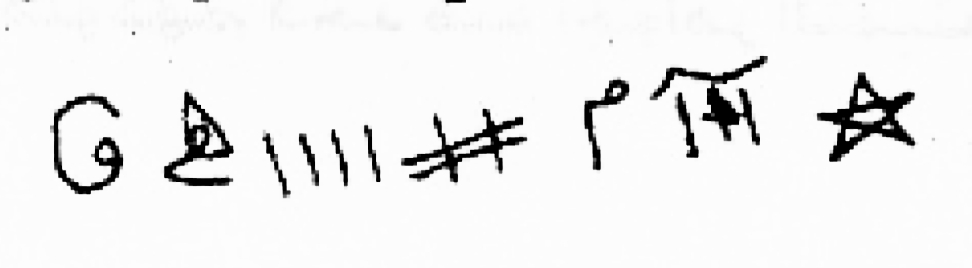
[Crop halaman 49 — crop presisi kiriman pengguna; nama berkas sama dengan halaman tujuan; bukan ekstraksi FINAL KHATAM dan bukan gambar ulang]
2. Penentuan Jam
«tidak ada hitungan di halaman ini»
Catatan penyunting
«التَّوَاقِيفِ» dan «السَّبَاسِبِ» tidak dapat dipastikan; keduanya dipertahankan tanpa diganti dan ditandai sebagai bacaan terbuka. «وَالشُّمُوخِ الْعَلِيقِ» susunan tidak jelas; dibiarkan.
akhir halaman memuat lambang/rajah tercetak. Saya tidak menggambar ulang dan tidak menebak bentuknya; untuk penerbitan, gambar asli halaman 49 wajib dipakai. Kutipan Quran pada halaman ini merujuk QS as-Sajdah 32:18 («أفمن كان مؤمناً كمن كان فاسقاً لا يستوون») dan potongan «تزلزلا» tidak saya temukan redaksinya seperti itu, sehingga hanya dicatat dan tidak dikoreksi.
5. Khususiyah — Waktu : Media : Bukhur
Waktu: tidak disebutkan dalam sumber unit ini : Media: ayat ditulis di antara kedua mata; Khatam Sulaiman bertanduk tujuh dengan huruf pada tiap tanduk ditulis pada tangan kanan; lambang/rajah akhir halaman (crop asli 49.jpg) : Bukhur: tidak disebutkan dalam sumber unit ini
M50 — Halaman 50, lanjutan pengobatan: tulisan, bakaran, dan tujuh بروات
Dan pada (bagian) dalam cincin, atau siapa yang mati kepada manusia; cincin ini memiliki urusan besar di sisi jin, dan inilah dia, maka pahamilah niscaya engkau mendapat petunjuk. Kemudian engkau menulis pada sumbu (kain) biru: «Sesungguhnya Kami menyediakan neraka bagi orang-orang zalim, yang gejolaknya mengepung mereka» sampai «(neraka itu) menghanguskan wajah» — tiga kali; lalu celupkan dalam ter (قطران) dan dekatkan pada hidung orang yang terkena, maka ia akan jatuh tersungkur, sementara engkau membacakan surah al-Jinn kepadanya serta banyak bakaran wangi (bakhur).
Jika engkau melihatnya jatuh tersungkur, tanyailah ia tentang suatu perkara. Jika ia termasuk jin mukmin — dan ciri jin mukmin: apabila ia memukul manusia lalu orang itu kerasukan, ia berselawat kepada Nabi ﷺ — maka buatlah perjanjian syarat dengannya; jangan mengikutinya dalam semua yang ia sebut dan jangan berdesakan dengannya, karena ia akan keluar. Jika ia kembali lagi, ulangi dengan tulisan ini; dituliskan untuknya tujuh «بروات», dan yang ditulis pada setiap بروة ialah nama tujuh raja, lalu engkau bakhurkan dengannya saat tidur, maka ia tidak kembali kepadanya. Dituliskan pula untuknya خاتم سليمان bersama آية الكرسي, الفلق, المعوذتين, الإخلاص, dan surah Quraisy, lalu digantungkan padanya, karena itu bermanfaat. Yang ditulis pada البروات ialah nama tujuh raja beserta raja-raja mereka. Ambillah permata-permata berharga ini dan peganglah.
4. Metode, Penentuan Jam, dan Catatan Penyunting
1. Metode
Praktik dari sumber (halaman 50): menulis «خاتم» pada kertas, menuliskan ayat «إنا أعتدنا للظالمين نارًا أحاط بهم سرادقها» pada sumbu/fatilah, dibakar dengan قطران lalu didekatkan ke hidung orang yang kerasukan sambil membaca surah al-Jinn dan banyak بخور; lalu berdialog dengan jin yang berbicara, dan menulis tujuh «بروات» berisi nama tujuh raja, digantungkan bersama خاتم سليمان, آية الكرسي, الفلق, المعوذتين, الإخلاص dan surah Quraisy. Semua ini dinisbatkan kepada penulis kitab; bukan anjuran medis dan tidak ada jaminan khasiat.
2. Penentuan Jam
«tidak ada hitungan di halaman ini»
Catatan penyunting
«أَخَلِّ» tidak jelas; mungkin «أَصْل» atau «أَهِلّ». «فَتِيلَةٍ زَرْقَاءَ» dibaca «sumbu biru»; bisa juga «زَيْتُونِيَّة» — dipertahankan.
«بَرَوَات» (jamak) dipertahankan; kemungkinan «بُرْهَات/بَرْهَت». «وَتَزَاحَمَهُ» janggal; dibiarkan. «سُورَةِ قُرَيْشٍ» disebut, bukan «قريش» sebagai nama lain.
penutup rangkaian pengobatan hal.49–50; semua praktik dinisbatkan pada penulis dan tidak menjamin kesembuhan.
5. Khususiyah — Waktu : Media : Bukhur
Waktu: saat tidur untuk membakhurkan tujuh barawāt : Media: sumbu (kain) biru bertuliskan ayat «إنا أعتدنا للظالمين نارًا…» tiga kali, dicelup ter (qaṭrān) dan didekatkan ke hidung orang yang terkena; bacaan surah al-Jinn; tujuh barawāt bertuliskan nama tujuh raja; Khatam Sulaiman bersama Ayat Kursi, al-Falaq, al-Mu‘awwidzatain, al-Ikhlāṣ, dan Quraisy ditulis lalu digantungkan : Bukhur: banyak bakaran wangi (bakhur) menyertai bacaan, dan tujuh barawāt dibakhurkan saat tidur; jenisnya tidak dirinci
M51 — Halaman 51, aturan siang–malam dan bahan bakaran
Wa sir 'alaa haadzihil qaa'idati 'alaa kullil jinni bimaa fiihimul qariinu, fadaa-iman hadharal mariidhu amaamaka tsumma abtadi-ul qiraa-ata 'alaihi bil 'aziimatid dahra wa syai-ihi hattaa yanthiqa wa yatakallama at ta'aarudhu minal jinni, fa-idzaa takallama fas-alhu min ayyil 'awaaridhi huwa: hal min 'awaaridhin nahaari fa-in kaana min ash-haabil laili fatrukhu ilal laili, wa in kaana min ash-haabin nahaari fa'aalijahu nahaaran, fa-ash-haabun nahaari laa yahkumu fiihim ahadun illaa nahaaran wa ash-haabul laili laa yahkumu fiihim illaa lailan.
Wal bukhuuru laa yakhfaa 'alaika an nathaqa bi-annahu maimunun al-aswadu aw maa dzukira, fabakhuuru maimunin al-mubyadhdhatus saa-ilatu aw bakhuurus sawdaani, wa bakhuurul ahmari 'ilkur ruumi wa huwal muqlul ahmaru wal jaawaa wa bakhuurul ardhi al-musthakaa aw mitsluhaa awil fulfulu aw kabaabatun wal khaatamu min tasykilihaa fii hirzin wa yu'allaqu fii dzaalikal makaaani wa laa yakuunu hunaaka shabiyyun wa laa man yuktsirul kalaama.
3. Terjemahan
Berjalanlah di atas kaidah ini terhadap semua jin, termasuk qarin. Maka senantiasa (bila) orang sakit hadir di hadapanmu, mulailah membacakan «عزيمة» terus-menerus sampai ia berbicara dan (menampakkan) pertentangan dari jin. Apabila ia sudah berbicara, tanyailah: dari golongan ‘aridh yang mana ia? Apakah termasuk ‘aridh siang? Jika ia termasuk penghuni malam, tinggalkanlah sampai malam; jika termasuk penghuni siang, obati pada siang hari. Penghuni siang tidak dapat dihakimi (diobati) kecuali pada siang, dan penghuni malam tidak kecuali pada malam.
Adapun bakaran wangi, tidak tersembunyi bagimu bahwa ia (jin) menyebut bahwa dirinya Maimun yang hitam atau apa yang telah disebut. Maka bakhur Maimun ialah «المبيضة السائلة» atau «السودان»; bakhur (jin) merah ialah ‘ilk Romawi yaitu muql merah dan jawa; bakhur bumi ialah mustaka atau sejenisnya, atau fulful, atau kababah. Adapun cincin, (dibuat) dari pembentukan (bahan) itu dalam sebuah jimat (hirz) dan digantungkan di tempat itu; jangan ada anak kecil di sana dan jangan ada orang yang banyak bicara.
4. Metode, Penentuan Jam, dan Catatan Penyunting
1. Metode
Praktik dari sumber (halaman 51): memulai dengan bacaan dan «عزيمة», lalu bertanya kepada jin yang berbicara: apakah ia dari golongan siang atau malam; siang diobati siang dan malam diobati malam; menyediakan بخور (mimun, الأحمر/العنبر, الجاوى, المصطكى, الفلفل, كبابة, dan semacamnya) serta menuliskan hijab yang digantungkan. Dinisbatkan pada penulis, tanpa jaminan.
2. Penentuan Jam
«tidak ada hitungan di halaman ini»
Catatan penyunting
«فَدَائِمًا» mungkin «فَإِذَا»; «فَعَالِجَةً» mungkin «فَعَالِجْهُ»; keduanya dibiarkan dan dicatat.
nama-nama bahan tidak semuanya pasti: «الْمُبْيَضَّةُ السَّائِلَة» dan «السَّوْدَان» dibiarkan sebagai istilah cetak; «الْجَاوَى» bisa «الجاوي». «الْمُصْطَكَى» = mastika.
5. Khususiyah — Waktu : Media : Bukhur
Waktu: penghuni siang diobati pada siang dan penghuni malam pada malam (yang malam ditinggalkan sampai malam) : Media: bacaan dan ‘azīmah; khatam dibentuk dalam ḥirz dan digantungkan di tempat itu : Bukhur: menurut golongan: untuk Maimūn «al-mubyaḍḍah as-sā’ilah» atau «bakhūr as-sūdān»; untuk al-Aḥmar ‘ilk Rūmī/muql merah dan jāwī; untuk (jin) bumi muṣṭakā atau semacamnya, fulful, atau kabābah (sebagian istilah tidak pasti)
M52 — Halaman 52, Fasal Kedua Belas: syarat kerja satu sampai sembilan
Al-fashluts tsaaniya 'asyara. Wa haadzihisy syuruuthul latii 'alaihaa madaarul 'amali: an yakuunal makaanu nazhiifan, wa minhaa an yakuuna fil makaaani haa-idhun wa lau tilkal aadamiyyatil latii ashaabahal 'aaridhu famahmaa 'aalaijtahaa wa hiya haa-idhun laa yakmulu 'amaluka. Ats-tsaalitsu: an takuuna fis sitri. Ar-raabi'u: an laa yuktsiral kalaama hunaaka. Al-khaamisu: an tu'aalija ahlan nahaari nahaaran wa ahlal laili lailan minal jinni. As-saadisu: man hadhara fil makaaani yarfa'u shautahu bish shalaati 'alan nabiyyi shallallaahu 'alaihi wa sallama likai yanjahal 'amalu wa yaduuma 'alaa dzaalika. As-saabi'u: an yahdhura hunaaka bakhuurun. Ats-tsaaminu: idzaa kunta ta'zimu wa syara'ta fil 'amali falaa tabiq 'alal mushaabi hirzan. At-taasi'u: an yakuunal 'amalu tahtas saqfi aw tahta haa-ilin bainaka wa bainas samaa-i.
3. Terjemahan
Fasal kedua belas. Inilah syarat-syarat yang menjadi poros kerja: — tempat harus bersih; di antaranya: di tempat itu tidak ada perempuan haid — meskipun perempuan itu sendiri yang terkena ‘aridh; kapan pun engkau mengobatinya sedang ia haid, pekerjaanmu tidak sempurna. — Ketiga: engkau bekerja dalam keadaan tertutup. — Keempat: jangan banyak bicara di situ. — Kelima: engkau mengobati penghuni siang pada siang hari dan penghuni malam pada malam hari dari (golongan) jin. — Keenam: siapa yang hadir di tempat itu mengangkat suaranya dengan selawat kepada Nabi ﷺ agar pekerjaan berhasil dan berlangsung terus. — Ketujuh: di situ harus ada bakaran wangi. — Kedelapan: apabila engkau berniat dan mulai bekerja, jangan tinggalkan hirz pada orang yang terkena. — Kesembilan: pekerjaan harus di bawah atap atau di bawah penghalang antara engkau dan langit.
4. Metode, Penentuan Jam, dan Catatan Penyunting
1. Metode
Praktik dari sumber (halaman 52): syarat kerja — tempat bersih dan tidak ada perempuan haid, bekerja dalam keadaan tertutup (ستر), tidak banyak bicara, mengobati penghuni siang pada siang dan penghuni malam pada malam, mengangkat suara dengan selawat, menghadirkan bakhur, «عزم» dan «شرطة», tidak menggantung hirz, dan bekerja di bawah atap atau penghalang antara engkau dan langit. Dinisbatkan pada penulis.
2. Penentuan Jam
«tidak ada hitungan di halaman ini»
Catatan penyunting
penomoran cetakan melompat — sesudah syarat pertama langsung «الثالث»; kemungkinan syarat kedua hilang dalam cetakan, dan hal itu dibiarkan. «لَا تَبِقْ» kemungkinan «لَا تُبْقِ». «حَائِلٍ» dibaca penghalang.
5. Khususiyah — Waktu : Media : Bukhur
Waktu: penghuni siang pada siang dan penghuni malam pada malam : Media: tempat bersih tanpa perempuan haid; keadaan tertutup (satr); selawat dengan suara diangkat; ‘azm dan syarṭah; tanpa menggantung ḥirz; bekerja di bawah atap atau penghalang dari langit : Bukhur: dihadirkan selama pekerjaan; jenisnya tidak dirinci pada unit ini
M53 — Halaman 53, syarat sepuluh sampai lima belas
Al-'aasyiru: laa yu'aaliju mushaaban 'inda baabi baitin aw baabi daarin. Al-haadii 'asyara: an yakuunal mushaabu jaalisan raaqidan fa-in lam yaqdir 'alal juluusi baana kanal 'aaridhu qad ashaaba rijlahu fayaqbidhuhur rijaalu wa yujlisuunahu baina yadail mu'azzimi wa yu'aaliju. Wa in kaanatil mar-atul latii ashaabahal 'aaridhu falaa yujlisuhaa illan nisaa-u kullu jinsin 'indal 'ilaaji illaa man kaana min jinsihi, wa in kaanal mushaabu rajulan wa hadharahu aktsarun nisaa-i yubthilu 'amalahu wa laa yakmulu, wa kadzaalikal mar-atu idzaa katsura 'indahar rijaalu.
Ats-tsaanii 'asyara: 'ilaajul jinni fii arba'ati 'azaa-ima wa tabaakhiirin wa adhaanin wa kitaabati hijaabinil ladzii yu'zamu 'alaihaa laabudda minal bukhuuri wal ladzii yudhanu bihi laabudda minal kitaabati, wa qiila hum arba'atun yahtaaju ilaihim kullu mu'aaridhin minal jinni. Ats-tsaalitsa 'asyara: an nu'aalijaha shabaahan wa ba'dal 'ashri wa ba'dal maghribi wa 'indas sahara, wa fii haadzihil awqaati yahkumu 'alal jinnith thayyaarati. Ar-raabi'a 'asyara: idzaa kaanal 'aaridhu fil mar-ati falaa yujaami'uhaa zaujuhaa fii muddatil 'ilaaji wa laa yudhaaji'uhaa aw yanaamu bijiwaarihaa fil firaasyi. Al-khaamisa 'asyara: laa yaqrabu saahata man i'taradha bik-yati naarin.
3. Terjemahan
Kesepuluh: ia tidak mengobati orang yang terkena di depan pintu rumah atau pintu pekarangan. Kesebelas: orang yang terkena harus dalam keadaan duduk (atau) berbaring; jika ia tidak mampu duduk, itu tanda ‘aridh telah mengenai kedua kakinya — maka para lelaki memegangnya dan mendudukkannya di hadapan ahli «عزيمة», lalu ia mengobati. Jika yang terkena adalah perempuan, janganlah mendudukkannya kecuali perempuan (yang mendampingi), setiap jenis (kelamin) saat pengobatan, kecuali orang yang sejenis dengannya. Jika yang terkena lelaki dan hadir banyak perempuan, itu membatalkan pekerjaannya dan tidak sempurna; demikian pula perempuan apabila di sisinya banyak lelaki.
Kedua belas: pengobatan jin itu pada empat «عزائم» dan pengasapan, minyak-minyakan, dan tulisan hijab; yang dibacakan azimat harus dengan bakhur, dan yang diolesi minyak harus dengan tulisan. Dikatakan bahwa mereka empat yang dibutuhkan setiap penentang dari jin. Ketiga belas: kami mengobatinya pada pagi, setelah Asar, setelah Magrib, dan pada waktu sahur; pada waktu-waktu ini dihakimi jin yang terbang. Keempat belas: apabila ‘aridh ada pada perempuan, janganlah suaminya menggaulinya selama masa pengobatan, dan jangan bersebelahan atau tidur di sisinya dalam satu tempat tidur. Kelima belas: ia tidak mendekati halaman orang yang menghadang dengan besi panas (kay).
4. Metode, Penentuan Jam, dan Catatan Penyunting
1. Metode
Praktik dari sumber (halaman 53): tidak mengobati di depan pintu rumah, mengatur posisi duduk/berbaring orang yang terkena, tidak mendudukkan perempuan yang terkena di samping perempuan lain kecuali sesama jenis, empat «عزائم» dengan pembakaran dan minyak serta tulisan hijab, waktu pengobatan pagi–setelah Asar–setelah Magrib, dan larangan menggauli istri selama masa pengobatan. Dinisbatkan pada penulis.
2. Penentuan Jam
«tidak ada hitungan di halaman ini»
Catatan penyunting
«بَانَ كَانَ» janggal; mungkin «بَيَانُ كَانَ» atau «فَإِنَّ». «الْمُعَزِّمِ» dibaca mu‘azzim (ahli azimat) — dibedakan dari «عَزَائِم».
«بِكْيَةِ نَارٍ» dibiarkan; kemungkinan «بِكَيَّةِ نَار» (besi panas) — maknanya ditandai terbuka. «الطَّيَّارَةِ» jamak/jenis jin terbang.
5. Khususiyah — Waktu : Media : Bukhur
Waktu: pagi, sesudah Asar, sesudah Magrib, dan waktu sahur; selama pengobatan suami tidak menggauli istri yang terkena : Media: empat ‘azā’im dengan pengasapan; minyak-minyakan yang disertai tulisan; tulisan hijab; pengaturan duduk/berbaring dan pendamping sesama jenis; tidak di depan pintu rumah : Bukhur: wajib menyertai yang dibacakan azimat; jenisnya tidak dirinci
M54 — Halaman 54, syarat enam belas sampai delapan belas dan ringkasan
As-saadisa 'asyara: laa yaghtasilul mushaabu min ghairi sitrin. As-saabi'a 'asyara: fii itmaami 'ilaajil mushaabi sawaa-un kaana rajulan aw imra-atan yaghsilul mushaaba sawaa-un kaana rajulan aw imra-atan yaghsilu jasadahu, wa in qadaruu in qadaruu falyughassilhu ghairuhu. Ats-tsaamina 'asyara: an yalbasu tsiyaabal khasyini, wa a'lamu annii qad jama'tu laka minasy syuruuthil mutanaasiqati maa laa budda minhu wa hiya al-buq'atun nazhiifatu wa 'adamul haidhi was sitru wa laa yuktsirul kalaama wa 'ilaaju ahlil laili lailan wa ahlan nahaari nahaaran wash shalaatu 'alan nabiyyi shallallaahu 'alaihi wa sallama liman hadhara wal bukhuuru haadhirun shaa'idun wa laa yu'alliq hirzan wa laa yu'aaliju illaa tahta saqfin aw sitrin bainahu wa bainas samaa-i wa laa yakuunul 'amalu amaama baabin aw huwa jaalisun wal 'aziimatul qawiyyatu wath thayyaaratu fil 'undi wal ashaali wa laa yujaami'ul mu'aaridhata wa laa yanaamu ma'ahaa zaujuhaa fii firaasyin wal ghuslu lil jasadi qablal 'amali.
3. Terjemahan
Keenam belas: orang yang terkena tidak mandi tanpa penutup. Ketujuh belas: dalam menyempurnakan pengobatan orang yang terkena — baik lelaki maupun perempuan — ia memandikan tubuh orang itu; dan jika mereka (yang hadir) mampu, hendaklah orang lain yang memandikannya. Kedelapan belas: hendaklah ia memakai pakaian kasar. Ketahuilah bahwa aku telah menghimpun untukmu syarat-syarat yang serasi yang tidak boleh ditinggalkan, yaitu: tempat bersih, tidak haid, tertutup, tidak banyak bicara, mengobati penghuni malam pada malam dan penghuni siang pada siang, selawat kepada Nabi ﷺ bagi yang hadir, bakhur hadir dan mengepul, tidak menggantung hirz, tidak mengobati kecuali di bawah atap atau penutup antara dia dan langit, pekerjaan tidak di depan pintu atau (orang itu) duduk, «عزيمة» yang kuat, (menangani) jin terbang pada waktu petang dan malam, tidak menggauli (istri) yang terkena, suaminya tidak tidur bersamanya dalam satu tempat tidur, dan memandikan tubuh sebelum bekerja.
4. Metode, Penentuan Jam, dan Catatan Penyunting
1. Metode
Praktik dari sumber (halaman 54): syarat 16–18 — tidak memandikan orang yang terkena tanpa penutup, baik lelaki memandikan lelaki maupun perempuan memandikan perempuan, dan mandi sebelum bekerja; ringkasan syarat (kebersihan, tidak haid, tertutup, tidak banyak bicara, mengobati siang/malam, selawat, bakhur, tidak menggantung hirz, di bawah atap, tidak di depan pintu, duduk, sesama jenis, empat عزائم, waktu-waktu tertentu, tidak berhubungan selama pengobatan, menjauhi kay). Dinisbatkan pada penulis.
2. Penentuan Jam
«tidak ada hitungan di halaman ini»
Catatan penyunting
«إِنْ قَدَرُوا» terulang dua kali pada cetakan — dipertahankan; «فَلْيُغَسِّلْهُ غَيْرُهُ» bentuk tidak lazim. «الْعُنْدُ وَالْأَصَال» tidak jelas; kemungkinan waktu petang — ditandai terbuka.
5. Khususiyah — Waktu : Media : Bukhur
Waktu: mandi sebelum bekerja; penghuni siang pada siang dan penghuni malam pada malam; jin terbang pada petang dan malam : Media: memandikan orang yang terkena dengan penutup dan oleh sesama jenis; pakaian kasar; ‘azīmah yang kuat; syarat kerja ringkasan (bersih, satr, selawat, tanpa ḥirz gantung, di bawah atap) : Bukhur: hadir dan mengepul; jenisnya tidak dirinci
M55 — Halaman 55, hijab البقرة–يس, qarin yang mencintai, dan susunan bacaan
Nafsahu annal laaha ta'aalaa awda'a sirrahu fil aqsaami wal kitaabati wal aayaatil bayyinaati wa laa ya'shill laaha bifarjin wa laa yaghtasilu tahta syajaratin wa laa yakhruju bilailin wa laa yaqrabun nisaa-a fii ayyaamil haidhi wal yata'awwadz billaahi min syarril jinni wal insi wasy syayaathiini wa liyakun ma'ahu hijaabun fiihi khawaatimu suuratil baqarati wa suurati yasiin yahjubuunahu minal 'afaariiti.
A'lam iiha al-akhul mu'minu annal qariina minal jinni idzaa ahabbal mar-ata khadha'ahaa lahu wa ab'adar rijaala 'anhaa liyu'aasyirahaa huwa wa yamna'u ayya zawaajin, wa idzaa kaanat mutazawwijatan ja'alal musyaakala bainaz zaujaini katsiiratan hattaa yakhrabal baitu bith thalaaqi wa yanfarida bil mar-ati wahdahaa. Wa kadzaalikal qariinu minal jinnil insiyyi idzaa ahabba rajulan minal insi fa'alat bihi kadzaalika wa ja'alatiz zaujata taraa asyyaa-a mur'ibatan wa rubba-maa taraal mar-atu rajulan minal jinni yujaa-wiru zaujahaa aw yaraz zauju imra-atan bijiwaari zaujatihi, wa haadzaa yahdutsu katsiiran wa ra-aitul 'ahu annahu katsiirun wa 'aalaijtuhu katsiiran wa idzaa aradta nihaayatan lil qariini wa qatalta faqra': al-faatihatan wa awwalal baqarati wa khawaatimal baqaratil arba'atal uulaa wal arba'ata al-akhiirah wa aayatal kursiyyi fil wasathi bainahum aakhira suuratil hasyri.
3. Terjemahan
(Ia berkata tentang) dirinya bahwa Allah—Mahatinggi—menitipkan rahasia-Nya pada sumpah-sumpah, tulisan, dan ayat-ayat yang nyata; dan janganlah ia mendurhakai Allah dengan kemaluan, jangan mandi di bawah pohon, jangan keluar pada malam hari, jangan mendekati perempuan pada hari-hari haid. Hendaklah ia berlindung kepada Allah dari keburukan jin, manusia, dan setan-setan; dan hendaklah bersamanya hijab yang berisi خواتم surah al-Baqarah dan surah Yasin yang menghalanginya dari para ‘ifrit.
Ketahuilah, wahai saudara yang mukmin, bahwa qarin dari (golongan) jin apabila mencintai seorang perempuan, ia menundukkannya kepadanya dan menjauhkan para lelaki darinya agar ia sendiri yang menggaulinya, dan ia menghalangi pernikahan apa pun. Jika perempuan itu sudah menikah, ia membuat perselisihan antara kedua suami-istri menjadi banyak, sehingga rumah hancur dengan perceraian dan ia menyendiri dengan perempuan itu. Demikian pula qarin dari jin perempuan: jika ia mencintai seorang lelaki dari manusia, ia melakukan hal yang sama dan membuat istrinya melihat hal-hal yang menakutkan; kadang perempuan melihat lelaki jin berada di samping suaminya, atau suami melihat perempuan (jin) di samping istrinya. Hal ini sering terjadi dan aku telah melihatnya banyak, serta mengobatinya banyak. Jika engkau menghendaki berakhirnya qarin dan terbunuhnya, bacalah: al-Fatihah, awal al-Baqarah, empat خواتم pertama al-Baqarah dan empat (خواتم) terakhir, dengan آية الكرسي di tengah di antara mereka, dan akhir surah al-Hasyr.
4. Metode, Penentuan Jam, dan Catatan Penyunting
1. Metode
Praktik dari sumber (halaman 55): hijab berisi خواتم سورة البقرة dan سورة يس untuk menghalangi ‘ifrit; penjelasan bahwa qarin jin yang mencintai seseorang menghalangi pernikahan dan membuat pasangan melihat hal menakutkan; susunan bacaan: الفاتحة, awal البقرة, empat خواتم pertama dan empat خواتم terakhir البقرة, آية الكرسي di tengah, dan akhir سورة الحشر. Dinisbatkan pada penulis.
2. Penentuan Jam
«tidak ada hitungan di halaman ini»
Catatan penyunting
«نَفْسَهُ» pada awal halaman menyambung kalimat halaman 54 yang terpotong; saya pertahankan tanpa menambah kata. «خَوَاتِمُ سُورَةِ الْبَقَرَةِ» = potongan-potongan awal/akhir surah; bukan penggalan yang saya karang.
«إِيهَا» kemungkinan «أَيُّهَا» (tanpa ya) — dibiarkan. «الْإِنْسِيّ» di sini berarti jin berjenis perempuan dari golongan manusia-jin; saya terjemahkan «jin perempuan». «يَجُوَارُ» kemungkinan «يُجَاوِر»; «يَخْرَبَ» kemungkinan «يَخْرَبَ/يُخَرِّب». «وَقَتَلْتَ» bisa «لِقَتْلِهِ»; ditandai terbuka.
5. Khususiyah — Waktu : Media : Bukhur
Waktu: larangan pendamping pada unit ini: tidak keluar pada malam hari dan tidak mendekati perempuan pada hari-hari haid : Media: hijab berisi khawātim surah al-Baqarah dan surah Yāsīn; susunan bacaan al-Fātiḥah, awal al-Baqarah, empat khawātim pertama dan empat terakhir al-Baqarah dengan Ayat Kursi di tengah, dan akhir al-Ḥasyr : Bukhur: tidak disebutkan dalam sumber unit ini
«Seandainya Kami turunkan Al-Qur’an ini kepada sebuah gunung, niscaya engkau melihatnya tunduk dan terbelah» sampai akhir الإخلاص dan المعوذتين — tiga kali. Demikianlah engkau meletakkan (bacaan) «نهاية القرين» dan ia terbunuh saat itu. Ketahuilah, wahai saudaraku yang mukmin, bahwa jin itu kabilah-kabilah yang sulit diketahui jumlahnya; setiap hari muncul para pembangkang, jin-jin terbang, ‘ifrit, dan setan-setan dari mereka yang menyakiti hamba-hamba Allah tanpa sebab kecuali hawa nafsu mereka; mereka memiliki hawa nafsu seperti manusia sepenuhnya.
Dan aku mencukupkan diri dengan keterangan ini, dan aku akan memberimu sebagian faedah yang tidak bisa ditinggalkan pada masa ini, yaitu (hal-hal) rohani, pelepasan (ikatan), «رباط», dan kesembuhan; dan Allah-lah Yang memberi taufik.
4. Metode, Penentuan Jam, dan Catatan Penyunting
1. Metode
Praktik dari sumber (halaman 56): mengulang bacaan susunan itu tiga kali dan menempatkan «نهاية القرين» pada tempat yang halal; penulis menyatakan sulitnya mengetahui jumlah kabilah jin dan bahwa ia mencukupkan diri pada keterangan ini serta berjanji memberi sebagian faedah. Din Isbatkan pada penulis; tidak ada jaminan.
2. Penentuan Jam
«tidak ada hitungan di halaman ini»
Catatan penyunting
kutipan «لو أنزلنا هذا القرآن على جبل» mengacu QS al-Hasyr 59:21; di sini dipakai sebagai bacaan, bukan tafsir. «الْإِخْلَاصِ» dan «الْمُعَوِّذَتَيْن» disebut sebagai bagian rangkaian.
penutup fasal dan pengakuan keterbatasan pengetahuan; ini alasan saya tidak mengarang angka kabilah.
«سَاعْطِي» kemungkinan «سَأُعْطِي»; dipertahankan bentuk cetak. «الرِّبَاط» di sini istilah teknis yang tidak saya pastikan maknanya (ikatan/pertalian); ditandai terbuka.
5. Khususiyah — Waktu : Media : Bukhur
Waktu: tidak disebutkan dalam sumber unit ini : Media: rangkaian bacaan dari «لو أنزلنا هذا القرآن على جبل…» sampai akhir al-Ikhlāṣ dan al-Mu‘awwidzatain diulang tiga kali sebagai penutup susunan unit sebelumnya : Bukhur: tidak disebutkan dalam sumber unit ini
M57 — Halaman 57, Fasal Ketiga Belas: doa untuk segala penyakit
Al-fashluts tsaalitsa 'asyara. Faa-idatun lit tadaawii min jamii'il amraadhi. Bismillaahir rahmaanir rahiim wa shallal laahu 'alaa sayyidinaa muhammadin wa 'alaa aalihi wa shahbihi wa sallama. Laqad jaa-akum rasuulun min anfusikum 'aziizun 'alaihi maa 'anittum ilaa aakhirisy suurati wal ikhlaashi - wal mu'awwidzataini - wal faatihaati - wa nunazzilu minal qur-aani maa huwa syifaa-un wa rahmatun lil mu'miniina - lau anzalnaa haadzal qur-aana 'alaa jabalin lara-aitahu khaasyi'an mutashaddi'an ilaa aakhirisy suuratil hasyri - Allaahumma antasy syaafii wa antal muntaqimu - wa antal mu'aafii wa antal mublii - wa antal waaqii wa antal mu-allimu - wa antar raaqii
Khalaqtanaa min sulaalatin min maa-in mahiin - wa ja'altaanaa fii qaraarin makiin - ilaa qadarin ma'luum - fa-as-aluka bi-asmaa-ikal husnaa wa dzikrikal asnaa wa shifaatikal 'ulyaa yaa man biyadihil ibtilaa-u war ruqyaa wal mamaatu wal hayaa wal 'aafiyatu wasy syifaa-u wal wafaa-u wa maaliku jamii'il asyyaa-i wa khaaliquhaa wa baari-u jamii'il ahyaa-i wa raaziquhaa as-aluka bihaqqi habiibikal a'zhzhami sayyidinaa muhammadin shallallaahu 'alaihi wa sallama wa mu'jizaatihi wa bihaqqi khaliilika ibraahiima wa da'watihi wa bihaqqi ruuhika 'iisaa wa raf'atihi.
3. Terjemahan
Fasal ketiga belas. Faedah untuk berobat dari segala penyakit. Dengan nama Allah Yang Maha Pengasih dan Maha Penyayang; semoga Allah melimpahkan selawat dan salam kepada tuan kami Muhammad, keluarganya, dan para sahabatnya. «Sungguh telah datang kepadamu seorang rasul dari kalangan kamu sendiri; berat terasa olehnya penderitaanmu» sampai akhir surah, (lalu) الإخلاص, المعوذتين, الفاتحة, «Dan Kami turunkan dari Al-Qur’an sesuatu yang menjadi penyembuh dan rahmat bagi orang-orang mukmin», «Seandainya Kami turunkan Al-Qur’an ini kepada sebuah gunung, niscaya engkau melihatnya tunduk dan terbelah» sampai akhir surah al-Hasyr. Ya Allah, Engkaulah Yang Menyembuhkan dan Yang Membalas; Engkaulah Yang Memberi kesembuhan dan Yang Mengujikan; Engkaulah Yang Melindungi dan Yang Menimpakan rasa sakit; Engkaulah Yang Menyembuhkan.
«Engkau menciptakan kami dari sari air yang hina, dan Engkau menempatkan kami di tempat yang kokoh sampai waktu yang ditentukan.» Maka aku memohon kepada-Mu dengan nama-nama-Mu yang terbaik, dengan sebutan-Mu yang paling tinggi, dan sifat-sifat-Mu yang luhur; wahai Yang di tangan-Nya ujian, ruqyah, kematian, kehidupan, kesehatan, kesembuhan, dan kesetiaan; Yang memiliki dan menciptakan segala sesuatu; Yang menciptakan dan memberi rezeki kepada semua yang hidup. Aku memohon kepada-Mu dengan hak kekasih-Mu yang agung, tuan kami Muhammad ﷺ beserta mukjizat-mukjizatnya, dengan hak kekasih-Mu Ibrahim dan doanya, dan dengan hak ruh-Mu Isa serta pengangkatannya.
4. Metode, Penentuan Jam, dan Catatan Penyunting
1. Metode
Praktik dari sumber (halaman 57): membaca doa panjang untuk pengobatan segala penyakit, dibuka dengan basmalah, selawat, kutipan ayat (آخر السورة, الإخلاص, المعوذتين, الفاتحة, آل عمران, الحشر), lalu rangkaian asma dan qasam (بحق خليلك إبراهيم…). Dinisbatkan pada penulis; tidak ada jaminan medis dan tidak menggantikan pengobatan.
2. Penentuan Jam
«tidak ada hitungan di halaman ini»
Catatan penyunting
ada kesalahan cetak yang saya biarkan: «الْمُبْلِي» (lazimnya «الْمُبْتَلِي»), «الْمُؤَلِّم» ditulis dengan bentuk yang menyerupai «المؤلم». «أَخِرَ السُّورَةِ» jelas merujuk QS at-Taubah 9:128.
«وَالْمَمَاتُ وَالْحَيَا» ditulis tanpa alif pada cetakan; «الْحَيَاة» dimaksudkan dan tidak saya tambahkan. «ذِكْرِكَ الْأَسْنَى» dipertahankan.
5. Khususiyah — Waktu : Media : Bukhur
Waktu: tidak disebutkan dalam sumber unit ini : Media: doa panjang dibuka basmalah dan selawat, memuat kutipan akhir surah (dirujuk catatan ke at-Taubah 9:128), al-Ikhlāṣ, al-Mu‘awwidzatain, al-Fātiḥah, Āli ‘Imrān, dan al-Ḥasyr, lalu rangkaian asma dan qasam : Bukhur: tidak disebutkan dalam sumber unit ini
M58 — Halaman 58, penutup doa dan wafaq مخمس (rajah)
Wa bihaqqi shafiyyika nuuhin wa safiinatihi wa maa tanaasala bainahumaa minal anbiyaa-i wal mursaliina isyfinii bisyifaa-ika wa daawinii bidawaa-ika wa 'aafinii bi'aafiyatika wa bimu'aafaatika fa-innaka laa ilaaha illaa anta wa laa rabba siwaaka wakhwiqlahu wa shallal laahu 'alaa sayyidinaa muhammadin wa 'alaa aalihi wa shahbihi.
«Mukhammasun lijamii'il amraadhi yahyi wa yusyfaa». [Wafaq 5x5: lihat tabel aslinya pada gambar halaman 58.]
3. Terjemahan
Dan dengan hak orang pilihan-Mu Nuh serta bahteranya, dan (keturunan) yang beranak-pinak di antara keduanya dari para nabi dan rasul: sembuhkanlah aku dengan kesembuhan-Mu, obatilah aku dengan obat-Mu, sehatkanlah aku dengan kesehatan-Mu dan pemberian kesehatan-Mu, karena sesungguhnya Engkaulah yang tidak ada tuhan selain Engkau dan tidak ada tuhan selain Engkau. Semoga Allah melimpahkan selawat kepada tuan kami Muhammad, keluarganya, dan para sahabatnya.
Wafaq (rajah angka) 5×5 pada halaman 58, dengan judul «Mukhammas untuk segala penyakit, (semoga) ia hidup dan sembuh». Angka yang terbaca, baris demi baris (kanan ke kiri): ١١ | ١٥ | ٨٤٢٨ | ٣ | ٧ // ٤ | ٨ | ١٢ | ١٦ | ٨٤٢٤ // ١٧ | ٨٤٢٥ | التوكيل | ٩ | ١٣ // ٥ | ١٠٤ | ١٨ | ٨٤٢٦ | ١٠١ // ٨٤٢٧ | ٦ | ١٠ | ٢٠ | ١٩. Saya tidak menggambar ulang kotak, garis, dan susunan sel; bentuk aslinya wajib diambil dari gambar halaman 58.
4. Metode, Penentuan Jam, dan Catatan Penyunting
1. Metode
Praktik dari sumber (halaman 58): menyelesaikan doa dengan qasam (نوح dan سفينته, إبراهيم, عيسى), lalu memuat wafaq 5×5 («مخمس لجميع الأمراض») berisi angka dan kata «التوكيل». Wafaq ini TIDAK saya gambar ulang dan bentuk kotaknya hanya boleh diambil dari gambar asli halaman 58; angka yang terbaca saya catat sebagai catatan, bukan sebagai anjuran.
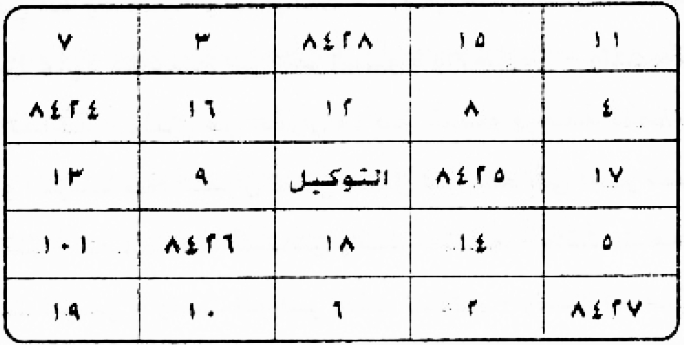
[Crop halaman 58 — crop presisi kiriman pengguna; nama berkas sama dengan halaman tujuan; bukan ekstraksi FINAL KHATAM dan bukan gambar ulang]
2. Penentuan Jam
«tidak ada hitungan di halaman ini»
Catatan penyunting
«وَمَاتَنَاسَلَ» kemungkinan «وَمَا تَنَاسَلَ»; «وَاخْوِقْلَهُ» tidak jelas (mungkin doa penutup yang tercetak rusak) — dibiarkan dan ditandai, tidak saya karang.
«يَحِىّ» kemungkinan «يُحْيِي»; «ويشفى» bisa «وَيُشْفَى». Sel yang tidak pasti: sudut kiri-bawah (٢٠/١٩) dan «١٠٤» (bisa ١٤ atau ١٣٤); sel tengah bertuliskan «التوكيل». Angka ٨٤٢٤–٨٤٢٨ berulang dan tampak sebagai kode, bukan hasil hitungan yang dapat saya periksa. Wafaq ini praktik yang dinisbatkan kepada penulis, bukan jaminan medis, dan tidak disajikan sebagai anjuran. Harakat dan tanda baca Arab bersifat editorial; kata dan angka yang tidak pasti dibiarkan apa adanya dan dicatat di audit.
5. Khususiyah — Waktu : Media : Bukhur
Waktu: tidak disebutkan dalam sumber unit ini : Media: penutup doa dengan qasam; wafaq mukhammas 5×5 «untuk segala penyakit» berisi angka dan kata at-taukīl (crop asli 58.jpg; beberapa sel tidak pasti—lihat Catatan penyunting) : Bukhur: tidak disebutkan dalam sumber unit ini
M59 — Halaman 59, qarin dan kritik terhadap pengakuan palsu
Qarin dan pengobatannya, serta yang dikuasai (jin) ruhani. Ketahuilah, wahai saudaraku yang mukmin, bahwa di dunia jin ada sebagaimana di dunia manusia: pada keduanya ada tabib-tabib, setan-setan, dan ‘ifrit; di sana ada kabilah-kabilah banyak yang hanya Allah yang menghitungnya. Ada lelaki dan perempuan dari manusia yang tidak mengetahui apa pun tentang dunia ini tetapi mengaku berilmu, padahal mereka pembohong dan penipu serta membenarkan diri sendiri. Di antara mereka ada yang berkata bahwa ia berperang bersama jin melawan jin lain — ia dusta; jika engkau lihat keadaannya sekarang, engkau dapati ia sakit, lalu engkau bertanya: mengapa jin tidak mengobatimu? Ia menjawab bahwa ia sedang dalam perjalanan menuju kesembuhan, karena jin benar-benar mengobatinya — dan hal itu berlangsung bertahun-tahun tanpa kesembuhan, karena ia dusta dan tidak mengetahui apa pun tentang mereka.
Tetapi, wahai saudaraku yang mukmin, (inilah) kenyataannya: wajib bagimu mengetahui beberapa hal; yang pertama: hari-hari, buruj, nama-nama bulan, nama para sulthan malaikat, nama tujuh raja, nama tujuh (jin) ruhani, nama tujuh bintang (دراري), dan nama empat kepala (رؤوس).
4. Metode, Penentuan Jam, dan Catatan Penyunting
1. Metode
Praktik dari sumber (halaman 59): peringatan penulis terhadap orang yang mengaku berhubungan dengan jin tetapi tidak menyembuhkan; lalu daftar pengetahuan yang harus dikuasai: hari-hari, buruj, nama-nama bulan, nama sulthan malaikat, nama tujuh raja, nama tujuh ruhani, nama tujuh bintang (دراري), dan seterusnya. Dinisbatkan pada penulis.
2. Penentuan Jam
«tidak ada hitungan di halaman ini»
Catatan penyunting
«حَصَرَهَا عِنْدَ اللَّهِ وَحْدَةٌ» susunannya rusak; saya pertahankan dan tidak menambal. «الْأَطِبَّاء» jamak; «يَدْعُونَ الْعِلْم» = mengaku berilmu.
«الْحَقِيقَةَ» mungkin mestinya «الْحَقِيقَةُ»; dipertahankan. «أَسْمَاءُ الْقَمَرِ» bisa berarti nama-nama (jin) yang dinisbatkan kepada bulan.
5. Khususiyah — Waktu : Media : Bukhur
Waktu: tidak disebutkan dalam sumber unit ini : Media: daftar pengetahuan prasyarat yang dituntut penulis: hari-hari, buruj, nama-nama bulan, sulṭān malaikat, tujuh raja, tujuh rūḥānī, tujuh bintang (darārī), dan empat kepala : Bukhur: tidak disebutkan dalam sumber unit ini
M60 — Halaman 60, hari-hari, planet, logam, dan awal buruj
1. Arab
الرُّؤُوسُ الْأَرْبَعَةُ
«الْأَيَّامُ» «…» [bersambung ke segmen berikutnya]
Ar-ru-uusul arba'atu. «Al-ayyaamu» «…» [tidak disalin penuh pada sumber kerja] khalaqal laahul ayyaama sab'atan wa awwaluhaa: 1 - al-ahadu - wa huwa yaumusy syamsi - wa ma'dinuhudz dzahabu; 2 - al-itsnaani - wa huwa yaumul qamari - wa ma'dinuhul fidhdhatu; 3 - ats-tsulaatsaa-u - wa huwa yaumul mirriikhi - wa ma'dinuhul hadiidu; 4 - al-arbi'aa-u - wa huwa yaumu 'uthaaridin - wa ma'dinuhuz zi-baqu; 5 - al-khamiisu - wa huwa yaumul musytarii - wa ma'dinuhul qashdiiru; 6 - al-jumu'atu - wa huwa yaumuz zuharati - wa ma'dinuhun nahaasu; 7 - as-sabtu - wa huwa yaumu zuhalin - wa ma'dinuhur rashasha.
Haadzihi hiyal ayyaamu wa likulli yaumin darajun minad daraaris sab'ati wad daraaris sab'atu hiyal latii tahkumu maa yaduuru fil ardhi wa fil insaani mitslal makdi wal jazri wa ghairihaa. «Al-abraaju» «…» [tidak disalin penuh pada sumber kerja] 1 - burjul hamali 2 - ats-tsauru 3 - al-jauzaa-u 4 - as-sarathaanu.
3. Terjemahan
Empat kepala (رؤوس). «Hari-hari»: Allah menciptakan hari menjadi tujuh, dan yang pertama: 1 — Ahad, yaitu hari matahari, dan logamnya emas; 2 — Senin, yaitu hari bulan, dan logamnya perak; 3 — Selasa, yaitu hari Mars, dan logamnya besi; 4 — Rabu, yaitu hari Merkurius, dan logamnya air raksa; 5 — Kamis, yaitu hari Jupiter, dan logamnya timah; 6 — Jumat, yaitu hari Venus, dan logamnya tembaga; 7 — Sabtu, yaitu hari Saturnus, dan logamnya timbal.
Inilah hari-hari itu; setiap hari memiliki derajat dari tujuh bintang (دراري), dan tujuh bintang itulah yang menghukumi apa yang berputar di bumi dan pada manusia, seperti pasang dan surut serta lainnya. «Buruj»: 1 — Aries (الحمل), 2 — Taurus (الثور), 3 — Gemini (الجوزاء), 4 — Cancer (السرطان).
4. Metode, Penentuan Jam, dan Catatan Penyunting
1. Metode
Praktik dari sumber (halaman 60): daftar hari satu sampai tujuh beserta planet (الشمس، القمر، المريخ، عطارد، المشتري، الزهرة، زحل) dan logam yang dinisbatkan kepadanya (الذهب، الفضة، الحديد، الزئبق، القصدير، النحاس، الرصاص); lalu awal daftar buruj. Dinisbatkan pada penulis sebagai kerangka pengetahuan, bukan anjuran.
2. Penentuan Jam
«tidak ada hitungan di halaman ini»
Catatan penyunting
«الْمِرِّيخ» pada cetakan; «الْمُشْتَرِي» dan «الزُّهَرَة» dipakai sebagai nama planet. «الرُّؤُوسُ الْأَرْبَعَةُ» tertinggal di kepala halaman sebagai sisa daftar halaman 59.
tabel pengetahuan astrologi penulis; bukan dalil syar‘i dan tidak menjamin apa pun.
pada cetakan tertulis «٤ - الثور» lalu «٤ - السرطان»; saya baca sebagai urutan ٢ untuk الثور — perbedaan ini dinyatakan terbuka. «الْجَوْزَاء» bisa «الجوزاء/الجوزاء».
5. Khususiyah — Waktu : Media : Bukhur
Waktu: tujuh hari Ahad–Sabtu dengan planet yang dinisbatkan penulis: Matahari, Bulan, Mars, Merkurius, Jupiter, Venus, Saturnus : Media: logam padanan tiap hari menurut penulis: emas, perak, besi, air raksa, timah, tembaga, timbal; awal daftar buruj: Aries, Taurus, Gemini, Cancer : Bukhur: tidak disebutkan dalam sumber unit ini
M61 — Halaman 61, buruj lima sampai dua belas dan nama-nama bintang
Praktik dari sumber (halaman 61): daftar buruj 5–12 (الأسد، السنبلة، الميزان، العقرب، القوس، الجدي، الدلو، الحوت), daftar tujuh bintang (الشمس…زحل), dan dua kolom nama bulan: «أسماء القمر» dan «أسماء القمر مقلوبه». Dinisbatkan pada penulis; nama-nama ini tidak saya koreksi ejaannya.
2. Penentuan Jam
«tidak ada hitungan di halaman ini»
Catatan penyunting
pada cetakan buruj bermula «٥ - الأسد» sehingga «الحمل» dihitung ١; urutan ini konsisten dengan halaman 60 setelah koreksi terbuka di sana.
tabel; angka dipertahankan seperti tercetak.
nama-nama ini sulit dipastikan hurufnya pada pindaian; saya menulis apa yang terbaca dan tidak mengoreksi menjadi nama yang saya kenal. Kemungkinan bacaan lain: «لِيَاخِيم/لِيَاخِم», «لِيَاشْلِش/لِيَاسْلِس», «شَلْيَاء/سَلْيَاء».
5. Khususiyah — Waktu : Media : Bukhur
Waktu: rujukan buruj 5–12 (Leo, Virgo, Libra, Scorpio, Sagitarius, Capricorn, Aquarius, Pisces), tujuh bintang/planet, dan dua kolom nama bulan (ejaan banyak nama tidak pasti) : Media: tidak disebutkan dalam sumber unit ini : Bukhur: tidak disebutkan dalam sumber unit ini
M62 — Halaman 62, sulthan malaikat dan tujuh raja
1. Arab
«أَسْمَاءُ سَلَاطِينِ الْمَلَائِكَةِ» «…» [bersambung ke segmen berikutnya]
«Nama para sulthan malaikat»: 1 — Jibril, Yang Kuat lagi Dipercaya; 2 — Mikail, malaikat rezeki; 3 — Izrail, yang ditugaskan atas ruh-ruh; 4 — Israfil, yang ditugaskan meniup sangkakala.
«Nama tujuh raja»: 1 — Madzhab, bertanggung jawab atas hari Ahad; 2 — Marrah, atas hari Senin; 3 — Al-Ahmar, atas hari Selasa; 4 — Barqan, atas hari Rabu; 5 — Syamhurasy, atas hari Kamis; 6 — Al-Abyadh, atas hari Jumat; 7 — Maimun, atas hari Sabtu.
4. Metode, Penentuan Jam, dan Catatan Penyunting
1. Metode
Praktik dari sumber (halaman 62): daftar empat sulthan malaikat (جبريل، ميكائيل، عزرائيل، اسرافيل) beserta tugas yang dinisbatkan, lalu daftar tujuh raja jin dengan hari yang menjadi tanggung jawabnya (الأحد…السبت). Dinisbatkan pada penulis; tidak ada jaminan.
2. Penentuan Jam
«tidak ada hitungan di halaman ini»
Catatan penyunting
«عَزْرَائِيل» ditulis demikian pada cetakan (bentuk lain: «عِزْرَائِيل»). «الْقَوِيُّ الْأَمِين» mengikuti cetakan, bukan susunan yang lazim dalam ayat.
«مَذْهَب» bisa «مُذْهِب»; «شَمْهُورَش» pada halaman 51 juga disebut «شمهورش» — dua ejaan, keduanya dipertahankan. «مَسْئُول» ditulis dengan hamzah pada cetakan.
5. Khususiyah — Waktu : Media : Bukhur
Waktu: tujuh raja menurut hari: Madzhab (Ahad), Marrah (Senin), al-Aḥmar (Selasa), Barqān (Rabu), Syamhūrasy (Kamis), al-Abyaḍ (Jumat), Maimūn (Sabtu); ejaan dipertahankan : Media: tidak disebutkan dalam sumber unit ini : Bukhur: tidak disebutkan dalam sumber unit ini
M63 — Halaman 63, empat kepala, tujuh ruhani, dan pembatalan sihir
1. Arab
«أَسْمَاءُ الرُّؤُوسِ الْأَرْبَعَة» «…» [bersambung ke segmen berikutnya]
Demikianlah, wahai saudaraku yang mukmin, aku hadapkan kepadamu segala hal tentang hari-hari. Jika engkau hendak mengobati seseorang pada hari apa pun dari tujuh hari, hendaklah engkau menghadirkan «malaikat hari yang tinggi» dan «malaikat ruhani» dengan meminta bantuan empat kepala beserta planet-planet, bakhur, dan عزيمة; lalu tahanlah para penghuni (jin), kemudian mulailah pengobatan dari qarin, karena ia menaati semua nama ini. Kami cukupkan sekian ini (dan sisanya) dalam kitab lain. (Pembatalan sihir dan bakhur untuk segala angin, sudah dicoba): Tansyiluk, Thalmasyi‘, Athsah, Askamuyah, ‘Akhbirah, Hakmuwa, Tanassih — dengan tanda pemisah tercetak di antara nama-nama itu.
4. Metode, Penentuan Jam, dan Catatan Penyunting
1. Metode
Praktik dari sumber (halaman 63): daftar empat «رؤوس» (مازر، كطم، قندورة، طيکل) dan tujuh ruhani (روفائيل، جبرائيل، سمسمائيل، ميكائيل، صرفيائيل، عنيائيل، كسفيائيل); lalu petunjuk memanggil «ملك اليوم» dan «ملك الروحاني» dengan bakhur dan عزيمة, serta judul «تبطيل السحر وبخور لجميع الرياح مجرب» dengan sederet nama. Dinisbatkan pada penulis; tanpa jaminan.
2. Penentuan Jam
«tidak ada hitungan di halaman ini»
Catatan penyunting
«كَطْمُ» bisa «كُطْم»; «طَيْكَل» bisa «طَيْكِل»; «عُنْيَائِيل» bisa «عِنْيَائِيل». Nama-nama ini dipertahankan seperti tercetak dan tidak saya samakan dengan ejaan lain.
«الْعُمَّارَ» = penghuni (jin); «اصْرِفِ» dibaca sebagai perintah menahan/menolak. Nama-nama pada baris terakhir sangat sulit dipastikan; saya menulis apa yang terbaca dan tidak mengoreksi. Tanda «٢» di antara nama saya anggap pemisah cetak, bukan angka.
5. Khususiyah — Waktu : Media : Bukhur
Waktu: pada hari apa pun dari tujuh hari, menurut raja hari dan raja rūḥānī yang bersangkutan : Media: daftar empat ru’ūs dan tujuh rūḥānī (ejaan dipertahankan); bantuan empat kepala beserta planet-planet; ‘azīmah; rangkaian nama pada judul «tabṭīl as-siḥr wa bakhūr li-jamī‘ ar-riyāḥ mujarrab» : Bukhur: disebutkan bersama ‘azīmah dan pada judul bakhur untuk segala angin; jenisnya tidak dirinci
M64 — Halaman 64, pembatalan sihir dan lambang خاتم سليمان
Wan nazhratus saw-u war rajfatu wal 'aksu was sihru wat ta'thiilu wa sihru saharatin wa makruu maakirihi wa min saa-iril jinni wasy syayaathiini wa junuudi ibliisa ajma'iina wat tawaabi'i wal qaraanni wa bihaqqi man qaala wa qauluhul haqqu qaala muusaa maa ji'-tum bihis sihru innal laaha sayubthiluhu innal laaha laa yushlihu 'amalal mufsidiina. Wa qadimnaa ilaa maa 'amiluu min 'amalin faja'alnaahu habaa-an mantsuuran. Ilaihi yash'adul kalimut thayyibu wal 'amalush shaalihu yarfa'uhu.
Allaahummash rif warfa' wadzhab 'an fulaanin kulla sihrin wa shadwi karaahiyatin wa tabthiilin wa min kulli maa yu'dziihi maadzaa? Jaa-a wa'du rabbii ja'alahu dakkan. Wa 'inda rabbii ja'alahu dakkan. Wa kaana wa'du rabbii haqqan wa bihaqqi haadzihil asmaa-i. Khaatamu sulaimaana: [rasm/pola pada gambar halaman 64]. Wal haugalatu wa shallal laahu 'alaa sayyidinaa muhammadin wa 'alaa aalihi wa shahbihi wa sallama. Yuktabu wa yuhmalu bimiskin wa za'faraanin wa maa-i wardin. Mujarrabun shahiihun.
3. Terjemahan
Dan (dari) pandangan buruk, keguncangan, pembalikan, sihir, penghentian (kerja), sihir para tukang sihir, tipu daya para penipu, dan dari seluruh jin serta setan dan tentara Iblis seluruhnya, juga «توابع» dan «قران»; dan dengan hak Dia yang berfirman — dan firman-Nya adalah kebenaran —: Musa berkata, «Apa yang kamu bawakan itu adalah sihir; sesungguhnya Allah akan membatalkannya; sesungguhnya Allah tidak memperbaiki perbuatan orang-orang yang merusak.» «Dan Kami hadapi segala amal yang mereka kerjakan, lalu Kami jadikan amal itu debu yang beterbangan.» «Kepada-Nya naiklah perkataan yang baik, dan amal saleh Dia angkat.»
Ya Allah, palingkanlah, angkatlah, dan hilangkanlah dari Fulan segala sihir, «صدو» kebencian, dan pembatalan, serta dari segala yang menyakitinya. «ماذا؟ جاء وعد ربي جعله دكا» — dan di sisi Tuhanku Dia menjadikannya rata; dan janji Tuhanku adalah benar; dan dengan hak nama-nama ini. خاتم سليمان: [di sini tercetak lambang bintang, bentuk, garis, dan huruf]. Dan hauqalah. Semoga Allah melimpahkan selawat dan salam kepada tuan kami Muhammad, keluarganya, dan para sahabatnya. Ditulis dan dibawa (sebagai jimat) dengan minyak misik, za‘faran, dan air mawar. Sudah dicoba dan sahih (menurut penulis).
4. Metode, Penentuan Jam, dan Catatan Penyunting
1. Metode
Praktik dari sumber (halaman 64): lanjutan «تبطيل السحر» dengan kutipan Quran (al-A‘raf tentang sihir Musa, Fatir tentang kalimat yang baik), doa «اللهم اصرف وارفع واذهب…», lalu baris lambang «خاتم سليمان» bergambar dan penutup «يكتب ويحمل بمسك وزعفران وماء ورد — مجرب صحيح». Rajah/lambang itu tidak saya gambar ulang; bentuknya harus diambil dari gambar asli halaman 64.
[Crop halaman 64 — crop presisi kiriman pengguna; nama berkas sama dengan halaman tujuan; bukan ekstraksi FINAL KHATAM dan bukan gambar ulang]
2. Penentuan Jam
«tidak ada hitungan di halaman ini»
Catatan penyunting
«مَكْرُو مَاكِرِهِ» pada cetakan tidak baku (mungkin «مَكْرِ مَاكِرِهِ»); dipertahankan. «الْقَرَانِّ» bisa «الْقُرَّان/الْقِرَان». Kutipan: QS Yunus 10:81 (redaksi «ما جئتم به السحر»), al-Furqan 25:23, Fatir 35:10 — saya catat rujukannya sebagai bantuan, bukan koreksi teks.
baris «خاتم سليمان» memuat lambang gambar (bintang lima, garis, dan huruf-huruf yang tidak dapat saya pastikan). Saya tidak menggambar ulang dan tidak menebak; untuk penerbitan wajib memakai pindaian halaman 64. «وَاذْهَبْ» bisa «وَأَذْهِبْ»; «مَاذَا؟» kemungkinan jejak cetak rusak; «صَدْوِ كَرَاهِيَةٍ» tidak jelas. «مُجَرَّبٌ صَحِيحٌ» adalah klaim penulis, bukan hasil uji saya.
5. Khususiyah — Waktu : Media : Bukhur
Waktu: tidak disebutkan dalam sumber unit ini : Media: kutipan Quran dan doa «allāhumma-ṣrif warfa‘ wa-dzhab…»; baris lambang Khatam Sulaiman bergambar (crop asli 64.jpg); tulisan ditulis dan dibawa sebagai jimat dengan minyak misik, za‘farān, dan air mawar : Bukhur: tidak disebutkan dalam sumber unit ini
M65 — Halaman 65, tulisan pengobatan dan lambang خاتم سليمان
«Lit tadaawii minal maradhi». Yuktabu fii inaa-in shiiniyyin biza'faraanin wa maa-i wardin wa yuhmaa bimaa-i bi'rin laa yarash niyyaraini. Bismillaahir rahmaanir rahiim (dzaalika takhfiifun min rabbikum wa rahmatun) (yuriidul laahu an yukhaffifa 'ankum wa khuliqal insaanu dha'iifan) (wa lahul maa sakana fil laili wan nahaari wa huwas samii'ul 'aliimu wa lau syaa-a laja'alahu saakinan) (an yasya' taskunir riihu fazhzhallna rawaakida 'alaa zhahrihaa).
Alif laam miim, alif laam miim shaad, alif laam miim raa, alif laam raa, alif laam miim raa, kaaf haa yaa 'ain shaad, thaa haa, thaa siin miim, alif laam miim (berulang lima kali), yaa siin, shaad, haa miim, haa miim 'ain siin qaaf, haa miim (berulang), qaaf, nuun. Bismillaahil ladzii laa yadhurru ma'asmihi syai-un fil ardhi wa laa fis samaa-i wa ju'ila fiihi rahmatun wa syifaa-un, Allaahummasyfinii antasy syaafii al-mu'aafii min kulli 'illatin wa maradhin syifaa-an laa yughaadiru saqaman wa laa alaman billadzii laa haula wa laa quwwata illaa billaahil 'aliyyil 'azhiimi, wa shallal laahu 'alaa sayyidinaa muhammadin wa 'alaa aalihi wa shahbihi ajma'iina. Khaatamu sulaimaana [gambar/lambang — lihat pindaian halaman 65].
3. Terjemahan
«Untuk berobat dari penyakit»: ditulis pada mangkuk porselen Cina dengan za‘faran dan air mawar, lalu dipanaskan dengan air sumur yang tidak pernah terkena matahari dan bulan. Dengan nama Allah Yang Maha Pengasih dan Maha Penyayang. «Itu adalah keringanan dari Tuhanmu dan rahmat»; «Allah hendak meringankan (beban)mu, dan manusia diciptakan dalam keadaan lemah»; «Dan milik-Nya apa yang diam (berada) pada malam dan siang, dan Dialah Yang Maha Mendengar lagi Maha Mengetahui; dan jika Dia menghendaki, Dia jadikan ia diam»; «Jika Dia menghendaki, Dia diamkan angin, sehingga (bahtera) itu tertahan di permukaannya».
Alif Lam Mim, Alif Lam Mim Shad, Alif Lam Mim Ra, Alif Lam Ra, Alif Lam Mim Ra, Kaf Ha Ya ‘Ain Shad, Tha Ha, Tha Sin Mim, Alif Lam Mim (lima kali), Ya Sin, Shad, Ha Mim, Ha Mim ‘Ain Sin Qaf, Ha Mim, Qaf, Nun. «Dengan nama Allah yang tidak ada sesuatu pun yang dapat membahayakan bersama nama-Nya, baik di bumi maupun di langit», dan dijadikan padanya rahmat dan kesembuhan. Ya Allah, sembuhkanlah aku; Engkaulah Yang Menyembuhkan, Yang Memberi kesehatan dari segala penyakit dan sakit, dengan kesembuhan yang tidak meninggalkan penyakit maupun rasa sakit, dengan (nama) Yang tiada daya dan kekuatan kecuali dengan (pertolongan) Allah Yang Mahatinggi lagi Mahaagung. Semoga Allah melimpahkan selawat kepada tuan kami Muhammad, keluarganya, dan para sahabatnya seluruhnya. خاتم سليمان: [gambar/lambang — lihat pindaian halaman 65].
4. Metode, Penentuan Jam, dan Catatan Penyunting
1. Metode
(لِلتَّدَاوِي مِنَ الْمَرَضِ) — praktik: menulis pada mangkuk porselen Cina dengan za‘faran dan air mawar, lalu dipanaskan dengan air sumur yang tidak terkena dua benda bercahaya (matahari–bulan); disertai rangkaian huruf pembuka surah dan doa; di bagian bawah halaman tercetak lambang خاتم سليمان. Semua dinisbatkan pada penulis kitab; bukan anjuran medis dan tidak ada jaminan.
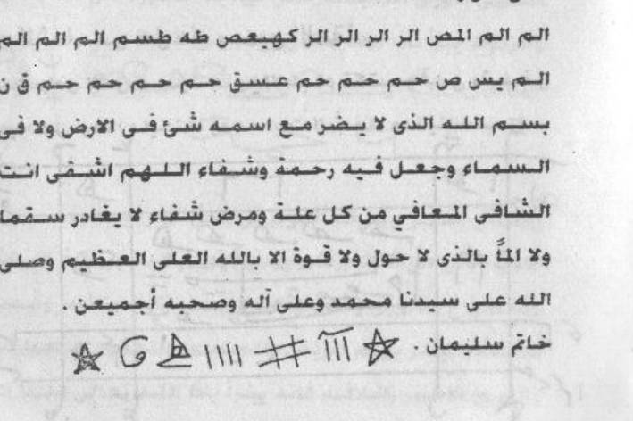
[Crop halaman 65 — crop presisi kiriman pengguna; nama berkas sama dengan halaman tujuan; bukan ekstraksi FINAL KHATAM dan bukan gambar ulang]
RAJAH HAL.65 — خاتم سليمان — deretan lambang garis dan bintang di kaki halaman
WAFAQ HAL.65 — khatam Sulaiman, salinan linear (Amiri 14pt Bold) — usulan transparan, bukan pengesahan
خاتم سليمان
☆ ❘❘❘ ⚏ ❘❘❘❘ △ ؟ ﮒ ☆
Transkripsi ini pencatatan bentuk, bukan rekonstruksi. Tiga sampai lima garis tegak dan pagar silang tidak dapat dipastikan sebagai angka Arab; tanda ؟ berarti belum pasti. Gambar adalah potongan pindaian asli, bukan gambar ulang. Bukan pengesahan dan tidak dianjurkan dipakai.
2. Penentuan Jam
«tidak ada hitungan di halaman ini»
Catatan penyunting
«الْمَرَض» pada cetakan tampak «المورض»; saya baca «المرض» dan menyatakannya di sini. «يُحْمَى» bisa «يُحَمَّى»; «لَا يَرَى النَّيِّرَيْنِ» = tidak melihat matahari dan bulan. Kutipan: QS al-Baqarah 2:178/2:185, an-Nisa 4:28, al-An‘am 6:13 dan 6:18, dan potongan dari surah lain; rujukan ini bantuan saya, bukan koreksi teks.
Harakat dan tanda baca Arab bersifat editorial. Rajah, wafaq, dan lambang pada halaman ini TIDAK digambar ulang di sini; bentuk aslinya wajib diambil dari pindaian halaman yang bersangkutan.
rangkaian huruf pembuka surah ditulis terpisah tanpa harakat seperti tercetak; tidak saya sambung menjadi kata. «وَجُعِلَ فِيهِ» pada cetakan mungkin «وَجَعَلَ»; dipertahankan.
5. Khususiyah — Waktu : Media : Bukhur
Waktu: tidak disebutkan dalam sumber unit ini : Media: mangkuk porselen Cina; za‘faran dan air mawar; air sumur yang tidak terkena dua benda bercahaya (matahari–bulan); rangkaian huruf pembuka surah dan doa; lambang خاتم سليمان : Bukhur: tidak disebutkan dalam sumber unit ini
M66 — Halaman 66, doa perlindungan dan rajah الشفاء
(At ta'awwudzu min kulli makruuhin). A'uudzu bikalimaatillaahit taammati min kulli syaithaanin wa haammatin wa min syarri kulli 'ainin laammatin wa min syarrin naffaatsaati fil 'uqadi wa min syarri haasidin idzaa hasada wa min syarri man ya'qidu bil amraadhi wa min syarri thawaariqil laili wan nahaari illaa thaariqan yathruqu bikhairin minka yaa rahmaanu. A'uudzu bi'afwika min 'iqaabika wa a'uudzu biridhaaka min sakhatika wa a'uudzu bika minka wa a'uudzu bika ilaika laa uhshii tsanaa-an 'alaika.
Lisy syifaa-i min kulli daa-in wa jamii'il asqaami. Lil amraadhil adzaa 'ajazat 'anhaa al-athibbaa-u tuktabu wa tuhmaa wa tusyfaa wa yuhmalu, wa haadzaa maa yuktabu wa ma'ahu aayaatusy syifaa-i wa maa yunaasibu. [Gambar besar: tabel huruf dan garis — lihat pindaian halaman 66.]
3. Terjemahan
(Perlindungan dari segala yang dibenci). Aku berlindung dengan kalimat-kalimat Allah yang sempurna dari setiap setan dan hewan berbisa, dari keburukan setiap mata yang menimpa, dari keburukan para peniup pada simpul-simpul ikatan, dari keburukan orang yang dengki apabila ia dengki, dari keburukan orang yang mengikat (menyihir) dengan penyakit, dan dari keburukan yang datang pada malam dan siang, kecuali yang datang membawa kebaikan dari-Mu, wahai Yang Maha Pengasih. Aku berlindung dengan pemaafan-Mu dari siksa-Mu, dengan keridaan-Mu dari murka-Mu, aku berlindung kepada-Mu dari (murka)-Mu, dan aku berlindung kepada-Mu menuju-Mu; aku tidak mampu menghitung pujian atas-Mu.
«Untuk kesembuhan dari segala penyakit dan seluruh sakit»: untuk penyakit-penyakit yang tidak mampu ditangani para tabib, ditulis, dipanaskan, dan (dikatakan) disembuhkan serta digantung; inilah yang ditulis, bersamanya ayat-ayat kesembuhan dan yang sesuai. [Di bawahnya tercetak rajah besar berisi kolom huruf dan garis — tidak saya gambar ulang; bentuk aslinya ada pada pindaian halaman 66.]
4. Metode, Penentuan Jam, dan Catatan Penyunting
1. Metode
Praktik dari sumber (halaman 66): doa perlindungan dari segala yang dibenci (ta‘awwudz) dan bagian «untuk kesembuhan dari segala penyakit» yang ditulis, dipanaskan, dan digantung, disertai rajah besar bergambar (kolom-kolom berisi huruf dan garis). Rajah tidak digambar ulang; hanya dari pindaian. Dinisbatkan pada penulis, tanpa jaminan.
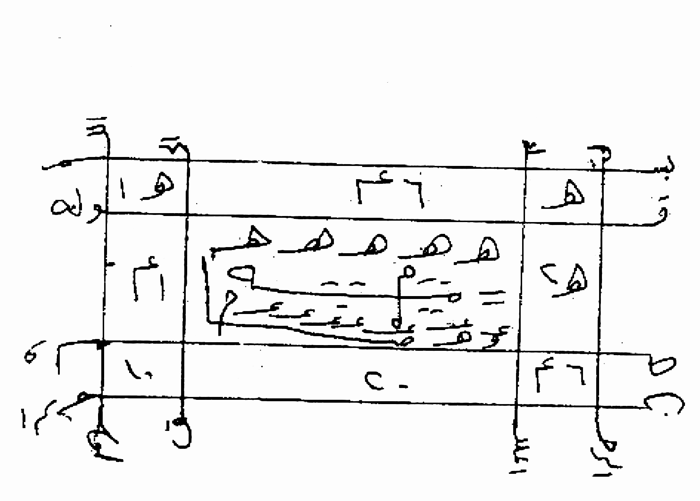
[Crop halaman 66 — crop presisi kiriman pengguna; nama berkas sama dengan halaman tujuan; bukan ekstraksi FINAL KHATAM dan bukan gambar ulang]
WAFAQ HAL.66 — Amiri 14pt Bold — Tabel ini pencatatan bentuk per petak, bukan rekonstruksi dan bukan penafsiran. Urutan kolom mengikuti arah ba
Lajur kanan (sempit)
Lajur tengah (lebar)
Lajur kiri (sempit)
«٥» — satu lambung berekor (angka ٥ gaya Maghribi) · keyakinan sedang
«٤» + «٦» — dua angka; urutan belum pasti (٤٦ / ٦٤) · keyakinan sedang
«١» + «٥» = ١٥ · keyakinan sedang · di luar bingkai kiri: «ورط» (؟)
«٢» + «٥» = ٢٥ (؟) · keyakinan rendah
PANEL BERPINGKAI GANDA: (a) lima tanda sejenis berjajar (segitiga-bulat berekor panjang); (b) kotak bergaris berisi dua baris tanda pendek + garis tegak berkait; (c) kotak kecil «١ ١» (؟). Tidak terbaca sebagai kata Arab · struktur sedang, isi rendah
«٤» + «١» = ٤١ (؟) · keyakinan rendah
«٤» + «٦» = ٤٦ · keyakinan sedang
«٤» + «٠» = ٤٠ (؟) · keyakinan rendah
«٤» + «١» (؟) · keyakinan rendah
Wafaq berpetak, bukan deret lambang. Yang dapat dipastikan dengan keyakinan sedang–tinggi: jumlah garis bingkai, 3 lajur × 3 baris, adanya panel berbingkai ganda di petak tengah, dan adanya angka (bukan kata) di petak-petak sisi. Yang rendah keyakinannya: nilai tiap angka dan urutan satuannya, serta isi panel. Tidak ada angka/huruf yang dikarang, tidak digambar ulang, tidak ditafsirkan sebagai ayat atau nama, bukan pengesahan, tidak dianjurkan dipakai. Revisi 2: pembacaan per sel menggantikan penanda «tidak terbaca» pada sel yang sebenarnya memuat angka.
2. Penentuan Jam
«tidak ada hitungan di halaman ini»
Catatan penyunting
«هَامَّة» = hewan berbisa; «عَيْنٍ لَامَّة» = mata yang menimpa. Teks ini gabungan doa masyhur dan hadis; saya tidak memverifikasi sanadnya.
Harakat dan tanda baca Arab bersifat editorial. Rajah, wafaq, dan lambang pada halaman ini TIDAK digambar ulang di sini; bentuk aslinya wajib diambil dari pindaian halaman yang bersangkutan.
«الْأَذَى» di sini dipakai sebagai sifat penyakit; susunannya tidak baku dan dibiarkan. «تُشْفَى» bisa «يُشْفَى». Rajah pada halaman ini adalah gambar, bukan teks: saya hanya menyebut keberadaannya.
5. Khususiyah — Waktu : Media : Bukhur
Waktu: tidak disebutkan dalam sumber unit ini : Media: doa perlindungan (ta‘awwudz); bagian «untuk kesembuhan dari segala penyakit» yang ditulis; rajah besar bergambar (kolom-kolom berisi huruf dan garis) : Bukhur: tidak disebutkan dalam sumber unit ini
Al-fashlur raabi'a 'asyara: ibthaalus sihri wa hallul marbuuthi. Uktubith thalassimal aatiyata fii sab'i waraqaatin abyadha wa dha' fii kulli waraqatin jaawiyyun wa lubaanun dzakarun wa mustakaa wa 'uudul qaliyyi, wa raf'atan fin naari yatalaqqaa dukhaanuhaal mas-huura awil marbuutha waqra' 'alaihaa suurata yasiin (yasiin * wal qur-aanil hakiimi) al-uulaa wats tsaaniyata ilaa (mubiinin) ats tsaaniyati wa haakadzaa ilaa an tantahiyal awraaqus sab'atu hattaa nihaayatis suurati fa-innnal mas-huura wal marbuutha yabra-u bi-idznillaahi ta'aalaa wa haadzihi hiyal asmaa-u.
[Gambar: baris huruf dan bentuk — lihat pindaian halaman 67.] Libthaalis sihri wa sharfil 'awaaridhi wa hallil marbuuthi: uktubil aatiya fii tsalaatsi waraqaatin wa dha' fiihimul bukhuura: habbatal barakati wa faasuukha maghribiyyan wa syajarata maryama wa mustakatan wa kunduran wa sidran naasyifan wa tabakhkhar bihimul mariidha wal mas-huura wal marbuutha wa lil 'awaaridhi war riihil ahmari wa nukhallifuhu fa-innahu yabra-u bi-idznillaahi ta'aalaa wa haadzaa maa.
3. Terjemahan
Fasal keempat belas: membatalkan sihir dan melepaskan (orang) yang terikat. Tulislah «طلاسم» berikut pada tujuh lembar kertas putih, dan letakkan pada setiap lembar: jawi, lubbān (kemenyan jantan), mastika, dan kayu ‘ūd; lalu angkat ke api agar asapnya mengenai orang yang tersihir atau terikat, dan bacakan surah Yasin padanya — (Yasin, demi Al-Qur’an yang penuh hikmah) yang pertama dan yang kedua sampai (mubīn) yang kedua, dan demikian seterusnya sampai tujuh lembar itu habis hingga akhir surah — maka orang yang tersihir dan yang terikat akan sembuh dengan izin Allah—Mahatinggi—dan inilah nama-namanya.
[Di atas bagian ini tercetak rajah berisi huruf dan bentuk; tidak saya gambar ulang.] «Untuk membatalkan sihir, menolak ‘āridh, dan melepaskan yang terikat»: tulislah yang berikut pada tiga lembar kertas, dan letakkan padanya bahan bakaran: habbat al-barakah, fāsūkh Maghribi, pohon Maryam, mastika, kundur, dan sidr kering; lalu asapkan kepada orang sakit, yang tersihir, dan yang terikat, juga untuk ‘āridh dan angin merah; kami tinggalkan (sisanya) — karena ia akan sembuh dengan izin Allah—Mahatinggi—dan inilah yang «…» [bersambung ke segmen berikutnya]
4. Metode, Penentuan Jam, dan Catatan Penyunting
1. Metode
Praktik dari sumber (halaman 67): menuliskan «طلاسم» pada tujuh lembar kertas putih, masing-masing dengan jawi, lubbān, mastika, dan ‘ūd; dibakar dan asapnya diarahkan ke orang yang tersihir/terikat sambil membaca surah Yasin sampai lembar habis; disertai rajah nama-nama. Lalu bagian kedua: menulis pada tiga lembar dengan campuran bahan (habbat al-barakah, fāsūkh Maghribi, pohon Maryam, mastika, kundur, sadab kering), dibakar dan diuapkan kepada pasien. Dinisbatkan pada penulis; bukan anjuran medis.
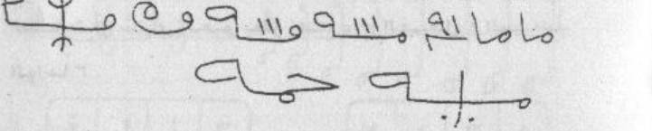
[Crop halaman 67 — crop presisi kiriman pengguna; nama berkas sama dengan halaman tujuan; bukan ekstraksi FINAL KHATAM dan bukan gambar ulang]
RAJAH HAL.67 — asror huruf hijaiyah — deret dua baris (bukan wafaq berpetak)
Pencatatan bentuk huruf dan titik, bukan tafsir makna asror. Yang dapat dipastikan: م (4×), ا (2×), ل (1×), semuanya tanpa titik. Keluarga bertitik ب ت ث · ج ح خ · د ذ · ر ز · ص ض · ط ظ · ع غ · ف ق tidak muncul. Dua unit ○❘❘❘○ memakai tiga GARIS MIRING, bukan titik bulat; bila dimaksud tiga titik, kandidatnya ش — ditandai (ش ؟) keyakinan rendah dan tidak dinormalkan. Baris 2 unsur 1 bertitik dua di bawah, kandidat (ي ؟) keyakinan rendah. Lambang ✳ (trisula/mistar) bukan huruf. Tidak ada rekonstruksi, tidak ada tafsir, bukan pengesahan, tidak dianjurkan dipakai.
2. Penentuan Jam
«tidak ada hitungan di halaman ini»
Catatan penyunting
«طَلَاسِم» = rajahan/tulisan talismanic; «عُودَ الْقَلْي» bisa «العُود القَلْي/القَمَاري»; «وَرَفْعَةً» kemungkinan «وَرَفْعُهُ». «حَتَّى نِهَايَةِ» pada cetakan memakai kasrah pada ha’, dibiarkan.
Harakat dan tanda baca Arab bersifat editorial. Rajah, wafaq, dan lambang pada halaman ini TIDAK digambar ulang di sini; bentuk aslinya wajib diambil dari pindaian halaman yang bersangkutan.
«فَاسُوخ» (fāsūkh) adalah nama tumbuhan yang tidak saya pastikan identitasnya; «سِدْرًا نَاشِفًا» = sidr kering; «وَنُخَلِّفُهُ» bisa «وَنُخْلِفُهُ» (kami gantikan). Kalimat terakhir menggantung ke halaman 68 — saya pertahankan tanpa menambal.
5. Khususiyah — Waktu : Media : Bukhur
Waktu: tidak disebutkan dalam sumber unit ini : Media: tujuh lembar kertas putih; tiga lembar kertas; rajah nama-nama : Bukhur: jawi, lubbān, mastika, dan ‘ūd; habbat al-barakah, fāsūkh Maghribi, pohon Maryam, mastika, kundur, dan sadab kering
M68 — Halaman 68, عزم pengusiran dan fadilah kehamilan
Taktubu. [Gambar: baris huruf dan bentuk — lihat pindaian halaman 68.] Inzil yaa faarisu wa anta yaa khaadima haadzal yaumi wash rifuu wathrudul arwaahas saw-a wal 'awaaridha wal qaraayina wat tawaabi'a wal maradha wa kulla syaghbin wa sihrin wa 'aksin wa 'ainin wa nafsin wa riihin ahmara wa daa-in akbara wa nazhrati sau-in 'an haadzihil jutstshatil basyariyyati jutstsati fulaanibni fulaanata aw fulaanata binti fulaanata bihaqqi siihik laahik wa hik laahik dahak rahak anuukh yanuukh banuukh wa bihaqqil ismil a'zhzhami ahyaa syaraahiyaa aduunaay ashbaa-uut aala syaraay wa bihaqqi bathrin zahajin waahil 'ajali 3 as-saa'ata an-nawaahaa 3.
Faa-idatun lil hamli: tuktabu haadzihil aayaatu wa tu'alliqahal mar-atu 'alaihaa wa yujaami'uhaa zaujuhaa fa-innahaa tahmilu bi-idznillaahi ta'aalaa wa haadzihi hiyal aayaatu: Bismillaahir rahmaanir rahiim (wa labitsuu fii kahfihim tsalaatsa mi-atin siniina wazdaaduu tis'aa) alif laam miim.
3. Terjemahan
«Engkau tulis» [disusul rajah baris huruf dan bentuk]. «Turunlah, hai Faris, dan engkau hai pelayan hari ini; palingkanlah dan usirlah ruh-ruh buruk, ‘āridh, qarin, tābi‘, penyakit, segala kekacauan, sihir, pembalikan, mata (jahat), nafsu, angin merah, penyakit besar, dan pandangan buruk dari tubuh manusia ini — tubuh Fulan bin Fulanah atau Fulanah binti Fulanah — dengan hak «sīhik lāhik wahik lāhik dahak rahak anūkh yanūkh banūkh», dan dengan hak nama yang paling agung «ahyā syarāhiyā adūnāy ashbā’ūt āla syarāy», dan dengan hak «bathr zahaj wāh al-‘ajal» — tiga (kali) — saat ini juga, tiga (kali).
Faedah untuk kehamilan: ayat-ayat ini ditulis dan digantungkan pada perempuan, lalu suaminya menggaulinya, maka ia akan hamil dengan izin Allah—Mahatinggi—dan inilah ayat-ayatnya: Dengan nama Allah Yang Maha Pengasih dan Maha Penyayang. «Dan mereka tinggal di dalam gua mereka tiga ratus tahun, dan mereka tambah sembilan» — Alif Lam Mim.
4. Metode, Penentuan Jam, dan Catatan Penyunting
1. Metode
Praktik dari sumber (halaman 68): tulisan «تكتب» dengan baris huruf, lalu «عزم» pengusiran (نزل يا فارس…) yang menyebut nama orang dan ibunya, dengan rangkaian nama dan «الأسم الأعظم»; kemudian «فائدة للحمل»: menulis ayat dan menggantungkannya pada perempuan, lalu berhubungan dengan suaminya. Dinisbatkan pada penulis; tidak ada jaminan kehamilan dan bukan nasihat medis.
Halaman ini TIDAK memuat wafaq berpetak; berikut salinan transparannya (bukan rekonstruksi):
Baris 1 (kanan→kiri, 18 unsur): «تهمصم» (؟) · ✱ · ا ا ا · م · ✱ · [empat garis + garis madda = آ آ آ آ ؟] · هـ · ٠ · ✱ · ف · ج · ش · ظ · خ · ز · ف · ش · ن
Titik baris 1: ف ١ atas · ج ١ bawah · ش ٣ atas · ظ ١ atas · خ ١ atas · ز ١ atas · ف ١ atas · ش ٣ atas · ن ١ atas (rendah) · huruf pertama «تهمصم» bertitik atas (ت؟/ن؟) rendah
Pencatatan bentuk huruf dan titiknya, bukan tafsir asma. Empat butir berkeyakinan rendah: «تهمصم», kelompok empat garis bergaris madda, «غ» (bisa jadi ع bila titiknya kotoran cetak), dan «ن» terakhir baris 1. Pembedaan pasangan tetap: ج/ح/خ dan س/ش dan ط/ظ dan ع/غ dan د/ذ dan ر/ز dan ف/ق tidak disamakan. Tidak ada huruf/titik yang dikarang, tidak digambar ulang, bukan pengesahan, tidak dianjurkan dipakai.
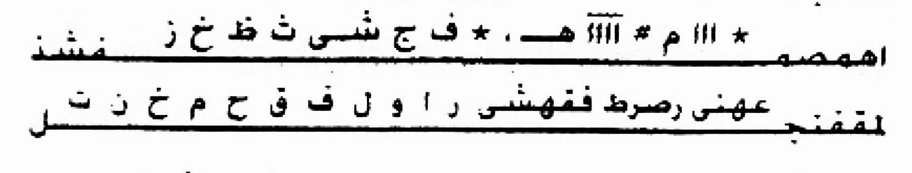
[Crop halaman 68 — crop presisi kiriman pengguna; nama berkas sama dengan halaman tujuan; bukan ekstraksi FINAL KHATAM dan bukan gambar ulang]
RAJAH HAL.68 — asma huruf talismani — dua baris di kepala halaman (bukan wafaq berpetak)
2. Penentuan Jam
«tidak ada hitungan di halaman ini»
Catatan penyunting
rangkaian «سيهك لهك…» dan «اهيا شراهيا…» adalah nama/azimat yang tidak dapat saya pastikan huruf dan maknanya; saya salin apa adanya dan tidak mengoreksi. «الجثة» di sini dipakai untuk tubuh, bukan jasad. Angka «٣» dipertahankan seperti tercetak.
Harakat dan tanda baca Arab bersifat editorial.
Rajah, wafaq, dan lambang pada halaman ini TIDAK digambar ulang di sini; bentuk aslinya wajib diambil dari pindaian halaman yang bersangkutan.
«عَلَيْهَا» di sini berarti pada tubuh/perhiasan perempuan; saya terjemahkan apa adanya. «وَيُجَامِعُهَا» fi‘l mudhari‘. Ayat yang dikutip adalah QS al-Kahf 18:25, dan «الم» di akhir halaman menyambung ke halaman 69.
5. Khususiyah — Waktu : Media : Bukhur
Waktu: tidak disebutkan dalam sumber unit ini : Media: tulisan/rajah baris huruf pada halaman ini; ayat-ayat yang ditulis lalu digantungkan pada perempuan : Bukhur: tidak disebutkan dalam sumber unit ini
M69 — Halaman 69, lanjutan ayat, uji pada ayam, dan dua wafaq
(Takhluqukum min maa-in mahiinin faja'alnaahu fii qaraarin makiinin ilaa qadarin ma'luumin faqadarnaa fani'mal qaadiruun). Faa-idatun lil hamli marratan ukhraa: wa idzaa aradtat tajribata 'alliqhaa 'alaa dajaajatin fa-innahaa tabiidhu wa hiya tahmilu li-annahaa sirrun 'ajiibun wa haadzaa maa tuktabu wa yuhmalu ba'dath thuhri minal haidhi.
[Gambar: garis dan bentuk — lihat pindaian halaman 69.] [Dua tabel 4x4 huruf: (fa jim alif ha / ha fa jim alif / alif ha fa jim / jim alif ha fa) dan (mim wau ha sin / ha sin wau mim / wau mim sin ha / sin ha mim wau) — lihat pindaian halaman 69.] (Annallaaha faaliqul habbi wan nawaa yukhrijul hayya minal mayyiti wa yukhrijul mayyita).
3. Terjemahan
«Dia menciptakanmu dari air yang hina, lalu Dia menempatkannya di tempat yang kokoh sampai waktu yang ditentukan; lalu Kami tentukan, dan sebaik-baik yang menentukan.» Faedah untuk kehamilan sekali lagi: jika engkau hendak mencoba, gantungkanlah ia pada seekor ayam, maka ayam itu akan bertelur dan (perempuan) itu hamil, karena itu rahasia yang menakjubkan; inilah yang ditulis dan digantung setelah bersih dari haid.
[Di atas tabel tercetak rajah berisi garis dan bentuk; tidak saya gambar ulang.] [Dua tabel 4×4 huruf: baris-barisnya berisi huruf ف ج ا ح dan م و ح س dengan susunan bergeser — bentuk dan susunan sel wajib diambil dari pindaian halaman 69.] «Sesungguhnya Allah yang membelah butir biji dan biji buah, mengeluarkan yang hidup dari yang mati dan mengeluarkan yang mati «…» [tidak disalin penuh pada sumber kerja]»
4. Metode, Penentuan Jam, dan Catatan Penyunting
1. Metode
Praktik dari sumber (halaman 69): lanjutan kutipan (at-Ta’min 23:12–14), lalu «فائدة للحمل مرة أخرى»: menggantungkan tulisan pada ayam Betina agar bertelur, sebagai “percobaan”; disertai dua tabel/wafaq 4×4 huruf dan rajah bergambar, serta kutipan «إن الله فالق الحب والنوى». Tabel dan rajah tidak digambar ulang di sini; hanya dari pindaian. Dinisbatkan pada penulis.
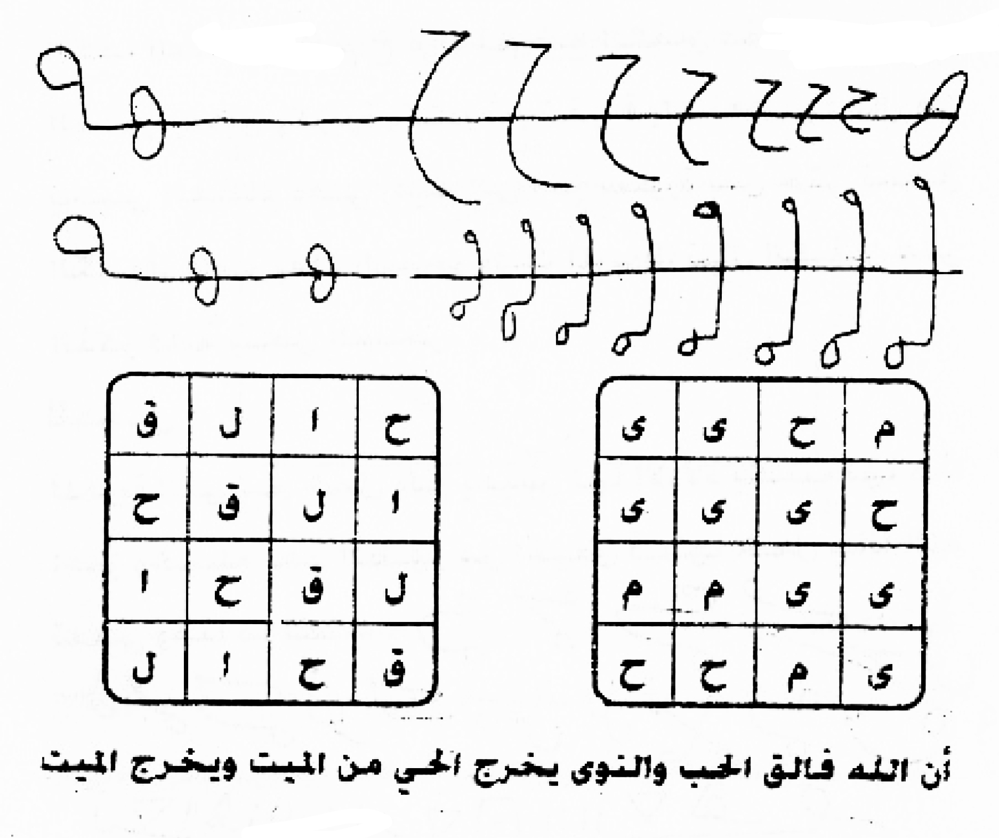
[Crop halaman 69 — crop presisi kiriman pengguna; nama berkas sama dengan halaman tujuan; bukan ekstraksi FINAL KHATAM dan bukan gambar ulang]
RAJAH HAL.69 — dua baris lambang talismani (bulan sabit, tiang bercincin, bulatan berekor) + dua wafaq berpetak 4×4 — wafaq kiri berisi rotasi huruf, wafaq kanan belum dapat d
WAFAQ HAL.69 — Amiri 14pt Bold — Wafaq kiri: 4×4, rotasi bersih empat huruf (ح ا ل ف) yang bergeser satu sel tiap baris — keyakinan sedang–ting
Wafaq kiri — kolom kanan
kolom 2
kolom 3
Wafaq kiri — kolom kiri
ح — tanpa titik
ا — tanpa titik
ل — tanpa titik (kait)
ف — 1 titik di atas
ا — tanpa titik
ل — tanpa titik
ف — 1 titik atas
ح — tanpa titik
ل — tanpa titik
ف — 1 titik atas
ح — tanpa titik
ا — tanpa titik
ف — 1 titik atas
ح — tanpa titik
ا — tanpa titik
ل — tanpa titik
Yang dapat dipastikan: jumlah garis bingkai dua wafaq 4×4, rotasi huruf pada wafaq kiri (ح ا ل ف), dan bahwa baris atas berisi lambang bukan kata. Yang rendah keyakinannya: seluruh isi wafaq kanan dan identitas bulatan/tiang pada dua baris lambang. Tidak ada huruf/titik yang dikarang, tidak digambar ulang, tidak ditafsirkan sebagai asma atau ayat, bukan pengesahan, tidak dianjurkan dipakai.
2. Penentuan Jam
«tidak ada hitungan di halaman ini»
Catatan penyunting
«فَجَعَلْنَاهُ» pada cetakan «فجعلنا»; «فَقَدَرْنَا فَنِعْمَ الْقَادِرُونَ» mengikuti QS al-Mursalat 77:20–23. «تَبِيضُ» bisa «تَبِيض» (bertelur).
Harakat dan tanda baca Arab bersifat editorial. Rajah, wafaq, dan lambang pada halaman ini TIDAK digambar ulang di sini; bentuk aslinya wajib diambil dari pindaian halaman yang bersangkutan.
tabel huruf pada halaman ini sulit dipastikan; saya mencatat susunan yang tampak dan menyatakan bahwa sel dan garis harus disalin dari gambar asli, bukan dari tulisan saya. Kutipan mengacu QS al-An‘am 6:95.
5. Khususiyah — Waktu : Media : Bukhur
Waktu: tidak disebutkan dalam sumber unit ini : Media: tulisan yang digantungkan; dua tabel/wafaq 4×4 huruf; rajah bergambar : Bukhur: tidak disebutkan dalam sumber unit ini
M70 — Halaman 70, حجاب kehamilan dan إبطال الأسحار
Ibthaalul as-haari: tuktabu 'alalkaffil yamiini maa baani (bintang) fa qaaf jim, tsumma tuktabu 'alal kaffisy syimaali (bintang) mim kha mim ta, tsumma dha'il kaffaini maftuuhataini 'alal bukhuuri jaawiyyin wa kabii ratin wa kundurin tsumma taqra-u qaulahu ta'aalaa: (qaala man yuhyil 'izhaama wa hiya ramiimun) ilaa aakhirisy syuurati hattaa tanthiqal kufuufu. Wa'mur bifakkil sihri wa fakkil marbuuthi tanzilul kaffaini 'aladz dzakari fa-innahu yanhallus sihru. Lil hamli: lil mar-atil latii lam tahmil wa lam ya'isy lahal aulaadu yuktabu lahaa haadzal hirzu wa tahmiluhu ba'dath thuhri minal haidhi fa-innahaa tahmilu bi-idznillaahi ta'aalaa wa haadzaa maa tuktabu. [Gambar: huruf dan bentuk — lihat pindaian halaman 70.]
3. Terjemahan
«…» [tidak disalin penuh pada sumber kerja]dari yang hidup. Itulah Allah, Tuhanmu; maka bagaimana kamu dapat dipalingkan?» Menggunakan hijab setelah bersih dari haid secara langsung; dibuat tiga «طبق» (lapisan/cawan) dan dijemur di bawah langit, lalu diminum satu setiap hari sebelum berbuka, maka ia akan hamil dengan izin Allah.
«Membatalkan sihir»: ditulis pada telapak tangan kanan «ما باني» diikuti tanda bintang dan huruf ف ق ج; lalu pada telapak kiri tanda bintang dan huruf م خ م ت; kemudian kedua telapak diletakkan terbuka di atas bakaran (jawi, kayu besar, kundur); lalu engkau membaca firman-Nya: «Dia berkata, siapa yang dapat menghidupkan tulang-belulang padahal sudah hancur?» sampai akhir surah Yasin, hingga kedua telapak “berbicara”; lalu perintahkan agar sihir dan ikatan terurai, dan turunkan kedua telapak pada kemaluan, maka sihir itu akan terurai. Untuk kehamilan: bagi perempuan yang belum pernah hamil dan belum punya anak yang hidup, dituliskan jimat ini dan ia menggantungnya setelah bersih dari haid, maka ia akan hamil dengan izin Allah—Mahatinggi; inilah yang ditulis [rajah huruf dan bentuk pada pindaian halaman 70].
4. Metode, Penentuan Jam, dan Catatan Penyunting
1. Metode
Praktik dari sumber (halaman 70): «حمل حجاب» setelah bersih dari haid, membuat tiga «اطباق» dan menjemurnya di bawah langit, diminum satu setiap hari sebelum berbuka; lalu «إبطال الأسحار»: menulis huruf pada kedua telapak tangan, meletakkannya di atas bakaran, membaca «قال من يحيي العظام وهي رميم» sampai akhir surah Yasin hingga telapak “berbicara”, lalu meletakkannya pada kemaluan agar sihir terurai; ditutup dengan «للحمل» bagi perempuan yang belum hamil dan belum punya anak hidup. Dinisbatkan pada penulis; tidak ada jaminan.
[Dinisbatkan pada penulis; tidak ada jaminan; dicatat tidak dianjurkan tidak disahkan]
Halaman ini TIDAK memuat wafaq berpetak; berikut salinan transparannya (bukan rekonstruksi):
Baris 1 (kanan→kiri, 11 unsur): «ع» berloop · «ص» (؟) · «ج» ١ bawah · «ش» ٣ atas · «ظ» ١ atas · «خ» ١ atas · «ز» ١ atas · garis berkelok ZZZ (lambang) · «هـ/ه» berloop · «ل» berekor panjang · «ج» kecil ١ bawah. Baris 2 (kanan→kiri, 10 unsur): «سل» · «ع» berloop ٢ titik (؟) · «ك» · «ل» berkait · «و» · «ك» · «م» berloop berekor · «د» · «ل» · «م» kecil. Baris 3: baris lambang — «٧/ز» · segitiga bertitik · segitiga terbalik · empat garis tegak · kotak bertitik · segitiga terbalik · «٣» berkelok · «٧» · bulatan. Tidak satu pun dibaca sebagai kata Arab.
Yang dapat dipastikan: jumlah baris (3), bahwa dua baris pertama berisi huruf berloop dan baris ketiga berisi lambang/angka, serta titik-titik yang tampak pada B1-3/B1-4/B1-5/B1-6/B1-7. Yang rendah keyakinannya: hampir semua identitas huruf lain dan seluruh baris 3. Tidak ada wafaq berpetak sehingga tidak ada grid yang dibuat. Tidak mengarang huruf/titik, tidak menggambar ulang, tidak menafsirkan makna, bukan pengesahan, tidak dianjurkan dipakai. Teks terjemahan utama tidak disentuh.
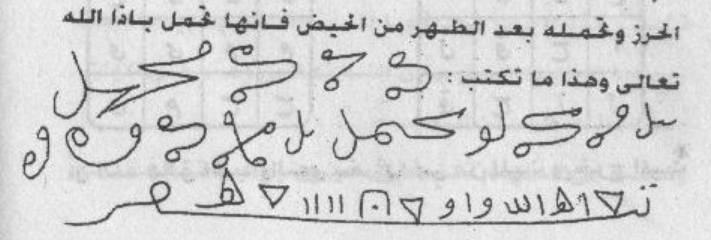
[Crop halaman 70 — crop presisi kiriman pengguna; nama berkas sama dengan halaman tujuan; bukan ekstraksi FINAL KHATAM dan bukan gambar ulang]
RAJAH HAL.70 — tiga baris tulisan talismani bersambung (bukan wafaq berpetak): dua baris huruf berloop + satu baris lambang/angka. Tidak ada bingkai petak di halaman ini
2. Penentuan Jam
«tidak ada hitungan di halaman ini»
Catatan penyunting
«يُنَجَّمُ» tidak baku; kemungkinan «يُنَجَّم» = dijemur di bawah bintang/langit, dan saya catat sebagai bacaan terbuka. «أَطْبَاق» jamak «طبق».
Harakat dan tanda baca Arab bersifat editorial.
Rajah, wafaq, dan lambang pada halaman ini TIDAK digambar ulang di sini; bentuk aslinya wajib diambil dari pindaian halaman yang bersangkutan.
«مَا بَانِي» adalah rangkaian azimat yang tidak dapat saya pastikan maknanya; «أْمُرْ» kemungkinan «وَأْمُرْ». «الذَّكَر» di sini bermakna kemaluan; saya terjemahkan netral.
5. Khususiyah — Waktu : Media : Bukhur
Waktu: langsung sesudah bersih dari haid; satu dari tiga aṭbāq diminum setiap hari sebelum berbuka : Media: tiga aṭbāq yang dijemur di bawah langit; tulisan pada telapak tangan kanan dan kiri : Bukhur: jawi; kabīrah (Terjemahan kanonis menyebutnya “kayu besar”); kundur
M71 — Halaman 71, حرف الطاء dan kotak berlambang ط
Faa-idatun li'adami suquuthil janii ni: yuktabu wa yuhmalu wa haulahu aayaatul hifzhi wa maa yunaasibu. I'lam anna min asraari harfith thaa-i anna man katabahaa haakadzaa wa kataba haulahaa (thaasin) mi-ata marratin wa tis'atan 109 tsumma kataba haulahul basmala wa fii dzaalika fish syahril tsaalitsi min hamlil mar-ati. Wa ba'da wadh'il mauluudi tarfa'uhu min 'alaihaa wa tulbisuhu lil mauluudi fa-innahu yuhfazhu minal qaraayini wat tawaabi'i wal 'awaaridhi wa khilaafihi. Mujarrabun shahiihun.
[Gambar: bentuk memanjang berisi garis-garis bersilangan dan huruf «ط» pada keenam sisinya — lihat pindaian halaman 71.] Faa-idatun lil hamli: tuktabu haadzihil aayaatu waqtazh zhuhri fii yaumin sa'iidin wa tuhmaa bilibni maa'izin takuunu saudaA-a wa tasyrabuhal mar-atu ba'dath thuhri minal haidhi.
3. Terjemahan
Faedah agar janin tidak gugur: ditulis dan digantung, dengan ayat-ayat penjagaan dan yang sesuai di sekelilingnya. Ketahuilah bahwa di antara rahasia huruf ط: siapa yang menulisnya seperti ini dan menulis «طسم» di sekelilingnya seratus sembilan kali (109), lalu menulis basmalah di sekelilingnya — dan itu dilakukan pada bulan ketiga kehamilan perempuan. Setelah bayi lahir, ia mengangkatnya dari (tubuh) perempuan itu dan memakaikannya kepada bayi, maka bayi terjaga dari qarin, tābi‘, ‘āridh, dan selainnya. Sudah dicoba dan sahih (menurut penulis).
[Di tengah halaman tercetak kotak memanjang berisi garis bersilangan, dengan huruf «ط» pada keenam sisinya; tidak saya gambar ulang — bentuk aslinya ada pada pindaian halaman 71.] Faedah untuk kehamilan: ayat-ayat ini ditulis pada waktu zuhur di hari yang baik, lalu dipanaskan dengan lemak kambing yang berwarna hitam, dan diminum oleh perempuan setelah bersih dari haid.
4. Metode, Penentuan Jam, dan Catatan Penyunting
1. Metode
Praktik dari sumber (halaman 71): «فائدة لعدم سقوط الجنين» — menuliskan huruf ط dan «طسم» 109 kali serta basmalah di sekelilingnya, pada bulan ketiga kehamilan, lalu menggantungkannya pada bayi setelah lahir; disertai kotak bergambar berlambang ط pada enam sisi; dan «فائدة للحمل» dengan menulis ayat pada waktu zuhur, dibakar dengan lemak kambing hitam lalu diminum. Rajah kotak tidak digambar ulang. Dinisbatkan pada penulis.
Halaman ini TIDAK memuat wafaq berpetak; berikut salinan transparannya (bukan rekonstruksi):
Baris atas : ط · ط · ط (kiri, tengah, kanan — tanpa titik)
Sisi tengah : ط (kiri) · ط (kanan)
Baris bawah : ط · ط · ط (kiri, tengah, kanan — tanpa titik)
Yang dapat dipastikan: bentuk geometris, jumlah 8 huruf ط, dan posisinya. Yang TIDAK dapat dipastikan: apakah ada huruf/bacaan lain yang tersembunyi di dalam belah ketupat — pada pindaian, bagian tengah hanya berisi bekas tinta samar/tembus pandang dari halaman seberang, bukan tulisan. Saya tidak mengisi bagian itu dengan tebakan. «مجرب صحيح» adalah klaim penulis kitab, bukan bukti. Bukan pengesahan, tidak dianjurkan dipakai; teks terjemahan utama tidak disentuh.
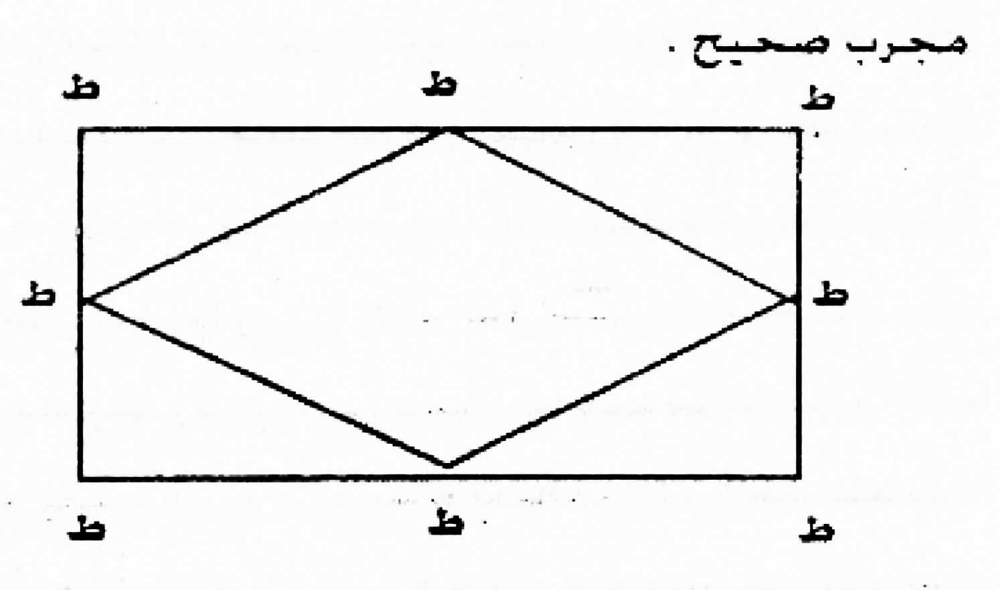
[Crop halaman 71 — crop presisi kiriman pengguna; nama berkas sama dengan halaman tujuan; bukan ekstraksi FINAL KHATAM dan bukan gambar ulang]
RAJAH HAL.71 — rajah geometris: persegi panjang dengan dua diagonal yang membentuk belah ketupat (titik sudut menyentuh titik tengah sisi), dikelilingi delapan huruf «ط». Buka
2. Penentuan Jam
«tidak ada hitungan di halaman ini»
Catatan penyunting
«طسم» adalah huruf pembuka surah; angka ١٠٩ tertulis dengan angka Arab dan juga lafaz «مِائَةَ مَرَّةٍ وَتِسْعَةً». «مُجَرَّبٌ صَحِيحٌ» klaim penulis, bukan hasil pengujian saya.
Harakat dan tanda baca Arab bersifat editorial.
Rajah, wafaq, dan lambang pada halaman ini TIDAK digambar ulang di sini; bentuk aslinya wajib diambil dari pindaian halaman yang bersangkutan.
«بِلَيْنِ مَاعِزٍ» pada cetakan; lazimnya «لَيِّن/شَحْم» — saya pertahankan dan tandai. «يَوْمٍ سَعِيد» = hari yang baik.
5. Khususiyah — Waktu : Media : Bukhur
Waktu: bulan ketiga kehamilan; waktu Zuhur pada hari yang baik («يَوْمٍ سَعِيدٍ»); diminum sesudah bersih dari haid : Media: huruf ṭā’ dengan «طسم» ditulis 109 kali dan basmalah mengelilinginya; ayat-ayat yang ditulis; bahan dari kambing hitam yang bentuk zatnya tidak dipastikan (Terjemahan kanonis menyebut lemak) : Bukhur: tidak disebutkan dalam sumber unit ini
M72 — Halaman 72, lanjutan tulisan kehamilan dan rajah
Fa-innahaa tahmilu bi-idznillaahi ta'aalaa wa haadzaa maa yuktabu. Yuktabu aidhan wa yuhmalu: al-basmalatu wats tashliyatu wal faatiha(tu), fa jim syin ts (tsa) zh (zha) kha z (zai), jabbaarun syakuurun tsaabitun zhahiirun khabiirun dzakiyyun, wal haugalatu. Bismillaahir rahmaanir rahiim, alif laam miim, Allaahu laa ilaaha illaa huwal hayyul qayyuumu ilal 'aziizi - fataqabbalahaa rabbuhaa biqabuulin hasanin ilaa hisaabin (suuratu aali 'imraana) qaala rabbi annaa yakuunu lii ghulaamun wa qad balaghaniyal kibaru wamra-atii 'aaqirun qaala kadzaalikallaahu yaf'alu maa yasyaa-u qaala rabbij 'al lii aayatan qaala aayatuka allaa tukalliman naasa tsalaatsata ayyaamin illaa ramzan ilaa (aali 'imraana) wa haadzal ladzii khalaqakum min nafsin waahidatin wa ja'ala minhaa zaujahaa liyaskuna ilaihaa falammaa taghasysyaahaa hamalat hamlan khafiifan famarrat bihisy syaakiriina (al-a'raafa).
[Gambar: garis dan bentuk di tengah halaman — lihat pindaian halaman 72.] Dzikru rahmati rabbika zakariyyaa ilaa maqdhiyyan fahamalat-hu bi-idznillaahi fahamalat-hu biqudratillaahi fahamalat-hu biluthfillaahi fahamalat-hu bilaa haulin wa laa quwwata illaa billaahil 'aliyyil 'azhiimi fahamalat-hu ilaa mansiyyan. Awa lam yaral ladziina kafaruu annas samaawaati wal ardha kaanataa ratqan fafataqnaahumaa ilaa yu'minuuna. Wa zakariyyaa idz naadaa rabbahu rabbi laa tadzarnii fardan wa anta khairul waaritsiina yaa.
3. Terjemahan
Maka ia akan hamil dengan izin Allah—Mahatinggi; dan inilah yang ditulis. Ditulis pula dan digantung: basmalah, «التصلية» (selawat), dan al-Fatihah; (lalu) huruf ف ج ش ث ظ خ ز; «Jabbār, Syakūr, Tsābit, Zhahīr, Khabīr, Dzaki»; serta hauqalah. Dengan nama Allah Yang Maha Pengasih dan Maha Penyayang. Alif Lam Mim. Allah, tiada tuhan selain Dia, Yang Hidup, Yang Berdiri sendiri, sampai (nama) Yang Mahaperkasa. «Maka Tuhannya menerimanya dengan penerimaan yang baik» sampai «dengan perhitungan» (surah Ali Imran). «Ia berkata, Tuhanku, bagaimana mungkin aku punya anak, padahal aku sudah tua dan istriku mandul? Dia berkata, demikianlah Allah melakukan apa yang Dia kehendaki. Ia berkata, Tuhanku, berilah aku tanda. Dia berkata, tandamu adalah engkau tidak berbicara kepada manusia selama tiga hari kecuali dengan isyarat» sampai (Ali Imran). «Dialah yang menciptakanmu dari satu jiwa dan menjadikan darinya pasangannya agar ia merasa tenang kepadanya; maka ketika ia mencampurinya, ia mengandung dengan ringan lalu berjalan dengannya» sampai «orang-orang yang bersyukur» (al-A‘raf).
[Di tengah halaman tercetak rajah bergaris dan berbentuk; tidak saya gambar ulang.] «(Ini adalah) penyebutan rahmat Tuhanmu kepada Zakaria» sampai «yang telah ditetapkan»; lalu «maka ia mengandungnya dengan izin Allah, dengan kekuasaan Allah, dengan kelembutan Allah, dengan (menyebut) tiada daya dan kekuatan kecuali dengan (pertolongan) Allah Yang Mahatinggi lagi Mahaagung, ia mengandungnya» sampai «yang dilupakan». «Apakah orang-orang kafir tidak melihat bahwa langit dan bumi dahulu merupakan satu yang padu, lalu Kami pisahkan keduanya» sampai «beriman». «Dan Zakaria, ketika ia menyeru Tuhannya: Tuhanku, jangan biarkan aku sendiri, dan Engkaulah sebaik-baik pewaris» — Wahai «…» [bersambung ke segmen berikutnya]
4. Metode, Penentuan Jam, dan Catatan Penyunting
1. Metode
Praktik dari sumber (halaman 72): lanjutan tulisan kehamilan — basmalah, «التصلية», al-Fatihah, deretan huruf, hauqalah, potongan QS Ali Imran (3:37–41), al-A‘raf (7:189), dan potongan ayat lain; disertai rajah bergambar di tengah halaman. Rajah tidak digambar ulang. Dinisbatkan pada penulis; tidak ada jaminan kehamilan.
Halaman ini TIDAK memuat wafaq berpetak; berikut salinan transparannya (bukan rekonstruksi):
B1-1 bulan sabit besar (kanan) — tanpa titik
B1-2 bulan sabit sedang — tanpa titik
B1-3 bulan sabit kecil — tanpa titik
B1-4 bulatan kecil menembus garis — lambang, lingkaran ini bukan titik huruf
B1-5 lengkung angka-delapan menembus garis — lambang, tanpa titik
B1-6 kail berlingkar di ujung kiri — (ه ؟) rendah, tanpa titik
Yang pasti: ada enam unsur grafis pada satu garis dasar, semuanya tanpa titik, dan tidak ada petak. Yang rendah: apakah deret ini hiasan murni atau tulisan yang digayakan — saya TIDAK menormalkannya menjadi kata dan tidak mengubahnya menjadi persegi ajaib. Tidak ada wafaq, jadi tidak ada grid(wafaq_kiri, wafaq_kanan). Bukan pengesahan, tidak dianjurkan dipakai; teks terjemahan utama tidak disentuh.
[Crop halaman 72 — crop presisi kiriman pengguna; nama berkas sama dengan halaman tujuan; bukan ekstraksi FINAL KHATAM dan bukan gambar ulang]
RAJAH HAL.72 — hias garis (tashbik) berbentuk deret bulan sabit bertangkai di atas garis dasar panjang — BUKAN wafaq berpetak, BUKAN persegi ajaib
2. Penentuan Jam
«tidak ada hitungan di halaman ini»
Catatan penyunting
«التَّصْلِيَة» ditulis «التصلية»; «ظ خ» pada deret huruf saya baca «ظ خ ز» dan itu terbuka. Kutipan Ali Imran 3:37–41 dan al-A‘raf 7:189; «إِلَى حِسَابٍ» memotong ayat di tengah dan dibiarkan.
Harakat dan tanda baca Arab bersifat editorial.
Rajah, wafaq, dan lambang pada halaman ini TIDAK digambar ulang di sini; bentuk aslinya wajib diambil dari pindaian halaman yang bersangkutan.
susunan «فحملته بإذن الله فحملته بقدرة الله…» adalah rangkaian qasam penulis, bukan ayat; saya pisahkan dari kutipan Quran dalam terjemahan. «مَقْضِيًّا» menyambung potongan QS Maryam 19:2–4 dan lanjut QS al-Anbiya 21:30, 21:89.
5. Khususiyah — Waktu : Media : Bukhur
Waktu: tidak disebutkan dalam sumber unit ini : Media: Praktik dari sumber (halaman 72): lanjutan tulisan kehamilan — basmalah, «التصلية», al-Fatihah, deretan huruf, hauqalah, potongan QS Ali Imran (3:37–41), al-A‘raf (7:189), dan potongan ayat lain; disertai rajah bergambar di tengah halaman. Yang rendah: apakah deret ini hiasan murni atau tulisan yang digayakan — saya TIDAK menormalkannya menjadi kata dan tidak mengubahnya menjadi persegi ajaib. : Bukhur: tidak disebutkan dalam sumber unit ini
M73 — Halaman 73, ayat penciptaan dan tulisan pada mangkuk
Yaa ayyuhan naasu in kuntum fii raibin minal ba'tsi ilal khaaliqiina huwal ladzii khalaqakum min turaabin tsumma min nuthfatin tsumma min 'alaqatin tsumma nukhrijukum thiflan tsumma litablughuu asyuddakum tsumma litakuunuu syuyuukhan, alif laam miim, min tilka nuthfatin min maniyyin yumnaa tsumma kaana 'alaqatan mukhallaqatan fasawwaa wa shawwarahu lam yakun kallamaa. Wa hamalahaa 'alaa bathnihaa aw 'alaa zhahrihaa mujarrabun.
Faa-idatun lil hamli: tuktabu maa ya'tii fii shah nin shiiniyyin fii waqtit tathahhuri minal haidhi wa tuhfarul kitaabatu bilibni 'anzatin saudaA-a fa-innallaaha ta'aalaa yaj'alu fiihal hamla wa haadzaa maa tuktabu: al-basmalatu wa shal'am wa suuratul faatiha(ti) fa jim syin takhtakhir [gambar: huruf dan bentuk — lihat pindaian halaman 73] wal haugalatu wa awwalu suurati aali 'imraana allatii (al-hakiimu). Fataqabbalahaa rabbuhaa biqabuulin hasanin ilaa bighairi hisaabin « qaala rabbi annaa yakuunu ghulaamun ilal abshaari (aali 'imraana) huwal ladzii khalaqakum min nafsin waahidatin wa ja'ala minhaa zaujahaa ilasy syaahidiina (al-a'raafi) kaaf haa yaa 'ain shaad ilaa wa 'asyiyyan (maryama) qaala innamaa ana rasuulu rabbiki ilaa hamalat-hu bi-idznillaahi fahamalat-hu biqudratillaahi fahamalat-hu biluthfillaahi.
3. Terjemahan
«Wahai manusia, jika kamu ragu tentang kebangkitan, (maka ketahuilah) kepada Yang Menciptakan: Dialah yang menciptakanmu dari tanah, kemudian dari setetes air, kemudian dari segumpal darah, kemudian Dia mengeluarkanmu sebagai bayi, kemudian (agar) kamu sampai dewasa, kemudian menjadi orang tua» — Alif Lam Mim. «Dari setetes air yang dipancarkan, kemudian menjadi segumpal darah yang sempurna, lalu Dia menyempurnakan dan membentuknya» sampai «tidaklah demikian». Dan menggantungnya pada perutnya atau pada punggungnya — sudah dicoba (menurut penulis).
Faedah untuk kehamilan: yang berikut ditulis pada mangkuk porselen pada waktu bersih dari haid, dan tulisannya diukir dengan susu kambing hitam, karena Allah—Mahatinggi—akan menjadikan kehamilan padanya; inilah yang ditulis: basmalah, «صلعم», dan surah al-Fatihah; (lalu) huruf ف ج ش «تختخر» [rajah: huruf dan bentuk — lihat pindaian halaman 73]; hauqalah; dan awal surah Ali Imran yang «al-Hakim». «Maka Tuhannya menerimanya dengan penerimaan yang baik» sampai «tanpa perhitungan». «Ia berkata, Tuhanku, bagaimana mungkin ada anak» sampai «pandangan» (Ali Imran). «Dialah yang menciptakanmu dari satu jiwa dan menjadikan darinya pasangannya» sampai «yang menyaksikan» (al-A‘raf). «Kaf Ha Ya ‘Ain Shad» sampai «dan petang» (Maryam). «Ia berkata, aku hanyalah utusan Tuhanmu» sampai «ia mengandungnya dengan izin Allah, dengan kekuasaan Allah, dengan kelembutan Allah».
4. Metode, Penentuan Jam, dan Catatan Penyunting
1. Metode
Praktik dari sumber (halaman 73): lanjutan kutipan QS al-Hajj 22:5, al-Qiyamah, dan al-Insan tentang penciptaan; lalu «فائدة للحمل»: menulis pada mangkuk porselen pada waktu bersih dari haid, mengukir tulisan dengan susu kambing hitam; disertai rajah bergambar dan rangkaian ayat (al-Fatihah, Ali Imran, al-A‘raf, Maryam). Rajah tidak digambar ulang. Dinisbatkan pada penulis; bukan nasihat medis.
Halaman ini TIDAK memuat wafaq berpetak; berikut salinan transparannya (bukan rekonstruksi):
Yang pasti: ada untai lambang, ada bintang, ada lima garis tegak, ada silang dan kail. Yang rendah: identitas huruf «قيجش» dan «تختقر» beserta titiknya — pindaian tidak cukup tajam, jadi saya tandai (؟) dan TIDAK menormalkannya menjadi kata bermakna. Tidak ada petak 4×4/3×3 di halaman ini, jadi tidak dibuat grid wafaq. Bukan pengesahan, tidak dianjurkan dipakai.
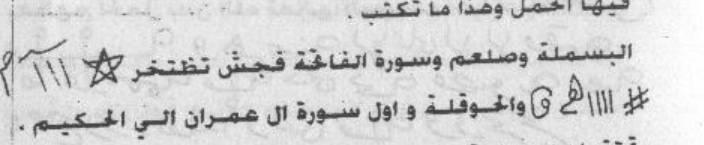
[Crop halaman 73 — crop presisi kiriman pengguna; nama berkas sama dengan halaman tujuan; bukan ekstraksi FINAL KHATAM dan bukan gambar ulang]
RAJAH HAL.73 — untai lambang talismani yang menyisip di baris arahan (bukan petak, bukan persegi ajaib)
2. Penentuan Jam
«tidak ada hitungan di halaman ini»
Catatan penyunting
kutipan ini sebenarnya QS al-Hajj 22:5 dan al-Qiyamah 75:37–40 serta al-Insan, tetapi disusun sebagai rangkaian; saya catat tanpa menambal. «لَمْ يَكُنْ كَلَّمَا» potongan yang tidak utuh.
Harakat dan tanda baca Arab bersifat editorial.
Rajah, wafaq, dan lambang pada halaman ini TIDAK digambar ulang di sini; bentuk aslinya wajib diambil dari pindaian halaman yang bersangkutan.
(Faa-idatun lil hamli: tuktabu maa ya'tii fii shah nin shiiniyyin fii waqtit tathahhuri minal haidhi wa tuhfarul kitaabatu bilibni 'anzatin saudaA-a fa-innallaaha ta'aalaa yaj'alu fiihal hamla wa haadzaa maa tuktabu: al-basmalatu wa shal'am wa suuratul faatiha(ti) fa jim syin takhtakhir [gambar: huruf dan bentuk — lihat pindaian halaman 73] wal haugalatu wa awwalu suurati aali 'imraana allatii (al-hakiimu).
«صَلْعَمْ» adalah singkatan selawat yang lazim di cetakan Melayu/Nusantara; saya biarkan dan tidak menjabarkannya. «تَخْتَخِرْ» tidak dapat dipastikan; «الَّتِي الْحَكِيمُ» susunannya rusak (mestinya «الْحَكِيم» sebagai sifat) dan dibiarkan.
5. Khususiyah — Waktu : Media : Bukhur
Waktu: Praktik dari sumber (halaman 73): lanjutan kutipan QS al-Hajj 22:5, al-Qiyamah, dan al-Insan tentang penciptaan; lalu «فائدة للحمل»: menulis pada mangkuk porselen pada waktu bersih dari haid, mengukir tulisan dengan susu kambing hitam; disertai rajah bergambar dan rangkaian ayat (al-Fatihah, Ali Imran, al-A‘raf, Maryam). : Media: Praktik dari sumber (halaman 73): lanjutan kutipan QS al-Hajj 22:5, al-Qiyamah, dan al-Insan tentang penciptaan; lalu «فائدة للحمل»: menulis pada mangkuk porselen pada waktu bersih dari haid, mengukir tulisan dengan susu kambing hitam; disertai rajah bergambar dan rangkaian ayat (al-Fatihah, Ali Imran, al-A‘raf, Maryam). : Bukhur: tidak disebutkan dalam sumber unit ini
M74 — Halaman 74, tulisan untuk manusia dan hewan, dan rajah penutup
Fahamalat-hu bilaa haulin wa laa quwwata illaa billaahil 'aliyyil 'azhiimi. (Ghairatun mujarrabun) lil mar-atil latii lam tahmil wal farasi wan naaqati wal baqarati wal khaili wa jamii'il asyjaari tuktabu haadzihil asmaa-u wa anta thaahirun wa yu'allaqu 'alaihaa fa-innahum yahmiluuna bi-idznillaahi ta'aalaa wa hiya haadzihid asmaa-ul latii tuktabu.
Ana 'adadun 11 = ana 4 imratun huwa 12 marratan yaah yaahu baahu. (sembilan«…» [tidak disalin penuh pada sumber kerja]) yah yah yah (berulang). (Ghairuhu lil hamli mujarrabun) uktub haadzihil asmaa-a fii nuskhataini waahidatan yahmiluhar rajulu wats tsaaniyata tahmiluhal mar-atu fa-innallaaha ta'aalaa yu'thiihimul hamla bi-idznillaahi ta'aalaa al-basmalatu. [Gambar besar: bentuk dan huruf — lihat pindaian halaman 74.] Fardun hakamun qidhaa qudduusun hajasun qayyuumun wa laa haula wa laa quwwata illaa billaahil 'aliyyil 'azhiimi.
3. Terjemahan
«Maka ia mengandungnya dengan (menyebut) tiada daya dan kekuatan kecuali dengan (pertolongan) Allah Yang Mahatinggi lagi Mahaagung.» (Kecemburuan yang sudah dicoba) — untuk perempuan yang belum hamil, juga kuda, unta, sapi, kuda (lain), dan semua pohon: nama-nama ini ditulis sedang engkau dalam keadaan suci, lalu digantungkan padanya, maka mereka akan “mengandung” dengan izin Allah—Mahatinggi; dan inilah nama-nama yang ditulis.
«Aku berjumlah 11 = aku 4, perempuan itu, ia 12 kali, yāh yāhu bāhu»; (deret angka sembilan) dan «yah yah «…» [tidak disalin penuh pada sumber kerja]» berulang-ulang. (Yang lain, untuk kehamilan, sudah dicoba): tulis nama-nama ini dalam dua naskah — satu dibawa lelaki dan yang kedua dibawa perempuan — maka Allah—Mahatinggi—akan memberi mereka kehamilan dengan izin-Nya; (diawali) basmalah. [Rajah besar berisi bentuk dan huruf pada pindaian halaman 74.] «Fard, Hakam, Qidhā, Quddūs, Hajas, Qayyūm» dan tiada daya serta kekuatan kecuali dengan (pertolongan) Allah Yang Mahatinggi lagi Mahaagung.
4. Metode, Penentuan Jam, dan Catatan Penyunting
1. Metode
Praktik dari sumber (halaman 74): «غيرة مجرب» — nama-nama ditulis dan digantungkan untuk perempuan yang belum hamil, juga untuk kuda, unta, sapi, dan pohon; lalu rangkaian «أنا عدد ١١ …» dan «يه يه …»; kemudian «غيره للحمل مجرب» — dua naskah nama, satu dibawa lelaki dan satu dibawa perempuan; ditutup dengan rajah besar bergambar dan «فرد حكم قدها قدوس حجس قيوم». Rajah tidak digambar ulang. Dinisbatkan pada penulis; tidak ada jaminan.
Halaman ini TIDAK memuat wafaq berpetak; berikut salinan transparannya (bukan rekonstruksi):
B1 — baris 1: ±5 unit kaligrafis («بسم الله» bergaya) + ekor panjang; 2 bulatan di ujung kiri
B2 — baris 2: ±10 unit loop + lingkaran di puncak; diselingi «ۥ» dan satu unit «٥» (؟)
B3 — baris 3: ±9 unit loop + lingkaran; dua unit berlekuk
B4 — baris 4: ±8 unit bertangkai pendek (mirip «م/ع/د/ر»)
B5 — baris 5: 4 unit besar berloop dengan ekor
Tidak ada bingkai, tidak ada petak, tidak ada garis tabel -> tidak ada grid(wafaq_kiri, wafaq_kanan). Peningkatan 200->400 dpi tidak menambah satu pun titik yang terbukti. Usulan transparan, bukan pengesahan; teks utama tidak disentuh.
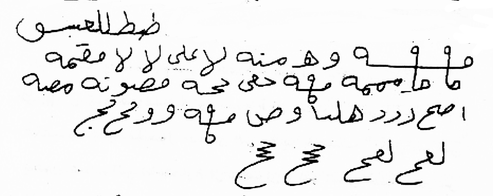
[Crop halaman 74 — crop presisi kiriman pengguna; nama berkas sama dengan halaman tujuan; bukan ekstraksi FINAL KHATAM dan bukan gambar ulang]
RAJAH HAL.74 — kaligrafi maghribi 5 baris (basmala bergaya + untai berulang) — bukan petak, bukan persegi ajaib
2. Penentuan Jam
«tidak ada hitungan di halaman ini»
Catatan penyunting
«غَيْرَة» di sini bukan “cemburu” dalam makna biasa, melainkan judul praktik; saya terjemahkan harfiah dan menjelaskannya. «وَالْخَيْلِ» setelah «الْفَرَس» tampak pengulangan; dibiarkan.
Harakat dan tanda baca Arab bersifat editorial.
Rajah, wafaq, dan lambang pada halaman ini TIDAK digambar ulang di sini; bentuk aslinya wajib diambil dari pindaian halaman yang bersangkutan.
«امْرَةٌ» kemungkinan «امرأة»; «نُسْخَتَيْن» ditulis «نستختين» pada cetakan — saya baca «نُسْخَتَيْن» dan menyatakannya. Deret angka ٩ dan «يه» adalah elemen azimat, bukan bilangan yang dapat dihitung; saya tidak menafsirkannya. «قِدْهَا/حَجَس» tidak dapat dipastikan.
5. Khususiyah — Waktu : Media : Bukhur
Waktu: tidak disebutkan dalam sumber unit ini : Media: Praktik dari sumber (halaman 74): «غيرة مجرب» — nama-nama ditulis dan digantungkan untuk perempuan yang belum hamil, juga untuk kuda, unta, sapi, dan pohon; lalu rangkaian «أنا عدد ١١ …» dan «يه يه …»; kemudian «غيره للحمل مجرب» — dua naskah nama, satu dibawa lelaki dan satu dibawa perempuan; ditutup dengan rajah besar bergambar dan «فرد حكم قدها قدوس حجس قيوم». : Bukhur: tidak disebutkan dalam sumber unit ini
Istihdhaaru fardin min afraadil jinni: awwalan tadkhulu makaanan thaahiran wa anta thaahiru badani wats tsaubi wa tughlikul makaana jayyidan bihaitsu in laa yadkhulahu ayyu nuurin qatthun wa laa min tsuqbil kawwaani yakuunu masduudun aidhan tsumma taqifu wa tastaqbilul qiblata bikhu-dhuu'in wa khusyuu'in tsumma taquulu: maa syaa-allaahu 'adada 3 - laa ilaaha illallaahu 7 - laa haula wa laa quwwata illaa billaahil 'aliyyil 'azhiimi 'adada 7 - suuratu jinni 'adada 7.
3. Terjemahan
Fasal kelima belas: pembakaran ‘āridh. Engkau berkata: «Bakarlah dari ‘ashr yāthūsy, thūsy, ‘armā harasy, hamthūsy — bakarlah jin, ‘āridh, qarin, dharabah, dan thāriq; dhareeb ar-ramad, dhareeb an-nasam yang buruk, dhareeh lamfaqnanjil mahrij, apa pun yang ada pada tubuh ini — tubuh Fulan bin Fulanah — semoga Allah memberkati kalian dan atas kalian.» Bakhurnya: laba-laba dan kabarbarah, pada waktu matahari terbenam, sebelum terbenam.
Menghadirkan seorang individu dari jin: pertama, masuklah ke tempat yang bersih sedangkan engkau bersih badan dan pakaian; tutuplah tempat itu dengan baik sehingga tidak ada cahaya yang masuk sama sekali, dan lubang jendela pun ditutup. Kemudian berdiri menghadap kiblat dengan tunduk dan khusyuk, lalu engkau mengucapkan: «Mā syā’a Allāh» tiga kali; «Lā ilāha illā Allāh» tujuh kali; «Lā haula wa lā quwwata illā billāh al-‘Aliyy al-‘Azhīm» tujuh kali; surah al-Jinn tujuh kali.
4. Metode, Penentuan Jam, dan Catatan Penyunting
1. Metode
Praktik dari sumber (halaman 75): Fasal Kelima Belas — احتراق العارض. Bacaan pembakaran ‘āridh («احرق من عصر ياطوش…») dengan penyebutan nama pasien dan ibunya; lalu «استحضار فرد من أفراد الجن»: masuk tempat tertutup dan gelap, menghadap kiblat, membaca «ما شاء الله» tiga kali, hauqalah, dan surah al-Jinn tujuh kali. Dinisbatkan pada penulis; bukan anjuran dan tanpa jaminan.
2. Penentuan Jam
«tidak ada hitungan di halaman ini»
Catatan penyunting
rangkaian «يَاطُوشْ طُوشْ عَرْمَا هَرَشْ هَمْطُوش» adalah azimat yang tidak dapat saya pastikan; disalin apa adanya. «الضَّرَبَة» bisa «الضَّرْبَة»; «ضَرِيحَ لَمْفَقْنَجِلْ» tidak jelas. «عَنْكَبُوتٌ وَكَبَرْبَرَةٌ» nama bahan bakaran yang tidak saya pastikan identitasnya.
Harakat dan tanda baca Arab bersifat editorial.
Rajah, wafaq, dan baris huruf pada halaman ini TIDAK digambar ulang; bentuk aslinya wajib diambil dari pindaian halaman yang bersangkutan.
«الْكَوَّانِ» kemungkinan «الكُوَّة» (jendela/lubang); «مَسْدُودٌ» mengikuti cetakan.
5. Khususiyah — Waktu : Media : Bukhur
Waktu: tidak disebutkan dalam sumber unit ini : Media: tidak disebutkan dalam sumber unit ini : Bukhur: tidak disebutkan dalam sumber unit ini
M76 — Halaman 76, menghadap kanan–kiri dan باب لرفع النزيف
Tsumma unzhur biwajhika 'alal yamiini wa taquulu: a'aana-llaahu man a'aanii 'alaa khairin min arwaahil jinnil mu'miniina 'adada 7. Tsumma taltafitu biwajhika ilal jihatisy syimaali wa taquulu bishayfadiisy 3 biqathlamiida bisy 'adada 7 fa-innaka tasma'u shautan yaquulu laka as-salaamu 'alaika wa rahmatul laahi farudd 'alaihis salaama wa's-alhu fiimaa turiiduhu.
Baabun liraf'in naziifi: wa huwa minal mujarrabati yuktabu maa ya'tii 'alaa tsalaatsati awraaqin biyukhris miskil aswadi wa yubakhkharu kulla lailatin biwaraqatin wa haakadzaa muddata tsalaatsi layaalin mutawaaliyaatin fa-innad dama yartafi'u bi-idznillaahi ta'aalaa wa haadzaa maa yuktabu 'alal awraaqi. [Gambar: baris huruf dan bentuk — lihat pindaian halaman 76.] Irfa'ud daman naazila min farjin kadzaa as-saa'ata haadzihi bi-amrillaahi ta'aalaa wa maa muhammadun illaa rasuulun qad khalat min qablihir rusulu afa-in maata aw qutilan qalabtum 'alaa a'qaabikum inqalab yaa damu.
3. Terjemahan
Kemudian arahkan wajahmu ke kanan dan ucapkan: «Semoga Allah menolong orang yang menolongku dalam kebaikan, dari ruh-ruh jin mukmin» tujuh kali. Lalu palingkan wajahmu ke arah kiri dan ucapkan «bishayfadīsy» tiga kali, «biqathlamīd bisy» tujuh kali; maka engkau akan mendengar suara yang berkata kepadamu: «Salam atasmu dan rahmat Allah», maka jawablah salamnya dan mintalah apa yang engkau kehendaki.
Bab untuk menghentikan perdarahan: termasuk yang sudah dicoba. Yang berikut ditulis pada tiga lembar kertas dengan tinta misik hitam, lalu setiap malam dibakar satu lembar, demikian selama tiga malam berturut-turut, maka darah akan berhenti dengan izin Allah—Mahatinggi; inilah yang ditulis pada lembar-lembar itu: [rajah baris huruf dan bentuk pada pindaian halaman 76]. «Angkatlah darah yang turun dari farji ini, saat ini juga, dengan perintah Allah—Mahatinggi»; «Dan Muhammad tidak lain hanyalah seorang rasul; sungguh telah berlalu rasul-rasul sebelum dia. Apakah jika dia mati atau terbunuh kamu berbalik ke belakang?» — «Berbaliklah, hai darah.»
4. Metode, Penentuan Jam, dan Catatan Penyunting
1. Metode
Praktik dari sumber (halaman 76): setelah bacaan, menoleh ke kanan sambil menyebut «أعان الله من أعاني على خير…» tujuh kali, lalu ke kiri dengan «بصيفديش»; disebut akan mendengar suara salam dari jin mukmin; lalu «باب لرفع النزيف»: menulis pada tiga lembar kertas dengan misik hitam, dibakar setiap malam selama tiga malam, dengan rajah baris huruf dan bacaan penutup. Rajah tidak digambar ulang. Dinisbatkan pada penulis.
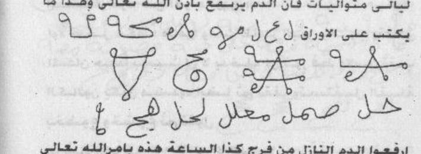
[Crop halaman 76 — crop presisi kiriman pengguna; nama berkas sama dengan halaman tujuan; bukan ekstraksi FINAL KHATAM dan bukan gambar ulang]
2. Penentuan Jam
«tidak ada hitungan di halaman ini»
Catatan penyunting
«بِصَيْفَدِيشْ» dan «بِقَطْلَمِيدَ بِشْ» adalah azimat yang tidak dapat dipastikan; disalin apa adanya. «فَرُدَّ» bisa «فَرُدَّ/فَارْدُدْ».
Harakat dan tanda baca Arab bersifat editorial.
Rajah, wafaq, dan baris huruf pada halaman ini TIDAK digambar ulang; bentuk aslinya wajib diambil dari pindaian halaman yang bersangkutan.
«بِيُخْرِ الْمِسْكِ» kemungkinan «بِمِدَادِ الْمِسْك» atau «بِبُخَار»; dibiarkan dan ditandai. Kutipan «وما محمد إلا رسول…» adalah QS Ali Imran 3:144, dipotong di tengah. «انْقَلَبَ يَا دَمُ» perintah kepada darah — bukan ayat; saya pisahkan.
5. Khususiyah — Waktu : Media : Bukhur
Waktu: Praktik dari sumber (halaman 76): setelah bacaan, menoleh ke kanan sambil menyebut «أعان الله من أعاني على خير…» tujuh kali, lalu ke kiri dengan «بصيفديش»; disebut akan mendengar suara salam dari jin mukmin; lalu «باب لرفع النزيف»: menulis pada tiga lembar kertas dengan misik hitam, dibakar setiap malam selama tiga malam, dengan rajah baris huruf dan bacaan penutup. : Media: Praktik dari sumber (halaman 76): setelah bacaan, menoleh ke kanan sambil menyebut «أعان الله من أعاني على خير…» tujuh kali, lalu ke kiri dengan «بصيفديش»; disebut akan mendengar suara salam dari jin mukmin; lalu «باب لرفع النزيف»: menulis pada tiga lembar kertas dengan misik hitam, dibakar setiap malam selama tiga malam, dengan rajah baris huruf dan bacaan penutup. : Bukhur: tidak disebutkan dalam sumber unit ini
M77 — Halaman 77, رفع النزيف lanjutan dan باب لزوال الصداع
Wartafa'a min farjin kadzaa bihaqqi haadzihil asmaa-i wal aayatil 'azhiimati takallam naba-un mustaqirrun. Baabun liraf'in naziifi: yuktabu maa ya'tii fii inaa-in nazhiifin bimiskin aswada wa yuhmaa wa yunqalu fa-innad dama yartafi'u bi-idznillaahi ta'aalaa wa haadzaa maa yuktabu: bismillaahir rahmaanir rahiim alif laam miim dzaalikal kitaabul hakiimu hudan wa rahmatan lil muhsiniina alladziina yuqiimuunash shalaata wa yu'tuunaz zakaata wa hum bil aakhirati hum yuuqinuuna biyaadin mamduumin bihaqqi hawwaa-a wa ummi muusaa inqatha'a biyaadin mamduumin min farjin kadzaa wartafi' bihaqqi haadzihil asmaa-i 99 thaa haa 93 min 4 shaad daal inqathi' biyaadin mamduumin wa laa ta'ud bihaqqir rabbil ma'buudi wa bi-alfi laa haula wa laa quwwata illaa billaahil 'aliyyil 'azhiimi.
Abwaabun lizawaalish shudaa'il muzmini: yuktabu maa ya'tii wa yuhmalu 'alar ra'si fa-innash shudaa'a wadh dharabaana yaskunu bi-idznillaahi ta'aalaa wa haadzihi maa yuktabu: al-basmalatu wats tashliyatu maa'ammaa maa ma'ma'. Wa lahul maa sakana fil laili wan nahaari.
3. Terjemahan
«Dan naiklah dari farji ini dengan hak nama-nama ini dan ayat yang agung.» — «Terkirimlah berita yang menetap.» Bab untuk menghentikan perdarahan: yang berikut ditulis pada wadah bersih dengan misik hitam, dipanaskan, lalu dipindahkan (diminumkan), maka darah akan berhenti dengan izin Allah—Mahatinggi; inilah yang ditulis: Dengan nama Allah Yang Maha Pengasih dan Maha Penyayang. Alif Lam Mim. «Itulah Kitab yang mengandung hikmah, menjadi petunjuk dan rahmat bagi orang-orang yang berbuat baik, yaitu orang-orang yang mendirikan salat, menunaikan zakat, dan mereka yakin akan akhirat.» (Kemudian) «biyādin mamdūm» dengan hak Hawa dan ibu Musa: «terputuslah biyādin mamdūm dari farji ini, dan naiklah dengan hak nama-nama ini» — 99, Tha Ha 93, «min 4 shad dal» — «terputuslah biyādin mamdūm dan jangan kembali, dengan hak Tuhan yang disembah, dan dengan seribu (kali) tiada daya dan kekuatan kecuali dengan (pertolongan) Allah Yang Mahatinggi lagi Mahaagung».
Bab-bab untuk hilangnya sakit kepala kronis: yang berikut ditulis dan digantungkan pada kepala, maka sakit kepala dan denyutnya akan tenang dengan izin Allah—Mahatinggi; inilah yang ditulis: basmalah, «التصلية», (lalu) «mā‘ammā mā ma‘ma‘», dan «Dan milik-Nya apa yang diam (berada) pada malam dan siang».
4. Metode, Penentuan Jam, dan Catatan Penyunting
1. Metode
Praktik dari sumber (halaman 77): lanjutan «رفع النزيف» — menulis pada mangkuk bersih dengan misik hitam lalu dipanaskan dan diminumkan; dengan potongan QS al-Baqarah 2:2, Ali Imran 3:144, dan rangkaian nama; lalu باب لزوال الصداع المزمن — menulis dan menggantungkan pada kepala, dengan huruf-huruf dan potongan QS al-An‘am 6:13. Dinisbatkan pada penulis; tidak menggantikan pengobatan.
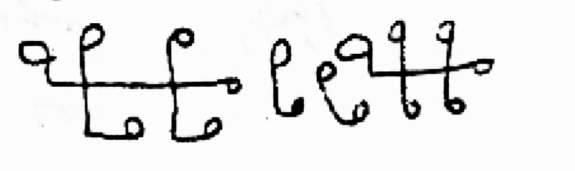
[Crop halaman 77 — crop presisi kiriman pengguna; nama berkas sama dengan halaman tujuan; bukan ekstraksi FINAL KHATAM dan bukan gambar ulang]
2. Penentuan Jam
«tidak ada hitungan di halaman ini»
Catatan penyunting
«بِيَادٍ مَمْدُومٍ» adalah rangkaian azimat, bukan kata Arab yang dapat saya pastikan; disalin apa adanya. «يُنْقَلُ» bisa «يُنْعَل/يُسْقَى»، saya baca sebagai dipindahkan/diminumkan dan menyatakannya. Kutipan: QS al-Baqarah 2:1–2, Luqman 31:2–4; angka ٩٩ dan ٩٣ serta «ص د» adalah unsur azimat, saya tidak menafsirkan.
Harakat dan tanda baca Arab bersifat editorial.
Rajah, wafaq, dan baris huruf pada halaman ini TIDAK digambar ulang; bentuk aslinya wajib diambil dari pindaian halaman yang bersangkutan.
«مَاعَمَا مَا مَعْمَعْ» adalah baris huruf/azimat yang tidak dapat saya pastikan; disalin apa adanya dan ditandai, tidak saya karang. «الضَّرَبَان» = denyut/berdebar.
5. Khususiyah — Waktu : Media : Bukhur
Waktu: tidak disebutkan dalam sumber unit ini : Media: Praktik dari sumber (halaman 77): lanjutan «رفع النزيف» — menulis pada mangkuk bersih dengan misik hitam lalu dipanaskan dan diminumkan; dengan potongan QS al-Baqarah 2:2, Ali Imran 3:144, dan rangkaian nama; lalu باب لزوال الصداع المزمن — menulis dan menggantungkan pada kepala, dengan huruf-huruf dan potongan QS al-An‘am 6:13. : Bukhur: tidak disebutkan dalam sumber unit ini
Wa huwas samii'ul 'aliimu. Uskun ayyuhal waji'u wash shudaa'u wasy syaqiiqatu war riihus saw-u min fulaanin aw fulaanata uskun saakinan kamaa sakana 'arsyur rahmaani uskun ayyuhadh dhaaribu wash shudaa'u wasy syaqiiqatu in yasya' taskunir riihu fazhzhallna rawaakida 'alaa zhahrihaa. Inna fii dzaalika la-aayaatin likulli shabbaarin syakuurin. Uskun bihaqqi alam tara ilaa rabbika kaifa madda zhzhilla wa lau syaa-a laja'alahu saakinan tsumma ja'alnas syamsa 'alaihi daliilan tsumma qabadhnaahu ilainaa qabdhan yasiiran.
Uskun ayyuhal waji'u uskun kamaa sakana kullu syai-in li'azhamatihi. Uskun bihaqqi lau anzalnaa haadzal qur-aana 'alaa jabalin lara-aitahu khaasyi'an mutashaddi'an ilaa aakhirisy suurati. Wa haadzaa huwal wafaqu. [Wafaq 3x3: lihat pindaian halaman 78 — sel-sel berisi «‘al» dan angka, di sekelilingnya «Miikaa'iil» dan tulisan lain.]
3. Terjemahan
«Dan Dialah Yang Maha Mendengar lagi Maha Mengetahui. Tenanglah, hai (rasa) nyeri, sakit kepala, migrain, dan angin buruk dari Fulan atau Fulanah; tenanglah seperti tenangnya arasy Yang Maha Pengasih. Tenanglah, hai yang memukul, sakit kepala, dan migrain»; «Jika Dia menghendaki, Dia diamkan angin sehingga (bahtera) tertahan di permukaannya. Sesungguhnya pada yang demikian itu benar-benar terdapat tanda-tanda bagi setiap orang yang sabar lagi bersyukur.» «Tenanglah, dengan hak (firman): Apakah engkau tidak melihat Tuhanmu, bagaimana Dia memanjangkan bayangan? Dan jika Dia menghendaki, Dia jadikan ia diam; kemudian Kami jadikan matahari sebagai penunjuk baginya, kemudian Kami tarik ia kepada Kami dengan tarikan yang mudah.»
«Tenanglah, hai yang merasakan nyeri; tenanglah seperti tenangnya segala sesuatu karena keagungan-Nya. Tenanglah dengan hak (firman): Seandainya Kami turunkan Al-Qur’an ini kepada sebuah gunung, niscaya engkau melihatnya tunduk dan terbelah» sampai akhir surah. Dan inilah wafaq-nya: [wafaq 3×3 pada pindaian halaman 78; sel-selnya berisi «عل» dan angka, di sekelilingnya tertulis «Miikaa'iil» dan tulisan lain — tidak saya gambar ulang.]
4. Metode, Penentuan Jam, dan Catatan Penyunting
1. Metode
Praktik dari sumber (halaman 78): lanjutan bacaan «اسكن» yang menyebut nama pasien dan ibunya, kutipan QS ar-Ra‘d 13:16, al-Furqan 25:45–46, dan al-Hasyr 59:21; ditutup «وهذا هو الوفق» dengan wafaq 3×3 bergambar berisi angka dan kata «عل» serta nama ميكائيل di sekitarnya. Wafaq tidak digambar ulang; hanya dari pindaian. Dinisbatkan pada penulis.
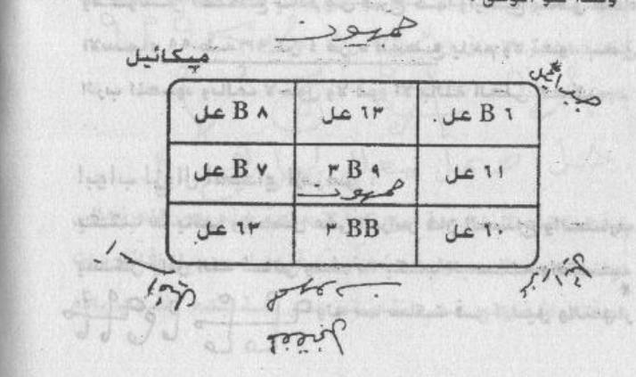
[Crop halaman 78 — crop presisi kiriman pengguna; nama berkas sama dengan halaman tujuan; bukan ekstraksi FINAL KHATAM dan bukan gambar ulang]
Rajah, wafaq, dan baris huruf pada halaman ini TIDAK digambar ulang; bentuk aslinya wajib diambil dari pindaian halaman yang bersangkutan.
wafaq pada halaman ini adalah gambar; angka dan tulisan di sekitarnya sukar dipastikan (tampak «B٨، B٧، B٩، BB»، «عل ١٣»، «عل ١١»، «عل ١٠»). Saya hanya mencatat dan tidak mengarang susunan sel. «عَل» bisa «ع ل» sebagai huruf terpisah.
5. Khususiyah — Waktu : Media : Bukhur
Waktu: tidak disebutkan dalam sumber unit ini : Media: tidak disebutkan dalam sumber unit ini : Bukhur: tidak disebutkan dalam sumber unit ini
M79 — Halaman 79, Fasal Keenam Belas: إرسال عون شديد
Fasal keenam belas: bab mengirim bantuan yang kuat. Jika engkau hendak mengamalkannya, berpuasalah hari Sabtu dengan riyadhah, lalu ambillah pelepah (daun) hijau dan tulislah padanya surah al-‘Adiyat di pagi hari sampai akhirnya. Setelah Isya, ambil mangkuk pembakar baru dan bakarlah cendana di atas api yang kuat, sementara engkau memegang pelepah itu di tanganmu; lalu engkau membaca qasam tujuh puluh kali sampai pelepah itu bergetar di tanganmu. Kemudian lepaskanlah kepada orang yang engkau tuju, secepat mungkin ke tempat yang engkau kehendaki, dan jangan engkau ambil (kembali).
Dan inilah qasam itu; engkau mengucapkan: «Sarī‘, Rafī‘, Majī‘, Salthī‘, Halī‘, Mulī‘, Yakhlusy, Bimakhlūsy, dengan hak Daimūj, Dalīkūsy, Ishthifār, ‘Amyākh — datanglah, hai Marrah, dan bertawakallah dengan (kekuatan) sulthanmu atasnya.» «Turunlah malaikat kemarahan atas siapa yang dimurkai Allah; dan siapa yang menyekutukan Allah, maka turunlah atasnya sesuatu dari langit lalu disambar burung atau diterbangkan angin ke tempat yang jauh.» — «Segeralah, cepatlah, saat ini, saat ini.»
4. Metode, Penentuan Jam, dan Catatan Penyunting
1. Metode
Praktik dari sumber (halaman 79): Fasal Keenam Belas — باب إرسال عون شديد. Berpuasa hari Sabtu dengan riyadhah, mengambil kertas hijau dan menuliskan «سورة والعاديات», mengasapi dengan kemenyan pada malam harinya, memegang kertas dengan tangan kanan sambil membaca qasam tujuh puluh kali hingga tangan bergetar, lalu melepasnya kepada orang yang dituju dengan cepat; disertai rangkaian nama («سريع، رفيع، مجيع، سلطيع، هليع، مليع يخلقش…»). Dinisbatkan pada penulis; tidak ada jaminan dan bukan anjuran.
2. Penentuan Jam
«tidak ada hitungan di halaman ini»
Catatan penyunting
«الْجَرِيدَة» = pelepah/daun (kurma); «بِأَسْرَعِهِ» susunannya tidak baku dan dibiarkan; «وَلَا تَأْخُذُهُ» terulang pada cetakan.
Harakat dan tanda baca Arab bersifat editorial.
Rajah, wafaq, dan baris huruf pada halaman ini TIDAK digambar ulang; bentuk aslinya wajib diambil dari pindaian halaman yang bersangkutan.
rangkaian «سَرِيعٌ رَفِيعٌ…» dan «دَيْمُوجٍ دَلِيكُوشْ…» adalah qasam/azimat yang tidak dapat saya pastikan; disalin apa adanya. «اجْبِبْ» mungkin «أَجِبْ». «مِسْلِطَكْ» tidak jelas.
5. Khususiyah — Waktu : Media : Bukhur
Waktu: Berpuasa hari Sabtu dengan riyadhah, mengambil kertas hijau dan menuliskan «سورة والعاديات», mengasapi dengan kemenyan pada malam harinya, memegang kertas dengan tangan kanan sambil membaca qasam tujuh puluh kali hingga tangan bergetar, lalu melepasnya kepada orang yang dituju dengan cepat; disertai rangkaian nama («سريع، رفيع، مجيع، سلطيع، هليع، مليع يخلقش…»). : Media: Berpuasa hari Sabtu dengan riyadhah, mengambil kertas hijau dan menuliskan «سورة والعاديات», mengasapi dengan kemenyan pada malam harinya, memegang kertas dengan tangan kanan sambil membaca qasam tujuh puluh kali hingga tangan bergetar, lalu melepasnya kepada orang yang dituju dengan cepat; disertai rangkaian nama («سريع، رفيع، مجيع، سلطيع، هليع، مليع يخلقش…»). : Bukhur: Berpuasa hari Sabtu dengan riyadhah, mengambil kertas hijau dan menuliskan «سورة والعاديات», mengasapi dengan kemenyan pada malam harinya, memegang kertas dengan tangan kanan sambil membaca qasam tujuh puluh kali hingga tangan bergetar, lalu melepasnya kepada orang yang dituju dengan cepat; disertai rangkaian nama («سريع، رفيع، مجيع، سلطيع، هليع، مليع يخلقش…»).
Dan ini, lepaskanlah ia. «Berangkatlah dengan selamat, hai Marrah, dan bertawakallah dengan (kekuatan) itu; lakukanlah apa yang aku perintahkan kepadamu dengan hak nama-nama ini: Qayāsy, Kayāsy, ‘Aryūsy, Bakhasy. Bertawakallah, hai Tuan Mahrabānīl, dengan mengarahkan Marrah kepada (orang) itu. Datanglah, hai Marrah, dan lakukanlah apa yang aku perintahkan dengan hak nama-nama ini, dan jangan menyalahi, niscaya engkau terbakar dengan api racun» — «Habbā, segeralah, segeralah, cepatlah, cepatlah, saat ini, saat ini.»
Qasam untuk sengatan kalajengking dan ular: engkau membaca al-Fatihah tujuh kali tanpa basmalah dan tanpa ta’min, lalu mengucapkan: «Bāsimī, apabila sebab-sebab telah hilang, orang yang berlaku melampaui (menyerang)«…» [tidak disalin penuh pada sumber kerja] hai hijabku, apabila tiada hijab yang melindungiku, aku bersumpah atasmu dengan nama Bāsimūm — janganlah engkau merambat di tubuh dan jangan berenang, dengan izin Yang Mahahidup lagi Yang Berdiri sendiri, dengan hak tuanku Ahmad ar-Rifā‘ī, pemilik tauhid, dengan rahasianya; kilatnya menghindarkanmu; tahanlah, kar karr akbar nadā ‘alayyazi fayarid, dan langit serta yang datang pada malam hari — keluarlah menuju tulang-tulang rusuk; keluarlah dengan nama (Dia) dari urat-urat dan persendian.»
4. Metode, Penentuan Jam, dan Catatan Penyunting
1. Metode
Praktik dari sumber (halaman 80): lanjutan «انصرف بسلام…» dengan menyebut nama «مهرائيل» agar melakukan perintah dan tidak menyalahi; lalu قسم لسعة العقارب والإفاعي (qasam untuk sengatan kalajengking dan gigitan ular) — membaca al-Fatihah tujuh kali tanpa basmalah dan tanpa ta‘min, lalu rangkaian qasam dengan nama «أحمد الرفاعي». Dinisbatkan pada penulis; bukan pertolongan medis — sengatan/gigitan berbahaya harus ditangani dokter.
2. Penentuan Jam
«tidak ada hitungan di halaman ini»
Catatan penyunting
«هَبَا» kemungkinan «هَبَّ» atau seruan; «مَهْرَبَانِيل» nama yang tidak dapat saya pastikan. «اصْرِفْهُ» di awal menyambung perintah halaman 79.
Harakat dan tanda baca Arab bersifat editorial.
Rajah, wafaq, dan baris huruf pada halaman ini TIDAK digambar ulang; bentuk aslinya wajib diambil dari pindaian halaman yang bersangkutan.
kalimat ini rusak susunannya pada cetakan («يَعْتَدِي اذِي سَيِّفُونَ»، «عَلَيَّزِي»، «مَنْ الْعُرُوقِ»); saya pertahankan dan tidak menambal. «سَعَةِ» mestinya «سَعَة/لَسْعَة».
5. Khususiyah — Waktu : Media : Bukhur
Waktu: tidak disebutkan dalam sumber unit ini : Media: tidak disebutkan dalam sumber unit ini : Bukhur: tidak disebutkan dalam sumber unit ini
M81 — Halaman 81, qasam lanjutan dan فائدة لرجوع المرأة
Ghaalibun 'alaa man ghaalibubnu abii thaalin bihaqqi maa kaana wa maa yakuunu wa bihaqqi maa fil lauhil mahfuuzhi jamii'un fii makaanil ladghati wa minhaa ilaa yasri zhuhuurin bida'qin mahbuubatin shuuratu mahbuubatin saqfan thaisanin saqfan thiimin ikhwaani makh-yathin ahmadin adama hammaa-in amiinim bihaqqis sayyidi nuurid diini was sayyidi sa'did diini ikhdha' qariina maswarata kardii karnadii saaqa hindii maryasy hijaabun bismillaahi 'alal maa-i wa bihamdillaahi wa shallal laahu 'alaa sayyidinaa muhammadin wa 'alaa aalihi wa shahbihi wa sallama.
Faa-idatun lirujuu'il mar-atil latii zaujuhaa: yuktabul maadhii wa yahmiluhal mar-atu 'alaihaa fa-innaz zauja yarji'u ilaihaa wa haadzaa maa tuktabu: al-basmalatu annahu raj'atun liqaadirin 7 marraatin wa inimra-atun khaafat min ba'lihaa nusyuuzan aw a'raadhan falaa junaaha 'alaihimaa an yushlihaa bainahumaa shulhan wash shulhu khairun 7 marraatin wal insyiraahu kulluhaa. Baabun lishshulhi bainaz zaujaini: yuktabu yaumal khamiisi fii quwwatil hilaali wal bukhuuru 'ammaalu sandawaris.
3. Terjemahan
«Ghālib atas siapa«…» [tidak disalin penuh pada sumber kerja] Ghālib bin Abi Thalib, dengan hak apa yang telah ada dan akan ada, dan dengan hak apa yang ada pada Lauh Mahfuz, semuanya, pada tempat sengatan itu dan dari sana ke arah kiri punggung«…» [tidak disalin penuh pada sumber kerja]», (disusul) rangkaian «bida‘q mahbūbah, shūrah mahbūbah, saqfan thaisan, saqfan thīm, ikhwān makh-yath, Ahmad Adam, hammā’ amīn, dengan hak Tuan Nūr ad-Dīn dan Tuan Sa‘d ad-Dīn, tunduklah qarin Maswarah, Kardī Karnadī, sāq Hindī Maryasy» — hijab, dengan nama Allah atas air, dan dengan pujian bagi Allah; semoga Allah melimpahkan selawat dan salam kepada tuan kami Muhammad, keluarganya, dan para sahabatnya.
Faedah untuk kembalinya perempuan (kepada) suaminya: yang telah lalu ditulis, dan perempuan menggantungkannya pada dirinya, maka suami akan kembali kepadanya; inilah yang ditulis: basmalah, «bahwa ia adalah pengembalian bagi Yang Mahakuasa» tujuh kali; «Dan jika seorang perempuan khawatir akan nusyuz atau sikap acuh dari suaminya, maka tidak ada dosa bagi keduanya mengadakan perdamaian yang sebenarnya; dan perdamaian itu lebih baik» tujuh kali; dan seluruh «الانشراح». Bab untuk perdamaian antara suami-istri: ditulis pada hari Kamis pada (saat) kekuatan bulan; bakhurnya «‘ammāl sandawaris».
4. Metode, Penentuan Jam, dan Catatan Penyunting
1. Metode
Praktik dari sumber (halaman 81): lanjutan qasam sengatan dengan nama-nama (غالب، علي بن أبي طالب، اللوح المحفوظ، طيسن…); lalu فائدة لرجوع المرأة التي زوجها — menulis dan menggantungkan agar suami kembali, serta untuk perempuan yang takut suaminya menolak; ditutup dengan judul «باب للصلح بين الزوجين» yang ditulis pada hari Kamis. Dinisbatkan pada penulis; tidak ada jaminan dan bukan nasihat rumah tangga.
2. Penentuan Jam
«tidak ada hitungan di halaman ini»
Catatan penyunting
«غَالِبٌ عَلَى مَنْ غَالِبٌ بْنُ أَبِي طَالِبٍ» susunannya rusak; saya biarkan dan menandainya. «طَيْسَنٍ سَقْفًا طِيمٍ»، «مَسْوَرَةَ كَرْدِي كَرْنَدِي»، «مَرْيَشْ» tidak dapat dipastikan.
Harakat dan tanda baca Arab bersifat editorial.
Rajah, wafaq, dan baris huruf pada halaman ini TIDAK digambar ulang; bentuk aslinya wajib diambil dari pindaian halaman yang bersangkutan.
«الْمَاضِي» kemungkinan «الْمَاضِي» (yang lalu) sebagai istilah; «رَجَعَةٌ لِقَادِرٍ» tidak baku. Kutipan «وإن امرأة خافت…» adalah QS an-Nisa 4:128. «عَمَّالُ سَنْدَوَرِس» bahan bakaran yang tidak saya pastikan.
praktik rumah tangga yang dinisbatkan penulis; bukan nasihat dan tidak menjamin.
5. Khususiyah — Waktu : Media : Bukhur
Waktu: Praktik dari sumber (halaman 81): lanjutan qasam sengatan dengan nama-nama (غالب، علي بن أبي طالب، اللوح المحفوظ، طيسن…); lalu فائدة لرجوع المرأة التي زوجها — menulis dan menggantungkan agar suami kembali, serta untuk perempuan yang takut suaminya menolak; ditutup dengan judul «باب للصلح بين الزوجين» yang ditulis pada hari Kamis. : Media: Praktik dari sumber (halaman 81): lanjutan qasam sengatan dengan nama-nama (غالب، علي بن أبي طالب، اللوح المحفوظ، طيسن…); lalu فائدة لرجوع المرأة التي زوجها — menulis dan menggantungkan agar suami kembali, serta untuk perempuan yang takut suaminya menolak; ditutup dengan judul «باب للصلح بين الزوجين» yang ditulis pada hari Kamis. : Bukhur: tidak disebutkan dalam sumber unit ini
Wa jaawiyyun wa lubaanu dzakarin wa tuffaahil jinni wa bakhuurus sawdaani wa yudfanu 'alaa baabi man syannat wa haadzaa maa tuktabu: 35 65 13 13 98 28 22 [gambar: angka dan rumus — lihat pindaian halaman 82] wa naza'naa maa fii shuduurihim min ghillin ikhwaanan 'alaa sururin mutaqaabiliina fajama'naahum jam'an wa huwa 'alaa jam'ihim idzaa syaa-a qadiirun tawakkalau yaa khuddaama haadzihil aayaati wa hayyijuu wajlibuu waslibuu wajdzibuu qalba kadzaa ilaa mahabbati kadzaa al-wahal wahal 'ajala 'ajala as-saa'ata as-saa'ata.
Baabu mahabbatin bisuuratil faatiha(ti): taqra-u suuratal faatiha(ti) 31 marratan tsumma fil marratil akhiirati tukarriru aayaati iyyaaka na'budu wa iyyaaka nasta'iinu 31 marratan tsumma taquulu: Allaahumma kamaa jama'ta baina dzaatika wa shifaatika wa asmaa-ika ajma' bainii wa baina ruuhaniyyati kadzaa bihaqqi ihdinas shiraathal mustaqiima ilaa aakhirihaa wa shallal laahu 'alaa sayyidinaa muhammadin wa 'alaa aalihi wa shahbihi wa sallama. Baabu talbiisil jutstsati: tuktabu 'alal ashaabi'i haadzihil asmaa-ul aatiyatu wa tu'azzamu bimaa tuktabu.
3. Terjemahan
Dan jawi, lubbān jantan, labu jin, serta bakhur sawdān; lalu dikuburkan di pintu orang yang (menjadi sasaran). Dan inilah yang ditulis: ٣٥ ٦٥ ١٣ ١٣ ٩٨ ٢٨ ٢٢ [baris angka dan rumus pada pindaian halaman 82]. «Dan Kami lenyapkan segala rasa dendam yang ada dalam dada mereka; mereka merasa bersaudara, duduk berhadap-hadapan di atas dipan.» «Maka Kami kumpulkan mereka semuanya, dan Dia Mahakuasa atas pengumpulan mereka apabila Dia menghendaki.» — «Bertawakallah, hai para pelayan ayat-ayat ini; bangkitkanlah, tariklah, rampaslah, dan tariklah hati si Fulan kepada cinta si Fulanah — segeralah, segeralah, cepatlah, cepatlah, saat ini, saat ini.»
Bab محبة dengan surah al-Fatihah: engkau membaca surah al-Fatihah tiga puluh satu kali; pada kali terakhir engkau ulangi ayat «إياك نعبد وإياك نستعين» tiga puluh satu kali; lalu engkau berkata: «Ya Allah, sebagaimana Engkau menghimpun antara Zat-Mu, sifat-sifat-Mu, dan nama-nama-Mu seluruhnya, himpunkanlah antara aku dan ruhani (jin) si Fulan, dengan hak (firman) tunjukkanlah kami jalan yang lurus sampai akhirnya»; semoga Allah melimpahkan selawat dan salam kepada tuan kami Muhammad, keluarganya, dan para sahabatnya. Bab «تلبيس الجثة»: nama-nama berikut ditulis pada jari-jari, lalu dibacakan azimat dengan apa yang ditulis.
4. Metode, Penentuan Jam, dan Catatan Penyunting
1. Metode
Praktik dari sumber (halaman 82): lanjutan bahan (jawi, lubbān, cendana, labu jin, bawang hitam) dan penulisan di kuburan; lalu باب محبة dengan baris angka dan ayat «ونزعنا ما في صدورهم من غل…» hingga «توكلوا»; lalu باب محبة بسورة الفاتحة — membaca al-Fatihah 31 kali dan «إياك نستعين» 31 kali; ditutup judul «باب تلبيس الجثة». Dinisbatkan pada penulis; tidak ada jaminan.
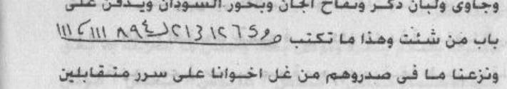
[Crop halaman 82 — crop presisi kiriman pengguna; nama berkas sama dengan halaman tujuan; bukan ekstraksi FINAL KHATAM dan bukan gambar ulang]
2. Penentuan Jam
«tidak ada hitungan di halaman ini»
Catatan penyunting
(Wa jaawiyyun wa lubaanu dzakarin wa tuffaahil jinni wa bakhuurus sawdaani wa yudfanu 'alaa baabi man syannat wa haadzaa maa tuktabu: 35 65 13 13 98 28 22 [gambar: angka dan rumus — lihat pindaian halaman 82] wa naza'naa maa fii shuduurihim min ghillin ikhwaanan 'alaa sururin mutaqaabiliina fajama'naahum jam'an wa huwa 'alaa jam'ihim idzaa syaa-a qadiirun tawakkalau yaa khuddaama haadzihil aayaati wa hayyijuu wajlibuu waslibuu wajdzibuu qalba kadzaa ilaa mahabbati kadzaa al-wahal wahal 'ajala 'ajala as-saa'ata as-saa'ata.)
deret angka ٣٥ ٦٥ ١٣ ١٣ ٩٨ ٢٨ ٢٢ dan baris rumus adalah rajah angka, bukan hitungan yang bisa saya periksa; saya tidak mengarang susunannya. «مَنْ شَنَّتْ» tidak jelas. Kutipan: QS al-A‘raf 7:43, al-Hijr 15:? (potongan), dan QS al-Qiyamah; saya catat sebagai bantuan rujukan, bukan koreksi.
Harakat dan tanda baca Arab bersifat editorial.
Rajah, wafaq, dan baris huruf pada halaman ini TIDAK digambar ulang; bentuk aslinya wajib diambil dari pindaian halaman yang bersangkutan.
«أَجْمَعْ» bisa «اجمع» (perintah). «رُوحَانِيَّةِ كَذَا» = jin ruhani yang dituju. «تَلْبِيسِ الْجُثَّة» berarti “mengenakan” pada tubuh; istilah penulis yang saya pertahankan.
5. Khususiyah — Waktu : Media : Bukhur
Waktu: tidak disebutkan dalam sumber unit ini : Media: tidak disebutkan dalam sumber unit ini : Bukhur: tidak disebutkan dalam sumber unit ini
M83 — Halaman 83, تلبيس الجثة lanjutan dan طلسم للأمن من الخوف
Wa waahidin wa 'isyrina marratan wal bukhuuru mathluuqun wa huwa kabarbaratun wa lubaanu dzakarin fa-innahu yalbasul kaffa wa yashra'uhu wa yarmiihi ilal ardhi wa haadzaa maa tuktabu wa bihi tu'azzamu wa taquulu: yathuu syal yasyun 2 biqausyal yasyun 2 bihuusykayasyun 2 ahmaakayasyun 2 bihimaa humaa ijib yaa abii janaahin walbis ankafa wa farriqil ashaabi'a warmi haadzihil jutstsata ilal ardhi yamiin huwa al-awwalu wal aakhiru wazh zhaahiru wal baathinu wa huwa bikulli syai-in 'aliimun ijib billadzii tunthiqu sam'aka wa basharaka wa khalaqaka min naaris sumuumi ijib billadzii jallaa lil jabali faja'alahu dakkan wa kharra muusaa sha'iqa(n).
Min lathaa-ifizh asraari. Faa-idatun lil amni minal khaufi: uktubith thilsimal aatiya ma'a aayaatil khaufi wa aayatil kursiyyi fii kaaghadin wa bakhkhirhu bilubaanin dzakarin wa jaawiyyin wa mustakaa wa 'uudin fa-innahu yadzhabul khaufu wa haadzath thilsamu kamaa taraa. [Gambar: dua baris angka dan rumus — lihat pindaian halaman 83.] Wats tsaqiifatu war riihus saw-u min fulaanin aw fulaanata.
3. Terjemahan
Dan dua puluh satu kali; bakhurnya «mathlūq» yaitu kabarbarah dan lubbān jantan. Maka ia (jin) akan “mengenakan” telapak tangan, lalu menjatuhkannya dan melemparkannya ke tanah. Inilah yang ditulis dan dengannya dibacakan azimat; engkau mengucapkan: «Yathū syalyasy, biqausyalyasy, bihūsy kayasy, ahmākayasy, bihimā humā — jawablah, hai Abū Janāh, kenakanlah (tubuh ini), pisahkanlah jari-jari, dan lemparkan tubuh ini ke bumi. (Dia) Yang Awal dan Yang Akhir, Yang Zahir dan Yang Batin, dan Dia Maha Mengetahui segala sesuatu. Jawablah dengan (nama) Yang membuat pendengaran dan penglihatanmu berbicara, dan menciptakanmu dari api yang sangat panas. Jawablah dengan (nama) Yang menampakkan (diri) kepada gunung lalu menjadikannya rata, dan Musa pun jatuh pingsan.»
Dari kelembutan rahasia-rahasia. Faedah untuk keamanan dari rasa takut: tulislah طلسم berikut bersama ayat-ayat (tentang) rasa takut dan آية الكرسي pada kertas, lalu bakarlah dengan lubbān jantan, jawi, mastika, dan kayu ‘ūd; maka rasa takut akan hilang. Dan طلسم ini sebagaimana engkau lihat: [dua baris angka dan rumus pada pindaian halaman 83 — tidak saya gambar ulang]. «Dan (dari) ats-tsaqīfah dan angin buruk dari Fulan atau Fulanah.»
4. Metode, Penentuan Jam, dan Catatan Penyunting
1. Metode
Praktik dari sumber (halaman 83): lanjutan «تلبيس الجثة» — bahan (mirrah, kayu besar, lubbān, dan bakhur), tulisan yang dibaca lalu diusapkan ke telapak dan dilempar ke tanah; lalu فائدة للأمن من الخوف — menulis طلاسم bersama آية الكرسي, dengan bakhur lubbān, jawi, dan mastika, lalu dibakar dan digantung; disertai dua baris rajah/angka. Rajah tidak digambar ulang. Dinisbatkan pada penulis.
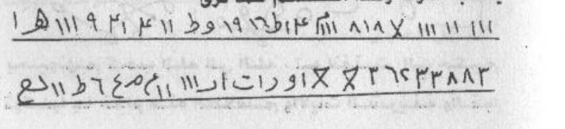
[Crop halaman 83 — crop presisi kiriman pengguna; nama berkas sama dengan halaman tujuan; bukan ekstraksi FINAL KHATAM dan bukan gambar ulang]
2. Penentuan Jam
«tidak ada hitungan di halaman ini»
Catatan penyunting
«مَطْلُوقٌ» tidak dapat dipastikan (mungkin «مَطْحُون» atau nama bahan); «الْبِسْ أَنْكَفَ» janggal. Kutipan «هو الأول والآخر…» QS al-Hadid 57:3 dan potongan al-A‘raf 7:143.
lanjutan تلبيس الجثة; dinisbatkan penulis, tidak dianjurkan.
Harakat dan tanda baca Arab bersifat editorial.
Rajah, wafaq, dan baris huruf pada halaman ini TIDAK digambar ulang; bentuk aslinya wajib diambil dari pindaian halaman yang bersangkutan.
dua baris rajah pada halaman ini berisi angka dan rumus yang tidak dapat saya pastikan (tampak «٨١٨٧»، «٣٠٤»، «١٩٦»، «٢٦٥٣٣٨٨٢»); hanya dicatat, tidak dikarang. «كَاغَد» = kertas (serapan). «الثَّقِيفَة» tidak jelas; mungkin nama gangguan.
5. Khususiyah — Waktu : Media : Bukhur
Waktu: tidak disebutkan dalam sumber unit ini : Media: Praktik dari sumber (halaman 83): lanjutan «تلبيس الجثة» — bahan (mirrah, kayu besar, lubbān, dan bakhur), tulisan yang dibaca lalu diusapkan ke telapak dan dilempar ke tanah; lalu فائدة للأمن من الخوف — menulis طلاسم bersama آية الكرسي, dengan bakhur lubbān, jawi, dan mastika, lalu dibakar dan digantung; disertai dua baris rajah/angka. : Bukhur: tidak disebutkan dalam sumber unit ini
Liqadhaa-il haajati: tuktabu maa ya'tii wa tuhmalu fa-innnal haajata tuqdhaa bi-idznillaahi ta'aalaa wa haadzaa maa yuktabu: al-basmalatu wa shallal laahu 'alaa sayyidinaa muhammadin wa 'alaa aalihi wa shahbihi wa sallama. Dakhaltu 'alaikum dukhuulal asadi wa 'alautu 'alaikum 'uluwwas samaa-i antumun naaru wa anal maa-u uthfi-ukum 2 bi-idznillaahil kariimi thafai-tukum bi-asmi-llaahil ladzii laa yadhurru ma'asmihi syai-un fil ardhi wa laa fis samaa-i wa huwas samii'ul 'aliimu wa shallal laahu 'alaa sayyidinaa muhammadin wa 'alaa aalihi wa shahbihi wa sallama.
Baabu mahabbatin yuktabu wa yuhmalu: tuktabuth thilsimul aatii wal aayaatu haulahu fii saa'atin sa'iidatin wa bikhu buurin thayyibin watluu 'alaihil aayaatil aatiyata 72 marratan ma'at tawakkuli fii kulli marratin wa haadzath thilsimu [gambar: bentuk, garis, dan angka — lihat pindaian halaman 84] yuhibbuunahum kakahabbil laahil ladzii lau anfaqta maa fil ardhi jamii'an.
3. Terjemahan
Untuk terkabulnya kebutuhan: yang berikut ditulis dan digantungkan, maka kebutuhan akan terpenuhi dengan izin Allah—Mahatinggi; inilah yang ditulis: basmalah, dan semoga Allah melimpahkan selawat serta salam kepada tuan kami Muhammad, keluarganya, dan para sahabatnya. «Aku masuk kepada kalian seperti masuknya singa, dan aku mengatasi kalian seperti tingginya langit. Kalian adalah api dan aku adalah air; aku memadamkan kalian» dua kali, dengan izin Allah Yang Mahamulia. «Aku memadamkan kalian dengan nama Allah yang tidak ada sesuatu pun yang membahayakan bersama nama-Nya, baik di bumi maupun di langit; dan Dialah Yang Maha Mendengar lagi Maha Mengetahui.» Dan semoga Allah melimpahkan selawat serta salam kepada tuan kami Muhammad, keluarganya, dan para sahabatnya.
Bab محبة yang ditulis dan digantung: طلسم berikut ditulis dan ayat-ayat di sekelilingnya pada saat yang baik, dengan bakaran yang wangi; lalu bacakan ayat-ayat berikut tujuh puluh dua kali, dengan tawakal pada setiap kali. Dan inilah طلسم-nya: [bentuk, garis, dan angka pada pindaian halaman 84 — tidak saya gambar ulang]. «Mereka mencintai mereka seperti mencintai Allah» — «yang seandainya engkau menafkahkan segala yang ada di bumi seluruhnya «…» [tidak disalin penuh pada sumber kerja]»
4. Metode, Penentuan Jam, dan Catatan Penyunting
1. Metode
Praktik dari sumber (halaman 84): Fasal Ketujuh Belas — قضاء الحاجة: menulis dan menggantungkan dengan basmalah serta dialog «دخلت عليكم دخول الأسد… أنتم النار وأنا الماء أطفيئكم»; lalu باب محبة يكتب ويحمل — menulis طلسم dengan ayat «يحبونهم كحب الله» 72 kali dan rajah bergambar; ditutup potongan QS at-Taubah 9:60. Rajah tidak digambar ulang. Dinisbatkan pada penulis; tidak ada jaminan.
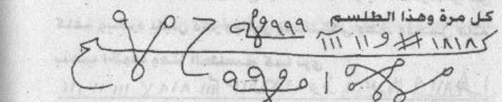
[Crop halaman 84 — crop presisi kiriman pengguna; nama berkas sama dengan halaman tujuan; bukan ekstraksi FINAL KHATAM dan bukan gambar ulang]
2. Penentuan Jam
«tidak ada hitungan di halaman ini»
Catatan penyunting
«طَفَيْتُكُمْ» kemungkinan «أَطْفَأْتُكُمْ»; «بِأَسْمِ اللَّهِ» mestinya «بِاسْمِ اللَّهِ»; keduanya dibiarkan dan dicatat.
Harakat dan tanda baca Arab bersifat editorial.
Rajah, wafaq, dan baris huruf pada halaman ini TIDAK digambar ulang; bentuk aslinya wajib diambil dari pindaian halaman yang bersangkutan.
(Baabu mahabbatin yuktabu wa yuhmalu: tuktabuth thilsimul aatii wal aayaatu haulahu fii saa'atin sa'iidatin wa bikhu buurin thayyibin watluu 'alaihil aayaatil aatiyata 72 marratan ma'at tawakkuli fii kulli marratin wa haadzath thilsimu [gambar: bentuk, garis, dan angka — lihat pindaian halaman 84] yuhibbuunahum kakahabbil laahil ladzii lau anfaqta maa fil ardhi jamii'an.)
rajah halaman ini memuat garis dan angka yang tidak dapat saya pastikan; hanya dicatat. «بِخُبُورٍ» mestinya «بِبُخُورٍ»; dibiarkan. Kutipan: QS al-Baqarah 2:165 dan at-Taubah 9:60 (terpotong).
5. Khususiyah — Waktu : Media : Bukhur
Waktu: tidak disebutkan dalam sumber unit ini : Media: Praktik dari sumber (halaman 84): Fasal Ketujuh Belas — قضاء الحاجة: menulis dan menggantungkan dengan basmalah serta dialog «دخلت عليكم دخول الأسد… أنتم النار وأنا الماء أطفيئكم»; lalu باب محبة يكتب ويحمل — menulis طلسم dengan ayat «يحبونهم كحب الله» 72 kali dan rajah bergambar; ditutup potongan QS at-Taubah 9:60. : Bukhur: tidak disebutkan dalam sumber unit ini
Ath thilsimu: [gambar dan angka pada pindaian halaman 85]. Yaa ayyuhal ladziina aamanuu laa takuunuu kalladziina aamanuu kalladziina aw maa qaataluu wa kaana 'indallaahi wajiihan wa rafa'naahu makaanan 'aliyyan. Tawakkalau yaa khuddaama haadzihil aayaati wath thilsimi wa ajlibul qabuula wal wajaahata biqabuuli kadzaa wa kadzaa waj'aluu lahul qabuula war rif'ata hattaa yatamma nafaadzul amri bihaqqi haadzihil aayaatil 'izhaami wath thilsimil wahal wahal 'ajala 'ajala as-saa'ata as-saa'ata.
3. Terjemahan
«Cinta si Fulan di hati si Fulan dengan hak ayat-ayat yang mulia ini dan طلسم-طلسم yang diberkahi — segeralah, segeralah, cepatlah, cepatlah, saat ini, saat ini.» — Bab untuk peminangan: tulislah طلسم berikut pada selembar kertas bersama «توكيل» dengan nama pemohon dan yang diminta beserta nama-nama mereka; ayat-ayat di sekelilingnya; bakarlah dengan wangi-wangian, dan bacakan ayat-ayat itu kepada keduanya tujuh puluh dua kali. Kertas itu dibawa pemohon bersamanya lalu ia menuju (orang) yang ia minta, maka akan terjadi penerimaan yang besar dengan izin Allah—Mahatinggi. Dan طلسم ini sebagaimana engkau lihat «…» [bersambung ke segmen berikutnya]
طلسم: [gambar dan angka pada pindaian halaman 85]. «Wahai orang-orang yang beriman, janganlah kamu menjadi seperti orang-orang yang «…» [tidak disalin penuh pada sumber kerja]» «…» [tidak disalin penuh pada sumber kerja]dan dia adalah orang yang berkedudukan di sisi Allah, dan Kami angkat dia ke tempat yang tinggi.» Bertawakallah, hai para pelayan ayat-ayat dan طلسم ini; datangkanlah penerimaan dan kedudukan dengan diterimanya si Fulan dan Fulanah; jadikanlah baginya penerimaan dan pengangkatan sehingga sempurna terlaksananya perkara, dengan hak ayat-ayat yang agung ini dan طلسم — segeralah, segeralah, cepatlah, cepatlah, saat ini, saat ini.
4. Metode, Penentuan Jam, dan Catatan Penyunting
1. Metode
Praktik dari sumber (halaman 85): penutup bab محبة («محبة كذا في قلب كذا…») lalu باب للخطوبة — menulis طلسم pada kertas bersama nama pemohon dan yang diminta, membakar dengan bakhur wangi, membaca ayat 72 kali hingga terkabul; disertai rajah/baris angka bergambar dan kutipan QS al-Baqarah 2:132. Rajah tidak digambar ulang. Dinisbatkan pada penulis; tidak ada jaminan.
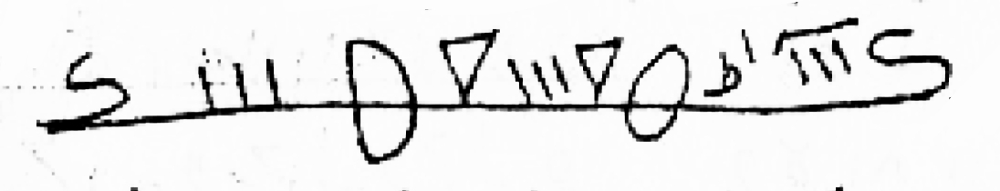
[Crop halaman 85 — crop presisi kiriman pengguna; nama berkas sama dengan halaman tujuan; bukan ekstraksi FINAL KHATAM dan bukan gambar ulang]
2. Penentuan Jam
«tidak ada hitungan di halaman ini»
Catatan penyunting
«الطَّلَاسِم» jamak «طلسم»; «بِاسْمِ الطَّالِبِ» dibaca tanpa harakat akhir pada cetakan. Rajah pada bagian bawah halaman ini adalah gambar (garis dan angka), tidak saya gambar ulang.
Harakat dan tanda baca Arab bersifat editorial.
Rajah, wafaq, dan baris angka/huruf pada halaman ini TIDAK digambar ulang; bentuk aslinya wajib diambil dari pindaian halaman yang bersangkutan.
(Ath thilsimu: [gambar dan angka pada pindaian halaman 85].
kutipan pada cetakan rusak dan terpotong («لَا تَكُونُوا كَالَّذِينَ آمَنُوا كَالَّذِينَ…»), dan saya tidak menambalnya; rujukannya tampak mengarah QS Ali Imran 3:144 dan Maryam 19:57, tetapi susunannya tidak utuh. «الْوَجَاهَة» = kedudukan/kemuliaan.
5. Khususiyah — Waktu : Media : Bukhur
Waktu: tidak disebutkan dalam sumber unit ini : Media: Praktik dari sumber (halaman 85): penutup bab محبة («محبة كذا في قلب كذا…») lalu باب للخطوبة — menulis طلسم pada kertas bersama nama pemohon dan yang diminta, membakar dengan bakhur wangi, membaca ayat 72 kali hingga terkabul; disertai rajah/baris angka bergambar dan kutipan QS al-Baqarah 2:132. : Bukhur: tidak disebutkan dalam sumber unit ini
M86 — Halaman 86, فائدة لوضع الحمل dan خاتم سليمان
Faa-idatun liwadh'il hamli kal amhil bashari - yuktabu wa yuhmalu 'alaa bathnihaa fa-innahaa talidu biduuni ta'abin birakati haadzal hijaabi wa haadzaa maa tuktabu: bismillaahir rahmaanir rahiim idzas samaa-u insyaqqat wa adzinat lirabbihaa wa huqqat wa idzal ardhu muddat wa alqat maa fiihaa wa takhallat wa alqatil haamilu maa fii bathnihaa minal janiini saaliman bi-idznillaahi ta'aalaa wa tanzilu kamaa wadha'at maryamu 'iisaa 'alaihis salaamu annahu min sulaimaana wa annahu bismillaahir rahmaanir rahiim.
[Baris angka dan rumus — lihat pindaian halaman 86.] Anzil ayyuhal mauluudu min bathnii amala salaaman bi-idznillaahi ta'aalaa wa bi-alfi laa haula wa laa quwwata illaa billaahil 'aliyyil 'azhiimi wa shallal laahu 'alaa sayyidinaa muhammadin wa 'alaa aalihi wa shahbihi wa sallama. Khaatamu sulaimaana: [gambar dan ukiran — lihat pindaian halaman 86].
3. Terjemahan
Faedah agar persalinan terjadi sekejap mata: ditulis dan digantungkan pada perutnya, maka ia akan melahirkan tanpa kesulitan dengan berkah hijab ini; inilah yang ditulis: Dengan nama Allah Yang Maha Pengasih dan Maha Penyayang. «Apabila langit terbelah, dan patuh kepada Tuhannya, dan sudah semestinya (demikian); dan apabila bumi diratakan, dan memuntahkan apa yang ada di dalamnya, dan menjadi kosong» — dan «hendaklah perempuan hamil itu mengeluarkan apa yang ada di perutnya berupa janin dengan selamat, dengan izin Allah—Mahatinggi, dan turun (lahir) sebagaimana Maryam melahirkan Isa—semoga salam atasnya—bahwa itu dari Sulaiman, dan bahwa itu dengan nama Allah Yang Maha Pengasih dan Maha Penyayang.»
[Di bagian atas halaman tercetak empat baris angka dan rumus — tidak saya gambar ulang.] «Turunlah, hai bayi, dari perutku dengan selamat, dengan izin Allah—Mahatinggi, dan dengan seribu (kali) tiada daya dan kekuatan kecuali dengan (pertolongan) Allah Yang Mahatinggi lagi Mahaagung»; semoga Allah melimpahkan selawat dan salam kepada tuan kami Muhammad, keluarganya, dan para sahabatnya. خاتم سليمان: [lambang dan ukiran pada pindaian halaman 86 — tidak saya gambar ulang].
4. Metode, Penentuan Jam, dan Catatan Penyunting
1. Metode
Praktik dari sumber (halaman 86): فائدة لوضع الحمل كلمح البصر — menulis dan menggantungkan pada perut agar melahirkan tanpa susah; dengan kutipan QS al-Insyiqaq 84:1–4 dan pernyataan bahwa Maryam melahirkan Isa; lalu baris angka besar dan lambang خاتم سليمان bergambar serta doa penutup. Rajah tidak digambar ulang. Dinisbatkan pada penulis; bukan nasihat medis — persalinan harus ditangani tenaga kesehatan.
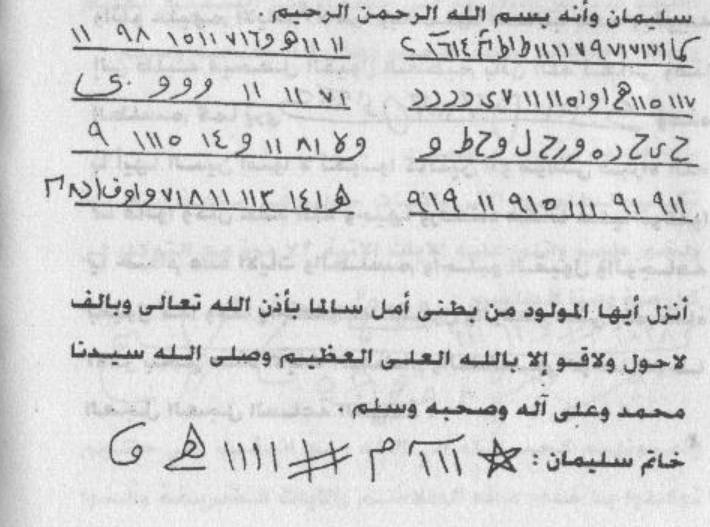
[Crop halaman 86 — crop presisi kiriman pengguna; nama berkas sama dengan halaman tujuan; bukan ekstraksi FINAL KHATAM dan bukan gambar ulang]
2. Penentuan Jam
«tidak ada hitungan di halaman ini»
Catatan penyunting
kutipan QS al-Insyiqaq 84:1–4 disusun ulang dan dicampur kalimat penulis («وألقت الحامل…») — saya pisahkan dan tidak menyatukannya sebagai ayat. «أَنَّهُ مِنْ سُلَيْمَانَ» tidak jelas maknanya; dibiarkan.
Harakat dan tanda baca Arab bersifat editorial.
Rajah, wafaq, dan baris angka/huruf pada halaman ini TIDAK digambar ulang; bentuk aslinya wajib diambil dari pindaian halaman yang bersangkutan.
([Baris angka dan rumus — lihat pindaian halaman 86.] Anzil ayyuhal mauluudu min bathnii amala salaaman bi-idznillaahi ta'aalaa wa bi-alfi laa haula wa laa quwwata illaa billaahil 'aliyyil 'azhiimi wa shallal laahu 'alaa sayyidinaa muhammadin wa 'alaa aalihi wa shahbihi wa sallama.
«أَمَلَ سَلَامًا» tidak dapat dipastikan (mungkin «بِأَمَلِ سَلَام/سَلَامًا»); baris angka pada halaman ini juga tidak dapat saya pastikan susunannya. «بِأَلْفِ لَاحَوْلَ» = seribu kali hauqalah.
5. Khususiyah — Waktu : Media : Bukhur
Waktu: tidak disebutkan dalam sumber unit ini : Media: Praktik dari sumber (halaman 86): فائدة لوضع الحمل كلمح البصر — menulis dan menggantungkan pada perut agar melahirkan tanpa susah; dengan kutipan QS al-Insyiqaq 84:1–4 dan pernyataan bahwa Maryam melahirkan Isa; lalu baris angka besar dan lambang خاتم سليمان bergambar serta doa penutup. : Bukhur: tidak disebutkan dalam sumber unit ini
Al-fashlus saabi'a 'asyara: al-qariinu wal jinnu. 'Anibni mas'uudin qaala: qaala rasuulullaahi shallallaahu 'alaihi wa sallama: (maa minkum ahadun illaa wa qad wukkila bihi qariinuhu minal jinni wa qariinuhu minal malaa-ikati) qaaluu: wa anta yaa rasuulallaahi? qaala: (wa iyyaaya, wa laakinnallaaha ta'aalaa a'aananii 'alaihi falaa ya'murunii illaa bihaqqin) wa fii riwaayatin ukhraa: (maa min ahadin illaa wa qad wukkila bihi qariinuhu minal jinni) qaaluu: wa anta yaa rasuulallaahi? qaala: (wa ana, illaa annallaaha ta'aalaa a'aananii 'alaihi fa-aslama falaisa ya'murunii illaa bikhairin).
Wa qad warada fii islaamil qariinin nabawiyyi shariihan laa yahtamilut ta'wiila 'anibni 'umara qaala: qaala rasuulullaahi shallallaahu 'alaihi wa sallama: (fudhdhiltu 'alaa aadama bikhaslataini: kaana syaithaanii kaafiran fa-a'aananillaahu 'alaihi hattaa aslama, wa kaana azwaajii 'aunan lii). Wa kaana syaithaanu aadama kaafiran wa zaujatuhu 'aunan 'alaa khathii-atihi. Fa haadzaa shariihun fii aslaami qariinin nabiyyi shallallaahu 'alaihi wa sallama.
3. Terjemahan
Fasal ketujuh belas: qarin dan jin. Dari Ibnu Mas‘ud, ia berkata: Rasulullah ﷺ bersabda: «Tidak ada seorang pun di antara kalian kecuali telah ditugaskan kepadanya qarinnya dari jin dan qarinnya dari malaikat.» Mereka bertanya: «Dan engkau, ya Rasulullah?» Beliau menjawab: «Dan aku juga, tetapi Allah—Mahatinggi—menolongku atasnya, sehingga ia tidak memerintahku kecuali dengan kebenaran.» Dalam riwayat lain: «Tidak ada seorang pun kecuali telah ditugaskan kepadanya qarinnya dari jin.» Mereka bertanya: «Dan engkau, ya Rasulullah?» Beliau menjawab: «Dan aku juga, hanya saja Allah—Mahatinggi—menolongku atasnya lalu ia masuk Islam, sehingga ia tidak memerintahku kecuali dengan kebaikan.»
Dan telah datang (riwayat) tentang keislaman qarin Nabi secara jelas yang tidak mengandung takwil, dari Ibnu Umar, ia berkata: Rasulullah ﷺ bersabda: «Aku diberi keutamaan atas Adam dengan dua hal: setanku adalah kafir, lalu Allah menolongku atasnya sehingga ia masuk Islam; dan istri-istriku menjadi penolong bagiku.» Dan setan Adam adalah kafir, sedangkan istrinya menjadi penolong atas kesalahannya. Maka ini jelas tentang keislaman qarin Nabi ﷺ.
4. Metode, Penentuan Jam, dan Catatan Penyunting
1. Metode
Praktik: tidak ada praktik di halaman ini — isinya hadis dan pembahasan. Hadis Ibnu Mas‘ud («ما منكم أحد إلا وقد وكل به قرينه من الجن…») dan hadis Ibnu Umar («فضلت على آدم بخصلتين…») tentang keislaman qarin Nabi. Dinisbatkan kepada penulis kitab; sanad dan penilaian hadis belum saya verifikasi.
2. Penentuan Jam
«tidak ada hitungan di halaman ini»
Catatan penyunting
dua riwayat hadis ini saya kutip seperti tercetak dan belum saya verifikasi sanad maupun penilaiannya; perbedaan «فأَسْلَم» (masuk Islam) dan «فَأَسْلَمَ» dibaca sesuai cetakan. «وُكِّلَ بِهِ» = ditugaskan kepadanya.
Harakat dan tanda baca Arab bersifat editorial.
Rajah, wafaq, dan baris angka/huruf pada halaman ini TIDAK digambar ulang; bentuk aslinya wajib diambil dari pindaian halaman yang bersangkutan.
«أَسْلَامِ» pada cetakan memakai alif washal; saya tulis «إِسْلَام». Hadis ini juga belum diverifikasi sanadnya. «فُضِّلْتُ عَلَى آدَمَ بِخَصْلَتَيْنِ» = dua perkara.
5. Khususiyah — Waktu : Media : Bukhur
Waktu: tidak disebutkan dalam sumber unit ini : Media: tidak disebutkan dalam sumber unit ini : Bukhur: tidak disebutkan dalam sumber unit ini
M88 — Halaman 88, dalil lanjutan dan iklan penulis
Wa anna haadzaa khaashshun biqariinin nabiyyi shallallaahu 'alaihi wa sallama fayakuunu shallallaahu 'alaihi wa sallama mukhtashshan bi-aslaami qariinihi liqaulihi (fudhdhiltu 'alaa aadama bikhaslataini wa 'adda minhaa islaama qariinihi). Wa 'an jaabirin qaala: qaala lanas nabiyyu shallallaahu 'alaihi wa sallama: (laa tadkhuluu 'alal mughfilaati fa-innasy syaithaana yajrii min abni aadama majrad dami fii qiilin wa minka yaa rasuulallaahi? qaala: wa shana'ii wa laakinnallaaha ta'aalaa a'aananii fa-aslama).
Wa qaala abul azharil anshaariyyu anna rasuulallaahi shallallaahu 'alaihi wa sallama kaana idzaa akhadza madhja'ahu minal laili qaala: (bismillaahi wadha'tu janbii, Allaahumma innii a'uudzu min waahisi syaithaanii wa fatti rahaanii wa tsiqli miizaani wa aj'aluhu minan nada al-a'laa). [I'laanul mu-allifi:] idzaa aradtal istisyaarata fa-ttashil biraqmin: 2463126 - 2627380 litahdiidi mau'idin ma'al kaatibir ruuhaniyyi. Muhammad Saamiy Muhammad Muhammad.
3. Terjemahan
Dan bahwa hal ini khusus bagi qarin Nabi ﷺ, sehingga beliau ﷺ khusus dengan keislaman qarinnya, karena sabdanya: «Aku diberi keutamaan atas Adam dengan dua hal» dan beliau menghitung di antaranya keislaman qarinnya. Dan dari Jabir, ia berkata: Nabi ﷺ berkata kepada kami: «Janganlah kalian masuk (menemui) perempuan-perempuan yang lalai, karena setan mengalir dalam tubuh anak Adam seperti aliran darah.» (Ada yang bertanya:) «Dalam (dirimu) juga, ya Rasulullah?» Beliau menjawab: «Dan (dalam) diriku juga, tetapi Allah—Mahatinggi—menolongku lalu ia masuk Islam.»
Dan Abu al-Azhar al-Anshari berkata bahwa Rasulullah ﷺ, apabila hendak berbaring pada malam hari, beliau mengucapkan: «Dengan nama Allah aku meletakkan lambungku. Ya Allah, aku berlindung dari bisikan setanku, dari utang yang membebani, dan dari beratnya timbanganku, dan aku jadikan ia (milik) Yang Mahatinggi.»
[Iklan penulis:] Jika engkau ingin berkonsultasi, hubungilah nomor: ٢٤٦٣١٢٦ – ٢٦٢٧٣٨٠ untuk menentukan janji dengan penulis «ruhani» itu. Muhammad Saamiy Muhammad Muhammad.
4. Metode, Penentuan Jam, dan Catatan Penyunting
1. Metode
Praktik: tidak ada praktik. Halaman ini melanjutkan dalil: bahwa keislaman qarin Nabi khusus baginya; hadis Jabir («لا تدخلوا على المغفلات…»); hadis Abu al-Azhar al-Anshari tentang doa sebelum tidur; lalu halaman ini ditutup iklan/kontak penerbit («إذا أردت الاستشارة فأتصل برقم…») atas nama محمد سامي محمد محمد — bagian ini bukan isi kitab dan harus dipisahkan bila diterbitkan.
2. Penentuan Jam
«tidak ada hitungan di halaman ini»
Catatan penyunting
«الْمُغْفِلَات» = perempuan-perempuan yang lalai (tidak menjaga diri); «فِي قِيلٍ» pada cetakan tidak jelas (mungkin «فقيل»). «وَصَنَعِي» kemungkinan «وَصَنِيعِي» atau «فِي نَفْسِي»; saya pertahankan dan menandainya. Hadis belum diverifikasi.
Harakat dan tanda baca Arab bersifat editorial.
Rajah, wafaq, dan baris angka/huruf pada halaman ini TIDAK digambar ulang; bentuk aslinya wajib diambil dari pindaian halaman yang bersangkutan.
«فَتِّ رَهَانِي» bisa «فَتِّرْ» atau «فَكَّ»; «وَثِقْلِ» dibaca «tsiqli»; keduanya dipertahankan. Penting: bagian kontak di akhir halaman bukan bagian dari kitab — itu iklan penerbit/penulis. Saya mencatatnya apa adanya dan tidak menyarankan menghubungi nomor apa pun.
5. Khususiyah — Waktu : Media : Bukhur
Waktu: tidak disebutkan dalam sumber unit ini : Media: tidak disebutkan dalam sumber unit ini : Bukhur: tidak disebutkan dalam sumber unit ini
Al-jinnu ya'kulu wa yasyrabu Laqad ikhtalafa katsiirun minan naasi: halil jinnu ta'kulu wa tasyrabu mitslal insi am laa? Wa aquulu wa billaahit taufiiqu: annal jinna ajnaasun. Fa-ammaa khaalishul jinni fahum riihun laa ya'kuluuna wa laa yasyrabuuna wa laa yatawaaladuuna, wa minhum ajnaasun ya'kuluuna wa yasyrabuuna wa yatawaaladuuna wa yatanaakahuuna minhumus sa'aalaa wal ghuulu wal qathru wal isytiyaa-u dzaalika.
Wa fish shahihaini: annal jinna sa-aluu rasuulallaahi shallallaahu 'alaihi wa sallama? faqaala: (kullu 'azhmin dzukira-smullaahi 'alaihi yaqa'u fii yadi ahadikum awfara maa yakuunu lahman, wa kullu yas'aru 'ilfa lidawaabbihim wa zaada-bnu taslaama fii tafsiirihi annal baqara ya'uudu khadhran lidawaabbihim). Wa qad nuhiya rasuulullaahi shallallaahu 'alaihi wa sallama an yastanjii bil 'azhmi war rautsi wa qaala innahu zaadu ikhwaanikum minal jinni. Wa haadzaa tsabata annal jinna ta'kulu wa tasyrabu kal insaani tamaaman wa 'an jaabiri bni 'abdillaahi qaala.
3. Terjemahan
Jin makan dan minum. Sungguh banyak manusia berselisih: apakah jin makan dan minum seperti manusia atau tidak? Aku berkata, dan kepada Allah-lah taufik: bahwa jin itu bermacam-macam jenis. Adapun jin yang murni, mereka adalah angin, tidak makan, tidak minum, dan tidak berketurunan. Di antara mereka ada jenis yang makan, minum, berketurunan, dan menikah; di antaranya السعالي, الغول, القطر, dan الاشتياء.
Dalam kedua kitab Shahih: bahwa jin bertanya kepada Rasulullah ﷺ, lalu beliau bersabda: «Setiap tulang yang disebutkan nama Allah padanya akan jatuh ke tangan salah seorang kalian dalam keadaan paling banyak dagingnya, dan setiap (kotoran) menjadi makanan hewan-hewan mereka.» Ibnu Taslam menambahkan dalam tafsirnya bahwa kotoran sapi kembali menjadi hijau (rumput) untuk hewan-hewan mereka. Dan Rasulullah ﷺ dilarang beristinja dengan tulang dan kotoran, dan beliau bersabda bahwa itu adalah bekal saudara-saudara kalian dari jin. Dan ini menetapkan bahwa jin makan dan minum seperti manusia sepenuhnya. Dan dari Jabir bin Abdullah, ia berkata:
4. Metode, Penentuan Jam, dan Catatan Penyunting
1. Metode
Praktik: tidak ada praktik baru. Halaman ini berisi pembahasan «الجن يأكل ويشرب»: sebagian jin murni angin (tidak makan–minum), sebagian berketurunan dan menikah; sebutan السعالي، الغول، القطر، الاشتياء; dalil hadis tentang berteduh dengan tulang dan kotoran hewan; dan larangan beristinja dengan tulang/kotoran karena itu makanan saudara jin. Dinisbatkan pada penulis; belum saya verifikasi.
2. Penentuan Jam
«tidak ada hitungan di halaman ini»
Catatan penyunting
«أَخْتَلِفَ» mestinya «اخْتَلَفَ»; saya pertahankan bentuk cetak dan menandainya. «الِاشْتِيَاء» tidak dapat dipastikan (mungkin «الأشياء» atau nama jenis). «الْقَطْر» bisa «القِطْر».
Harakat dan tanda baca Arab bersifat editorial.
Rajah, wafaq, dan baris angka/huruf pada halaman ini TIDAK digambar ulang; bentuk aslinya wajib diambil dari pindaian halaman yang bersangkutan.
kutipan ini tidak utuh dan susunannya rusak pada cetakan («وَكُلُّ يَسْعَرُ عِلْفَ لِدَوَابِّهِمْ»، «ابْنِ تَسْلَامَ») — saya biarkan dan menandai, tidak menambal. Rujukan «الصحيحين» saya catat sebagai klaim penulis, belum saya verifikasi.
5. Khususiyah — Waktu : Media : Bukhur
Waktu: tidak disebutkan dalam sumber unit ini : Media: Halaman ini berisi pembahasan «الجن يأكل ويشرب»: sebagian jin murni angin (tidak makan–minum), sebagian berketurunan dan menikah; sebutan السعالي، الغول، القطر، الاشتياء; dalil hadis tentang berteduh dengan tulang dan kotoran hewan; dan larangan beristinja dengan tulang/kotoran karena itu makanan saudara jin. : Bukhur: tidak disebutkan dalam sumber unit ini
M90 — Halaman 90, hadis Jabir, adab makan, dan القرين يتزوج
Bainamaa ana ma'a rasuulillaahi shallallaahu 'alaihi wa sallama yamsyii idz jaa-at hayyatun faqaamat ilaa janbihi fa-adnat faahaa min udzunihi wa ka-annahu tunaajiihi aw nahwa haadzaa faqaalan nabiyyu shallallaahu 'alaihi wa sallama: na'am fansharafat. Qaala jaabirun: fasa-altuhu fa-akhbaranii annahu rajulun minal jinni wa annahu qaala: mar-atuka laa yastanjii bir rautsi wa laa bir rimmti fa-innallaaha ja'ala lanaa dzaalika rizqan.
Wa rawaa muslimun wa maalikun wa abuu daawuuda wat tirmidziyyu min hadiitsi 'abdillaahi bni 'umara anna rasuulallaahi shallallaahu 'alaihi wa sallama qaala: (laa ya'kulanna ahadun minkum bisyimaalihi wa laa yasyraban bihaa fa-innasy syaithaana ya'kulu bisyimaalihi wa yasyrabu bisyimaalihi wa yu'thii bisyimaalihi wa ya'khudzu bisyimaalihi). Wa haadzal hadiitsu yadullu 'alaa annasy syayaathiina ya'kuluuna wa yasyrabuuna. Al-qariinu yatazawwaju qaalahullaahu ta'aalaa: (lam yathmithhunna insun qablahum wa laa jaannun) wa haadzaa yadullu 'alaa annahu ayil qariinu yatazawwaju wa yatanaasalu wa yaquulullaahu ta'aalaa (aftakhadztumuunii wa dzurriyyatahu auliyaa-a min duunii wa hum lakum 'aduwwun).
3. Terjemahan
Ketika aku bersama Rasulullah ﷺ berjalan, tiba-tiba datang seekor ular, lalu berdiri di sisinya dan mendekatkan mulutnya ke telinga beliau — seakan ia membisikkan sesuatu kepadanya atau semacamnya — lalu Nabi ﷺ bersabda: «Ya.» Lalu (ular itu) pergi. Jabir berkata: Aku bertanya kepada beliau, lalu beliau mengabarkan bahwa ia adalah seorang lelaki dari jin, dan bahwa ia berkata: «Istrimu jangan beristinja dengan kotoran dan tidak pula dengan tulang belulang, karena Allah telah menjadikan itu rezeki bagi kami.»
Muslim, Malik, Abu Dawud, dan Tirmidzi meriwayatkan dari hadis Abdullah bin Umar bahwa Rasulullah ﷺ bersabda: «Janganlah sekali-kali salah seorang dari kalian makan dengan tangan kirinya dan tidak pula minum dengannya, karena setan makan dengan tangan kirinya, minum dengan tangan kirinya, memberi dengan tangan kirinya, dan mengambil dengan tangan kirinya.» Hadis ini menunjukkan bahwa setan-setan makan dan minum.
Qarin menikah. Allah—Mahatinggi—berfirman: «Belum pernah disentuh oleh manusia sebelum mereka, dan tidak pula oleh jin.» Ini menunjukkan bahwa qarin menikah dan berketurunan. Dan Allah—Mahatinggi—berfirman: «Apakah patut kalian mengambil dia dan keturunannya sebagai pemimpin selain-Ku, padahal mereka adalah musuh bagi kalian?»
4. Metode, Penentuan Jam, dan Catatan Penyunting
1. Metode
Praktik: tidak ada praktik. Halaman ini memuat hadis Jabir tentang jin yang menampakkan diri kepada Nabi, riwayat Muslim/Malik/Abu Dawud/Tirmidzi tentang makan dengan tangan kanan (karena setan makan dengan tangan kiri), lalu bagian «القرين يتزوج» dengan QS ar-Rahman 55:56 dan al-Kahf 18:50. Dinisbatkan pada penulis; sanad belum diverifikasi.
2. Penentuan Jam
«tidak ada hitungan di halaman ini»
Catatan penyunting
«فَانْصَرَفَاتْ» pada cetakan tidak baku (mestinya «فَانْصَرَفَتْ»); «بِالرَّمَّةِ» kemungkinan «الرِّمَّة» (tulang lapuk). Hadis belum diverifikasi.
Harakat dan tanda baca Arab bersifat editorial.
Rajah, wafaq, dan baris angka/huruf pada halaman ini TIDAK digambar ulang; bentuk aslinya wajib diambil dari pindaian halaman yang bersangkutan.
«يَطْمِثْهُنَّ» pada cetakan; «افَتَخَذُونِي» seharusnya «أَفَتَتَّخِذُونَهُ» (QS al-Kahf 18:50) — saya pertahankan bentuk cetak dan menandai perbedaannya, tidak mengubah. Kutipan pertama QS ar-Rahman 55:56. Sanad hadis belum diverifikasi.
5. Khususiyah — Waktu : Media : Bukhur
Waktu: tidak disebutkan dalam sumber unit ini : Media: tidak disebutkan dalam sumber unit ini : Bukhur: tidak disebutkan dalam sumber unit ini
Wa haadzaa daliilun minal qur-aanil kariimi yadullu 'alaa annahum yatazawwajuuna waz zariihu humul waladu wal ahlu wa rafaqatuhum laa tamna'u man kaana maa yaliduhu lathiifan (fasubhaanal ladzii khalaqal azwaaja kullahaa mimmaa tunbitul ardhu wa min anfusihim wa mimmaa laa ya'lamuuna).
3. Terjemahan
Dan ini adalah dalil dari Al-Qur’an yang mulia yang menunjukkan bahwa mereka menikah; dan keturunan mereka adalah anak dan keluarga. Dan (kata) «رفقتهم» tidak menghalangi siapa yang dilahirkannya (menjadi) lembut. «Maka Mahasuci (Allah) yang menciptakan segala pasangan, dari apa yang ditumbuhkan bumi, dari diri mereka sendiri, dan dari apa yang tidak mereka ketahui.»
4. Metode, Penentuan Jam, dan Catatan Penyunting
1. Metode
Praktik: tidak ada praktik. Halaman ini melengkapi dalil bahwa jin berketurunan dan menikah: kutipan QS asy-Syu‘ara 26:7 («ومن كل شيء خلقنا زوجين») dan QS Yasin 36:82. Dinisbatkan pada penulis; rujukan ayat saya catat sebagai bantuan, bukan koreksi.
2. Penentuan Jam
«tidak ada hitungan di halaman ini»
Catatan penyunting
kalimat ini rusak susunannya pada cetakan («وَالزَّرِيهِ هُمُ الْوَلَدُ وَالْأَهْلِ وَرَفَقَتُهُمْ لَا تَمْنَعُ…»); saya pertahankan dan tidak menambal karena tidak yakin pada maksud aslinya. Kutipan ayat adalah QS Yasin 36:36 (bukan 26:7) — saya catat koreksi rujukan, teks tidak diubah.
Harakat dan tanda baca Arab bersifat editorial.
Rajah, wafaq, dan baris angka/huruf pada halaman ini TIDAK digambar ulang; bentuk aslinya wajib diambil dari pindaian halaman yang bersangkutan.
Al-fashluts tsaamina 'asyara: al-qariinu mukallafun. A'lam annal qariina huwal minal jinni wa a'lamu annal jinna qabaa-ilu mitslul insi wa idzaa aradtat tafshiila 'ud ilaa kitaabinal ajzaa-its tsalaatsati ('ilmul asraari wad dukhuuli fii 'aalamil jaanni) wad daliilu 'alaa annahum mukallafuuna maa fil qur-aani min dzammisy syayaathiini wa la'nihim wat taharruzi min ghawaa-ilihim wa syarrihim wa dzikri maa a'addallaahu lahum minal 'adzaabi.
Wa haadzihil khishaalu laa yaf'aluhaal laahu ta'aalaa illaa liman khaalafal amra wan nahya warkaabal kabaa-ira wa hatakal mahaarima ma'a tamkiinihi min an laa yaf'ala dzaalika wa qudratihi 'alaa fi'li khilaafihi. Wa qauluhu ta'aalaa (qul uuhiya ilayya annahustama'a nafarun minal jinni) ilaa qaulihi (fa-aamannaa bihi wa lan nusyrika birabbinaa ahada) ilaa ghairi dzaalika minal aayaatid daallati 'alaa takliifihim wa annahum ma-muuruuna manhiyyuuna.
3. Terjemahan
Fasal kedelapan belas: qarin itu mukallaf. Ketahuilah bahwa qarin adalah dari (golongan) jin, dan ketahuilah bahwa jin itu berbangsa-bangsa seperti manusia. Jika engkau menghendaki perinciannya, kembalilah kepada kitab kami yang tiga jilid («Ilmu Rahasia dan Memasuki Dunia Jin»). Dalil bahwa mereka dibebani (syariat) adalah apa yang ada dalam Al-Qur’an berupa celaan terhadap setan-setan, laknat atas mereka, perintah berlindung dari kejahatan dan keburukan mereka, serta penyebutan apa yang Allah siapkan bagi mereka berupa azab.
Dan sifat-sifat ini tidak Allah—Mahatinggi—lakukan kecuali kepada orang yang menyalahi perintah dan larangan, melakukan dosa-dosa besar, dan melanggar hal-hal yang diharamkan, padahal Dia telah memampukannya untuk tidak melakukannya dan ia mampu melakukan yang sebaliknya. Dan firman-Nya—Mahatinggi—: «Katakanlah, telah diwahyukan kepadaku bahwa sekumpulan jin telah mendengarkan (Al-Qur’an)» sampai firman-Nya «maka kami beriman kepadanya, dan kami tidak akan menyekutukan sesuatu pun dengan Tuhan kami» — dan selain itu dari ayat-ayat yang menunjukkan pembebanan (syariat) kepada mereka dan bahwa mereka diperintah dan dilarang.
4. Metode, Penentuan Jam, dan Catatan Penyunting
1. Metode
Praktik: tidak ada praktik. Halaman ini membuka Fasal Kedelapan Belas — القرين مكلف: qarin termasuk jin, jin berbangsa seperti manusia; dalil bahwa jin mukallaf (dibebani syariat) dengan QS al-Jinn 72:1–2 dan ayat-ayat lain; penulis menyebut rinciannya ada di «الكتاب الأجزاء الثلاثة». Dinisbatkan pada penulis; dalil belum saya verifikasi secara ilmiah.
2. Penentuan Jam
«tidak ada hitungan di halaman ini»
Catatan penyunting
«الْأَجْزَاءِ الثَّلَاثَةِ» menunjuk karya lain penulis — saya catat sebagai rujukan, bukan sumber yang tersedia. «غَوَائِلِهِمْ» = kejahatan/kerusakan mereka.
Harakat dan tanda baca Arab bersifat editorial.
Rajah, wafaq, dan baris angka/huruf pada halaman ini TIDAK digambar ulang; bentuk aslinya wajib diambil dari pindaian halaman yang bersangkutan.
«الْخِصَال» merujuk hukuman/azab yang disebut sebelumnya. Kutipan QS al-Jinn 72:1–2.
5. Khususiyah — Waktu : Media : Bukhur
Waktu: tidak disebutkan dalam sumber unit ini : Media: tidak disebutkan dalam sumber unit ini : Bukhur: tidak disebutkan dalam sumber unit ini
Anbiyaa-ul jinni - yaquulu ba'dhun naasi duuna 'ilmin annal jinna laisuu lahum diinun wa annahum kafaratun wa yaquulu ba'dhun naasi aidhan annahu laa yuujadu fii ashlan wa yaquulul 'ahduhum ana 'aa waz asywafal jinna dah syaklahu ayyahu wa ana af'al bihi wa af'al kadzaa wa haakadzaa yastamirrul kalaamu bainal ladziina ya'lamuuna wa lau ra-aahu ahaduhum qariinuhu lafazi'a wa haraba minhu ilaa aqshal ardhi.
Wa lita'lam ayyuhath thaah libu wal waaqifu 'alaa haadzal baabi annal jinna idzaa dakhala jasadan lam yakhruj abadan illaa 'alaa yadi rajulin shaalihin aw syaikhin zaahidin aw 'aalimin naashihin. Wa a'lam ayyuhath thaah libu fii haadzal 'ilmi annal jinna jaa-ahum rusulan qabla an yub'atsa rasuulullaahi shallallaahu 'alaihi wa sallama lam tasma' ilaa qaulihi ta'aalaa (yaa ma'syaral jinni wal insi alam ya'tikum rusulun minkum yaqushshuuna 'alaikum) suuratu ana'aami 130. Ya'tii ya'nii bidzaalika anna rusulan minal insi wa rusulan minal jinni.
3. Terjemahan
Nabi-nabi jin. Sebagian orang berkata tanpa ilmu bahwa jin tidak memiliki agama dan bahwa mereka kafir; sebagian orang juga berkata bahwa ia tidak ada sama sekali. Dan sebagian dari mereka berkata (dalam bahasa Melayu pada cetakan): «Aku mau melihat jin itu bagaimana bentuknya, dan aku akan berbuat ini dan itu kepadanya», dan demikianlah pembicaraan berlangsung di antara orang-orang yang (mengaku) mengetahui. Padahal seandainya salah seorang dari mereka melihat qarinnya, niscaya ia akan terkejut dan lari darinya ke ujung bumi.
Dan ketahuilah, wahai penuntut dan orang yang berhenti pada bab ini, bahwa jin apabila masuk ke tubuh seseorang, ia tidak akan keluar selamanya kecuali dengan tangan seorang lelaki saleh, atau syekh yang zahid, atau orang berilmu yang menasihati. Dan ketahuilah, wahai penuntut ilmu ini, bahwa jin telah datang kepada mereka para rasul sebelum Rasulullah ﷺ diutus — (sebagaimana) sampai firman-Nya—Mahatinggi—: «Wahai sekalian jin dan manusia, bukankah telah datang kepada kalian para rasul dari kalangan kalian sendiri yang menceritakan kepada kalian «…» [tidak disalin penuh pada sumber kerja]» (surah al-An‘am: 130). Yang dimaksud dengan itu bahwa ada rasul dari manusia dan rasul dari jin.
4. Metode, Penentuan Jam, dan Catatan Penyunting
1. Metode
Praktik: tidak ada praktik. Halaman ini membahas «أنبياء الجن»: anggapan sebagian orang bahwa jin tidak beragama atau tidak ada sama sekali; lalu penegasan bahwa jin tidak masuk ke tubuh manusia kecuali dengan izin Allah; dan dalil bahwa rasul dari manusia diutus kepada jin juga, dengan QS al-An‘am 6:130. Banyak kalimat pada halaman ini bercampur bahasa Melayu pada cetakan. Dinisbatkan pada penulis.
2. Penentuan Jam
«tidak ada hitungan di halaman ini»
Catatan penyunting
bagian «أَنَا عَاوَزْ أَشْوَفُ الْجِنَّ دَهْ شَكْلَهُ» adalah bahasa Melayu yang ditulis dengan huruf Arab, bukan Arab baku: «aku mau lihat jin itu rupanya». Saya terjemahkan maknanya dan menyatakan bahwa itu bukan Arab — bukan mengoreksinya menjadi Arab. I‘rab tidak berlaku pada bagian itu.
Harakat dan tanda baca Arab bersifat editorial.
Rajah, wafaq, dan baris angka/huruf pada halaman ini TIDAK digambar ulang; bentuk aslinya wajib diambil dari pindaian halaman yang bersangkutan.
Wa a'lam ayyuhath thaah libu fii haadzal 'ilmi annal jinna jaa-ahum rusulan qabla an yub'atsa rasuulullaahi shallallaahu 'alaihi wa sallama lam tasma' ilaa qaulihi ta'aalaa (yaa ma'syaral jinni wal insi alam ya'tikum rusulun minkum yaqushshuuna 'alaikum) suuratu ana'aami 130.
Ya'tii ya'nii bidzaalika anna rusulan minal insi wa rusulan minal jinni.)
«جَاءَهُمْ رُسُلًا» susunannya tidak baku dan dibiarkan; «لَمْ تَسْمَعْ» tampak sebagai sisa kalimat yang terpotong pada cetakan. Rujukan «الأنعام ١٣٠» sesuai.
5. Khususiyah — Waktu : Media : Bukhur
Waktu: tidak disebutkan dalam sumber unit ini : Media: tidak disebutkan dalam sumber unit ini : Bukhur: tidak disebutkan dalam sumber unit ini
M94 — Halaman 94, dalil pengutusan kepada dua makhluk
Wal aqaawiilu fii haadzaa katsiiratun 'anish shahaabati wabni 'abbaasin wa ghairihim wallaahu ta'aalaa a'lamu. Wa qaala abul 'abbaasi bnu qayyimata: arsalal laahu muhammadan shallallaahu 'alaihi wa sallama ilaa jamii'its tsaqalainil insi wal jinni wa awjaba 'alaihimul iimaana bihi wa bimaa jaa-a bihi wa thaa'atahu wa an yahilluu maa hallalallaahu wa rasuuluhu shallallaahu 'alaihi wa sallama wa yuharrimuuna maa harramallaahu wa rasuuluhu shallallaahu 'alaihi wa sallama wa an yuujibuu maa awjaballaahu wa rasuuluhu shallallaahu 'alaihi wa sallama wa yuhibbuu maa ahabballaahu wa rasuuluhu shallallaahu 'alaihi wa sallama wa yakrahuu maa karihallaahu wa rasuuluhu shallallaahu 'alaihi wa sallama wa anna kulla man qaamat 'alaihil hujjatu birisaalati muhammadin shallallaahu 'alaihi wa sallama minal insi wal jinni falim yu'min bihi astahaqqa 'iqaaballaahi ta'aalaa kamaa yastahiqqu amtsaalulhu minal kaafiriina alladziina bu'itsa ilaihimur rusulu wa haadzaa ashlun muttafiqun 'alaihi bainash shahaabati wat taabi'iina wa a-immatil muslimiina wa saa-irith thawaa-ifi Muslimiin ahlis sunnati wa ghairihim.
Pendapat-pendapat tentang ini banyak dari para sahabat, Ibnu Abbas, dan selain mereka; dan Allah—Mahatinggi—lebih mengetahui. Ibnu Qayyim (Abu al-Abbas) berkata: Allah mengutus Muhammad ﷺ kepada seluruh dua makhluk berat, yaitu manusia dan jin; Dia mewajibkan atas mereka iman kepadanya dan kepada apa yang ia bawa, serta ketaatan kepadanya; (mewajibkan) mereka menghalalkan apa yang dihalalkan Allah dan Rasul-Nya ﷺ, mengharamkan apa yang diharamkan Allah dan Rasul-Nya ﷺ, menetapkan apa yang ditetapkan Allah dan Rasul-Nya ﷺ, mencintai apa yang dicintai Allah dan Rasul-Nya ﷺ, dan membenci apa yang dibenci Allah dan Rasul-Nya ﷺ. Dan bahwa setiap orang yang telah tegak hujah atasnya dengan risalah Muhammad ﷺ dari manusia dan jin, lalu ia tidak beriman kepadanya, ia berhak mendapat siksa Allah—Mahatinggi—sebagaimana berhaknya orang-orang kafir sepertinya yang kepada mereka para rasul diutus. Dan ini adalah pokok yang disepakati di antara para sahabat, tabiin, para imam kaum muslimin, dan seluruh kelompok muslimin, baik ahlus sunnah maupun lainnya.
Allah—Mahatinggi—berfirman dalam Al-Qur’an bahwa jin mendengarkan Al-Qur’an dan bahwa mereka beriman kepadanya, sebagaimana firman Allah—Mahatinggi—: «Dan (ingatlah) ketika Kami hadapkan kepadamu sekelompok jin yang mendengarkan Al-Qur’an; maka ketika mereka menghadirinya, mereka berkata, “Diamlah (dan dengarkanlah)”; maka ketika (bacaan) itu selesai, mereka kembali kepada kaumnya sebagai pemberi peringatan.»
4. Metode, Penentuan Jam, dan Catatan Penyunting
1. Metode
Praktik: tidak ada praktik. Halaman ini melanjutkan dalil «أنبياء الجن»: bahwa Rasulullah ﷺ diutus kepada seluruh jin dan manusia (QS al-An‘am 6:130, al-Jinn 72:1), dan bahwa mereka dibebani iman, halal–haram, serta menerima pahala dan azab. Dinisbatkan pada penulis; belum saya verifikasi sebagai kajian akademik.
2. Penentuan Jam
«tidak ada hitungan di halaman ini»
Catatan penyunting
«ابْنُ قَيِّمَةَ» tertulis demikian pada cetakan (biasanya «ابن قيم الجوزية»); «فَلِمَ يُؤْمِنُ» bisa «فَلَمْ يُؤْمِنْ» dan maknanya berbeda — saya pertahankan dan menandai. «أَسْتَحَقَّ» mestinya «اسْتَحَقَّ». Kutipan ini dinisbatkan kepada Ibnu Qayyim dan belum saya verifikasi ke sumber aslinya.
Harakat dan tanda baca Arab bersifat editorial.
Rajah, wafaq, dan baris angka/huruf pada halaman ini TIDAK digambar ulang; bentuk aslinya wajib diambil dari pindaian halaman yang bersangkutan.
ayat ini QS al-Ahqaf 46:29; penutup ayat «مُنْذِرِينَ» sesuai. «أَمِنُوا» pada cetakan mestinya «آمَنُوا»; saya pertahankan bentuk cetak dan menandainya.
5. Khususiyah — Waktu : Media : Bukhur
Waktu: tidak disebutkan dalam sumber unit ini : Media: tidak disebutkan dalam sumber unit ini : Bukhur: tidak disebutkan dalam sumber unit ini
M95 — Halaman 95, jin mendengar Al-Qur’an dan asal isti‘adzah kepada jin
Minal jinni ilaa qaulihi ta'aalaa «ulaa-ika fii dhalaalin mubiin» tsumma amarahu an yukhbiran naasa bidzaalika faqaala «qul uuhiya ilayya annahustama'a nafarun minal jinni» fa-amarahu biqaulis suurati kaamilatan liya'lamal ansu bi-ahwaalil jinni wa annahu mab'uutsun ilal ansi wal jinni wa limaa fii dzaalika min hudal ansi wal jinni ilaa maa yajibu 'alaihim minal iimaani billaahi ta'aalaa wa rasuulihi shallallaahu 'alaihi wa sallama wal yaumil aakhiri wa maa yajibu min thaa'atillaahi wa rasuulihi shallallaahu 'alaihi wa sallama wa min tahriimisy syirki wa ghairihi kamaa qaala fis suurati wa annahu (kaana rijaalun minal ansi ya'uudzuuna birijaalin minal jinni fazaaduuhum rahaqan).
Fa-innahu kaanar rajulu minal ansi yanzilu bil waadii wal awdiyati makhaafal jinni fa-innahum yakuunuuna bil awdiyati aktsara maa yakuunuuna bi-a'aalil ardhi fakaana(l) ansu yaquulu: a'uudzu bi'azhiimi haadzal waadii min sufahaa-ihi. Ruwiya anna hajjaaja bna 'ilaathin as-sulamiyya waalida nashri bni hajjaajinil ladzii qiila fiihi: «am min sabiilin ilaa nashri bni hajjaaj» qad qadima makkata fii rakbin fa-ajannahumul lailu biwaadin mukhiifin muuhisyin faqaala lahur rakbu: qum fakhudz linafsika amnan wa li-ash haabika, faja'ala yathuufu bir rakbi wa yaquulu:
3. Terjemahan
«…» [lanjutan dari segmen sebelumnya] dari (golongan) jin sampai firman-Nya—Mahatinggi—«mereka itu dalam kesesatan yang nyata». Kemudian Dia memerintahkan beliau mengabarkan hal itu kepada manusia, lalu berfirman: «Katakanlah, telah diwahyukan kepadaku bahwa sekelompok jin telah mendengarkan» — maka Dia memerintahkan beliau menyebut surah itu seluruhnya agar manusia mengetahui keadaan jin dan bahwa beliau diutus kepada manusia dan jin, dan karena di dalamnya terdapat petunjuk bagi manusia dan jin kepada apa yang wajib atas mereka berupa iman kepada Allah—Mahatinggi—dan Rasul-Nya ﷺ serta hari akhir, dan apa yang wajib berupa ketaatan kepada Allah dan Rasul-Nya ﷺ, dan berupa pengharaman syirik dan lainnya, sebagaimana Dia berfirman dalam surah itu: «Dan bahwa ada beberapa lelaki dari manusia yang meminta perlindungan kepada beberapa lelaki dari jin, maka mereka (jin) menambah kesesatan mereka.»
Sebabnya, seorang lelaki dari manusia turun di lembah atau lembah-lembah karena takut kepada jin — dan jin lebih banyak berada di lembah-lembah daripada di dataran tinggi. Maka manusia berkata: «Aku berlindung kepada (penguasa) agung lembah ini dari orang-orang bodohnya.» Diriwayatkan bahwa Hajjaj bin ‘Ilat as-Sulami, ayah Nashr bin Hajjaj yang tentangnya dikatakan: «ataukah ada jalan menuju Nashr bin Hajjaj», pernah datang ke Makkah dalam suatu rombongan; lalu malam menutupi mereka di sebuah lembah yang menakutkan dan sunyi. Rombongan itu berkata kepadanya: «Bangunlah, ambillah keamanan untuk dirimu dan kawan-kawanmu.» Maka ia mulai berkeliling di antara rombongan seraya berkata:
4. Metode, Penentuan Jam, dan Catatan Penyunting
1. Metode
Praktik: tidak ada praktik. Halaman ini melanjutkan pembahasan dalil: bahwa Nabi ﷺ diperintahkan menyampaikan berita jin yang mendengar Al-Qur’an, bahwa beliau diutus kepada manusia dan jin, dan bahwa meminta perlindungan kepada jin (isti‘adzah) justru menambah kesesatan mereka — dengan QS al-Jinn 72:6 dan kisah Hajjaj bin ‘Ilat as-Sulami. Dinisbatkan pada penulis; saya catat bahwa susunan ini mengikuti gaya tafsir, bukan fatwa saya.
2. Penentuan Jam
«tidak ada hitungan di halaman ini»
Catatan penyunting
pada cetakan kata «الإنس» ditulis «الأنس» berulang kali; saya menulis «الأَنْس» mengikuti cetakan dan mencatat bahwa yang dimaksud «الإِنس». Kata pada cetakan «ولا في ذلك» saya baca «وَلِمَا فِي ذَلِكَ» karena maknanya menuntut demikian — saya sebutkan perubahannya, bukan menyembunyikannya.
Harakat dan tanda baca Arab bersifat editorial.
Rajah, wafaq, dan jadwal angka/huruf pada halaman ini TIDAK digambar ulang; bentuk aslinya wajib diambil dari pindaian halaman yang bersangkutan.
«مَخَافَ» = karena takut (bentuk asal «مَخَافَة»); «بِأَعَالِي الْأَرْضِ» = dataran tinggi. Baris yang dikutip «أم من سبيل إلى نصر بن حجاج» adalah potongan syair, bukan ayat — saya tandai agar tidak dikira ayat.
5. Khususiyah — Waktu : Media : Bukhur
Waktu: tidak disebutkan dalam sumber unit ini : Media: tidak disebutkan dalam sumber unit ini : Bukhur: tidak disebutkan dalam sumber unit ini
M96 — Halaman 96, syair Hajjaj bin ‘Ilat dan sebab kesombongan jin
A'uudzu nafsii wa u'iidzu shahbii «…» [bersambung ke segmen berikutnya] min kulli jinniyyin bihaadzal qubbi «…» [bersambung ke segmen berikutnya] hattaa auuba saaliman wa rakbi. Fasami'a qaari-an yaqra-u (yaa ma'syaral jinni wal insi inistatha'tum an tanfudzuu min aqthaaris samaawaati wal ardhi fanfudzuu) falammaa qadima makkata khabbara kuffaara quraisyin bimaa sami'a faqaaluu: shaba'ta yaa abaa kilaabin! inna haadzaa yaz'umu anna muhammadan shallallaahu 'alaihi wa sallama unzila 'alaihi «qul» wallaahi laqad sami'tuhu wa sami'ahu haa-ulaa-i ma'iya, tsumma aslama wa hasuna islaamuhu wa haajara ilal madiinati wa banaa bihaa masjidan yu'rafu bihi.
Wa lammaa ra-atil jinnu annal ansa tasta'iidzu bihim zaada thughyaanuhum wa 'utuwwuhum wa bihaadzaa yujiibuunal 'azma war raaqii bi-asmaa-ihim wa asmaa-i muluukihim fa-innahu yuqsimu 'alaihim bi-asmaa-i man yu'azh zhimuunahu fayahshulu lahum dzaalika minar ri-aasati wasy syarafi 'alal ansi maa yahmiluhum 'alaa an yu'thuuhum ba'dha su'lihim wa hum ya'lamuuna annal ansa asyrafu minhum wa a'zhamu qadran fa-idzaa khadha'atil ansu lahum wasta'aadzat bihim kaana manzilata akaabirin naasi idzaa khadha'a lishighaarihim liyaqdhiya lahu haajatahu wa laakin man yastathii'u an yahkuma 'alaa muluukil jaanni falaa budda an yakuuna 'indahu da'watu kulli malikin fiihim aw 'alaa qadril istithaa'ati.
3. Terjemahan
«Aku berlindung (untuk) diriku dan aku lindungi kawan-kawanku «…» [tidak disalin penuh pada sumber kerja] dari setiap jin di (lembah) ini «…» [tidak disalin penuh pada sumber kerja] sehingga aku kembali dengan selamat bersama rombonganku.» Lalu ia mendengar seorang pembaca membaca: «Wahai sekalian jin dan manusia, jika kamu sanggup menembus (melintasi) penjuru langit dan bumi, maka tembuslah.» Ketika ia tiba di Makkah, ia mengabarkan kepada orang-orang kafir Quraisy apa yang didengarnya, lalu mereka berkata: «Engkau telah berpindah agama, hai Abu Kilab! Orang ini mengaku bahwa kepada Muhammad ﷺ diturunkan “Katakanlah” — demi Allah, aku sungguh telah mendengarnya, dan orang-orang ini pun mendengarnya bersamaku.» Kemudian ia masuk Islam dan baik keislamannya, berhijrah ke Madinah, dan membangun masjid di sana yang dikenal dengan namanya.
Dan ketika jin melihat bahwa manusia meminta perlindungan kepada mereka, bertambahlah kesombongan dan keangkuhan mereka; dengan itulah mereka menyambut «عزم» dan permintaan tukang jampi dengan (menyebut) nama-nama mereka dan nama raja-raja mereka. Sebab ia bersumpah atas mereka dengan nama-nama siapa yang mereka agungkan, sehingga mereka memperoleh dengan itu kedudukan kepala dan kehormatan atas manusia, yang mendorong mereka memberi sebagian permintaan manusia — padahal mereka tahu bahwa manusia lebih mulia dan lebih tinggi kedudukannya. Maka apabila manusia tunduk kepada mereka dan meminta perlindungan, keadaannya seperti orang-orang besar manusia jika tunduk kepada yang kecil di antara mereka agar kebutuhannya dipenuhi. Akan tetapi siapa yang mampu menguasai raja-raja jin, ia harus memiliki doa (panggilan) setiap raja di antara mereka, atau sesuai kemampuannya.
4. Metode, Penentuan Jam, dan Catatan Penyunting
1. Metode
Praktik: tidak ada praktik. Halaman ini memuat lanjutan syair Hajjaj bin ‘Ilat yang terpotong di tepi atas, QS ar-Rahman 55:33, kisah keislamannya, lalu penjelasan mengapa jin bertambah congkak ketika manusia meminta perlindungan kepada mereka. Dinisbatkan pada penulis.
2. Penentuan Jam
«tidak ada hitungan di halaman ini»
Catatan penyunting
dua baris pertama syair terpotong di tepi atas pindaian — saya hanya mencatat bagian yang terbaca dan tidak menyusun ulang baitnya. «يَا أَبَا كِلَابٍ» nama panggilan pada cetakan tidak dapat saya pastikan. Rujukan «قُلْ» di sini tampak menunjuk QS al-Jinn 72:1.
Harakat dan tanda baca Arab bersifat editorial.
Rajah, wafaq, dan jadwal angka/huruf pada halaman ini TIDAK digambar ulang; bentuk aslinya wajib diambil dari pindaian halaman yang bersangkutan.
teks ini menjelaskan mekanisme praktik perjumpaan dengan jin, bukan menganjurkannya — saya catat apa adanya. «الْعَزْم» = bacaan pemaksaan dalam praktik perdukunan; «الرَّاقِي» = tukang jampi. Kata cetakan «كَانَ مَنْزِلَةَ» kurang baku (mestinya «كَانَ بِمَنْزِلَةِ»).
5. Khususiyah — Waktu : Media : Bukhur
Waktu: tidak disebutkan dalam sumber unit ini : Media: tidak disebutkan dalam sumber unit ini : Bukhur: tidak disebutkan dalam sumber unit ini
M97 — Halaman 97, Fasal Kesembilan Belas: penggunaan ratu jin جمجة
وَهَذِهِ الدَّعْوَى تَقُولُ: الْحَمْدُ لِلَّهِ الَّذِي خَلَقَ الْإِنْسَانَ مِنْ صَلْصَالٍ كَالْفَخَّارِ وَخَلَقَ «…» [tidak disalin penuh pada sumber kerja] (bersambung ke halaman 98)
2. Latin
Al-fashlut taasi'a 'asyara. - Baabu istikhdaamil malikati jamjata - wa hiya sarii'atul ijaabati «…» [tidak disalin penuh pada sumber kerja] wa huwa an yajlisa fii makaanin khaalin minan naasi fii yaumin laa riiha fiihi wa laa mathara wa laa sahaaba wa yaktubal khaatamal aatiya 'alaa kaffihi wa yubakhkhiru bish shandali ah mari wa ya'zimu 'alaihi hattaa ta'tiyaka hamaamatun baidhaa-u tanzilu 'alaika wa tuthiiru ilal khaatami wansharif ilal yaumits tsaani tsummarji' ilaa makaanika wa bakhkhir wa 'azzim hattaa ta'tiyaka amiiratun jamiilatun laa washfa lahaa. Wa taquulu laka: maa haajatuka 'indii? fataquulu lahaa: a'thiinil 'ahda bihaqqil 'ahdi wa thaa'atis sayyidi samsamaa-iila fa-innahaa tu'thiikal 'ahda. Fa-idzaa aradta haajatan aqarrad da'wata sirran aw jahran fii saa-iril a'maali min khairin aw syarrin wa wakkilhaa bihi fa-innahaa taf'aluhu sarii'an wa idzaa aradta thayyal ardhi fa'alathu.
Wa haadzihid da'waa taquulu: al-hamdu lillaahil ladzii khalaqal insaana min shalshaalin kal fakhkhaari wa khalaqa «…» [tidak disalin penuh pada sumber kerja] (bersambung ke halaman 98)
3. Terjemahan
Fasal kesembilan belas. — Bab penggunaan ratu (jin) Jamjah — dan ia cepat menjawab «…» [tidak disalin penuh pada sumber kerja] Yaitu seseorang duduk di tempat yang kosong dari manusia pada hari yang tidak ada angin, tidak ada hujan, dan tidak ada awan; menulis «خاتم» berikut di telapak tangannya; membakar (dengan) kayu cendana merah; lalu mengulang «عزيمة» atasnya sampai datang kepadamu seekor merpati putih yang turun kepadamu dan terbang menuju خاتم. Lalu pergilah sampai hari kedua, kemudian kembalilah ke tempatmu, bakarlah (wangi-wangian), dan ulangilah عزيمة sampai datang kepadamu seorang putri/amīrah yang cantik yang tak terlukiskan. Ia berkata kepadamu: «Apa keperluanmu padaku?» Maka katakan kepadanya: «Berikanlah kepadaku perjanjian (العهد) dengan hak perjanjian dan ketaatan Tuan Samsamā’īl» — maka ia akan memberimu perjanjian itu. Maka apabila engkau menghendaki sesuatu keperluan, bacakanlah «الدعوة» secara rahasia atau terang-terangan dalam seluruh urusan, baik atau buruk, dan serahkanlah kepadanya, karena ia akan melakukannya dengan cepat; dan jika engkau menghendaki melipat bumi (menempuh jarak jauh seketika), ia melakukannya.
Dan «الدعوى» ini engkau ucapkan: «Segala puji bagi Allah yang menciptakan manusia dari tanah kering seperti tembikar, dan menciptakan «…» [tidak disalin penuh pada sumber kerja]» (bersambung ke halaman 98). [CATATAN PENERJEMAH: Dicatat apa adanya, tidak dianjurkan, tidak disahkan sebagai amalan]
4. Metode, Penentuan Jam, dan Catatan Penyunting
1. Metode
Praktik dari sumber (halaman 97): Fasal XIX — باب استخدام الملكة جمجة. Duduk sendirian di tempat sepi pada hari tanpa angin, hujan, dan awan; menulis «الخاتم» di telapak tangan; membakar kayu cendana merah (الصندل الأحمر); mengulang «عزيمة» sampai datang burung merpati putih, lalu pada hari kedua datang sosok perempuan; meminta «العهد» dengan perantaraan nama سمسمائيل; sesudah itu disebut cukup membacakan «الدعوة» untuk segala urusan «baik atau buruk», termasuk «طي الأرض». Catatan editorial penting: halaman ini berisi petunjuk meminta bantuan jin (استخدام الجن) — memanggil ratu jin, menulis خاتم di telapak tangan, membakar الصندل الأحمر, dan mengucapkan عزيمة. Praktik semacam ini dalam pandangan ulama termasuk sihir/kesyirikan dan tidak saya anjurkan; teks dicatat karena itu isi kitab yang sedang diedit, bukan karena disahkan.
[Dinisbatkan pada penulis; tidak ada jaminan; dicatat tidak dianjurkan tidak disahkan]
2. Penentuan Jam
«tidak ada hitungan di halaman ini»
Catatan penyunting
nama pada cetakan terbaca «جَمْجَة» (pada halaman 98 dan 100 jelas «جمجة»); judul ini menulisnya dengan bentuk yang mudah terbaca «زيمة» — saya mengambil «جمجة» karena dikuatkan dua halaman lain. Peringatan: kalimat «مِنْ خَيْرٍ أَوْ شَرٍّ» berarti praktik ini ditawarkan untuk apa pun, termasuk keburukan — ini bertentangan dengan ajaran Islam dan dengan penjelasan penulis sendiri di halaman 96. Saya tidak menerjemahkan ini sebagai anjuran.
Harakat dan tanda baca Arab bersifat editorial.
Rajah, wafaq, dan jadwal angka/huruf pada halaman ini TIDAK digambar ulang; bentuk aslinya wajib diambil dari pindaian halaman yang bersangkutan.
kalimat ini adalah pembuka bacaan (دعوى) yang terpotong di akhir halaman dan bersambung pada baris pertama halaman 98 («الْجَانَّ مِنْ مَارِجٍ مِنْ نَارٍ»). Susunannya meniru QS ar-Rahman 55:14, tetapi bukan kutipan ayat yang utuh — saya nyatakan agar tidak dianggap ayat.
5. Khususiyah — Waktu : Media : Bukhur
Waktu: Duduk sendirian di tempat sepi pada hari tanpa angin, hujan, dan awan; menulis «الخاتم» di telapak tangan; membakar kayu cendana merah (الصندل الأحمر); mengulang «عزيمة» sampai datang burung merpati putih, lalu pada hari kedua datang sosok perempuan; meminta «العهد» dengan perantaraan nama سمسمائيل; sesudah itu disebut cukup membacakan «الدعوة» untuk segala urusan «baik atau buruk», termasuk «طي الأرض». : Media: Duduk sendirian di tempat sepi pada hari tanpa angin, hujan, dan awan; menulis «الخاتم» di telapak tangan; membakar kayu cendana merah (الصندل الأحمر); mengulang «عزيمة» sampai datang burung merpati putih, lalu pada hari kedua datang sosok perempuan; meminta «العهد» dengan perantaraan nama سمسمائيل; sesudah itu disebut cukup membacakan «الدعوة» untuk segala urusan «baik atau buruk», termasuk «طي الأرض». Catatan editorial penting: halaman ini berisi petunjuk meminta bantuan jin (استخدام الجن) — memanggil ratu jin, menulis خاتم di telapak tangan, membakar الصندل الأحمر, dan mengucapkan عزيمة. : Bukhur: tidak disebutkan dalam sumber unit ini
M98 — Halaman 98, lanjutan bacaan dan syarat penggunaan
Al-jaanna min maarijin min naarin 'azamtu 'alaikumaa yaa jamjatu yaa bnatal malikil ah mari ainamaa takuunii fii masyaariqil ardhi wa maghaaribihaa an takuunii musri'ataini anti wa abuuki thau'an aw karhan fa'tiyaa fattabi'aa thaa'i'aini ahyi ahy aa-un yaa jamjatu yaa bnatal malikil ah mari anti wa abuuki bihaqqil malikil ghaalibi 'alaikumus sayyidi samsamaa-iila 'alaihis salaamu - wa qul uuhiya ilaa akh baarihaa.
[Jadwal angka dan huruf dalam tiga kolom dan empat baris — rujuk gambar halaman 98; rajah tidak digambar ulang.] (Bab penggunaan Jamjah putri Raja Merah.) Dan ia cepat menjawab; dialah yang dipakai oleh ‘Ali bin al-Hajjaj, dan ia melakukan hal-hal ajaib dan aneh, mengeluarkan ‘ifrit dengan perantaranya, dan membinasakan setiap orang yang congkak, keras kepala, dan zalim dengan perantaranya, dan segala yang engkau kehendaki. Maka bertakwalah kepada Allah dalam rahasiamu; atasmu perjanjian Allah bahwa engkau tidak menggunakannya kecuali dalam (perkara) halal, dan jangan mengarahkannya (kecuali) dalam ketaatan kepada Allah—Mahatinggi. Maka apabila engkau hendak mengamalkannya, berpuasalah untuknya tujuh hari, mulai dari hari Ahad, ketika tidak ada angin, tidak ada awan, tidak ada hujan, dan bulan sedang bertambah; dan duduklah di «…» [bersambung ke segmen berikutnya]
3. Terjemahan
«…» [tidak disalin penuh pada sumber kerja]jin dari api yang tidak berasap; aku bersumpah atas kalian berdua, hai Jamjah, hai putri Raja Merah, di mana pun engkau berada di timur bumi dan baratnya, hendaklah kalian berdua bersegera — engkau dan ayahmu — suka atau tidak suka; maka datanglah kalian berdua dan ikutilah dengan patuh. Hidup, hidup! Hai Jamjah, hai putri Raja Merah, engkau dan ayahmu, dengan hak Raja Yang Menang atas kalian, Tuan Samsamā’īl — semoga salam atasnya — dan katakanlah, Dia mewahyukan kepada beritanya.»
[Empat baris angka dan huruf (rajah) — hanya dicatat, tidak digambar ulang.] (Bab penggunaan Jamjah putri Raja Merah.) Dan ia cepat menjawab; dialah yang dipakai oleh ‘Ali bin al-Hajjaj — ia melakukan hal-hal ajaib, mengeluarkan ‘ifrit, dan membinasakan setiap orang zalim yang congkak, serta segala yang engkau kehendaki. Maka bertakwalah kepada Allah dalam rahasiamu; atasmu perjanjian Allah bahwa engkau tidak memakainya kecuali dalam perkara halal, dan tidak mengarahkannya (untuk selain) ketaatan kepada Allah—Mahatinggi. Apabila engkau hendak mengamalkannya, berpuasalah tujuh hari mulai hari Ahad, pada saat tidak ada angin, awan, dan hujan, serta bulan sedang bertambah; lalu duduklah di «…» [bersambung ke segmen berikutnya][CATATAN PENERJEMAH: Dicatat apa adanya, tidak dianjurkan, tidak disahkan sebagai amalan]
4. Metode, Penentuan Jam, dan Catatan Penyunting
1. Metode
Praktik dari sumber (halaman 98): lanjutan bacaan pemanggilan yang menyebut «الملك الأحمر» dan «السيد سمسمائيل», lalu sebuah jadwal angka/huruf (rajah) yang tidak digambar ulang, lalu judul «باب استخدام جمجة بنت الملك الأحمر» dengan syarat: puasa tujuh hari mulai Ahad, hari tanpa angin/awan/hujan, bulan sedang bertambah, dan duduk di tempat sunyi. Catatan editorial penting: halaman ini berisi petunjuk meminta bantuan jin (استخدام الجن) — memanggil ratu jin, menulis خاتم di telapak tangan, membakar الصندل الأحمر, dan mengucapkan عزيمة. Praktik semacam ini dalam pandangan ulama termasuk sihir/kesyirikan dan tidak saya anjurkan; teks dicatat karena itu isi kitab yang sedang diedit, bukan karena disahkan.
[Dinisbatkan pada penulis; tidak ada jaminan; dicatat tidak dianjurkan tidak disahkan]
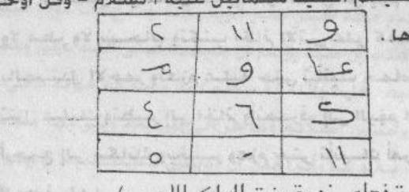
[Crop halaman 98 — crop presisi kiriman pengguna; nama berkas sama dengan halaman tujuan; bukan ekstraksi FINAL KHATAM dan bukan gambar ulang]
2. Penentuan Jam
«tidak ada hitungan di halaman ini»
Catatan penyunting
susunan bacaan ini tidak gramatikal dan sebagian rusak pada cetakan («أَحْيِي أَحْيَاءٌ»، «وَقُلْ أَوْحَى إِلَى أَخْبَارِهَا») — saya biarkan, tidak menambal. Frasa «عَلَيْهِ السَّلَامُ» dipakai untuk سمسمائيل, makhluk yang disebut sebagai «الروحانية» — ini salah tempat dan saya tandai; tidak saya hapus agar apa adanya tercatat. I‘rab tidak dapat diterapkan konsisten pada teks yang rusak.
Harakat dan tanda baca Arab bersifat editorial.
Rajah, wafaq, dan jadwal angka/huruf pada halaman ini TIDAK digambar ulang; bentuk aslinya wajib diambil dari pindaian halaman yang bersangkutan.
([Jadwal angka dan huruf dalam tiga kolom dan empat baris — rujuk gambar halaman 98; rajah tidak digambar ulang.] (Bab penggunaan Jamjah putri Raja Merah.) Dan ia cepat menjawab; dialah yang dipakai oleh ‘Ali bin al-Hajjaj, dan ia melakukan hal-hal ajaib dan aneh, mengeluarkan ‘ifrit dengan perantaranya, dan membinasakan setiap orang yang congkak, keras kepala, dan zalim dengan perantaranya, dan segala yang engkau kehendaki.
rajah pada halaman ini (jadwal angka/huruf) tidak saya gambar ulang — wajib diambil dari pindaian. Nama «عَلِيُّ بْنُ الْحَجَّاجِ» tidak dapat saya pastikan (bisa «عَلِيّ» sebagai nama atau «عَلَى» sebagai kata depan). Kalimat cetakan «وَلَا تَصْرِفْهَا فِي طَاعَةِ اللَّهِ» tampak salah dan semestinya «إِلَّا فِي طَاعَةِ اللَّهِ»; saya tidak mengubah teks cetak, hanya memindahkan maknanya ke terjemahan. Perhatikan pertentangan isi: syarat «halal» di sini berhadapan dengan «من خير أو شر» di halaman 97.
5. Khususiyah — Waktu : Media : Bukhur
Waktu: Praktik dari sumber (halaman 98): lanjutan bacaan pemanggilan yang menyebut «الملك الأحمر» dan «السيد سمسمائيل», lalu sebuah jadwal angka/huruf (rajah) yang tidak digambar ulang, lalu judul «باب استخدام جمجة بنت الملك الأحمر» dengan syarat: puasa tujuh hari mulai Ahad, hari tanpa angin/awan/hujan, bulan sedang bertambah, dan duduk di tempat sunyi. : Media: Catatan editorial penting: halaman ini berisi petunjuk meminta bantuan jin (استخدام الجن) — memanggil ratu jin, menulis خاتم di telapak tangan, membakar الصندل الأحمر, dan mengucapkan عزيمة. : Bukhur: tidak disebutkan dalam sumber unit ini
M99 — Halaman 99, tata cara lengkap dan janji hasil
Makaanin wahdaka waktubil khaatamal aatiya fii yadikas syimaali wa naharahu bish shandali ah mari faqath wa 'azama 'alaihi bil 'aziimati hattaa ta'tiyaka hamaamatun baidhaa-u tanzilu 'alaika fahlisil khaatama wansharif wa fil yaumits tsaani jalasa fil hallil ladzii kunta fiihi waktubil khaatama 'alaa kaffikas syimaali wa bakhkhir wa 'azzim bil 'aziimati ilaa an ta'tiyaka imra-atun dzaatu husnin wa jamaalin wa taquulu laka: maa haajatuka? fa-azjurhaa bid da'wati wa qul lahaa: qashdii muraafaqatuka wa takuunii lii khadiimatan wa mu'iinatan fiimaa athlubuhu minka fa-innahaa tasytarithu 'alaika syuruuthan wasmah liqaulihaa fa-innahaa taquulu: marhaban bika wa alifun bir rafiiqil muwaafiq wa qad yaduki yahudduhal yumnaa fatakuunu mahdharun fii yadika jariidatun khadhraa-u wa tamudduhaa lahaa taskuhaa fa'aadaha 'alaihaa wa ta'khudzu 'alaihal 'ahda wal miitsaaqa wa qul lahaa: siirii fii amaanillaahi fa-innahaa tansharifu. Fahlisil khaatam.
Fa-idzaa aradtal 'amala bihaa fa-ktubil khaatama wad da'waa haulahu wa arba'atan ma'aka watlud da'wata fa-innahaa ta'tiika hiya wa a'waanuhaa wa taqifu 'alaa yamiinika wa khuddaamuhaa ma'ahaa fa'murhaa bimaa turiidu fa-innahaa tahkumu 'alaa junuudi abiihaa wa tu'thiikal maala wa ta'tii bith tha'aami wa hiya khurqu jamii'il jaanni wa tuhlikuzh zhaalima wa jalaba bihaa baanatil malakuutu wa tuzhhiru bihal khabaayaa wal kunuuza fah tafizh 'alaa haadzihidz dzakhiirah.
3. Terjemahan
«…» [lanjutan dari segmen sebelumnya] (di) tempatmu sendiri; dan tulislah خاتم berikut pada tangan kirimu, dan sembelihlah (bacaan) dengan kayu cendana merah saja, lalu ulangilah عزيمة atasnya sampai datang kepadamu merpati putih yang turun kepadamu; maka «fahlish»-kan خاتم itu dan pergilah. Pada hari kedua, duduklah di tempat yang dahulu engkau duduki, tuliskan خاتم pada telapak tangan kirimu, bakarlah wangi-wangian, dan ulangilah عزيمة sampai datang kepadamu seorang perempuan yang memiliki kecantikan dan keindahan, dan ia berkata kepadamu: «Apa keperluanmu?» Maka hardiklah ia dengan «الدعوة» dan katakan kepadanya: «Maksudku adalah menemanimu, dan engkau menjadi pelayan dan penolongku dalam apa yang aku minta darimu.» Sesungguhnya ia akan mengajukan syarat-syarat kepadamu; maka izinkanlah (terimalah) ucapannya, karena ia berkata: «Selamat datang, dan keakraban dengan teman yang menyertai.» Dan adakalanya tanganmu — yang kanan menjadi batasnya — maka (jadilah) sesuatu yang hadir di tanganmu: sebatang pelepah hijau; engkau ulurkan kepadanya, ia mengambilnya, lalu ia mengembalikannya; dan engkau mengambil darinya janji dan perjanjian, lalu katakan kepadanya: «Berjalanlah dalam keamanan Allah.» Maka ia pun pergi. «Fahlis»-kan خاتم itu.
Maka apabila engkau hendak mengamalkannya, tulislah خاتم itu beserta «الدعوة» di sekelilingnya dan empat (kali) bersamamu, lalu bacalah الدعوة; maka ia akan datang kepadamu bersama para penolongnya, berdiri di sebelah kananmu, dan para pelayannya bersamanya. Maka perintahkanlah ia dengan apa yang engkau kehendaki, karena ia berkuasa atas tentara ayahnya; ia memberimu harta, mendatangkan makanan, dan ia menembus seluruh jin; ia membinasakan orang zalim; dengan perantaranya terbukalah (pintu) kerajaan dan tampaklah barang-barang tersembunyi serta harta karun. Maka jagalah «simpanan» ini. [CATATAN PENERJEMAH: Dicatat apa adanya, tidak dianjurkan, tidak disahkan sebagai amalan]
4. Metode, Penentuan Jam, dan Catatan Penyunting
1. Metode
Praktik dari sumber (halaman 99): lanjutan tata cara — menulis خاتم di telapak tangan kiri, membakar الصندل الأحمر, mengulang عزيمة hingga merpati putih datang; hari kedua mengulanginya hingga datang perempuan cantik; meminta syarat-syaratnya; mengambil janji; lalu disebut bahwa ia datang bersama pembantunya, memberi harta dan makanan, membinasakan orang zalim, dan menampakkan harta terpendam. Catatan editorial penting: halaman ini berisi petunjuk meminta bantuan jin (استخدام الجن) — memanggil ratu jin, menulis خاتم di telapak tangan, membakar الصندل الأحمر, dan mengucapkan عزيمة. Praktik semacam ini dalam pandangan ulama termasuk sihir/kesyirikan dan tidak saya anjurkan; teks dicatat karena itu isi kitab yang sedang diedit, bukan karena disahkan.
[Dinisbatkan pada penulis; tidak ada jaminan; dicatat tidak dianjurkan tidak disahkan]
2. Penentuan Jam
«tidak ada hitungan di halaman ini»
Catatan penyunting
banyak kata pada halaman ini tidak baku atau rusak dalam cetakan: «فَاحْلِس»/«فَاحْلِسِ» (mungkin «فَاحْلُلْ» atau «فَاحْفَظْ»), «الْحَلّ» (mungkin «الْمَحَلّ»), «أَلِفٌ» (mungkin «أَلْفٌ»), «يَحُدُّهَا» (mungkin «يُحَدُّهَا»), «مَحْضَرٌ». Saya pertahankan bentuk cetak dan tidak menambal. Kata asing «fahlish/fahlis» saya biarkan apa adanya dalam terjemahan agar tidak menutupi ketidakjelasan. I‘rab tidak dapat diterapkan konsisten pada teks rusak.
«خُرْقُ جَمِيعِ الْجَانِّ» susunan cetakannya janggal (mungkin «تَخْرُقُ»); «جَلَبَ بِهَا بَانَتِ الْمَلَكُوتُ» juga rusak dan tidak dapat saya pastikan. «الذَّخِيرَة» = simpanan/harta (mungkin juga nama kitab «الذخيرة»), saya biarkan bermakna ganda.
Harakat dan tanda baca Arab bersifat editorial.
Rajah, wafaq, dan jadwal angka/huruf pada halaman ini TIDAK digambar ulang; bentuk aslinya wajib diambil dari pindaian halaman yang bersangkutan.
5. Khususiyah — Waktu : Media : Bukhur
Waktu: Praktik dari sumber (halaman 99): lanjutan tata cara — menulis خاتم di telapak tangan kiri, membakar الصندل الأحمر, mengulang عزيمة hingga merpati putih datang; hari kedua mengulanginya hingga datang perempuan cantik; meminta syarat-syaratnya; mengambil janji; lalu disebut bahwa ia datang bersama pembantunya, memberi harta dan makanan, membinasakan orang zalim, dan menampakkan harta terpendam. : Media: Praktik dari sumber (halaman 99): lanjutan tata cara — menulis خاتم di telapak tangan kiri, membakar الصندل الأحمر, mengulang عزيمة hingga merpati putih datang; hari kedua mengulanginya hingga datang perempuan cantik; meminta syarat-syaratnya; mengambil janji; lalu disebut bahwa ia datang bersama pembantunya, memberi harta dan makanan, membinasakan orang zalim, dan menampakkan harta terpendam. Catatan editorial penting: halaman ini berisi petunjuk meminta bantuan jin (استخدام الجن) — memanggil ratu jin, menulis خاتم di telapak tangan, membakar الصندل الأحمر, dan mengucapkan عزيمة. : Bukhur: tidak disebutkan dalam sumber unit ini
Wa haadzihil 'aziimatu - Bismillaahil a'zhamil a'zhamil qadiimi fii azaliyyatihil hakiimi fii hukmihi aqsamtu 'alaika yaa sayyidii samsasaa-iila anta wa a'waanuka wa junuuduka minar ruuhaniyyati wal ardhiyyati bihaqqi maa talaunaahu 'alaika min asmaa-illaahil 'azhiimil a'zhami bihaqqillaahis syakuuris syaakiris syahiidi syadiidil 'iqaabi 'alaa man 'ashaa minkum asmaa-illaahi ta'aalaa.
Aqsamtu 'alaika yaa sayyidii simsmaa-iilal malikil muwakkal bifalakil mirriikhi bihaqqi man lahul mulku wal kibriyaa-u wal 'azhamatu tabaarakal laahu ahsanul khaaliqiina 'aalimil ghaibi wasy syahaadati(l) kabiirul muta'aali. Ajib yaa sayyidii samsamaa-iila bihaqqi haadzihil asmaa-i 'alaika wa tawakkal bihudhuuri jamjata bnatil malikil ah mari wa'murhaa biqadhaa-i haajatii. Aqsamtu 'alaika yaa jamjatu bismillaahil ladzii qahara kulla syai-in bi'azhamatihi wa ja'alakum li-asmaa-ikum muthii'iina(l) naara asy'altu wa 'alaa man 'ashat asmaa-ullaahil 'azhiimatu aqsamtu 'alaiki billadzii khalaqaki min naaris samuumi wa khalaqanii min turaabin ajibnii bihaqqil malikil ghaalibi 'alaiki wa 'alaa abiikis sayyidi samsamaa-iila wa bihaqqi dahl iim 3 syamhamsah 3 qathuusyaa 3.
3. Terjemahan
— Dan inilah «عزيمة»-nya — Dengan nama Allah Yang Mahaagung, Yang Mahaagung, Yang Mahaawal dalam keabadian-Nya, Yang Mahabijaksana dalam hukum-Nya: aku bersumpah atasmu, hai tuanku Samsasā’īl, engkau dan para penolongmu serta tentaramu dari (golongan) ruhani dan bumi, dengan hak apa yang telah kami bacakan kepadamu dari nama-nama Allah Yang Mahaagung lagi Mahaagung; dengan hak Allah Yang Mahasyukur, Yang Maha Mensyukuri, Yang Maha Menyaksikan, Yang keras siksa-Nya atas siapa yang mendurhakai di antara kalian — nama-nama Allah—Mahatinggi—.
Aku bersumpah atasmu, hai tuanku Simsima’īl, raja yang diberi tugas atas falak Mars, dengan hak (nama) Yang milik-Nya kerajaan, kebesaran, dan keagungan: Mahasuci Allah, sebaik-baik pencipta, Yang mengetahui yang gaib dan yang nyata, Yang Mahabesar lagi Mahatinggi. Jawablah, hai tuanku Samsamā’īl, dengan hak nama-nama ini atasmu, dan bertanggung jawablah (untuk) menghadirkan Jamjah putri Raja Merah dan perintahkan ia memenuhi keperluanku.
Aku bersumpah atasmu, hai Jamjah, dengan nama Allah yang menundukkan segala sesuatu dengan keagungan-Nya, dan menjadikan kalian patuh kepada nama-nama kalian: api telah Engkau nyalakan, dan atas siapa nama-nama Allah yang agung itu mendurhakai(?) — aku bersumpah atasmu dengan (Dzat) yang menciptakanmu dari api yang panas menembus pori dan menciptakanku dari tanah: jawablah aku dengan hak Raja Yang Menang atasmu dan atas ayahmu, Tuan Samsamā’īl, dan dengan hak Dḥlīm 3 Syamhamsah 3 Qathūsyā 3. [CATATAN PENERJEMAH: Dicatat apa adanya, tidak dianjurkan, tidak disahkan sebagai amalan]
4. Metode, Penentuan Jam, dan Catatan Penyunting
1. Metode
Praktik: isi halaman ini adalah bacaan «عزيمة» (mantra pemanggilan) yang diucapkan dalam praktik halaman 97–99 — menyebut nama سمسمائيل sebagai «الملك الموكل بفلك المريخ» dan memerintahkan جمجة bint al-Malik al-Ahmar memenuhi keperluan, ditutup tiga nama tanpa arti yang jelas (دحليم ٣ شمهمسة ٣ قطوشى ٣). Saya mencatatnya karena itu isi kitab, bukan untuk diamalkan. Catatan editorial penting: halaman ini berisi petunjuk meminta bantuan jin (استخدام الجن) — memanggil ratu jin, menulis خاتم di telapak tangan, membakar الصندل الأحمر, dan mengucapkan عزيمة. Praktik semacam ini dalam pandangan ulama termasuk sihir/kesyirikan dan tidak saya anjurkan; teks dicatat karena itu isi kitab yang sedang diedit, bukan karena disahkan.
[Dinisbatkan pada penulis; tidak ada jaminan; dicatat tidak dianjurkan tidak disahkan]
2. Penentuan Jam
«tidak ada hitungan di halaman ini»
Catatan penyunting
bacaan ini memakai nama-nama Allah sebagai sumpah kepada makhluk — pola yang oleh ulama dinilai terlarang; saya catat, bukan membenarkan. Ejaan nama pada cetakan berganti-ganti: «سَمْسَسَائِيل» di sini, «سَمْسَمَائِيل» di halaman 97–98, «سِمْسِمَائِيل» pada baris berikutnya — saya pertahankan perbedaan itu dan tidak menyeragamkannya. «تَلَوْنَاهُ» cetakan (mestinya «تَلَوْنَاهُ» atau «تَلَوْنَاهُ عَلَيْكَ») dibiarkan.
Harakat dan tanda baca Arab bersifat editorial.
Rajah, wafaq, dan jadwal angka/huruf pada halaman ini TIDAK digambar ulang; bentuk aslinya wajib diambil dari pindaian halaman yang bersangkutan.
«وَسَامْحَمْسَةْ/شَمْهَمْسَةْ» dan «دَحْلِيمْ» serta «قَطُوشَى» adalah kata-kata tanpa makna yang jelas (biasa disebut «أسماء لا معنى لها»); saya menuliskannya sebagai bunyi, bukan sebagai nama yang saya kenali. Kalimat «وَعَلَى مَنْ عَصَتْ أَسْمَاءُ اللَّهِ الْعَظِيمَةُ» rusak susunannya pada cetakan dan terjemahannya saya beri tanda (?) — tidak saya perbaiki. «الْمِرِّيخِ» cetakan memakai tasydid ganda; saya tulis «الْمِرِّيخ».
5. Khususiyah — Waktu : Media : Bukhur
Waktu: tidak disebutkan dalam sumber unit ini : Media: Catatan editorial penting: halaman ini berisi petunjuk meminta bantuan jin (استخدام الجن) — memanggil ratu jin, menulis خاتم di telapak tangan, membakar الصندل الأحمر, dan mengucapkan عزيمة. : Bukhur: tidak disebutkan dalam sumber unit ini
Baabu ihdhaari fardin min afraadil jinni - baabun li-ihdhaari ayyi fardin min afraadil jinni wa hiya asmaa-un sulaimaaniyyatun tad'uu bihaa ayyi fardin min afraadil jinni yahdhuru sarii'an wa hiya haadzihil asmaa-u taquulu: ajib ayyuhal malikul a'zhamus sayyidu syarnathyaa-iila bihaqqi haadzihil asmaa-illatii khalaqakallaahu bihaa min la''aanin nuuruhaa wa ahdhir lii kadzaa wa kadzaar ruuha asra'a minal barqil khaathifi wa kalamhil bashari wa dzaalika ba'da tilaawati haadzihil asmaa-i aw taquulu.
Musy lamuuh wa washiilun wa iyyaahu laamuuana qah kamduuyaa marh ajib ayyuhal malikul a'zhamus sayyidu syarnathyaa-iila bihaqqi haadzihil asmaa-illatii khalaqtallaahu bihaa min la''aanin nuuruhaa ahdhir liyar ruuhal fulaaniyyata taqdhii haajatii(s) saa'ata haadzihi asra'a minal barqil khaathifi war riihil 'aashifi wa kalamhil bashari wa huwa aqrabu wa innahu laqasamun lau ta'lamuuna 'azhiimun.
3. Terjemahan
— Bab menghadirkan satu individu dari individu-individu jin. — Bab untuk menghadirkan siapa pun dari individu-individu jin; ia adalah nama-nama «Sulaimaniyah» yang engkau serukan dengannya, maka siapa pun dari individu-individu jin akan hadir dengan cepat. Yaitu nama-nama ini, engkau ucapkan: «Jawablah, hai Raja Yang Mahaagung, Tuan Syarnathya’īl, dengan hak nama-nama ini yang dengannya Allah menciptakanmu dari «la‘‘ān» yang cahayanya — dan hadirkanlah kepadaku si Fulan (ruh yang dimaksud) lebih cepat dari kilat yang menyambar dan sekejap mata.» Dan itu setelah membaca nama-nama ini, atau engkau ucapkan «…» [bersambung ke segmen berikutnya]
«Musylamūh wa Washīl dan kepadanya Lāmūnāqah Kamdūyā Marh» — Jawablah, hai Raja Yang Mahaagung, Tuan Syarnathya’īl, dengan hak nama-nama ini yang dengannya Allah menciptakanmu dari «la‘‘ān» yang cahayanya; hadirkanlah kepadaku ruh si Fulanah untuk memenuhi keperluanku pada saat ini, (dengan) lebih cepat dari kilat yang menyambar, angin yang bertiup kencang, dan sekejap mata — dan Dia lebih dekat; dan sesungguhnya itu benar-benar sumpah yang besar, kalau kamu mengetahui. [CATATAN PENERJEMAH: Dicatat apa adanya, tidak dianjurkan, tidak disahkan sebagai amalan]
4. Metode, Penentuan Jam, dan Catatan Penyunting
1. Metode
Praktik dari sumber (halaman 101): باب إحضار فرد من أفراد الجن — bacaan «أسماء سليمانية» untuk menghadirkan jin mana pun dengan cepat; menyebut «الملك الأعظم السيد شرنطيا ئيل», memohon dihadirkan «الروح الفلانية» untuk memenuhi keperluan pada saat itu, dan ditutup penegasan bahwa sumpah itu besar. Halaman ini berhenti di tengah bacaan; lanjutannya ada di halaman 102. Catatan editorial penting: halaman ini berisi petunjuk meminta bantuan jin (استخدام الجن) — memanggil ratu jin, menulis خاتم di telapak tangan, membakar الصندل الأحمر, dan mengucapkan عزيمة. Praktik semacam ini dalam pandangan ulama termasuk sihir/kesyirikan dan tidak saya anjurkan; teks dicatat karena itu isi kitab yang sedang diedit, bukan karena disahkan.
[Dinisbatkan pada penulis; tidak ada jaminan; dicatat tidak dianjurkan tidak disahkan]
2. Penentuan Jam
«tidak ada hitungan di halaman ini»
Catatan penyunting
«مِنْ لَعَّانٍ نُورُهَا» tidak dapat saya pastikan (mungkin «مِنْ لَعَاعٍ» atau «مِنْ لُؤْلُؤَانٍ»); dibiarkan dan diberi tanda. «شَرْنَطْيَا ئِيل» nama yang tidak saya kenali; saya tulis sesuai huruf cetakan. Istilah «أسماء سليمانية» menunjuk tradisi nama-nama yang dinisbatkan kepada Nabi Sulaiman — bukan dari Al-Qur’an dan bukan wahyu.
Harakat dan tanda baca Arab bersifat editorial.
Rajah, wafaq, dan jadwal angka/huruf pada halaman ini TIDAK digambar ulang; bentuk aslinya wajib diambil dari pindaian halaman yang bersangkutan.
rangkaian «مُشْلَمُوهْ وَوَصِيلٌ…» adalah kata-kata tanpa makna yang dapat saya pastikan; saya menuliskannya sebagai bunyi dan tidak mengarang arti. «خَلَقْتَ اللَّهُ» pada cetakan salah susun (mestinya «خَلَقَكَ اللَّهُ»); saya tidak mengubah teks, hanya mencatat. Penutup «وَإِنَّهُ لَقَسَمٌ لَوْ تَعْلَمُونَ عَظِيمٌ» meniru QS al-Waqi‘ah 56:76 — bukan kutipan yang tepat. I‘rab tidak konsisten karena teks rusak.
5. Khususiyah — Waktu : Media : Bukhur
Waktu: tidak disebutkan dalam sumber unit ini : Media: Catatan editorial penting: halaman ini berisi petunjuk meminta bantuan jin (استخدام الجن) — memanggil ratu jin, menulis خاتم di telapak tangan, membakar الصندل الأحمر, dan mengucapkan عزيمة. : Bukhur: tidak disebutkan dalam sumber unit ini
M102 — Halaman 102, penutup tata cara menghadirkan jin
Aw an tadkhula makaanan thaahiran wa anta thaahirul badani wats tsaubi wa tughliqal makaana jayyidan bihaitsu an laa yadkhulahu ayyu nuurin wa laa min khuruumil kawaakibi. Tsumma taqifu wa tastagbilal qiblata bikhu dhuu'in wa khusyuu'in tsumma taquulu: maa syaa-allaahu 'adada 3 - laa ilaaha illallaahu 7 marraatin, laa haula wa laa quwwata illaa billaahil 'aliyyil 'azhiimi 7 marraatin, suuratal jinni 7 marraatin, tsummanzhur biwajhika 'alal yamiini wa taquulu: amaanallaahi man a'aananii 'alaa khairin min arwaahil jinnil mu-miniina 7 marraatin, tsumma taltafit biwajhika ilal jihatisy syimaali wa taquulu: bihaqqi busyraa 1 bafthalam diisyaa 7 marraatin.
(Fa-innaka tasma'u shautan yaquulu laka: as-salaamu 'alaika wa rahmatullaahi, farudda 'alaihis salaama wa as-alhu fiimaa turiiduhu)
3. Terjemahan
Atau engkau masuk ke tempat yang suci, sedangkan engkau suci badan dan pakaian, dan engkau tutup tempat itu benar-benar rapat sehingga tidak masuk ke dalamnya cahaya apa pun dan tidak (pula) dari celah-celah bintang. Kemudian engkau berdiri menghadap kiblat dengan tunduk dan khusyuk, lalu engkau ucapkan: «Mā syā’allāh» tiga kali; «Lā ilāha illallāh» tujuh kali; «Lā haula wa lā quwwata illā billāh al-‘Alīy al-‘Aẓīm» tujuh kali; Surah al-Jinn tujuh kali. Kemudian lihatlah dengan wajahmu ke arah kanan dan ucapkan: «Amānallāh, dari (dia) yang menolongku atas kebaikan di antara ruh-ruh jin yang beriman» tujuh kali. Kemudian palingkan wajahmu ke arah kiri dan ucapkan: «Dengan hak Busyrā 1 Bafthalam Dīsyā» tujuh kali.
«Maka sesungguhnya engkau akan mendengar suara yang berkata kepadamu: “Semoga keselamatan dan rahmat Allah atasmu” — maka jawablah salamnya dan mintalah kepadanya apa yang engkau kehendaki.» [CATATAN PENERJEMAH: Dicatat apa adanya, tidak dianjurkan, tidak disahkan sebagai amalan]
4. Metode, Penentuan Jam, dan Catatan Penyunting
1. Metode
Praktik dari sumber (halaman 102): lanjutan tata cara menghadirkan seorang jin — masuk ke tempat yang gelap dan tertutup rapat, menghadap kiblat, membaca «ماشاء الله» tiga kali, tahlil dan hauqalah serta Surah al-Jinn masing-masing tujuh kali, lalu menoleh ke kanan dan ke kiri dengan bacaan tertentu sampai terdengar suara yang memberi salam. Catatan editorial: halaman ini masih bagian dari praktik pemanggilan jin/nama-nama (استحضار وأسماء سليمانية). Saya mencatat isi kitab, menerjemahkan, dan tidak mengamalkannya; praktik semacam ini termasuk yang dinilai sihir/kesyirikan dalam pandangan ulama.
[Dinisbatkan pada penulis; tidak ada jaminan; dicatat tidak dianjurkan tidak disahkan]
2. Penentuan Jam
«tidak ada hitungan di halaman ini»
Catatan penyunting
«خُرُومِ الْكَوَاكِبِ» = celah/pori (bintang) — maksudnya agar ruangan benar-benar gelap; dibiarkan sebagai citra cetakan. «بِشْرَى ١ بَفْطَلَمْ دِيشَى» adalah kata tanpa makna jelas (sama keluarga dengan «بصير ديش/بقطلميد» pada halaman 76) — saya tulis sebagai bunyi.
Harakat dan tanda baca Arab bersifat editorial.
Rajah, da'irah, dan jadwal angka pada halaman ini TIDAK digambar ulang; bentuk aslinya wajib diambil dari pindaian halaman yang bersangkutan.
kalimat ini menutup bab «إحضار فرد من أفراد الجن» yang dimulai halaman 101. Saya catat apa adanya. Yang perlu ditegaskan: tidak ada janji seperti ini yang dapat diuji, dan tidak ada dasar dari Al-Qur’an atau Sunnah untuk memanggil jin lalu berdialog dengannya; ulama melarangnya.
5. Khususiyah — Waktu : Media : Bukhur
Waktu: tidak disebutkan dalam sumber unit ini : Media: tidak disebutkan dalam sumber unit ini : Bukhur: tidak disebutkan dalam sumber unit ini
M103 — Halaman 103, Fasal Kedua Puluh: sepuluh nama (1–4)
Fasal kedua puluh. — Faedah sepuluh nama yang tertulis — di atas hamparan cahaya — (Wasy-syi) yā Tūnūkh — yāmid Halīmūt — yāhasymatlūkhīmiyā — bālūkhsyīmiyā — yāhīlūmītsā — yāthal‘amītsā — yādabrahalmatsīyā yātraklīmkhā — yā dahrān yamlūkhā) yā tīfūkh —.
(Dan inilah makna-maknanya dalam bahasa Arab.) (Nama pertama) yā Tūnūkh = maknanya: Allah Yang Satu, Yang Mahacahaya, Yang Mahasuci, yang meliputi segala kalimat yang padat. (Nama kedua) yāmid Halīmūt = maknanya: Mahasuci Yang Maha Pengasih, Yang Mengabulkan, Yang Mahabijaksana, Yang Mahakuasa, Yang Mahanyata, yang menampakkan apa yang tersimpan dalam hati. (Nama ketiga) yāhtastalūkhīmiyā = maknanya: Allah Yang Maha Penyayang, yang kepada keagungan-Nya segala sesuatu tunduk, yang bergetar dan tunduk setiap pemilik kekuasaan kepada kekuasaan-Nya, dan nama agama serta akhirat berada di tangan-Nya. (Nama keempat) yānūsy khīmiyā = maknanya: Mahasuci Yang Maha Penerima Taubat, Yang Maha Mengetahui, yang memiliki rahasia yang menghimpun dan cahaya yang bersinar bagi setiap yang didengar dan yang mendengar. [CATATAN PENERJEMAH: Dicatat apa adanya, tidak dianjurkan, tidak disahkan sebagai amalan]
4. Metode, Penentuan Jam, dan Catatan Penyunting
1. Metode
Praktik dari sumber (halaman 103): الفصل العشرون — فائدة العشرة أسماء المكتوبة على بساط النور. Halaman ini memuat daftar sepuluh nama (yang disebut «أسماء سليمانية») dan makna yang dinisbatkan kepadanya untuk empat nama pertama. Tidak ada tata cara baru di halaman ini; tata caranya menyusul di halaman 105–106. Catatan editorial: halaman ini masih bagian dari pemanggilan jin/nama-nama (استحضار وأسماء سليمانية). Saya mencatat isi kitab, menerjemahkan, dan tidak mengamalkannya; praktik semacam ini termasuk yang dinilai sihir/kesyirikan dalam pandangan ulama.
[Dinisbatkan pada penulis; tidak ada jaminan; dicatat tidak dianjurkan tidak disahkan]
2. Penentuan Jam
«tidak ada hitungan di halaman ini»
Catatan penyunting
nama-nama ini bukan bahasa Arab yang dapat diterjemahkan dan bukan dari Al-Qur’an; saya menuliskannya sebagai bunyi sesuai huruf cetakan. Jumlah dan ejaannya berbeda antara daftar di sini dan pengulangannya di bawah («يَاهَشْمَتْلُوخِيمِيَا» vs «يَاهْتَسْتَلُوخِيمِيَا»، «يَاتْرَكْلِيمْخَا» vs «يَابْتَرْكَلْمِيخَا») — perbedaan itu saya pertahankan dan tidak saya seragamkan.
Harakat dan tanda baca Arab bersifat editorial.
Rajah, da'irah, dan jadwal angka pada halaman ini TIDAK digambar ulang; bentuk aslinya wajib diambil dari pindaian halaman yang bersangkutan.
«مَعَانِيهَا» di sini bukan terjemahan kata, melainkan tafsiran makna yang diklaim penulis; saya menerjemahkan klaimnya sebagai klaim. «جَوَامِعِ الْكَلِمِ» = kalimat yang padat/ringkas.
5. Khususiyah — Waktu : Media : Bukhur
Waktu: tidak disebutkan dalam sumber unit ini : Media: tidak disebutkan dalam sumber unit ini : Bukhur: tidak disebutkan dalam sumber unit ini
M104 — Halaman 104, makna nama kelima sampai kesepuluh
(Nama kelima) yādahmalīmūsyiyā = maknanya: Mahasuci (Dzat) yang meninggikan langit dan menghamparkan bumi; Mahasuci (Dzat) yang menahan langit agar tidak jatuh ke bumi kecuali dengan izin-Nya. (Nama keenam) yāthal‘amītsā = maknanya: Mahasuci Yang Maha Bertasbih di setiap tempat; Mahasuci Yang Maha Pengasih, Maha Pemberi, yang menghimpun segala sesuatu dengan kekuasaan qayyūm-Nya. (Nama ketujuh) yādabrahamīmfiyyā = maknanya: Mahasuci Yang Mahatinggi atas segala yang berlawanan dan segala pandangan, Yang Mahasuci dari (memiliki) pasangan dan anak; Mahasuci Yang Mahamulia lagi Maha Pemberi.
(Nama kedelapan) yābtarkalmīkhā = maknanya: Mahasuci Raja, Raja Yang Maha Pemberi; Mahasuci Yang Mahakuat, Yang keras tindakan-Nya, Yang Mahaagung, Yang Mahaesa, Yang Mahabesar. (Nama kesembilan) yādahrān yamlūkh = maknanya: Mahasuci (Dzat) yang kepada-Nya tunduk segala ubun-ubun; Mahasuci (Dzat) yang mendengar rahasia dan bisikan. (Nama kesepuluh) yālyaqūyā = maknanya: Mahasuci Tuhan segala tuhan; Dia melihat dan tidak dilihat, dan tidak tersembunyi bagi-Nya perjalanan semut hitam. [CATATAN PENERJEMAH: Dicatat apa adanya, tidak dianjurkan, tidak disahkan sebagai amalan]
4. Metode, Penentuan Jam, dan Catatan Penyunting
1. Metode
Praktik: tidak ada tata cara di halaman ini; hanya lanjutan makna nama kelima sampai kesepuluh. Saya catat sebagai klaim penulis, bukan terjemahan kata.
[Dinisbatkan pada penulis; tidak ada jaminan; dicatat tidak dianjurkan tidak disahkan]
2. Penentuan Jam
«tidak ada hitungan di halaman ini»
Catatan penyunting
«الْمُسَبِّحِ بِكُلِّ مَكَانٍ» susunannya janggal (mungkin «الْمُسَبَّح»); «الْأَضْدَادِ» bisa «الْأَضْدَاد» (yang berlawanan) — dibiarkan. Semua ini makna yang diklaim penulis untuk kata-kata yang bukan bahasa Arab; saya tidak memverifikasinya.
Harakat dan tanda baca Arab bersifat editorial.
Rajah, da'irah, dan jadwal angka pada halaman ini TIDAK digambar ulang; bentuk aslinya wajib diambil dari pindaian halaman yang bersangkutan.
«الْمَلِكِ الْمَلِكِ» berulang pada cetakan (kemungkinan «الْمَلِكِ الْوَهَّاب» saja) — saya pertahankan pengulangannya dan menandainya. «الْأَثِيمِ» di sini janggal untuk Allah; kemungkinan salah cetak dari «الْعَظِيم» atau «الْأَمِين» — saya tidak mengubah, karena mengubah nama dalam bacaan bukan wewenang saya.
Pembacaan ulang pindaian asli halaman cetak 104 memberi varian terbatas pada beberapa ungkapan Arab biasa: «بسلطان قوته» (bandingkan teks kanonis «بِسُلْطَانِ قَيُّومِهِ»), «والأنداد» (bandingkan «وَالْأَنْظَارِ»), serta susunan «سبحان المنزل للجبارين … سبحان الملك الوهاب» pada nama kedelapan. Varian ini dicatat sebagai selisih bacaan; Arab, Latin, dan Terjemahan kanonis tidak diganti dalam integrasi selektif ini, dan ejaan nama-nama non-Arab dari paket unggahan tidak diadopsi.
5. Khususiyah — Waktu : Media : Bukhur
Waktu: tidak disebutkan dalam sumber unit ini : Media: tidak disebutkan dalam sumber unit ini : Bukhur: tidak disebutkan dalam sumber unit ini
M105 — Halaman 105, bilangan nama dan syarat puasa
Wa idzaa aradta tashriifa haadzihil asmaa-i shum lillaahi ta'aalaa 3 ayyaamin 'anir ruuhi wa maa kharaja minhu ruuhun mubtadi-an min yaumil ahadi wal itsnaini wats tsulaatsaa-i yaa min yaumits tsulaatsaa-i wal arbi'aa-i wal khamiisi wa-dzkuril asmaa-a 'adada jumali asmaa-ihaa wa tsumma ilash shabaahi fa-innaka taral ijaabata kal barqil khaathifi.
3. Terjemahan
Bilangan nama-nama: nama pertama — jumlah jumalnya 1072; nama kedua — 535; nama ketiga — 1403; nama keempat — 1598; nama kelima — 517; nama keenam — 646; nama ketujuh — 1813; nama kedelapan — 1314; nama kesembilan — 908; nama kesepuluh — 1598.
Dan apabila engkau hendak «mengarahkan» nama-nama ini, berpuasalah karena Allah—Mahatinggi—tiga hari dari (makanan) yang berjiwa dan apa yang keluar darinya (berupa jiwa), dimulai dari hari Ahad, Senin, dan Selasa — atau dari hari Selasa, Rabu, dan Kamis — lalu sebutlah nama-nama itu sebanyak bilangan jumal namanya, kemudian sampai pagi; maka engkau akan melihat «jawaban» seperti kilat yang menyambar. [CATATAN PENERJEMAH: Dicatat apa adanya, tidak dianjurkan, tidak disahkan sebagai amalan]
4. Metode, Penentuan Jam, dan Catatan Penyunting
1. Metode
Praktik dari sumber (halaman 105): أعداد الأسماء — nilai bilangan (hisab jummal) tiap nama menurut klaim penulis, lalu syarat: puasa tiga hari, menyebut nama sesuai bilangan hurufnya sampai pagi, dengan klaim «jawaban» datang «seperti kilat yang menyambar». Saya catat sebagai klaim; tidak ada dasar Al-Qur’an/Sunnah untuk hitungan semacam ini. Catatan editorial: halaman ini masih bagian dari pemanggilan jin/nama-nama (استحضار وأسماء سليمانية). Saya mencatat isi kitab, menerjemahkan, dan tidak mengamalkannya; praktik semacam ini termasuk yang dinilai sihir/kesyirikan dalam pandangan ulama.
[Dinisbatkan pada penulis; tidak ada jaminan; dicatat tidak dianjurkan tidak disahkan]
2. Penentuan Jam
«tidak ada hitungan di halaman ini»
Catatan penyunting
angka dibaca dari cetakan; bentuk ٤ dan ٩ mudah tertukar sehingga angka-angka ini belum saya pastikan — tertulis ١٤٠٣ dan ١٥٩٨ pada dua tempat berbeda, dan saya tidak dapat memastikan apakah memang demikian atau salah baca. «عَدَدُ جُمَّلِهِ» = nilai bilangan huruf (hisab jummal). Saya tidak menghitung ulang nilainya; itu di luar tugas penerjemahan.
Harakat dan tanda baca Arab bersifat editorial.
Rajah, da'irah, dan jadwal angka pada halaman ini TIDAK digambar ulang; bentuk aslinya wajib diambil dari pindaian halaman yang bersangkutan.
kalimat «مُبْتَدِئًا مِنْ يَوْمِ الْأَحَدِ وَالِاثْنَيْنِ وَالثُّلَاثَاءِ يَا مِنْ يَوْمِ الثُّلَاثَاءِ» kacau pada cetakan (dua versi hari dicampur); saya pertahankan dan tidak memilih salah satunya. «عَنِ الرُّوحِ وَمَا خَرَجَ مِنْهُ رُوحٌ» = berpantang yang bernyawa.
5. Khususiyah — Waktu : Media : Bukhur
Waktu: puasa tiga hari—Ahad, Senin, Selasa atau Selasa, Rabu, Kamis (kedua rangkaian pada cetakan dipertahankan); nama-nama disebut hingga pagi : Media: sepuluh nama yang dibaca menurut bilangan jummal masing-masing (1072, 535, 1403, 1598, 517, 646, 1813, 1314, 908, dan 1598) : Bukhur: tidak disebutkan dalam sumber unit ini
M106 — Halaman 106, klaim kegunaan dan nasihat penulis
Wa idzaa qara'ta haadzihil asmaa-a lailatal arbi'i marratan min awwalisy syahri tuqdhaa laka jamii'ul hawaa-iji min khairin wa syarrin wa hiya litalthiifil ah jaari wan nuquudi wa likulli syai-in aradta. Wa an aradta an taghsyaa bihaa 'alal maa-i masyaita bi-amrillaahi ta'aalaa.
Wa an aradta an taghsyaa bihaa 'alal maa-i masyaita bi-amrillaahi ta'aalaa. Wa hiya aidhan lil ikhtifaa-i - wa a'lam ayyuhal waashilu ilaihaa annahaa mujiibatun fii kullil umuuri wa kullus minhum idzaa quri-a annahu lahus samaawaatu wal ardhu wa laa daa'iya lith thaw iili wa hiya amaanatullaahi fii 'unuqika lil khairi faqath baarakallaahu fiika.
3. Terjemahan
Dan apabila engkau membaca nama-nama ini pada malam keempat (dari bulan) sekali dari awal bulan, akan dipenuhi bagimu segala keperluan, dari kebaikan dan keburukan; dan ia (dipakai) untuk «melembutkan» batu dan uang, dan untuk segala sesuatu yang engkau kehendaki. Dan jika engkau hendak «menyelimuti» dengan namanya di atas air, engkau akan berjalan dengan perintah Allah—Mahatinggi.
Dan jika engkau hendak «menyelimuti» dengan namanya di atas air, engkau berjalan dengan perintah Allah—Mahatinggi. Dan ia juga untuk «menghilang» (الاختفاء). Ketahuilah, hai orang yang sampai kepadanya, bahwa ia menjawab dalam segala urusan; dan setiap nama di antaranya, apabila dibaca, (konon) bahwa miliknya langit dan bumi; tidak ada alasan untuk memperpanjang. Dan ia adalah amanat Allah di lehermu — untuk kebaikan saja. Semoga Allah memberkatimu. [CATATAN PENERJEMAH: Dicatat apa adanya, tidak dianjurkan, tidak disahkan sebagai amalan]
4. Metode, Penentuan Jam, dan Catatan Penyunting
1. Metode
Praktik dari sumber (halaman 106): klaim bahwa membaca nama-nama itu pada malam keempat awal bulan memenuhi «segala keperluan dari kebaikan dan keburukan», berguna untuk «menjinakkan batu dan uang», berjalan di atas air, dan «menghilang» (الاختفاء); ditutup nasihat agar dipakai untuk kebaikan saja. Saya catat sebagai klaim penulis. Catatan editorial: halaman ini masih bagian dari pemanggilan jin/nama-nama (استحضار وأسماء سليمانية). Saya mencatat isi kitab, menerjemahkan, dan tidak mengamalkannya; praktik semacam ini termasuk yang dinilai sihir/kesyirikan dalam pandangan ulama.
[Dinisbatkan pada penulis; tidak ada jaminan; dicatat tidak dianjurkan tidak disahkan]
2. Penentuan Jam
«tidak ada hitungan di halaman ini»
Catatan penyunting
«لَيْلَةَ الْأَرْبِعِ» bisa «malam keempat» atau «malam Rabu» (الأربعاء) — cetakan tidak berharakat penuh; saya pertahankan ganda. «لِتَلْطِيفِ الْأَحْجَارِ وَالنُّقُودِ» = untuk melunakkan batu dan uang (klaim alkimia). «تَغْشَى… عَلَى الْمَاءِ» = berjalan di atas air. Semua ini klaim, bukan kenyataan yang saya sahkan; saya tidak menyarankan mencobanya. Harakat dan tanda baca Arab bersifat editorial. Rajah, da'irah, dan jadwal angka pada halaman ini TIDAK digambar ulang; bentuk aslinya wajib diambil dari pindaian halaman yang bersangkutan.
baris pertama halaman ini mengulang kalimat yang sama dengan baris sebelumnya pada cetakan («وأن أردت أن تغشى بها على الماء مشيت…» tercetak dua kali); saya pertahankan keduanya dan menandainya, tidak menghapus. «أَمَانَةُ الله فِي عُنُقِكَ لِلْخَيْرِ فَقَطْ» adalah nasihat penulis — dan justru bertentangan dengan halaman 97 («من خير أو شر») dan halaman ini sendiri yang menyebut «من خير وشر». Pertentangan itu saya nyatakan, tidak saya ratakan.
Harakat dan tanda baca Arab bersifat editorial.
Rajah, da'irah, dan jadwal angka pada halaman ini TIDAK digambar ulang; bentuk aslinya wajib diambil dari pindaian halaman yang bersangkutan.
5. Khususiyah — Waktu : Media : Bukhur
Waktu: «لَيْلَةَ الْأَرْبِعِ» dari awal bulan—dipertahankan ganda sebagai malam keempat atau malam Rabu (الأربعاء) : Media: nama-nama yang dibaca : Bukhur: tidak disebutkan dalam sumber unit ini
M107 — Halaman 107, Fasal Kedua Puluh Satu: nama-nama Nabi Adam
Al-fashlul waahidu wal 'isysyruuna. - Fashlun fil asmaa-illatii kaanat ma'a aadama 'alaihis salaamu - wa maa zaalat tantaqilu min hakiimin ilaa hakiimin hattaa washala(t) ilaa aashafa bni barkhiyaa waziiri nabiyyillaahi sulaimaana 'alaihis salaamu wa huwal ladzii jaa-a bihaa 'arsya bilqiisa fii ghamdhati 'ainin bi-amrillaahi ta'aalaa. Wa hiya ma'khuudzatun 'anin naqsyi buthrusa miikhaa-iila bighaayatish shihhati wa lahaa riyaadhatun 'adadu 11 yauman wa huwa an tatluu haadzihil asmaa-a(l) itsnaini wa anta 'ariidhun 'aqdun fii quraisyiyyatin 'abdin 1 marratan 'alaa bakhuurin faqtalii wa bil bakhuuril madzkuuril mutaqaddimi tsumma ukhruj ilal khalaa-i ilaa ardhin fadhaa-in takuunu khaaliyatan minal 'umraani aw fii jabalin wadhrib bikaffika 'alal ardhi tahdhuru 'indaka(l) muluuku wal ardhiyyatus sab'atu wa 'alaa ra'sihimul muluukul 'ulwiyyatu ya'muruunal ardhiyyata bit tanfiidzi likulli maa turiidu fathlub maa turiidu minhum fa-innahum yunaffidzuunahu fil haali.
Min syaqqil ardhi wa nasfihaa wa tahwiilil kunuuzi wal amwaalil mathmuurati fil ardhi ilaa mahallin maa turiidu fii ghamdhati 'ainin aw 'azli waaliyan wa tajliyati ahadin makaanahu - wa yuhzamul juyuusyu -
3. Terjemahan
Fasal kedua puluh satu. — Fasal tentang nama-nama yang dahulu bersama Adam—semoga salam atasnya — dan senantiasa berpindah dari orang bijak kepada orang bijak sampai tiba kepada Ashif bin Barkhiya, wazir Nabi Allah Sulaiman—semoga salam atasnya — dialah yang datang dengan (membawa) singgasana Bilqis dalam sekejap mata dengan perintah Allah—Mahatinggi. Dan ia diambil dari «نقش» Buthrus Mīkhā’īl dengan «kesahihan yang tinggi»; dan ia memiliki «رياضة» sebanyak 11 hari, yaitu engkau membaca nama-nama ini pada hari Senin «…» [tidak disalin penuh pada sumber kerja] [bagian ini kacau pada cetakan] «…» [tidak disalin penuh pada sumber kerja] dan dengan bakhur yang disebut terdahulu. Kemudian keluarlah ke tempat terbuka, ke tanah lapang yang kosong dari bangunan atau di sebuah gunung, dan pukullah dengan telapak tanganmu pada tanah, maka akan hadir di hadapanmu para raja dan (jin) bumi yang tujuh, dan di atas mereka para raja (jin) langit yang memerintahkan (jin) bumi untuk melaksanakan setiap apa yang engkau kehendaki. Maka mintalah apa yang engkau kehendaki dari mereka, karena mereka melaksanakannya saat itu juga.
«…» [tidak disalin penuh pada sumber kerja]dari membelah bumi dan menyapunya, memindahkan harta karun dan harta terpendam di bumi ke tempat yang engkau kehendaki dalam sekejap mata; atau memecat seorang pejabat dan mengangkat orang lain menggantikannya; dan (dengannya) tentara dapat dikalahkan. [CATATAN PENERJEMAH: Dicatat apa adanya, tidak dianjurkan, tidak disahkan sebagai amalan]
4. Metode, Penentuan Jam, dan Catatan Penyunting
1. Metode
Praktik dari sumber (halaman 107): الفصل الواحد والعشرون — فصل في الأسماء التي كانت مع آدم عليه السلام, yang menurut penulis berpindah dari hikmah ke hikmah sampai ke Ashif bin Barkhiya (yang disebut membawa singgasana Bilqis sekejap mata); dikatakan diambil dari «نقش بطرس ميخائيل»; dengan «رياضة» sebelas hari; lalu pergi ke tanah lapang, memukul tanah dengan telapak tangan, sehingga raja-raja jin hadir. Catatan editorial: halaman ini masih bagian dari pemanggilan jin/nama-nama (استحضار وأسماء سليمانية). Saya mencatat isi kitab, menerjemahkan, dan tidak mengamalkannya; praktik semacam ini termasuk yang dinilai sihir/kesyirikan dalam pandangan ulama.
[Dinisbatkan pada penulis; tidak ada jaminan; dicatat tidak dianjurkan tidak disahkan]
2. Penentuan Jam
«tidak ada hitungan di halaman ini»
Catatan penyunting
bagian «وَهُوَ أَنْ تَتْلُو هَذِهِ الْأَسْمَاءَ الِاثْنَيْنِ وَأَنْتَ عَرِيضٌ عَقْدٌ فِي قُرَيْشِيَّةٍ عَبْدٍ ١ مَرَّةً» tidak dapat saya pahami dan tampaknya rusak pada cetakan; saya beri tanda […], tidak menambal. «النَّقْش بُطْرُس مِيخَائِيل» = naskah/ukiran yang dinisbatkan kepada Buthrus Mikha’il — sumber yang tidak saya kenali dan tidak dapat diverifikasi. Klaim tentang Ashif bin Barkhiya diambil dari QS an-Naml 27:40, tetapi penulis menambahkan «nama-nama» yang tidak ada dalam ayat.
Harakat dan tanda baca Arab bersifat editorial.
Rajah, da'irah, dan jadwal angka pada halaman ini TIDAK digambar ulang; bentuk aslinya wajib diambil dari pindaian halaman yang bersangkutan.
«نَسْفِهَا» cetakan (mungkin «نَسْفِهَا» = menyapu, atau «شَقِّهَا»); «تَجْلِيَةِ أَحَدٍ مَكَانَهُ» = mengangkat seseorang pada tempatnya. Daftar ini adalah klaim kekuatan yang menurut penulis diperoleh dari nama-nama itu; saya catat, tidak menguji dan tidak menyarankan.
Pembacaan ulang pindaian asli halaman cetak 107 mendukung bunyi «عَقِبَ كُلِّ فَرِيضَةٍ عَدَدُ ٢١ مَرَّةً» dalam riyāḍah 11 hari. Bacaan itu berbeda dari klausa Arab kanonis yang rusak dan memuat «١ مَرَّةً»; dalam integrasi selektif ini Lapis 1–3 tidak diganti, sehingga perbedaan tersebut hanya dinyatakan sebagai selisih bacaan. Kata Bukhur dalam klausa yang sama tetap tidak dipastikan.
5. Khususiyah — Waktu : Media : Bukhur
Waktu: riyāḍah 11 hari; menurut pembacaan pindaian asli, dibaca 21 kali sesudah setiap salat fardu (selisih bacaan dari klausa kanonis yang rusak—lihat Catatan penyunting) : Media: tidak disebutkan dalam sumber unit ini : Bukhur: disebutkan, termasuk rujukan kepada Bukhur yang disebut terdahulu; kata/jenis persisnya tidak dipastikan
M108 — Halaman 108, nama penghadir dan «رجال الغيب»
Wa 'imaaratul muduni wal hushuuni wa taghyiirul maa dhii wa takhdhiirul ghaa-ibi wa kasyfun 'anil mariidhi wa thibbun wa 'ilmun wa kullamaa turiidu fahfazh haadzas sirral 'azhiima wal asmaa-a kitaabatahu faqath wa hiya haadzihil asmaa-u taquulu - khaliisaani - wa kaunuj aani - bisthaarmaaz yahdhuru:
Faa-idatun fii ma'rifati rijaalil ghaibi - wa hum ahlul khusyuu'in laa yatakallamuuna illaa hamsan bighalabati jaliyyir rahmaani 'alaihim wa hum mustanfaruuna laa ya'rifuuna fii ardhihi wa samaa-ihi wa laa yarjuuna siwaahu wa laa ya'rifuuna ghairahu. Yamsyuuna 'alal ardhi haunan idzaa khaathabahumul jaahiluuna qaaluu salaaman wa qadran amin asmaa-ihim ba'dhu ahlil ma'aarifi qaaluu salaaman wa qadran min asmaa-ihim ba'dhu ahlil ma'aarifi wa ja'alnaa lahum daa-iratan yu'rafuuna bihaa wa lahum aayaatun mujarrabatun liraf'il muhimmaati minal umuuri fatawajjahillatii hum fiihal ma'ruufatu fid daa-irati ba'da an tushalliya lahu rak'ataini wa ba'das salaami takhthuu khuthwataini ilaa jihatihim tsumma tukhaathibuhum fataquulu - as-salaamu 'alaikum yaa rijaalal ghaibi yaa arwaahan muqaddasatan yaa quthbu yaa ghautsu yaa jibaa yaa nuqabaa yaa raqabaa yaa amnaa yaa abdaalu yaa afraadu.
3. Terjemahan
Dan (untuk) membangun kota-kota dan benteng-benteng, mengubah yang telah lalu, «menghijaukan» yang gaib, menyingkap (keadaan) orang sakit, kedokteran dan ilmu, dan segala yang engkau kehendaki — maka jagalah rahasia yang agung ini; dan nama-namanya tulisannya saja. Yaitu nama-nama ini, engkau ucapkan: «Khalīsān — wa Kaunujān — Bisthārmāz», maka ia hadir:
— Faedah tentang mengenal «orang-orang gaib» — Mereka adalah orang-orang yang khusyuk, tidak berbicara kecuali berbisik karena dominasi (keagungan) Yang Maha Jelas dari Yang Maha Pengasih atas mereka; mereka orang-orang yang dikerahkan, tidak mengenal (selain) di bumi dan langit-Nya, tidak mengharap selain Dia, dan tidak mengenal selain-Nya. Mereka berjalan di bumi dengan rendah hati; apabila orang-orang bodoh menegur mereka, mereka berkata (dengan) salam dan kadar. Ada yang menganggap sebagian nama mereka (diketahui) sebagian ahli ma‘rifat; mereka berkata (dengan) salam dan kadar dari nama-nama mereka. Dan kami jadikan bagi mereka sebuah lingkaran yang dengannya mereka dikenali, dan bagi mereka ayat-ayat yang (konon) sudah dicoba untuk mengangkat kesulitan-kesulitan. Maka hadapkanlah (dirimu) ke arah di mana mereka berada sebagaimana dikenal dalam lingkaran itu, setelah engkau salat dua rakaat untuknya, dan setelah salam melangkahlah dua langkah ke arah mereka, kemudian berbicaralah kepada mereka dan katakan: «Semoga keselamatan atas kalian, hai orang-orang gaib, hai ruh-ruh yang disucikan, hai quthb, hai ghauts, hai jibā, hai nuqabā’, hai raqabā’, hai amnā, hai abdāl, hai afrād.» [CATATAN PENERJEMAH: Dicatat apa adanya, tidak dianjurkan, tidak disahkan sebagai amalan]
4. Metode, Penentuan Jam, dan Catatan Penyunting
1. Metode
Praktik dari sumber (halaman 108): lanjutan daftar kegunaan; tiga nama untuk menghadirkan («خليسان، وكونجان، بسطارماز»); lalu فائدة في معرفة رجال الغيب — keyakinan tentang «orang-orang gaib» (quthb, ghauts, abdāl, nuqabā’) dan bacaan salam kepada mereka, dengan klaim bahwa keperluan terpenuhi setelah salat dua rakaat dan melangkah dua langkah ke arah mereka. Catatan editorial: halaman ini masih bagian dari pemanggilan jin/nama-nama (استحضار وأسماء سليمانية). Saya mencatat isi kitab, menerjemahkan, dan tidak mengamalkannya; praktik semacam ini termasuk yang dinilai sihir/kesyirikan dalam pandangan ulama.
[Dinisbatkan pada penulis; tidak ada jaminan; dicatat tidak dianjurkan tidak disahkan]
2. Penentuan Jam
«tidak ada hitungan di halaman ini»
Catatan penyunting
«تَخْضِيرُ الْغَائِبِ» dan «تَغْيِيرُ الْمَاضِي» adalah klaim yang tidak masuk akal bila dibaca harfiah (menghijaukan yang gaib, mengubah masa lalu) — saya terjemahkan apa adanya dan menandainya sebagai klaim. «بِسْطَارْمَازْ» nama tanpa makna jelas.
Harakat dan tanda baca Arab bersifat editorial.
Rajah, da'irah, dan jadwal angka pada halaman ini TIDAK digambar ulang; bentuk aslinya wajib diambil dari pindaian halaman yang bersangkutan.
bagian tengah halaman ini rusak dan berulang pada cetakan («قَالُوا سَلَامًا وَقَدْرًا» diulang dua kali dengan susunan berbeda, «أَمِنَ أَسْمَائِهِمْ» kemungkinan «وَإِنَّ أَسْمَاءَهُمْ»). Saya pertahankan dan menandai, tidak menambal. Frasa «يَمْشُونَ عَلَى الْأَرْضِ هَوْنًا… قَالُوا سَلَامًا» meniru QS al-Furqan 25:63, bukan kutipan ayat yang tepat — saya nyatakan. «يَا جِبَا» tidak jelas (mungkin «يَا أَجْبَال» atau «يَا جَامِع»). Istilah quthb/ghauts/abdāl/nuqabā’ berasal dari tradisi tasawuf populer, bukan dari Al-Qur’an; saya catat sebagai keyakinan yang dinisbatkan, bukan ajaran yang saya sahkan. Harakat dan tanda baca Arab bersifat editorial. Rajah, da'irah, dan jadwal angka pada halaman ini TIDAK digambar ulang; bentuk aslinya wajib diambil dari pindaian halaman yang bersangkutan.
5. Khususiyah — Waktu : Media : Bukhur
Waktu: tidak disebutkan dalam sumber unit ini : Media: tidak disebutkan dalam sumber unit ini : Bukhur: tidak disebutkan dalam sumber unit ini
M109 — Halaman 109, salam lanjutan dan da'irah arah
1. Arab
يَا أَوْتَادُ أَعِيذُونِي أَغِيثُونِي أَنْظُرُوا إِلَى بُوحْدَانِيَّةِ الله وَبِحُرْمَةِ سَيِّدِنَا مُحَمَّدٍ صَلَّى الله عَلَيْهِ وَسَلَّمَ ثُمَّ تَوَجَّهْ إِلَى حَاجَتِكَ فَإِنَّهَا تُقْضَى بِإِذْنِ الله تَعَالَى.
«Hai pasak-pasak (أوتاد), lindungilah aku, tolonglah aku, pandanglah kepada keesaan Allah, dan dengan kemuliaan tuan kami Muhammad ﷺ.» Kemudian hadapkanlah (dirimu) kepada keperluanmu, maka ia akan dipenuhi dengan izin Allah—Mahatinggi.
Dan akan aku sebutkan kepadamu cara mengenali mereka, karena mereka pada setiap hari dari setiap bulan berada pada satu arah dari delapan arah; engkau mengetahui itu dari «lingkaran» (الدائرة), dan hari-hari bulan diketahui dengan angka Hindi yang tertulis di bawah arah-arah yang diletakkan di sekitar lingkaran, sebagaimana engkau lihat. Maka fahamilah, engkau akan mendapat petunjuk.
[Lingkaran yang dibagi menjadi delapan bagian, berisi arah, angka, dan nama — rujuk gambar halaman 109.] [CATATAN PENERJEMAH: Dicatat apa adanya, tidak dianjurkan, tidak disahkan sebagai amalan]
4. Metode, Penentuan Jam, dan Catatan Penyunting
1. Metode
Praktik dari sumber (halaman 109): lanjutan bacaan salam kepada «رجال الغيب» («يَا أَوْتَادُ أَعِيذُونِي…») dan perintah menghadap keperluan; lalu penjelasan bahwa mereka berpindah arah menurut hari dan bulan, dengan da'irah (lingkaran) bergambar berisi arah dan angka yang menjadi rujukan. Lingkaran itu tidak digambar ulang. Catatan editorial: halaman ini masih bagian dari pemanggilan jin/nama-nama (استحضار وأسماء سليمانية). Saya mencatat isi kitab, menerjemahkan, dan tidak mengamalkannya; praktik semacam ini termasuk yang dinilai sihir/kesyirikan dalam pandangan ulama.
[Dinisbatkan pada penulis; tidak ada jaminan; dicatat tidak dianjurkan tidak disahkan]
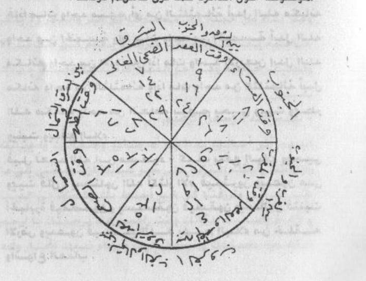
[Crop halaman 109 — crop presisi kiriman pengguna; nama berkas sama dengan halaman tujuan; bukan ekstraksi FINAL KHATAM dan bukan gambar ulang]
2. Penentuan Jam
«tidak ada hitungan di halaman ini»
Catatan penyunting
«أَعِيذُونِي» (lindungilah aku) berdampingan dengan «أَغِيثُونِي» (tolonglah aku); «بُوحْدَانِيَّةِ» bentuk cetakan yang janggal (mungkin «بِوَحْدَانِيَّةِ»). Menyeru selain Allah dengan «lindungilah/tolonglah» adalah persoalan akidah yang serius; saya catat teksnya dan tidak mengikutinya.
Harakat dan tanda baca Arab bersifat editorial.
Rajah, da'irah, dan jadwal angka pada halaman ini TIDAK digambar ulang; bentuk aslinya wajib diambil dari pindaian halaman yang bersangkutan.
دا'irah pada halaman ini adalah gambar (lingkaran berisi arah, angka, dan nama) — tidak saya gambar ulang; bentuk aslinya wajib diambil dari pindaian. «الْعَدَدُ الْهِنْدِيُّ» = angka yang dipakai dalam cetakan (١٢٣…). Saya tidak menafsirkan isi lingkaran karena keterangannya hanya dapat dibaca dari gambar.
5. Khususiyah — Waktu : Media : Bukhur
Waktu: setiap hari dari setiap bulan; satu dari delapan arah ditentukan menurut hari pada da’irah : Media: da’irah bergambar delapan arah dengan angka Hindi di sekelilingnya : Bukhur: tidak disebutkan dalam sumber unit ini
M110 — Halaman 110, hadis Abu Nu‘aim tentang «abdāl»
Qaalal haafizhu abuu nu'aimin fii musnadihi 'anibni mas'uudin radhiyallaahu 'anhu) qaala: rasuulullaahi shallallaahu 'alaihi wa sallama: - anna lillaahi fil khalqi tsltsamaa-atin quluubuhum 'alaa qalbi ibraahiima 'alaihis salaamu wa lahu fii khalqihi arba'uuna quluubuhum 'alaa qalbi muusaa 'alaihis salaamu wa lahu fii khalqihi khamsatun quluubuhum 'alaa qalbi miikaa-iila 'alaihis salaamu. Fa-idzaa maata waahidun minhum ay minats tsltsamaa-ati abdalallaahu makaanahu waahidun minal khamsati wa idzaa maata waahidun minal khamsati abdalallaahu makaanahu waahidun minal arba'iina idzaa maata waahidul arba'iina abdalallaahu makaanahu waahidun minats tsltsamaa-ati wa idzaa maata waahidun minats tsltsamaa-ati abdalallaahu makaanahu waahidun minal 'aammati bihim yahyaa wa yumiitu wa yubthiru wa yunbitu wa yadfa'ul balaa-a.
Qiila li'abdillaahi bni mas'uudin - kaifa yadfa'ul balaa-a wa yuh yaa wa yumiitu qaala: yas-aluunallaaha aktsaaral ammi fayuktsiruuna wa yad'uuna 'alal jabaabirati fayaqshiduuna fayustanqadzuuna fayusqauna wa yas-aluuna fatunbitul ardhu wa yad'uuna fayadfa'ullaahu bihimul balaa-a min khalqihi wa anwaa'al 'adzaabi.
3. Terjemahan
Al-Hafizh Abu Nu‘aim berkata dalam musnadnya, dari Ibnu Mas‘ud—semoga Allah meridainya: Rasulullah ﷺ bersabda: «Sesungguhnya Allah memiliki tiga ratus (orang) di antara makhluk, hati mereka (seperti) hati Ibrahim—semoga salam atasnya; dan Dia memiliki empat puluh (orang), hati mereka (seperti) hati Musa—semoga salam atasnya; dan Dia memiliki lima (orang), hati mereka (seperti) hati Mikail—semoga salam atasnya.» Maka apabila mati satu dari mereka, yaitu dari yang tiga ratus, Allah menggantikan tempatnya dengan satu dari yang lima; apabila mati satu dari yang lima, Allah menggantikan tempatnya dengan satu dari yang empat puluh; apabila mati satu dari yang empat puluh, Allah menggantikan tempatnya dengan satu dari yang tiga ratus; dan apabila mati satu dari yang tiga ratus, Allah menggantikan tempatnya dengan satu dari orang umum. Dengan mereka (makhluk) dihidupkan dan dimatikan, ditumbuhkan(?) dan ditumbuhkan tanaman, dan bala ditolak.
Dikatakan kepada Abdullah bin Mas‘ud: «Bagaimana mereka menolak bala, menghidupkan, dan mematikan?» Ia berkata: «Mereka memohon kepada Allah (agar) hujan banyak, maka (hujan) menjadi banyak; mereka mendoakan (kejelekan) atas orang-orang yang sewenang-wenang, maka (doa itu) mengenai mereka sehingga mereka tertimpa; mereka diberi minum, mereka meminta, maka bumi menumbuhkan (tanaman); dan mereka berdoa, maka Allah menolak bala dengan mereka dari makhluk-Nya dan segala jenis azab.» [CATATAN PENERJEMAH: Dicatat apa adanya, tidak dianjurkan, tidak disahkan sebagai amalan]
4. Metode, Penentuan Jam, dan Catatan Penyunting
1. Metode
Praktik: tidak ada praktik baru; halaman ini memuat hadis yang dinisbatkan kepada Abu Nu‘aim (dari Ibnu Mas‘ud) tentang tiga ratus, empat puluh, dan lima orang yang hatinya seperti hati Ibrahim, Musa, dan Mikail, serta tanya-jawab Ibnu Mas‘ud tentang bagaimana mereka menolak bala. Sanad dan penilaian hadis ini belum saya verifikasi.
[Dinisbatkan pada penulis; tidak ada jaminan; dicatat tidak dianjurkan tidak disahkan]
2. Penentuan Jam
«tidak ada hitungan di halaman ini»
Catatan penyunting
cetakan menulis «الثَّلْثَمِائَة» (bentuk tidak baku; biasa «الثلاثمائة») — saya pertahankan. «يُبْطِرُ» tidak jelas (mungkin «يُمْطِر» = menurunkan hujan). Hadis ini belum saya verifikasi: penulis menisbatkannya kepada «مسند أبي نعيم» dari Ibnu Mas‘ud; saya tidak dapat memastikan sanadnya maupun statusnya, dan hadis tentang jumlah «abdāl» semacam ini diperdebatkan ulama.
Harakat dan tanda baca Arab bersifat editorial.
Rajah, da'irah, dan jadwal angka pada halaman ini TIDAK digambar ulang; bentuk aslinya wajib diambil dari pindaian halaman yang bersangkutan.
«أَكْثَارَ الْأَمْ» bentuk cetakan yang tidak baku (mungkin «إكثار الأمن/الغيث») — saya pertahankan dan menandai. «فَيُسْقُونَ» = diberi hujan/minum.
5. Khususiyah — Waktu : Media : Bukhur
Waktu: tidak disebutkan dalam sumber unit ini : Media: tidak disebutkan dalam sumber unit ini : Bukhur: tidak disebutkan dalam sumber unit ini
M111 — Halaman 111, jumlah tiap kelompok dan doa yang terpotong
Wa a'lam annal nuqabaa-a tsltsamaa-atun wa hum bil maghribi wan nujabaa-u sab'uuna wa hum bimishra = wal abdaalu arba'uuna wa hum bisy syaami wal akhyaaru sab'atun wa hum sayyaahuuna fil ardhi wal 'umdu arba'atun wa hum sayyaahuuna fii zawaayal ardhi = wa maskanul ghautsi makkatul mukarramatu (fa-idzaa a'radhat lihaajatin) fii amril 'aammati ubtuluu fiihal nuqabaa-u tsumman nujabaa-u tsummal abdaalu tsummal akhyaaru tsummal 'umdu fa-idzaa ajal-lau wa illab tuliya(l) ghautsu falaa tatimmu da'watuhu hattaa tatimma mas-alatuhu.
Wa haadzaa du'aa-un man hamalatu kaana mahfuuzhan fil barri wal bahri wa laa yadzkuru haajatahu ba'da qiraa-atihi tsalaatsa marraatin laa yaquumu min maqaamihi illaa wa qudhiyat haajatuhu wa haadzaa huwad du'aa-u fahfazhhu wa shunhu jahdaka taquulu - bismillaahir rahmaanir rahiimi - Allaahumma annii as-aluka bi'azhiimi asmaa-ika wa shifaatika wa anbiyaa-ika wa auliyaa-ika wa aayaatikal munazzalati 'alaa khairi 'ibaadika an tuwaffiqanii ilaa maa tuhibbu wa tardhaa wa tarzuqnaa kulla khairin ahaatha bika 'ilmuka fid dunyaa wal aakhirati wa as'adnaa biliqaa-ika wa anta raa dhin 'annaa birahmatika yaa arhamar raahimiina wa as-aluka wa atawassalu ilaika bijaahi nabiyyikal mukhtaari wa aalihi.
3. Terjemahan
Ketahuilah bahwa «nuqabā’» berjumlah tiga ratus dan mereka di (tanah) Maghrib; «nujabā’» tujuh puluh dan mereka di Mesir; «abdāl» empat puluh dan mereka di Syam; «akhyār» tujuh dan mereka berkelana di bumi; «‘umud» empat dan mereka berkelana di penjuru bumi; dan tempat tinggal «ghauts» adalah Makkah yang dimuliakan. Maka apabila tampak suatu keperluan dalam perkara umum, diuji (dibebankan) padanya para nuqabā’, kemudian nujabā’, kemudian abdāl, kemudian akhyār, kemudian ‘umud; maka apabila mereka telah melaksanakan(?) — jika tidak, ghauts diuji, sehingga doanya tidak sempurna sampai selesai permintaannya.
Dan ini adalah doa «orang-orang yang membawa», yang (konon) terjaga di darat dan di laut; ia tidak menyebut keperluannya setelah membaca tiga kali — ia tidak berdiri dari tempatnya kecuali keperluannya telah dipenuhi. Dan inilah doanya, maka hafalkanlah dan peliharalah dengan sungguh-sungguh. Engkau ucapkan:
— Dengan nama Allah Yang Maha Pengasih dan Maha Penyayang —
«Ya Allah, aku memohon kepada-Mu dengan keagungan nama-nama-Mu dan sifat-sifat-Mu, para nabi-Mu dan para wali-Mu, serta ayat-ayat-Mu yang diturunkan kepada sebaik-baik hamba-Mu, agar Engkau memberiku taufik kepada apa yang Engkau cintai dan ridhai, memberi kami rezeki segala kebaikan yang ilmu-Mu meliputi kami di dunia dan akhirat, membahagiakan kami dengan perjumpaan dengan-Mu, dan Engkau meridai kami dengan rahmat-Mu, hai Yang Maha Pengasih dari segala yang mengasihi. Dan aku memohon kepada-Mu serta bertawasul kepada-Mu dengan kemuliaan nabi-Mu yang terpilih dan keluarganya «…» [tidak disalin penuh pada sumber kerja]» [CATATAN PENERJEMAH: Dicatat apa adanya, tidak dianjurkan, tidak disahkan sebagai amalan]
4. Metode, Penentuan Jam, dan Catatan Penyunting
1. Metode
Praktik dari sumber (halaman 111): lanjutan pembagian «نقباء/نجباء/أبدال/أخيار/عمد» beserta tempatnya dan urutan «ابتلاء» ketika ada keperluan; lalu doa yang menurut penulis «dihafal di darat dan laut», yang jika dibaca tiga kali keperluannya terkabul sebelum ia bangkit. Halaman berhenti di tengah doa. Catatan editorial: halaman ini masih bagian dari pemanggilan jin/nama-nama (استحضار وأسماء سليمانية). Saya mencatat isi kitab, menerjemahkan, dan tidak mengamalkannya; praktik semacam ini termasuk yang dinilai sihir/kesyirikan dalam pandangan ulama.
[Dinisbatkan pada penulis; tidak ada jaminan; dicatat tidak dianjurkan tidak disahkan]
2. Penentuan Jam
«tidak ada hitungan di halaman ini»
Catatan penyunting
«فَإِذَا اجْلَوْا» tidak dapat dipastikan (mungkin «أَجَابُوا» atau «أَجْلَوْا»); «ابْتُلِيَ الْغَوْثُ» = ghauts «diuji/dibebani». Angka dan tempat ini adalah bagian dari keyakinan yang dinisbatkan penulis, bukan sesuatu yang saya sahkan; saya tidak menemukan dasarnya dalam Al-Qur’an.
Harakat dan tanda baca Arab bersifat editorial.
Rajah, da'irah, dan jadwal angka pada halaman ini TIDAK digambar ulang; bentuk aslinya wajib diambil dari pindaian halaman yang bersangkutan.
doa ini lebih dekat kepada doa yang lazim dan tidak memuat permintaan bantuan makhluk; berbeda dengan isi halaman-halaman sebelumnya. Kalimat pembuka «دُعَاءٌ مَنْ حَمَلَةُ» rusak susunannya pada cetakan (mungkin «دعاء حملة العرش» atau «دعاء من حملة العلم») — saya biarkan bertanda. Halaman berhenti di tengah doa pada kata «وَآلِهِ»; lanjutannya di halaman 112.
5. Khususiyah — Waktu : Media : Bukhur
Waktu: tidak disebutkan dalam sumber unit ini : Media: tidak disebutkan dalam sumber unit ini : Bukhur: tidak disebutkan dalam sumber unit ini
«…» [lanjutan dari segmen sebelumnya] wath thahaari wa ash haabil akhyaari wa aali baitihil abraari an takfura 'annadz dzunuuba wal awzaara wah rusnaa min jamii'il akhwaali wal akhthaari wa amminnaa min syarrizh zhaalimiina wath thhaaghiina wal fujjaari wa matti'naa biru'yatika wa ru'yati man naraahu fii daaril qaraari wa taqabbal minnaa maa 'amilnaa min saa-iril a'maalinaa fis sirri wal ijhaari waghrir lanaa bimaghfiratika annaka ghafuurun rahiimun ghaffaarun birahmatika yaa arhamar raahimiina wa atawassalu ilaika biwaahidin akhyaarika wa sab'ati akhyaarika wa 'asyarati rijaalika wa arba'iina budalaa-ika wa sab'iina nujabaa-ika wa tsalaatsimi-ati nuqabaa-ika an tardhaa 'annaa biridhaa-ika wa shabbirnaa 'alaa qadhaa-ika wa balaa-ika wa arzuqnaa syukra ni'maa-ika wasyfinaa bisyifaa-ika wa daawinaa bidawaa-ika waj'alnaa min auliyaa-ika wa laa tukhrijnaa 'an baabika birahmatika yaa arhamar raahimiin. Allaahumma atawassalu ilaika biyahyaa bni zakariyyaa war rabii'i bni khaitsama wa ibraahiima bni adhama wal fudhaila bni 'iyaadh wa abii 'abdillaahin naffaathi wa manshuuri bni 'ammaarin wa maaliki bni diinaarin wa habiibin najjaari wal baiti wat tammaari wal qaadhii bikaarin wa tsaabitin bananiyyi wa thaanuusal yamaaniyyi.
Wa muhammadinil 'asqalaaniyyi wabni sulaimaanad daaraaniyyi wa sayyidii madyanin tilimsaaniyyi wabii idriisal khaulaaniyyi wa 'abdillaahil madaniyyi wa uwaisin qaraniyyi wasy syaikhin nizhaamiyyi wabii yaziidal bith aahiyyi wabii turaabin nakhsyabiyyi wabii ma'aalii imaamil haramainil juwainiyyi wa 'abdil 'aziizid dariiniyyi wa habiibil 'ajamiyyi wal hasanil bashriyyi.
3. Terjemahan
«…» [lanjutan dari segmen sebelumnya] dan (ahli) kesucian, para sahabat yang terpilih, serta keluarga rumahnya yang berbakti, agar Engkau menghapus dosa dan beban kami, menjaga kami dari segala ketakutan dan bahaya, memberi keamanan dari kejahatan orang zalim, melampaui batas, dan durhaka, memberi kami nikmat dengan melihat-Mu dan melihat siapa yang kami lihat di kampung keabadian, menerima dari kami amal-amal kami di tempat rahasia maupun terang, dan mengampuni kami dengan ampunan-Mu — sesungguhnya Engkau Maha Pengampun, Maha Penyayang, Maha Pengampun — dengan rahmat-Mu, hai Yang Maha Pengasih dari segala yang mengasihi. Dan aku bertawasul kepada-Mu dengan satu (dari) orang-orang pilihan-Mu, tujuh orang pilihan-Mu, sepuluh orang (pilihan)-Mu, empat puluh «abdāl»-Mu, tujuh puluh «nujabā’»-Mu, dan tiga ratus «nuqabā’»-Mu, agar Engkau meridai kami dengan keridhaan-Mu, memberi kesabaran atas ketetapan dan cobaan-Mu, memberi kami rezeki berupa syukur atas nikmat-Mu, menyembuhkan kami dengan kesembuhan-Mu, mengobati kami dengan obat-Mu, menjadikan kami termasuk kekasih-kekasih-Mu, dan tidak mengeluarkan kami dari pintu-Mu — dengan rahmat-Mu, hai Yang Maha Pengasih dari segala yang mengasihi. Ya Allah, aku bertawasul kepada-Mu dengan Yahya bin Zakariya, ar-Rabi‘ bin Khutsaim, Ibrahim bin Adham, al-Fudhail bin ‘Iyadh, Abu ‘Abdillah an-Naffath, Manshur bin ‘Ammar, Malik bin Dinar, Habib an-Najjar, al-Bait dan at-Tammar, al-Qadhi Bikar, Tsabit al-Banani, dan Thawus al-Yamani «…» [bersambung ke segmen berikutnya]
Dan Muhammad al-‘Asqalani, Ibnu Sulaiman ad-Darani, tuanku Madyan at-Tilimsani, Abu Idris al-Khaulani, ‘Abdullah al-Madani, Uwais al-Qarani, Syekh an-Nizhami, Abu Yazid al-Bithahi, Abu Turab an-Nakhsyabi, Abu al-Ma‘ali Imam al-Haramain al-Juwaini, ‘Abd al-‘Aziz ad-Darini, Habib al-‘Ajami, dan al-Hasan al-Bashri «…» [bersambung ke segmen berikutnya][CATATAN PENERJEMAH: Dicatat apa adanya, tidak dianjurkan, tidak disahkan sebagai amalan]
4. Metode, Penentuan Jam, dan Catatan Penyunting
1. Metode
Praktik: doa. Halaman ini melanjutkan doa yang terpotong di halaman 111: tawasul dengan «أهل الطهار» dan para wali, permohonan ampun, lalu tawasul dengan sejumlah nama (أبدال، رجال، أخيار) dan nama-nama tokoh sufi. Doa ini sebagian besar berisi permohonan yang lazim, tetapi tawasul dengan nama-nama wali adalah persoalan yang diperdebatkan ulama; saya catat posisinya.
[Dinisbatkan pada penulis; tidak ada jaminan; dicatat tidak dianjurkan tidak disahkan]
2. Penentuan Jam
«tidak ada hitungan di halaman ini»
Catatan penyunting
doa ini panjang dan sebagian permohonannya lazim, tetapi memuat tawasul dengan nama-nama wali — praktik yang diperdebatkan: sebagian ulama membolehkan tawasul dengan orang saleh, sebagian menolaknya bila dijadikan perantara doa. Saya mencatat posisi itu, tidak memutuskan. «الْأَخْوَالِ» pada cetakan kemungkinan «الْأَهْوَال» (bahaya) — saya terjemahkan sebagai «ketakutan» dan menandainya. Nama «الْقَاضِي بِكَارٍ» dan «وَالْبَيْتِ وَالتَّمَّارِ» tidak dapat saya pastikan.
Harakat dan tanda baca Arab bersifat editorial.
Rajah, wafaq, dan jadwal angka/huruf pada halaman ini TIDAK digambar ulang; bentuk aslinya wajib diambil dari pindaian halaman yang bersangkutan.
Al-'arabiyyi wa sayyidii muhammadinil qurthubiyyi wa kamaalid diini bni 'abdizh zhaahiri wa sayyidii 'aliyyi bni naashirin wal imaami ahmada bni 'umara az zail'a'iyyi wa abii muhammadinil juraidiyyi wa abii thaalibil makkiyyi wa abii hasaninil khawaarizmiyyi wa abil qaasimil junaydi wal junaydi wal habiibi syah rayaana bni suwaidin wa abii bakrin an nailii wa yahyaa bni mu'aadzin nailii wa abii 'alaa ad daasuuqiyyi wa abii ishaaqal faaruuqiyyi.
Wa sayyidii ibraahiimad dasuuqiyyi wa sayyidii ahmadar rifaa'iyyi wasy syaikhi syaikhuun wa sa'duunal majnuuni wal bahluulil maftuuni wa abii bakrinil 'azzuuni wa sufyaanats tsauriyyi wa dzan nuunil mishriyyi wa abii hajjaajil aqshuriyyi wa 'abdir rahmaanil bajaliyyi wa ma'ruufin karkhiyyi wasy syaqiiqil balkhiyyi wal husaini bni manshuurinil hallaaji wa sahli bni waalidil? wa abii 'umara(l) haddaadi wal qaasimil waduudi was sariyyis saqathiyyi wa abii haasyiminil 'iraaqiyyi.
3. Terjemahan
Al-‘Arabi, tuanku Muhammad al-Qurthubi, Kamal ad-Din bin ‘Abd azh-Zhahir, tuanku ‘Ali bin Nashir, Imam Ahmad bin ‘Umar az-Zaila‘i, Abu Muhammad al-Juraidi, Abu Thalib al-Makki, Abu Hasan al-Khawarizmi, Abu al-Qasim al-Junaid, al-Junaid, al-Habib Syahrayan bin Suwaid, Abu Bakr an-Naili, Yahya bin Mu‘adz an-Naili, Abu ‘Ali ad-Dasuqi, dan Abu Ishaq al-Faruqi «…» [bersambung ke segmen berikutnya]
Tuanku Ibrahim ad-Dasuqi, tuanku Ahmad ar-Rifa‘i, Syekh Syaikhun, Sa‘dun «al-Majnun», al-Bahlul «al-Maftun», Abu Bakr al-‘Azzun, Sufyan ats-Tsauri, Dzu an-Nun al-Mishri, Abu Hajjaj al-Aqshuri, ‘Abd ar-Rahman al-Bajali, Ma‘ruf al-Karkhi, asy-Syaqiq al-Balkhi, al-Husain bin Manshur al-Hallaj, Sahl bin «…» [tidak disalin penuh pada sumber kerja] al-Warid, Abu ‘Umar al-Haddad, al-Qasim al-Wadud, as-Sari as-Saqathi, dan Abu Hasyim al-‘Iraqi «…» [bersambung ke segmen berikutnya][CATATAN PENERJEMAH: Dicatat apa adanya, tidak dianjurkan, tidak disahkan sebagai amalan]
4. Metode, Penentuan Jam, dan Catatan Penyunting
1. Metode
Praktik: doa (tawasul). Halaman ini hampir seluruhnya berisi daftar nama tokoh — sebagian memang ulama dan wali yang dikenal (al-Junaid, al-Qusyairi, al-Ghazali, al-Rifa‘i, al-Badawi, al-Jilani, dll.), sebagian tidak dapat saya pastikan. Tidak ada tata cara baru.
[Dinisbatkan pada penulis; tidak ada jaminan; dicatat tidak dianjurkan tidak disahkan]
2. Penentuan Jam
«tidak ada hitungan di halaman ini»
Catatan penyunting
«شَهْرَيَانَ بْنِ سُوَيْدٍ» tertulis «شهران بن سويد» pada sebagian cetakan; saya ikuti huruf yang terbaca. «النَّيْلِى» bisa «النَّيْلِي» atau «النِّيلِي». Banyak nama pada halaman ini tidak dapat saya pastikan bacaannya; saya tidak mengarang. I‘rab tidak berlaku pada daftar nama.
Harakat dan tanda baca Arab bersifat editorial.
Rajah, wafaq, dan jadwal angka/huruf pada halaman ini TIDAK digambar ulang; bentuk aslinya wajib diambil dari pindaian halaman yang bersangkutan.
«وَالشَّقِيقِ الْبَلْخِي» = asy-Syaqiq al-Balkhi; «ابْنِ الْوَارِدِ» tidak dapat saya pastikan; «وَذَا النُّونِ» = Dzun-Nun. Beberapa nama pada daftar ini merujuk tokoh yang kontroversial (al-Hallaj) atau tokoh legendaris (Syaikhun, Sa‘dun al-Majnun, al-Bahlul) — saya catat sebagai apa adanya tanpa menilai. I‘rab tidak berlaku.
5. Khususiyah — Waktu : Media : Bukhur
Waktu: tidak disebutkan dalam sumber unit ini : Media: tidak disebutkan dalam sumber unit ini : Bukhur: tidak disebutkan dalam sumber unit ini
M114 — Halaman 114, penutup doa dan klaim perpindahan wali
Wal farghaaniyyi bni ahmada ash shamaini wa sayyidii 'abdil wahhaabis sya'raani wa muhammadinil masykaani wa 'abdir rahiimil qinnaawiyyi wa sayyidii ahmada bni najaatis sahliy wal 'aasyiqi muhammadin sibaami muhammadin ahmada wa as-aluka bihaqqi sa'waanatal bashriyyati wa raihaanatal habasyiyyati wa maimuunatal badawiyyati wa 'aaidatal kuufiyyati wa raabi'atal 'adawiyyati wa sayyidatii zainabal mishriyyati wa sayyidatii nafiisatar mardhiyyati wa sa'duunatal majnuunati wa as-aluka bihaqqi 'ibaadikash shaalihiina an taj'alanaa min 'ibaadikash shaalihiina wa min hizbikan naajihiina warfa' 'an quluubinal ghafalata wa kulla karbin wa baliyyatin wa an wajhaka(l) kariima fii daarikal kariimi fii daarit tana''umi birahmatika yaa arhamar raahimiina wa as-aluka bihaqqika 'alaihim wa bihaqqihim 'alaika an taqdhiya haajatii wa fii kadzaa wa kadzaa da'waahum fiihaa subhaanakallaahumma wa khairuhum fiihaa salaaman wa aakhiru da'waahum anil hamdu lillaahi rabbil 'aalamiina.
Dan al-Farghani bin Ahmad ash-Shamain, tuanku ‘Abd al-Wahhab asy-Sya‘rani, Muhammad al-Masykani, ‘Abd ar-Rahim al-Qinnawi, tuanku Ahmad bin an-Najat as-Sahli, dan al-‘Asyiq Muhammad Sibami Muhammad Ahmad. Dan aku memohon kepada-Mu dengan hak Sa‘wana al-Bashriyyah, Raihanah al-Habasyiyyah, Maimunah al-Badawiyyah, ‘Aidah al-Kufiyyah, Rabi‘ah al-‘Adawiyyah, tuanku Zainab al-Mishriyyah, tuanku Nafisah al-Mardhiyyah, dan Sa‘dunah «al-Majnunah»; dan aku memohon kepada-Mu dengan hak hamba-hamba-Mu yang saleh agar Engkau menjadikan kami termasuk hamba-hamba-Mu yang saleh dan golongan-Mu yang beruntung, mengangkat dari hati kami kelalaian serta setiap kesulitan dan bencana, dan (agar kami melihat) wajah-Mu yang mulia di rumah-Mu yang mulia, di kampung kenikmatan — dengan rahmat-Mu, hai Yang Maha Pengasih dari segala yang mengasihi. Dan aku memohon kepada-Mu dengan hak-Mu atas mereka dan hak mereka atas-Mu agar Engkau memenuhi keperluanku, yaitu ini dan itu. «Doa mereka di dalamnya ialah: Mahasuci Engkau, ya Allah; dan penghormatan mereka di dalamnya ialah: salam; dan penutup doa mereka ialah: segala puji bagi Allah, Tuhan seluruh alam.»
Ketahuilah bahwa para wali seluruhnya «beramal pagi» setiap hari bersama «al-Ghauts» di Makkah, kemudian mereka menghadap — kemudian menghadap — ke salah satu dari delapan arah pada setiap hari dari setiap bulan, yang engkau ketahui dari «da'irah» yang telah disebutkan terdahulu. [CATATAN PENERJEMAH: Dicatat apa adanya, tidak dianjurkan, tidak disahkan sebagai amalan]
4. Metode, Penentuan Jam, dan Catatan Penyunting
1. Metode
Praktik: doa dan penjelasan. Halaman ini menutup daftar nama (termasuk nama perempuan: Sa‘wana al-Bashriyyah, Zainab al-Mishriyyah, Nafisah ar-Ridha), lalu kembali kepada doa yang lazim, dan di bagian akhir menjelaskan bahwa «para wali» setiap pagi berkumpul di Makkah bersama «al-Ghauts» lalu menyebar ke delapan arah menurut da'irah.
[Dinisbatkan pada penulis; tidak ada jaminan; dicatat tidak dianjurkan tidak disahkan]
2. Penentuan Jam
«tidak ada hitungan di halaman ini»
Catatan penyunting
kalimat penutup doa memakai QS Yunus 10:10 («دعواهم فيها سبحانك اللهم…») — di sini ditempatkan sebagai penutup doa, bukan sebagai kutipan ayat yang berdiri sendiri; saya catat penggunaannya. «وَأَنْ وَجْهَكَ الْكَرِيمَ» susunannya rusak pada cetakan (kata kerja hilang) — saya beri tanda dan tidak menambal. «سِبَامِي» nama yang tidak dapat saya pastikan.
Harakat dan tanda baca Arab bersifat editorial.
Rajah, wafaq, dan jadwal angka/huruf pada halaman ini TIDAK digambar ulang; bentuk aslinya wajib diambil dari pindaian halaman yang bersangkutan.
«يَعْمَلُونَ الصُّبْحَ» bisa berarti salat Subuh atau «berkumpul pagi»; cetakan tidak jelas. Kalimat ini mengulang «ثم يتوجهون» dua kali — saya pertahankan dan menandainya. Ini klaim kosmologi penulis tentang para wali; saya catat, tidak mengiyakan.
5. Khususiyah — Waktu : Media : Bukhur
Waktu: Halaman ini menutup daftar nama (termasuk nama perempuan: Sa‘wana al-Bashriyyah, Zainab al-Mishriyyah, Nafisah ar-Ridha), lalu kembali kepada doa yang lazim, dan di bagian akhir menjelaskan bahwa «para wali» setiap pagi berkumpul di Makkah bersama «al-Ghauts» lalu menyebar ke delapan arah menurut da'irah. : Media: tidak disebutkan dalam sumber unit ini : Bukhur: tidak disebutkan dalam sumber unit ini
M115 — Halaman 115, tata cara menghadap «para wali»
Fa-idzaa hashala laka amruhum yatawadh dhaa wa tushallii rak'ataini lillaahi ta'aalaa tsumma tatawajjahu ilaihim qibala jihatihim wa taqra-ul faatihata wa tuhdiihaa lahum tsumma taquulu as-salaamu 'alaika yaa rijaalal ghaibi yaa ayyuhal arwaahul muqaddasatu a'iinuunii biquwwatin wanzhuruu ilaa nazhratin yaa nuqabaa-u yaa nujabaa-u yaa abdaalu yaa autaadu yaa ghautsu yaa quthbu. Wa tadzkuru haajatika wa taquuluq dhuu haajatii wa hiya kadzaa wa kadzaa aghiitsuunii bighautsihi bihurmati sayyidinaa muhammadin shallallaahu 'alaihi wa sallama wa 'alaa aalihi rabbil 'aalamiina.
Wa laa budda laka 'inda tawajjuhika ilaihim 'inda tawassulika ilallaahi fii qadhaa-i haajatika ka-annaka mustanidun ilaihim. Wa taquulu fii nafsika: laa taqtha'uu nazharakum 'annii wa madrakum tsumma taqra-ul faatihata wa tuhdiihaa ilaihim wa tas'aa li-ayyi haajatika fa-innahaa tuqdhaa bi-idznillaahi ta'aalaa.
3. Terjemahan
Maka apabila engkau telah memperoleh (pengetahuan tentang) perkara mereka, berwudulah dan salatlah dua rakaat karena Allah—Mahatinggi—kemudian menghadaplah kepada mereka ke arah mereka, bacalah al-Fatihah dan hadiahkanlah kepada mereka, lalu ucapkan: «Semoga keselamatan atasmu, hai orang-orang gaib, hai ruh-ruh yang disucikan, tolonglah aku dengan kekuatan, dan pandanglah dengan (satu) pandangan, hai nuqabā’, hai nujabā’, hai abdāl, hai autād, hai ghauts, hai quthb.» Dan sebutkanlah keperluanmu, lalu ucapkan: «Penuhilah keperluanku, yaitu ini dan itu; tolonglah aku dengan pertolongan-Nya, dengan kemuliaan tuan kami Muhammad ﷺ dan keluarganya, Tuhan seluruh alam.»
Dan tidak boleh tidak, pada saat engkau menghadap kepada mereka dan bertawasul kepada Allah dalam pemenuhan keperluanmu, (hendaklah) seakan-akan engkau bersandar kepada mereka. Dan engkau katakan dalam hatimu: «Janganlah kalian memutuskan pandangan dan perhatian kalian dariku», kemudian engkau membaca al-Fatihah dan menghadiahkannya kepada mereka, lalu berusahalah untuk keperluan apa pun; maka ia akan dipenuhi dengan izin Allah—Mahatinggi. [CATATAN PENERJEMAH: Dicatat apa adanya, tidak dianjurkan, tidak disahkan sebagai amalan]
4. Metode, Penentuan Jam, dan Catatan Penyunting
1. Metode
Praktik dari sumber (halaman 115): berwudu, salat dua rakaat, menghadap ke arah mereka, membaca al-Fatihah lalu «menghadiahkannya» kepada mereka, mengucapkan salam kepada «rijal al-ghaib» dengan menyebut quthb/ghauts/abdāl, menyebutkan keperluan, dan — menurut penulis — tidak ada bedanya engkau menghadap atau tidak. Saya catat sebagai praktik yang tidak bersumber dari Al-Qur’an/Sunnah.
[Dinisbatkan pada penulis; tidak ada jaminan; dicatat tidak dianjurkan tidak disahkan]
2. Penentuan Jam
«tidak ada hitungan di halaman ini»
Catatan penyunting
«يَتَوَضَّا» bentuk cetakan (mestinya «تَتَوَضَّأ»); «الَى نَظْرَةٍ» tidak jelas (mungkin «بنظرة»); «بِغَوْثِهِ» bisa «بغوثه» (ghauts-nya) atau «بِغَوْثِهِ» (pertolongan-Nya) — saya pertahankan ganda. Menghadiahkan al-Fatihah kepada «para wali» dan meminta pertolongan mereka adalah persoalan akidah yang tidak saya anjurkan; saya catat teksnya.
Harakat dan tanda baca Arab bersifat editorial.
Rajah, wafaq, dan jadwal angka/huruf pada halaman ini TIDAK digambar ulang; bentuk aslinya wajib diambil dari pindaian halaman yang bersangkutan.
«وَمَدْرَكُمْ» tidak jelas (mungkin «وَمَأْخَذَكُمْ» atau «وَنَظَرَكُمْ»); saya pertahankan bertanda. Kalimat «كَأَنَّكَ مُسْتَنِدٌ إِلَيْهِمْ» (seakan bersandar kepada mereka) adalah inti persoalan akidah pada bab ini — bersandar kepada selain Allah dalam doa; saya catat tegas, tidak menyarankan.
«يتوضا» — wazan تَوَضَّأَ–يَتَوَضَّأُ; masdar تَوَضُّؤٌ; isim fa‘il مُتَوَضِّئٌ; isim maf‘ul مُتَوَضَّأٌ; mubalaghah tidak lazim; faedah: wazan tafa‘‘ul; usulan ejaan «يتوضا» → «يتوضأ».
5. Khususiyah — Waktu : Media : Bukhur
Waktu: tidak disebutkan dalam sumber unit ini : Media: tidak disebutkan dalam sumber unit ini : Bukhur: tidak disebutkan dalam sumber unit ini
M116 — Halaman 116, Fasal Kedua Puluh Dua: القرينة dan wafaq Basmalah
Al-fashluts tsaani wal 'isysyruuna: al-qariinatu. Baabun liman'il qariinati ummis shibyaani: tuktabu wafqal basmalatis syariifati(l) untsaa fii waraqatin baidhaa-a tsumma tuktabu haulahu maa ya'tii wa huwa haadzaa - a b t ts j h kh d dz r z s sy sh dh th zh ' gh f q k l m n h w l a y - tsummak tub mi-ata marratin haakadzaa kahwu lahuu hayyaa syaraahiyaa aduunaay ashbaawuts al syaddaay 41 marratan waktub aayaatin lihifzhi kullihaa wa aayatal kursiyyi wa aakhira suuratil baqarati wa aakhira suuratit taubati wa aakhira suuratil hasyri wa aakhira suuratil hadiidi ilash shuduu ri wash shamadiyyata wal mu'awwidzataini wa yubakhkhiru wa yahmiluhul maqruunu wal mar-atul latii tusqithul aulaada.
Baabun aakharu lil qariinati: tuktabu wa yuhmalu lil mar-atil latii tusqithul aulaada wa khilaafahu wa yubakhkharu wa yahmiluhul mar-atu wa haadzaa maa tuktabu.
3. Terjemahan
Fasal kedua puluh dua: «al-Qarīnah». Bab untuk mencegah qarinah «Umm ash-Shibyan»: ditulis «wafaq Basmalah» yang bersifat feminin pada kertas putih, kemudian ditulis di sekelilingnya apa yang berikut, yaitu: alif, ba, ta, tsa, jim, ha, kha, dal, dzal, ra, zai, sin, syin, shad, dhad, tha, zha, ‘ain, ghain, fa, qaf, kaf, lam, mim, nun, ha, wau, lam-alif, ya. Kemudian tulislah seratus kali: «hākadzā kahwu lahū»; «hayyā syarāhiyā adūnāy ashbāwuts al syaddāy» empat puluh satu kali; dan tulislah ayat-ayat untuk menjaga seluruhnya: Ayat Kursi, akhir Surah al-Baqarah, akhir Surah at-Taubah, akhir Surah al-Hasyr, akhir Surah al-Hadid «ilash shudur», (Surah) ash-Shamadiyyah, dan kedua Mu‘awwidzah. Lalu dibakar dengan wangi-wangian dan dibawa oleh orang yang «terkena qarin» serta perempuan yang keguguran.
Bab lain untuk «al-Qarīnah»: ditulis dan dibawa untuk perempuan yang keguguran dan selainnya; dibakar dengan wangi-wangian dan dibawa oleh perempuan itu. Dan inilah yang ditulis «…» [bersambung ke segmen berikutnya][CATATAN PENERJEMAH: Dicatat apa adanya, tidak dianjurkan, tidak disahkan sebagai amalan]
4. Metode, Penentuan Jam, dan Catatan Penyunting
1. Metode
Praktik dari sumber (halaman 116): الفصل الثاني والعشرون — القرينة. Dua bab: (1) «باب لمنع القرينة أم الصبيان» — menulis Basmalah pada kertas putih, menulis huruf abjad (أبجد هوز…) mengelilinginya, menulis «هكذا كهو لهو» seratus kali, menulis «هيا شراهيا أدوناي أصباوث إل شداي» 41 kali, lalu menulis ayat-ayat (al-Kursi, al-Baqarah, at-Taubah, al-Hasyr, al-Hadid, al-Ikhlas, al-Mu‘awwidzatain); (2) «باب آخر للقرينة» untuk perempuan yang keguguran. Rajah/huruf tidak digambar ulang.
[Dinisbatkan pada penulis; tidak ada jaminan; dicatat tidak dianjurkan tidak disahkan]
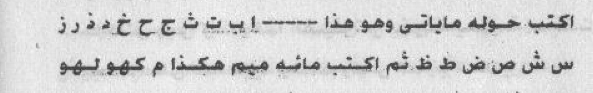
[Crop halaman 116 — crop presisi kiriman pengguna; nama berkas sama dengan halaman tujuan; bukan ekstraksi FINAL KHATAM dan bukan gambar ulang]
2. Penentuan Jam
«tidak ada hitungan di halaman ini»
Catatan penyunting
rajah/wafaq dan deretan huruf pada halaman ini tidak saya gambar ulang; bentuk aslinya harus dari pindaian. «وَفْقَ الْبَسْمَلَةِ الشَّرِيفَةِ الْأُنْثَى» susunannya janggal (mungkin «وفق البسملة الشريفة، الأُنثى» sebagai penanda jenis wafaq). «هَيَّا شَرَاهِيَا أَدُونَايْ أَصْبَاوُثْ» adalah kata Ibrani/ibrani-like tanpa makna Arab yang lazim dalam literatur ini; saya tulis sebagai bunyi. «اَلْ شَدَّايْ» = «El Syaddai». I‘rab tidak konsisten karena teks rusak.
bab ini berhenti pada kalimat pembuka dan teks bacaannya berlanjut di halaman 117 («بسم الله الرحمن الرحيم…»). Saya tidak menyambung sendiri; sambungannya ada di unit M117.
Harakat dan tanda baca Arab bersifat editorial.
Rajah, wafaq, dan jadwal angka/huruf pada halaman ini TIDAK digambar ulang; bentuk aslinya wajib diambil dari pindaian halaman yang bersangkutan.
5. Khususiyah — Waktu : Media : Bukhur
Waktu: tidak disebutkan dalam sumber unit ini : Media: kertas putih berisi wafaq Basmalah dan huruf-huruf di sekelilingnya; «hākadzā kahwu lahū» ditulis 100 kali; rangkaian «hayyā syarāhiyā…» ditulis 41 kali; ayat-ayat penjagaan, Ayat Kursi, penutup al-Baqarah, at-Taubah, al-Hasyr, dan al-Hadid, ash-Shamadiyyah, serta al-Mu‘awwidzatain : Bukhur: disebutkan untuk fumigasi pada kedua bab, tetapi jenisnya tidak dirinci
M117 — Halaman 117, bacaan penangkal dan Ayat Kursi
Bismillaahir rahmaanir rahiimi. Aariqan syarqan 'armuuqaasy isthaa fa suthuufa khaththaafa syam'adaasy syatuukhal laahu rabbul 'izzati wal 'azhamati bi-amhisyauluu wa sabbuuhin an fajja syatuukha armuuhaitsal qadiimil azaliyyad daa-imil abadiyya. Wa nusabbihu an fajja syatuukha armuuhaitsal qadiimil azaliyyad daa-imil abadiyya anil ladziina futinuul mu-miniina wal mu-minaatsi tsumma lam yatuubuu falahum 'adzaabu jahannama wa lahum 'adzaabul hariiqi fa'tasyidkum yaa ma'syaral jinni billaahil 'aziizil waahidil qahhaaril hafiizhil waafil maani'il waafi'i wa bil 'ahdil ladzii akhadzahu 'alaikum sayyidunaa sulaimaanu bnu daawuuda 'alaihimas salaamu laa tadnuu wa laa taqrabuu haamilal kitaabii haadzaa aw haamilal haadzal haikali watrukuuhu wansharifuu 'anhu wahfazhuuhu fii hirzillaahi wa himaayatihi bihaqqi haadzihil asmaa-i wal aayaati wa bisirril qur-aanil 'azhiimi.
Allaahu laa ilaaha illaa huwal hayyul qayyuumu laa ta'khudzuhu sinatun wa laa naumun lahu maa fis samaawaati wa maa fil ardhi man dzal ladzii yasyfa'u 'indahu illaa bi-idznihi ya'lamu maa baina aidiihim wa maa khalfahum wa laa yuhiithuuna bisyai-in min 'ilmihi illaa bimaa syaa-a wasi'a kursiyyuhus samaawaati wal ardha wa laa ya-uuduhu hifzhuhumaa wa huwal 'aliyyul 'azhiimu. Laa ikraaha fid diini qad tabayyanar rusydu minal ghayyi faman yakfur bith thaaghuuti wa yu'min billaahi faqadistamsaka bil 'urwatil wutsqaa lan fishaama lahaa wallaahu samii'un 'aliimun. Allaahu waliyyul ladziina aamanuu yukhrijuhum minazh zhulumaati ilan nuuri wal ladziina kafaruu auliyaa-uhumuth thaaghuutu yukhrijuunahum minan nuuri ilazh zhulumaat.
3. Terjemahan
Dengan nama Allah Yang Maha Pengasih dan Maha Penyayang. «Aariqan syarqan ‘armūqāsy isthāfa suthūfa khaththāfa syam‘adāsy syatūkh» — Allah, Tuhan kemuliaan dan keagungan, «bi-amhisyaulū wa sabbūh» «…» [tidak disalin penuh pada sumber kerja] (demikian seterusnya, kata-kata yang tidak dapat diterjemahkan). Dan kami bertasbih «…» [tidak disalin penuh pada sumber kerja] (diulang) «…» [tidak disalin penuh pada sumber kerja] bahwa orang-orang yang «telah memfitnah/menguji» orang-orang mukmin laki-laki dan perempuan kemudian tidak bertobat, bagi mereka azab Jahanam dan azab (api) yang membakar. Maka aku bersumpah kepada kalian, hai golongan jin, dengan Allah Yang Mahaperkasa, Yang Mahaesa, Yang Maha Menundukkan, Yang Maha Menjaga, Yang Memenuhi, Yang Mencegah; dan dengan perjanjian yang telah diambil atas kalian oleh tuan kami Sulaiman bin Dawud—semoga salam atas keduanya: janganlah kalian mendekat dan jangan mendekati pembawa kitabku ini atau pembawa «haikal» ini; tinggalkanlah dia dan pergilah darinya, dan jagalah dia dalam perlindungan dan lindungan Allah, dengan hak nama-nama dan ayat-ayat ini serta rahasia Al-Qur’an yang agung.
«Allah, tidak ada tuhan (yang berhak disembah) selain Dia, Yang Mahahidup, Yang terus-menerus mengurus (makhluk-Nya); tidak mengantuk dan tidak tidur. Milik-Nya apa yang ada di langit dan apa yang ada di bumi. Tidak ada yang dapat memberi syafaat di sisi-Nya tanpa izin-Nya. Dia mengetahui apa yang di hadapan mereka dan apa yang di belakang mereka, dan mereka tidak mengetahui sesuatu apa pun tentang ilmu-Nya melainkan apa yang Dia kehendaki. Kursi-Nya meliputi langit dan bumi, dan Dia tidak merasa berat memelihara keduanya. Dan Dia Yang Mahatinggi lagi Mahabesar.» «Tidak ada paksaan dalam (menganut) agama (Islam); sesungguhnya telah jelas (perbedaan) antara jalan yang benar dengan jalan yang sesat. Barang siapa mengingkari thaghut dan beriman kepada Allah, maka sungguh ia telah berpegang pada tali yang sangat kuat yang tidak akan putus. Dan Allah Maha Mendengar lagi Maha Mengetahui.» «Allah pelindung orang-orang yang beriman; Dia mengeluarkan mereka dari kegelapan kepada cahaya. Dan orang-orang yang kafir, pelindung-pelindungnya adalah thaghut, yang mengeluarkan mereka dari cahaya kepada kegelapan.» [CATATAN PENERJEMAH: Dicatat apa adanya, tidak dianjurkan, tidak disahkan sebagai amalan]
4. Metode, Penentuan Jam, dan Catatan Penyunting
1. Metode
Praktik dari sumber (halaman 117): teks bacaan penangkal yang dimulai dengan Basmalah, deretan kata tanpa makna Arab («ارقا شرقا عرموقاش…»), sumpah kepada «para jin» agar menjauh dari pemegang kitab, disusul Ayat Kursi dan ayat-ayat perlindungan. Teks ini bukan ayat dan bukan doa yang bersumber dari Sunnah; saya catat apa adanya. Catatan editorial: berisi permintaan kepada selain Allah dan kata-kata tanpa makna; tidak saya anjurkan.
[Dinisbatkan pada penulis; tidak ada jaminan; dicatat tidak dianjurkan tidak disahkan]
2. Penentuan Jam
«tidak ada hitungan di halaman ini»
Catatan penyunting
deretan kata pertama bukan bahasa Arab yang bermakna dan tidak dapat saya terjemahkan; saya menuliskannya sebagai bunyi dan menandainya. Kutipan «أَنِ الَّذِينَ فُتِنُوا الْمُؤْمِنِينَ وَالْمُؤْمِنَاتِ…» mirip QS al-Buruj 85:10 tetapi tidak sama persis («فتنوا» vs «فتنوا»); saya catat sebagai kutipan tidak tepat. «فَائْتَشِدْكُمْ» bentuk rusak (mungkin «أُقْسِمُ عَلَيْكُمْ»); «الْوَافِع» و«الْهَيْكَل» tidak jelas. I‘rab tidak konsisten.
Harakat dan tanda baca Arab bersifat editorial.
Rajah, wafaq, dan jadwal angka/huruf pada halaman ini TIDAK digambar ulang; bentuk aslinya wajib diambil dari pindaian halaman yang bersangkutan.
ini kutipan yang benar dari QS al-Baqarah 2:255–257 dan saya menuliskannya sesuai teks. Penulis menempatkannya di tengah bacaan penangkal dan menyambungnya dengan ayat-ayat lain pada halaman 118 tanpa jeda — saya pertahankan urutan itu dan menandai batas ayat.
5. Khususiyah — Waktu : Media : Bukhur
Waktu: tidak disebutkan dalam sumber unit ini : Media: tidak disebutkan dalam sumber unit ini : Bukhur: tidak disebutkan dalam sumber unit ini
M118 — Halaman 118, ayat-ayat penjagaan dan doa perlindungan
Al-'urwatil wutsqaa lan fishaama lahaa wallaahu samii'un 'aliimun. Alladziina aamanuu yukhrijuhum minazh zhulumaati ilan nuuri wal ladziina kafaruu auliyaa-uhumuth thaaghuutu yukhrijuunahum minan nuuri ilazh zhulumaati wa tilaaka ash haabun naari hum fiihaa khaaliduuna wa huwal qaahiru fauqa 'ibaadihi wa yursilu 'alaikum hafazhatan wa inna rabbii 'alaa kulli syai-in hafiizhun 'indanaa kitaabun hafiizhun likulli baabin hafiizhun wa inna 'alaikum lahaafizhiina hifzhan min kulli syaithaanin maaridin wa hifzhan dzaalika taqdiirul 'aziizil 'aliimi wa hafizhnaahaa min kulli syaithaanin rajiimin innaa nahnu nazzalnadz dzikra wa innaa lahuu lahaafizhuuna lahum fiihaa innahum yahfazhuunahu min amrillaahi.
Wa lahu hafiizhun 'alaihim anna likulli nafsin maa 'alaihaa haafizhun wallaahu min waraa-ihim muhiithun bal huwa qur-aanun majiidun fii lauhin mahfuuzhin. Allaahummal haafizhu laa yansaa wa yaa man ni'matan laa tukhsaa wa bi-amnika lahul asmaa-ul husnaa wash shifaatul 'ulyaa as-aluka binuuri wajhika wa 'azhiimi sulthaanika an tahfazha kadzaa wahfazhhu min saa-iril jinni wal insil qaraayini wat tawaabi'i wat tazwaaya'i wal mamsati wal massatil ardhiyyati(l) mutamarridiina war riihil ah mari wad daa-il akbari wahfazhhu bihafiizhin.
3. Terjemahan
«…» [tidak disalin penuh pada sumber kerja]tali yang sangat kuat yang tidak akan putus. Dan Allah Maha Mendengar lagi Maha Mengetahui.» «Orang-orang yang beriman, Dia mengeluarkan mereka dari kegelapan kepada cahaya; dan orang-orang yang kafir, pelindung-pelindungnya thaghut, yang mengeluarkan mereka dari cahaya kepada kegelapan. Mereka itu penghuni neraka, mereka kekal di dalamnya.» «Dan Dialah yang berkuasa atas hamba-hamba-Nya, dan Dia mengirim penjaga-penjaga kepadamu.» «Dan sesungguhnya Tuhanku adalah Pemelihara segala sesuatu.» «Di sisi Kami ada kitab yang mencatat (segala sesuatu).» «…» [tidak disalin penuh pada sumber kerja]bagi setiap pintu ada penjaganya.» «Dan sesungguhnya bagi kalian ada (malaikat) penjaga-penjaga.» «…» [tidak disalin penuh pada sumber kerja]penjagaan dari setiap setan yang durhaka, dan penjagaan — itulah ketetapan Yang Mahaperkasa lagi Maha Mengetahui.» «Dan Kami menjaganya dari setiap setan yang terkutuk.» «Sesungguhnya Kamilah yang menurunkan Al-Qur’an, dan sesungguhnya Kami benar-benar memeliharanya.» «…» [tidak disalin penuh pada sumber kerja]mereka di dalamnya» «…» [tidak disalin penuh pada sumber kerja]sesungguhnya mereka menjaganya dari perintah Allah.»
«Dan bagi mereka ada penjaga» «…» [tidak disalin penuh pada sumber kerja]bahwa bagi setiap jiwa ada penjaganya» «Dan Allah meliputi mereka dari belakang» «Bahkan itu adalah Al-Qur’an yang mulia, di Lauh Mahfuzh.» Ya Allah, Yang Maha Menjaga yang tidak lupa, dan hai (Dzat) yang nikmat-Nya tak terhitung, dan dengan keamanan-Mu — bagi-Nya nama-nama yang terbaik dan sifat-sifat yang tertinggi — aku memohon kepada-Mu dengan cahaya wajah-Mu dan keagungan kekuasaan-Mu agar Engkau menjaga si Fulan dan melindunginya dari seluruh jin dan manusia, para qarin, para pengikut, «التزايع», «الممسة» dan sentuhan bumi, yang membangkang, «الريح الأحمر», dan penyakit terbesar; dan jagalah dia dengan (Dzat) Yang Maha Menjaga «…» [bersambung ke segmen berikutnya][CATATAN PENERJEMAH: Dicatat apa adanya, tidak dianjurkan, tidak disahkan sebagai amalan]
4. Metode, Penentuan Jam, dan Catatan Penyunting
1. Metode
Praktik: rangkaian kutipan ayat untuk penjagaan. Halaman ini melanjutkan ayat-ayat: QS al-Baqarah 2:257 (lanjutan), «له معقبات من بين يديه ومن خلفه يحفظونه من أمر الله» (QS ar-Ra‘d 13:11), «إنا نحن نزلنا الذكر وإنا له لحافظون» (QS al-Hijr 15:9), «وإن له لحافظين» (QS al-Infithar 82:10), «وهو على كل شيء حفيظ» (QS Hud 11:57), lalu doa penjagaan. Tidak ada praktik baru di halaman ini.
[Dinisbatkan pada penulis; tidak ada jaminan; dicatat tidak dianjurkan tidak disahkan]
2. Penentuan Jam
«tidak ada hitungan di halaman ini»
Catatan penyunting
potongan-potongan ayat di halaman ini dirangkai tanpa keterangan dan sebagian tidak utuh: «عِنْدَنَا كِتَابٌ حَفِيظٌ» (QS Qaf 50:4), «لِكُلِّ بَابٍ حَفِيظٌ» bukan ayat yang saya kenali, «وَحِفْظًا ذَلِكَ تَقْدِيرُ» menyambung dua potongan berbeda. Saya tidak menambal dan tidak mengklaim semuanya ayat; yang dapat saya pastikan: QS al-Baqarah 2:256–257, ar-Ra‘d 13:11, Hud 11:57, al-Hijr 15:9, al-Infithar 82:10, Fushshilat 41:12, al-Mulk 67:5. Kutipan lain saya biarkan bertanda. I‘rab tidak konsisten.
Harakat dan tanda baca Arab bersifat editorial.
Rajah, wafaq, dan jadwal angka/huruf pada halaman ini TIDAK digambar ulang; bentuk aslinya wajib diambil dari pindaian halaman yang bersangkutan.
«وَاللَّهُ مِنْ وَرَائِهِمْ مُحِيطٌ» adalah QS al-Buruj 85:20, dan «بَلْ هُوَ قُرْآنٌ مَجِيدٌ فِي لَوْحٍ مَحْفُوظٍ» QS al-Buruj 85:21–22 — keduanya benar. «وَيَامَنُ نِعْمَةً لَا تُخْصَى» bentuk rusak (mungkin «ويا من نعمه لا تحصى»). «التَّزْوَايَعِ»، «الْمَمْسَةِ»، «الرِّيحِ الْأَحْمَرِ» adalah istilah dalam literatur ini yang tidak dapat saya pastikan maknanya; saya biarkan bertanda dan tidak mengarang arti.
5. Khususiyah — Waktu : Media : Bukhur
Waktu: tidak disebutkan dalam sumber unit ini : Media: tidak disebutkan dalam sumber unit ini : Bukhur: tidak disebutkan dalam sumber unit ini
M119 — Halaman 119, penutup doa penjagaan dan «خاتم سليمان»
Wa hifzhuhu min thawaariqil laili wan nahaaril laa thaariqan yathruqu bikhairin man yaa rahmaanu tawallahu wa laa yatawallahu ahadun ghairuka wahfazhhu biri'aayatika yaa rabbal 'aalamiina fa-innaka qulta wa qaulukal haqqu annaa nahnu nazzalnadz dzikra wa innaa lahuu lahaafizhuuna wa aakhiru suuratit taubati wa aakhiru suuratil hasyri wal mu'awwidzataini wal khalqi wa shallallaahu 'alaa sayyidinaa muhammadin wa 'alaa aalihi wa shahbihi wa sallama. Khaatamu sulaimaana. Mujarrabun shahiihun.
Wa hifzhuhu min thawaariqil laili wan nahaari illaa thaariqan yathruqu bikhairin yaa man laa tukhfaa 'alaihi khaafiyatun wahfazhhu wa qum 'alaihi bil hifzhi wal kilaa-ati wal hiraasati min kulli suu-in wa makruuhin wa balaa-in wa fasaadin wa khabaalin fid diini wal badani wal ahli wal maali wal waladi.
3. Terjemahan
Dan penjagaannya dari segala yang datang pada malam dan siang; (tidak ada) yang datang kecuali dengan kebaikan. Hai Yang Maha Pengasih, peliharalah dia, dan tidak ada yang memeliharanya selain Engkau; jagalah dia dengan pemeliharaan-Mu, hai Tuhan seluruh alam — sesungguhnya Engkau telah berfirman, dan firman-Mu adalah kebenaran: «Sesungguhnya Kamilah yang menurunkan Al-Qur’an, dan sesungguhnya Kami benar-benar memeliharanya.» Dan (bacalah) akhir Surah at-Taubah, akhir Surah al-Hasyr, kedua Mu‘awwidzah, dan (Surah) al-Khalq(?). Semoga Allah melimpahkan selawat dan salam kepada tuan kami Muhammad, keluarganya, dan para sahabatnya. «خاتم سليمان». Mujarrab shahih (sudah dicoba dan benar).
Dan penjagaannya dari segala yang datang pada malam dan siang, kecuali yang datang membawa kebaikan; hai (Dzat) yang tidak tersembunyi bagi-Nya sesuatu yang tersembunyi, jagalah dia dan lindungilah dia dengan penjagaan, pemeliharaan, dan pengawalan dari segala keburukan, hal yang tidak disukai, bencana, kerusakan, dan kegoncangan dalam agama, badan, keluarga, harta, dan anak. [CATATAN PENERJEMAH: Dicatat apa adanya, tidak dianjurkan, tidak disahkan sebagai amalan]
4. Metode, Penentuan Jam, dan Catatan Penyunting
1. Metode
Praktik dari sumber (halaman 119): penutup doa penjagaan dari «طوارق الليل والنهار»، lalu perintah membaca Surah at-Taubah, al-Hasyr, al-Mu‘awwidzatain, dan al-Ikhlas, ditutup dengan menyebut «خاتم سليمان» dan penilaian penulis «مجرب صحيح» (sudah dicoba dan benar). Klaim «mujarrab shahih» itu penilaian penulis, bukan hasil uji saya.
[Dinisbatkan pada penulis; tidak ada jaminan; dicatat tidak dianjurkan tidak disahkan]
2. Penentuan Jam
«tidak ada hitungan di halaman ini»
Catatan penyunting
«الَّا طَارِقًا يَطْرُقُ بِخَيْرٍ» memakai syair/ungkapan «لا طارقًا يطرق بخير» (tidak ada yang datang kecuali membawa kebaikan); «مَنْ يَا رَحْمَنُ تَوَلَّهُ» susunannya rusak pada cetakan dan saya pertahankan bertanda. «وَالْخَلْقِ» kemungkinan «الْخَلْق» sebagai nama surah yang tidak jelas, atau salah cetak. «مجرب صحيح» adalah penilaian penulis — bukan hasil pengujian saya, dan saya tidak menyatakan keabsahannya.
Harakat dan tanda baca Arab bersifat editorial.
Rajah, wafaq, dan jadwal angka/huruf pada halaman ini TIDAK digambar ulang; bentuk aslinya wajib diambil dari pindaian halaman yang bersangkutan.
dua baris ini mengulang pembuka doa yang sama dengan baris pertama halaman (cetakan mengulang «وحفظه من طوارق الليل والنهار» dengan versi lebih lengkap); saya pertahankan keduanya dan menandainya — tidak saya hapus karena keduanya tercetak. «الْكِلَاءَة» = pemeliharaan/pengawasan.
5. Khususiyah — Waktu : Media : Bukhur
Waktu: tidak disebutkan dalam sumber unit ini : Media: tidak disebutkan dalam sumber unit ini : Bukhur: tidak disebutkan dalam sumber unit ini
M120 — Halaman 120, Fasal Kedua Puluh Tiga: nama-nama القرينة
1. Arab
الْفَصْلُ الثَّالِثُ وَالْعِشْرُونَ
اسْمَاءُ الْقَرِينَةِ
هَذِهِ اسْمَاءُ الْقَرِينَةِ (أُمِّ الصِّبْيَاتِ)
لِبَسْمَلَهُ - الرَّاس - طَرْطَر - بَرْفُوش - غَيُّوش - مَبْرُوش - سَلْطَعُونَس - جَرُّوش - بَعْدَش - سَرْتَاوُش - دَنُّوش - سَلْعَوْنَة - اُمِّ الصِّبْيَاتِ - ح ع غ و ٩١١١٩ و ١١١٦ و ط ا ١١٥ ١١٩ ص ص ص ١١ ٥٥ م صع ب ا ج ول ص ا أ و ل أ ٩٢٢ و ١١١ ط أ ع ا هـ ٥١١٥ ١١١ ١٩٦ ٥٥ و ك ل و ر ٥ ع ٦ ع و ٤٩ و ١١١ د ع ١٩١ و ١٥١
Al-fashluts tsaalitsu wal 'isysyruuna: asmaa-ul qariinati. Haadzihi asmaa-ul qariinati (ummish shibyaati) libasmalah - ar-raas - tharthar - barfuusy - ghayyuusy - mabruusy - saltha'uunas - jarruusy - ba'dasy - sartaawusy - dannuusy - sal'aunah - ummish shibyaati - h ' gh w 91119 wa 1116 wa th a 115 119 sh sh sh 11 55 m sh' b a j w l sh a a w l a 922 wa 111 th a ' a h 5115 111 196 55 wa k l w r 5 ' 6 ' w 49 wa 111 d ' 191 wa 151.
Fasal kedua puluh tiga: «Nama-nama qarinah». Inilah nama-nama qarinah («Umm ash-Shibyat»): li-basmalah — ar-Ras — Tharthar — Barfūsy — Ghayyūsy — Mabrūsy — Sal tha‘ūnas — Jarrūsy — Ba‘dasy — Sartāwusy — Dannūsy — Sal‘aunah — «Umm ash-Shibyāt» — (lalu deretan huruf dan angka: h, ‘ain, ghain, wau, 91119, 1116, tha, alif, 115, 119, shad, 55, mim, «…» [tidak disalin penuh pada sumber kerja] dan seterusnya).
Untuk menarik rasa cinta «para qarin» dan «Umm ash-Shibyan»: dituliskan Surah al-Buruj bersama Surah al-Hadid dalam huruf-huruf terpisah, bersama firman-Nya—Mahatinggi—: «Kalau sekiranya Kami turunkan Al-Qur’an ini kepada sebuah gunung, pasti kamu akan melihatnya tunduk terpecah belah karena takut kepada Allah» sampai akhir surah. Digantungkan pada anak atau orang yang «terkena qarin», maka ia akan terjaga dengan izin Allah—Mahatinggi. [CATATAN PENERJEMAH: Dicatat apa adanya, tidak dianjurkan, tidak disahkan sebagai amalan]
4. Metode, Penentuan Jam, dan Catatan Penyunting
1. Metode
Praktik dari sumber (halaman 120): الفصل الثالث والعشرون — أسماء القرينة. Daftar nama «qarinah» («أم الصبيات» dan lain-lain: بسمله، الراس، طرطر، برفوش، غيوش، مبروش، سلطعونس، جروش، بعدش، سرتاوش، دنوش…) lalu deret huruf dan angka yang panjang; kemudian «بجلب حب القرناء وأم الصبيان»: menulis Surah al-Buruj bersama Surah al-Hadid dengan huruf-huruf terpisah. Deret huruf/angka tidak digambar ulang.
[Dinisbatkan pada penulis; tidak ada jaminan; dicatat tidak dianjurkan tidak disahkan]
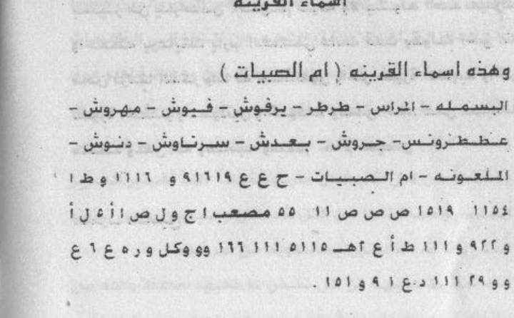
[Crop halaman 120 — crop presisi kiriman pengguna; nama berkas sama dengan halaman tujuan; bukan ekstraksi FINAL KHATAM dan bukan gambar ulang]
2. Penentuan Jam
«tidak ada hitungan di halaman ini»
Catatan penyunting
nama-nama dan deret huruf/angka ini tidak dapat saya terjemahkan dan tidak saya hitung ulang; saya salin sebagai bunyi dan angka apa adanya. Angka pada deret bisa salah baca (bentuk ٤/٩ dan ٦/٥ berdekatan) — saya tidak menjamin ketepatannya; rujuk pindaian. «م صع ب» kemungkinan «مصعب».
Harakat dan tanda baca Arab bersifat editorial.
Rajah, wafaq, dan jadwal angka/huruf pada halaman ini TIDAK digambar ulang; bentuk aslinya wajib diambil dari pindaian halaman yang bersangkutan.
kutipan «لو أنزلنا هذا القرآن على جبل…» adalah QS al-Hasyr 59:21 — perhatikan bahwa penulis menulis «سورة الحديد» pada baris sebelumnya lalu mengutip ayat al-Hasyr; saya catat ketidaksesuaian rujukan itu, teks tidak diubah. «حُرُوفًا مُفَرَّدَةً» = huruf-huruf terpisah (muqaththa‘at) — praktik yang tidak memiliki dasar dari Sunnah.
5. Khususiyah — Waktu : Media : Bukhur
Waktu: tidak disebutkan dalam sumber unit ini : Media: Surah al-Burūj dan al-Ḥadīd ditulis dalam huruf-huruf terpisah bersama kutipan al-Ḥasyr sampai akhir surah, lalu digantungkan pada anak atau maqrūn : Bukhur: tidak disebutkan dalam sumber unit ini
M121 — Halaman 121, حجاب القرناء dan wafaq Basmalah
Hijaabul qarnaa-i: uktub wafqal basmalatis syariifati(l) untsaa tsummak tub haulahul ahrufal a'jamiyyatal aatiyata wa hiya - a b t ts j h kh d dz r z s sy sh dh th zh - tsummak tub mi-ata jimin haakadzaa kahwu lahuu (hayyaa syaraahiyaa aduunaay ashbaawuts al syaddaay) tukarriru 41 marratan waktub ma'ahaa aayaatil hifzhi wal mu'awwidzataini wa shilhum.
[Wafqun mutsallatsun 3 x 3 marsuumun fish shafhati: fii shufuufihi «bismillaahir rahmaanir rahiimi» wa arqaamun, wa 'alaa haamisyihi kalimatu «wafqul basmalati» - raaji' shuurata shafhati 121]
3. Terjemahan
«Hijab al-Qarna’»: tulislah «wafaq Basmalah» yang bersifat feminin, kemudian tulislah di sekelilingnya huruf-huruf «ajami» berikut, yaitu: alif, ba, ta, tsa, jim, ha, kha, dal, dzal, ra, zai, sin, syin, shad, dhad, tha, zha; kemudian tulislah seratus kali «hākadzā kahwu lahū»; («hayyā syarāhiyā adūnāy ashbāwuts al syaddāy») engkau ulangi 41 kali; dan tulislah bersamanya ayat-ayat penjagaan dan kedua Mu‘awwidzah, lalu sambungkanlah.
[Wafaq 3 × 3 yang tergambar pada halaman: di dalam kotak-kotaknya «Bismillāhir-Raḥmānir-Raḥīm» dan angka-angka; pada tepinya tertulis «wafaq Basmalah» — rujuk gambar halaman 121.] [CATATAN PENERJEMAH: Dicatat apa adanya, tidak dianjurkan, tidak disahkan sebagai amalan]
4. Metode, Penentuan Jam, dan Catatan Penyunting
1. Metode
Praktik dari sumber (halaman 121): حجاب القرناء — menulis Basmalah pada kertas, menulis huruf abjad mengelilinginya, menulis «هكذا كهو لهو» seratus kali, menulis «هيا شراهيا أدوناي أصباوث إل شداي» 41 kali, menulis ayat-ayat, lalu wafaq 3×3 bergambar berisi «بسم الله الرحمن الرحيم» dan angka-angka (dengan catatan tepi «وفق البسملة»). Wafaq tidak digambar ulang dan angkanya tidak saya rekonstruksi.
[Dinisbatkan pada penulis; tidak ada jaminan; dicatat tidak dianjurkan tidak disahkan]
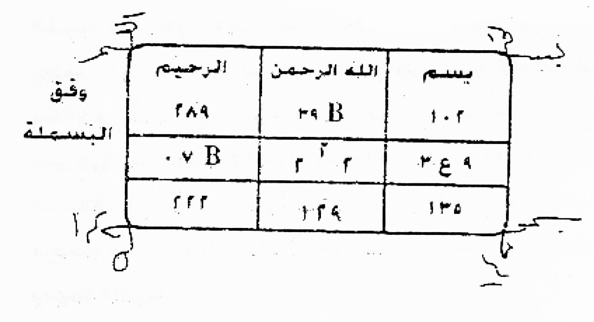
[Crop halaman 121 — crop presisi kiriman pengguna; nama berkas sama dengan halaman tujuan; bukan ekstraksi FINAL KHATAM dan bukan gambar ulang]
2. Penentuan Jam
«tidak ada hitungan di halaman ini»
Catatan penyunting
«مِائَةَ جِمْ» tidak jelas (mungkin «مائة مرة»); «الْأَحْرُفَ الْأَعْجَمِيَّةَ» = huruf-huruf non-Arab/asing (di sini justru abjad Arab) — istilah cetakan yang saya pertahankan. Rangkaian «هيا شراهيا أدوناي أصباوث إل شداي» adalah kata-kata non-Arab yang lazim dalam literatur ini; saya tulis sebagai bunyi. I‘rab tidak dapat diterapkan konsisten.
Catatan editorial: praktik ini tidak bersumber dari Al-Qur’an/Sunnah; dicatat, tidak dianjurkan.
wafaq pada halaman ini adalah gambar tangan berisi angka dan lafal Basmalah. Saya tidak menggambar ulang dan tidak merekonstruksi angkanya, karena angka pada wafaq harus persis seperti aslinya; salah satu angka terbaca «٢٨٩» dan «٤٣٩» tetapi saya tidak menjamin ketepatannya. Bentuk asli wajib diambil dari pindaian halaman 121.
Harakat dan tanda baca Arab bersifat editorial.
Rajah, wafaq, dan jadwal angka/huruf pada halaman ini TIDAK digambar ulang; bentuk aslinya wajib diambil dari pindaian halaman yang bersangkutan.
5. Khususiyah — Waktu : Media : Bukhur
Waktu: tidak disebutkan dalam sumber unit ini : Media: wafaq Basmalah dengan huruf alif sampai ẓā’ mengelilinginya; «hākadzā kahwu lahū» ditulis 100 kali; rangkaian «hayyā syarāhiyā…» ditulis 41 kali; ayat-ayat penjagaan dan al-Mu‘awwidzatain; wafaq 3×3 bergambar : Bukhur: tidak disebutkan dalam sumber unit ini
M122 — الخاتمة, halaman penutup kitab (tanpa nomor)
Al-khaatimatu. Al-hamdu lillaahil ladzii waffaqanii li-ikhraaji haadzal kitaabi 'alaa haadzan nahwi wa annii laa astathii'u an abuuha bi-aktsara min haadzaa falladzii nafsii biyadihi inna hunaaka asraaran idzaa buhtu bihaa laqaalath thaah libu bi-annasy syaikha mahmuudun majnuunun fa-ana aktafii bihaadzaa wa anasy syaakiru lillaahi subhaanahu wa ta'aalal qadiimil azaliyyil fardish shamadil ahadil hayyil qayyuumi dzul jalaali wal ikraami 'alaa taufiiqihi lii wa ana arjuuhu an yuwaffiqanii limaa fiihil khairu lii wa lil muslimiina wa an yusaddida kalimaatii fii makaanihash shahiihi. Yaa ayyuhath thaah libu qabla an tubda-a fii fi'li ayyi syai-in fii haadzal kitaabi fa'alika bish shalaati rak'ataini lillaahi ta'aalaa tsummash shalaata 'alaa nabiyyihi 'asyrata marraatin tsummaqra-il faatihata lisy syaikhi muhammadin sibaami baarakallaahu fiika wa 'alaika wal labiibu bil isyaarati yafhamu fafhamaa tursyad.
3. Terjemahan
Penutup. Segala puji bagi Allah yang telah memberiku taufik untuk mengeluarkan kitab ini dalam bentuk ini; dan sesungguhnya aku tidak mampu mengungkapkan lebih dari ini. Maka (Dzat) yang jiwaku berada di tangan-Nya, sesungguhnya di sana ada rahasia-rahasia yang apabila aku mengungkapkannya, penuntut akan berkata bahwa syekh itu «gila»; maka aku cukupkan dengan ini. Dan aku bersyukur kepada Allah—Mahasuci dan Mahatinggi—Yang Mahaawal, Yang Mahakekal, Yang Mahaesa, Yang Maha Dibutuhkan, Yang Maha Satu, Yang Mahahidup, Yang terus-menerus mengurus, Yang memiliki keagungan dan kemuliaan, atas taufik-Nya kepadaku; dan aku berharap Dia memberi taufik kepadaku kepada apa yang baik bagiku dan bagi kaum muslimin, serta meluruskan kalimat-kalimatku pada tempatnya yang benar. Hai penuntut, sebelum engkau memulai perbuatan apa pun dalam kitab ini, hendaklah engkau salat dua rakaat karena Allah—Mahatinggi—kemudian berselawat kepada nabi-Nya sepuluh kali, kemudian bacalah al-Fatihah untuk (hadiah kepada) Syekh Muhammad Sibami. Semoga Allah memberkatimu dan atasmu; dan orang yang berakal memahami dengan isyarat. Maka pahamilah keduanya, engkau akan mendapat petunjuk.
4. Metode, Penentuan Jam, dan Catatan Penyunting
1. Metode
Praktik: penutup. Halaman terakhir berjudul الخاتمة (tanpa nomor halaman yang terbaca). Berisi pujian kepada Allah karena telah menyelesaikan kitab dan pernyataan penulis bahwa ia tidak dapat mengungkap lebih banyak rahasia, lalu wasiat kepada pembaca sebelum memulai apa pun dalam kitab: salat dua rakaat karena Allah, berselawat kepada Nabi sepuluh kali, kemudian membaca al-Fatihah untuk Syekh Muhammad Sibami — ditutup «فافهما ترشد» (pahamilah keduanya, engkau akan mendapat petunjuk).
2. Penentuan Jam
«tidak ada hitungan di halaman ini»
Catatan penyunting
halaman ini {tanpa nomor halaman} yang terbaca pada pindaian; saya tidak memberi nomor 122. Nama yang terbaca «مَحْمُودٌ مَجْنُونٌ» (Mahmud yang gila) — bisa jadi bagian kalimat penulis tentang dirinya, dan pada baris wasiat nama yang muncul «مُحَمَّدٍ سِبَامِي» (Muhammad Sibami, sama dengan nama pada halaman 114). Saya pertahankan keduanya dan menandai bahwa bentuk persis nama dan gelar penulis pada halaman ini belum dapat saya pastikan; pada halaman-halaman lain nama penulis tertulis «محمد سامي محمد محمد». «فَافْهَمَا» (dual) merujuk dua hal: salat+selawat dan isyarat.
penutup kitab; tidak ada halaman berikutnya dalam pindaian 62 lembar. seluruh isi 97–121 berisi praktik yang tidak bersumber dari Al-Qur’an/Sunnah; saya mencatat dan menerjemahkan sebagai dokumen, bukan mengamalkan atau mengesahkannya. Harakat dan tanda baca Arab bersifat editorial. Rajah, wafaq, dan jadwal angka/huruf pada halaman ini TIDAK digambar ulang; bentuk aslinya wajib diambil dari pindaian halaman yang bersangkutan.